调研纪要 · 2026-10-20 新闻日报
星球 ID: 28855458518111 | 共 323 条帖子 | 精华 70 条
| 查看研究积累
强制同步到研究积累
全部 计算机 机械设备 电子 其他 电力设备 通信 医药生物 非银金融 汽车 建筑材料 宏观策略 农林牧渔 国防军工 基础化工 有色金属 公用事业 社会服务 食品饮料 传媒 交通运输 美容护理 银行 家用电器 房地产 轻工制造 环保 建筑装饰 商贸零售
书签
中国巨石玻纤年会重点信息
中国巨石玻纤年会重点信息
普通电子布市场判断：
电子布市场远超预期，产业周期将远超历史维度。需求端是PCB总量的稳健增长+AI品类的指数级爆发。虽然消费电子和家电承压，但AI服务器混压、新能源汽车电子化加速、新型电力系统和储能建设有更正向的拉动作用。供给端织布机和电子纱双重瓶颈延续。预计供应紧张几年内都较难缓解，价格中枢会进一步上移。
普通电子布的技术突破：
D900、C1200、DC1500持续量产，1080及以下电子布年产能超1.2亿米，超薄106实现多家战略客户放量，1037通过核心客户认证，1027打通全流程工艺具备量产条件。
特种电子布进展：
一代低介电（JLG），完成批量化试生产，Q4可量产，目前已有订单；
二代低介电（JLS），开展批量化试生产，采用多技术路线并行，进度良好，批量产品预计年底向重点客户验证；
一代低膨胀（JTG），实现批量生产，可量产认证，核心客户对膨胀系数性能评价好；
石英（JQG），电性能国内第一梯队，实现批量生产，可量产认证，但目前需求还没体现。
十五五末目标：
粗纱产能超450万吨，风电光伏纱、热塑增强纱各突破150万吨；
电子布产能超20亿米，十五五内新建生产线2/3以上投向薄布超薄布，十五五末整体高端产品占比突破35%，特种电子布全球市场份额突破15%◦
中国巨石（600176.SH）3Q26业绩点评：电子布涨价趋势不改，看好明年产品结构升级
中国巨石（600176.SH）3Q26业绩点评：电子布涨价趋势不改，看好明年产品结构升级
📍财务表现：营收同比+44%至69.19亿元；归母净利同比+174%至24.12亿元；扣非归母净利同比+164%至24.06亿元，盈利符合市场预期。
📍盈利能力：毛利率环比+6.86ppt至51.24%，同比+18.42ppt；净利率环比达34.87%；粗纱吨净利环比或基本持平、同比略增。
📍电子布提价：普通电子布提价趋势或延续，10月行业普通厚布再度提价1.5元/米，薄布、超薄布价差拉大、紧缺程度较高；电子纱紧缺叠加织布机制约，行业供给紧缺尚未缓解，产业链价格传导相对顺畅。
📍周转与现金流：前三季度应收账款周转天数37.88天，同比-13.36%，周转率7.13次，同比+15.42%；3Q26财务费用率由1.9%降至1.4%，同比-0.5ppt；前三季度经营现金流净流入39.57亿元，同比+85.36%；自由现金流8.24亿元，资本开支31.33亿元，同比+423%。
📍发展趋势：电子布行业供需紧缺格局仍将延续，7628产品涨价趋势有望维持。此外，在终端机型升级带动产业链结构优化背景下，薄布、超薄布供需紧缺持续时间或超市场预期；Low Dk2、Low CTE等AI特种布具备期权价值，有望为公司带来超额盈利及估值修复。
📍盈利预测与估值：我们维持跑赢行业评级，上调目标价11.5%至44.6元，对应26/27E 21x/15x P/E，隐含32.27%上行空间。
📍风险：需求修复不及预期，产能投放超预期，提价落地不及预期。
[發]【国泰海通医药】海思科发布业绩预告，前三季度利润高增
[發]【国泰海通医药】海思科发布业绩预告，前三季度利润高增
[玫瑰]晚间，海思科发布前三季度业绩预告，前三季度实现归母净利润13.2-14.0亿元，同比增长297%-321%；实现扣费净利润12.2-13.0亿元，同比增长250%-273%。利润高增的原因主要系：1）创新药国内销售保持快速增长；2）公司在前三季度收到多个首付款等款项收入；
[玫瑰]根据股权激励情况，3q26公司实现归母净利润约为4.69-5.49亿元，实现扣非净利润约为4.67-5.47亿元，3q25公司实现归母净利润约为1.66亿元。我们认为3q26公司利润的高增主要系公司几项合作首付款及里程碑的部分确认，其中：1）2026/6/1 公司和礼来达成合作协议，获得0.87亿美金首付款和近期里程碑；2）2026/6/23 公司就BRAF抑制剂和CFB抑制剂Nuvectis达成合作协议，获得0.4亿美金首付款和近期里程碑；2026/8/26 公司就STAT6 PROTAC和Sentivera达成合作协议，获得0.4亿美金预付款和0.3589亿美金股权；
[玫瑰]多款新药陆续进入上市/上市准备阶段，为增长持续贡献动能。年初至今，公司已新增获批两项适应症：1）环泊酚美国全麻诱导适应症；2）CFB抑制剂 初治PNH适应症，且已递交4项上市申请，有望于2027年获批：1）安瑞克芬术后镇痛适应症；2）克利加巴林中枢神经痛适应症；3）CFB抑制剂PNH适应症；4）HL231马来酸茚达特罗+格隆溴铵吸入制剂COPD适应症；
[玫瑰]研发进展顺利，多款新药具有全球竞争力。年初至今公司已推进约5款新药进入临床阶段，包括口服GLP1、口服NAV1.8、STAT6 PROTAC、PARP1抑制剂等。此外，公司旗下处于全球领先阶段的IL23R口服环肽、α4β7小分子、BCL6 PROTAC、NAV1.8注射剂等资产同样进展顺利。ESMO大会上，公司BRAF抑制剂和PRMT5抑制剂发布了初步临床结果，疗效和安全性表现优异。
[玫瑰]联系人：余文心/余克清/廖博闻
🔥🔥【海思科】2026前三季度利润预增最高321%，创新药放量+BD首付款双轮兑现！【东吴医药朱国广团队】
🔥🔥【海思科】2026前三季度利润预增最高321%，创新药放量+BD首付款双轮兑现！【东吴医药朱国广团队】
[玫瑰]事件：10月20日公司发布前三季度业绩预告，预计2026Q1-Q3归母净利润13.2-14亿元（+297.02%~321.08%），扣非净利润12.2-13亿元（+250.27%~273.24%）。在研发费用同比增长的情况下利润依然高增，驱动因素有两点：一是创新药国内销售持续快速增长，二是多个对外授权合同的首付款等款项在前三季度确认，授权收入集中兑现。
[玫瑰]五款1类创新药梯队放量，基本盘持续夯实。思舒宁2025年以超22%的份额稳居国内静脉麻醉药市场第一，全年销售额约17.5亿元；2026年5月获FDA批准，成为中国首个走向国际的静脉麻醉原研创新药。思美宁、倍长平持续渗透，思舒静进入医保后快速放量。优可盼7月获批PNH，是全球首个每日一次口服CFB抑制剂，已陆续进入地方惠民保，第五款1类新药开始贡献增量。
[玫瑰]年内5笔BD落地，首付款兑现为业绩。（1）2026年先后与AirNexis、艾伯维、礼来、Nuvectis、Sentivera达成5笔对外授权，涉及HSK39004、Nav1.8抑制剂、多靶点小分子合作、HSK42360/HSK39297及临床前口服自免小分子，累计潜在总额超75亿美元。（2）前三季度首付款集中确认，推动利润跃升；后续里程碑及特许权使用费有望持续贡献，叠加2023年授权Chiesi的HSK31858等历史交易，BD收入具备延续性。（3）公司实施2026年半年度分红，每10股派5.26元。
[红包]管线稳步推进，后续催化密集。（1）HSK42360-Na片9月拟纳入突破性治疗，HSK60002片哮喘适应症、HSK47388新适应症获批临床。（2）HSK31858、HSK44459、HSK39004等呼吸管线III期推进中。（3）思美宁、思舒静新适应症及HL231处于上市审评阶段；HSK31679 III期、HSK55879 II期、HSK46575 Ib/II期推进中，HSK55718、HSK47388等II期数据有望陆续读出。
风险提示：新药研发失败风险、临床推进不及预期、BD协议生效及里程碑实现不确定性、授权收入一次性波动风险、商业化不及预期、市场竞争加剧等。
联系人：朱国广/肖鸿德
福耀玻璃发布三季报（收入符合预期，归母略低于预期，还原一次性影响可接受）
福耀玻璃发布三季报（收入符合预期，归母略低于预期，还原一次性影响可接受）
[玫瑰]26年前三季度实现营收341.2亿元/同比+2.5%，归母净利润60.1亿元/同比-15.0%，扣除汇兑（前三季度为损失10.7亿元）影响后，利润总额同比+1.2%，整体稳健。
其中，26Q3实现营收121.5亿元/同比+2.5%，跑赢中国汽车行业（含内销+出口）7.4pct，实现归母净利润20.4亿元/同比-9.9%。归母净利润同比下滑，主要受汇兑和销售&研发费用增加等因素影响。26Q3汇兑损失2.6亿元，而去年同期汇兑损失1.2亿元。
[玫瑰]26Q3毛利率38.0%，同比+0.1pct；归母净利率16.8%，同比-2.3pct。从费用率来看，26Q3销售/管理/研发/财务费用率分别为3.3%/7.4%/4.9%/1.3%，同比+0.6/-0.2/+0.6/+1.7pct，财务费用率提升主要由于汇兑影响，[太阳]销售费用增加主要由于客户质量解决问题产生客户售后服务费记为0.78亿元，预计将在26Q4通过保险赔付收回。
[庆祝]中长期逻辑：国内继续演绎新能源化和智能化带来量价齐升，海外研发份额提升且尚处于新能源初期，还将继续跑赢行业7-10个pct持续稳健增长。预计26-27年经营业绩为97亿，108亿元，若考虑汇兑影响，预计26-27年归母净利润为85亿、104亿元，叠加高分红，维持重点推荐。
联系人广发汽车周伟18601718993
【国联民生计算机】‼️继续看好【浪潮信息】Q4有望迎来重要拐点：受益大厂AI算力开支持续提升
【国联民生计算机】‼️继续看好【浪潮信息】Q4有望迎来重要拐点：受益大厂AI算力开支持续提升
10月20日据云头条报道，字节跳动、阿里巴巴、腾讯或已订购超300万块英伟达RTX Pro 5500工作站GPU，单价约1.14万美元、合计或超350亿美元，中国客户订单总量或已超600万块。
[太阳]AI推理需求带动大厂采购放量，相关推进有望加速
9月28日通信世界报道，阿里、字节等有意采购RTX系列产品，部分大厂初步评估约百万颗用于AI推理，英伟达计划自12月底起按季度向中国出货；该芯片为国内客户在合规前提下可获得的性能上限方案之一。
[太阳]国内资本开支上修叠加算力出海提速，公司作为头部供应商双重受益
以字节跳动为代表的国内科技企业2026年资本支出计划超2000亿元；TikTok泰国数据基础设施扩建项目约250亿美元。
公司作为国内头部互联网大厂的核心服务器供应商，有望同时受益于国内算力扩张与算力出海的双重需求红利。
风险提示：算力需求释放节奏具有不确定性；行业竞争加剧。
联系人：国联民生计算机吕伟/郭新宇
【紫金龙净】26年三季报点评：26Q3业绩主要受到费用影响，期待电动矿卡持续放量
【紫金龙净】26年三季报点评：26Q3业绩主要受到费用影响，期待电动矿卡持续放量
‼️26Q3业绩同比增长15%，基本符合预期，受到管理费用和汇兑损失影响
2026年前三季度公司营收86.89亿元（同比+10.57%）、#归母净利润9.43亿元（同比+20.84%），其中2026Q3单季营收33.05亿元（同比+4.10%）、归母净利润3.86亿元（同比+15.29%），基本符合预期。费用端：1）前三季度受美元汇率波动影响产生#汇兑损失约0.64亿元，Q3单季财务费用0.34亿元（同比仅+0.04亿元）；2）Q3管理费用1.45亿元（同比+0.29亿元），#主要系补缴社保所致。
✅20亿定增正式落地，实施三季度分红
公司向控股股东紫金矿业发行1.42亿股（发行价14.06元/股，募资总额20亿元），新增股份已于9月1日完成登记，发行完成后#紫金系合计持股比例由25%提升至32.55%（其中紫金矿业直接持股29.03%），#控股股东地位进一步增强。同时公司公告2026年前三季度利润分配方案，#拟每10股派发现金红利1.5元（含税），股东回报持续加码。
💡麻米错投产贡献稳定增量，期待电动矿卡放量
1）储能：1-9月储能电芯#累计交付9GWh（Q3单季约3.45GWh，环比持续爬坡），订单储备充足；2）绿电：麻米错项目6月底投产，Q3贡献稳定增量，此外9月23日公司公告投资建设苏里南罗斯贝尔金矿二期光储项目、圭亚那奥罗拉金矿选矿厂三期光储项目、圭亚那奥罗拉金矿地采厂光储项目，规模分别为170MWp光伏+120MW/120MWh储能、15MWp光伏+20MW/80MWh储能、45MWp光伏+50MW/100MWh储能，项目储备充足；3）电动矿卡：#加快交付节奏，有序推进业务转化落地。
📍大气订单保持稳定，环保基本盘稳固
前三季度公司新增环保设备工程合同72.30亿元（Q3单季新增约21亿元），其中电力行业占比58.15%、非电行业占比41.85%；截至26Q3#在手环保设备工程合同199.28亿元，与H1末（201.52亿元）基本持平。新一代煤电节能降碳改造叠加水泥、焦化等超低排放改造需求，公司持续巩固大气污染治理龙头地位，环保主业底盘稳固。
【良信股份】拟回购坚定信心，重视底部布局窗口-1020
【良信股份】拟回购坚定信心，重视底部布局窗口-1020
事件：今日公司公告，董事长任思龙提议公司以自有资金回购股份，拟回购金额8000万-1.6亿，用于维护公司价值及股东权益。
#公司逻辑
1、主业盈利拐点渐近：原材料涨价已陆续传导给下游客户，Q3趋势向好；折旧、研发与海外团队等前置费用随收入放量摊薄，预计利润率将步入修复通道。
2、AIDC业务加速兑现：目前已有11款UL认证产品切入北美数据中心供应链，深度绑定维谛（2027年预计供货1-2亿元、远期若达到30%份额对应约10亿）；新一代固态断路器预计27H1取得全球首张UL证书，先发卡位明确。
3、预计26/27年归母净利润分别为3/5亿，公司经营拐点迹象明确，当前位置胜率赔率均极高，重点推荐！
[红包]【兴证通信】中国移动26Q3点评：业绩短期承压，持续看好红利属性
[红包]【兴证通信】中国移动26Q3点评：业绩短期承压，持续看好红利属性
[庆祝]事件：公司发布2026年三季报，前三季度实现营收7803亿元，同比-1.8%；主营业务收入6577亿元，同比-3.7%；归母净利润1062亿元，同比-7.9%；扣非归母净利润984亿元，同比-8.1%；#经营现金流净额1853亿元，#同比增长15.1%。
[太阳]点评：#业绩短期承压，#利润受到非经常性项目拖累。26Q3公司营收2423亿元，同比-3.4%；归母净利润273亿元，同比-12.2%，收入及盈利仍面临压力。非经短期影响业绩，Q3金融资产公允价值变动及处置损益为-31.10亿元，归母非经常性损益为-14.28亿元。Q3扣非归母净利润287亿元，同比仅下降0.2%，表现强于报表利润。
[玫瑰]#客户基础保持稳固，#移动与宽带规模继续增长。截至三季度末，移动客户数10.14亿户，年内净增889万户；5G网络客户数7.02亿户，较二季度末增加约1500万户，渗透率约69.2%；宽带联网客户数3.42亿户，年内净增1305万户，其中Q3净增535万户，用户规模继续扩张。
[玫瑰]#分红政策保持积极，#持续看好红利属性。公司2026年中期每股派息2.51元（含税），同比增长0.3%，并明确2026年派息率将稳中有升，体现盈利承压背景下对股东回报的重视。持续看好公司红利属性，后续关注全年盈利及每股分红兑现情况。
中国移动三季度业绩速览
中国移动三季度业绩速览
🎁中国移动2026年前三季度营业收入同比下降1.8%至7803亿元，归母净利润同比下降7.9%至1062亿元，略低于我们此前预期，全年维度看，公司经营保持稳健，我们预计增值税对净利润的影响维持在5%-10%区间。
[太阳]传统业务方面，公司深入实施网络强基、全栈创新的战略，移动用户数较2025年底净增长889万户至10.14亿；宽带联网客户数较2025年底净增长1305万户至3.42亿户，基本盘及现金流保持稳健。公司加强智能布局卡位、加快算力市场拓展，持续提升核心竞争力，移动云、AIDC、Token套餐等新业务有望筑牢第二增长曲线。
[太阳]盈利能力方面，中国移动2026M9毛利率为29.1%（2025M9：31.1%），净利率为13.6%（2025M9：14.5%），同比略有下滑，主要系增值税调整对业绩的影响所致，从成本端来看，公司营业成本、销售管理费用及投资收益等细项较去年同期维持平稳态势，彰显公司精细化管理的能力。
[太阳]总体而言，中国移动各项业务均处于运营商中领先地位，盈利能力强，负债低，现金流充裕，公司当前股息率H股约6.7%，A股约4.6%，仍然可以作为高股息标的优选配置。
[太阳]【中国移动】Q3扣非基本持平，关注高股息率
[太阳]【中国移动】Q3扣非基本持平，关注高股息率
[玫瑰]公司前三季度营收7803亿元，同比-1.8%；主营业务收入6577亿元，同比-3.7%；其他业务收入1226亿元，同比+9.9%。归母净利润1062亿元，同比-7.9%，净利率13.6%，同比-0.9pp；扣非归母净利润984亿元，同比-8.1%；经营活动现金流量净额1853亿元，同比+15.1%，现金流表现优于利润。
[玫瑰]Q3单季营收2423亿元，同比-3.4%，其中主营业务收入2051亿元，同比-5.1%；其他业务收入372亿元，同比+7.2%。归母净利润273亿元，同比-12.2%，净利率11.3%，同比-1.1pct；扣非归母净利润287亿元，同比-0.2%。Q3非经常性损益为-14.28亿元，其中非金融企业持有金融资产和金融负债产生的公允价值变动及处置损益为-31.10亿元，也为利润波动的因素之一。
[玫瑰]公司加快算力/智能业务拓展，并结合成本管控、现金流改善等保持经营韧性，当前H股/A股股息率分别约为6.7%、4.6%，关注高股息率。
【磁谷科技】更新推荐：全球暖通“金标准”AHRI性能认证已过，订单与产能释放值得期待
【磁谷科技】更新推荐：全球暖通“金标准”AHRI性能认证已过，订单与产能释放值得期待
[礼物]公司于10月15日拿到AHRI认证，该认证属于美国空调协会认可，标志着产品可向全球出货。此外美国UL认证、欧洲CE认证正在稳步推进。磁谷的磁悬浮冷水机组与磁悬浮压缩机产品进展迅速，认证/订单/产能三维度同时进展迅速，期待后续持续催化。
[太阳]与EPG合资磁普科技的冷水机组进展：一期为租赁的六千多平厂房，规划年产能1GW（对应约700台冷水机组），目前生产布局完成，处于小批量生产阶段；二期工厂总规划年产能约2GW。目前除了EPG的需求外，公司正积极与各大colo商对接并取得良好进展。#公司一期产线满产后冷水机组产值可达近20亿，业绩有望快速兑现，整个行业供不应求情况下后续产线也有望快速落地。
[太阳]与比泽尔合资公司压缩机头的进展：公司磁悬浮机头完全自主生产，比泽尔渠道优势显著，北美拥有3个工厂，2025年营收接近100亿元人民币，可助力公司产品快速切入北美、欧洲市场。丹佛斯产能紧缺下，磁谷与比泽尔合作有望弥补行业缺口快速放量。#与比泽尔合作机头的UL认证有望年内完成，远期机头产能规划上万台。
[烟花]此外公司还布局CDU侧补冷型小冷机业，计划2026年年底推向市场，契合未来发展方向同样值得期待。公司在认证/订单/产能三维度同时进展迅速，当前26年估值不到20倍PE且有持续进展催化，建议持续关注。
华泰机械 杨云逍/王龙钰
【HXDZ】天岳先进Q3：同环比继续上行，利润大超预期
【HXDZ】天岳先进Q3：同环比继续上行，利润大超预期
📋3Q26
➠营收：6.46亿元，同比+103%，环比+18%；
➠归母：0.86元，同比+979%，环比+4434%；
➠毛利率：27.46%，同比+6.87pct，环比+2.1pct；
➠净利率：12.84%，同比+15.93pct，环比+2.63pct；
连续三季营收利润持续上行，公司作为行业龙头，引领了SiC行业高速增长的趋势。#利润端超预期增长，体现了龙头在产能紧缺下的核心地位！
🌟亮点：需求多点开花
新能源汽车800V高压平台渗透率持续提升，带动车规级导电衬底稳步放量；AI服务器高压电源成为核心新增需求，叠加光储、大功率超充需求释放，多下游协同拉动衬底出货规模增长，实现营收同比提升。
💡我们认为行业趋势已经愈发明显，持续上行的业绩还会随着未来AI电源等相关需求的释放，实现进一步的跨越式发展。#当前龙头企业产能紧张，而需求仍在持续增长，未来增长动能显著！
By Buch
【长江电子杨洋团队】天岳先进2026Q3点评：单季收入利润创历史新高，份额扩大与AI算力需求爆发共振
【长江电子杨洋团队】天岳先进2026Q3点评：单季收入利润创历史新高，份额扩大与AI算力需求爆发共振
事件：公司10月20日发布三季报：前三季度营收15.59亿元（同比+40.22%）、归母净利2721.62万元（同比+2330.24%）、扣非882.95万元；单季Q3营收6.46亿元（同比+102.89%，环比+17.9%），归母净利8583.29万元、同比扭亏，扣非净利9616.8万元，扣非净利率约14.9%，#单季度收入利润均创历史新高！
①需求持续高增，收入提速兑现：Q3营收同比增速由Q2的42.06%升至102.89%，连续两个季度创单季新高；新能源车800V平台渗透率提升带动车规级导电衬底放量，AI服务器高压电源成为核心新增需求，叠加光储、超充需求释放，多个下游应用共同拉动出货规模增长。
②满产满销+良好价格趋势，碳化硅龙头盈利拐点确立：Q3扣非净利高于归母净利，盈利质量扎实，前三季度扣非净利由亏损转为盈利；规模效应与产品结构优化推动毛利率环比提升，8英寸收入占比过半、良率处于全球领先水平，单位折旧摊薄持续兑现。
③碳化硅衬底竞争角逐接近尾声，公司全球份额领先，AI打开第二增长曲线：据富士经济，2025年公司全球导电型碳化硅衬底份额27.6%、8英寸份额51.3%，稳居第一；公司已配合全球头部功率器件厂商推进AI数据中心PSU、HVDC、SST电源方案，并获英飞凌2026年“优秀供应商大奖”；散热中介层、金刚石等新材料布局同步推进。
#业绩拐点、产能爬坡与AI需求三重共振，Q4及2027年盈利弹性有望延续，碳化硅衬底龙头长期投资机遇值得重视！
欢迎联系长江电子杨洋团队！
月度锂矿进口到港数据汇总
月度锂矿进口到港数据汇总
9月电力设备出口全面提速，欧美共振放量——2026年9月电力设备出口数据详析
9月电力设备出口全面提速，欧美共振放量——2026年9月电力设备出口数据详析
1、液体变压器：9月出口53.66亿元，同比+8.15%、环比+27.39%，再创新高；1-9月386.60亿元，同比+22.41%。
[太阳]北美接棒成核心增量，11.35亿元、同比+308.64%、环比+132.37%；欧洲同比+20.44%。亚洲仍居首（14.18亿元）但高基数下同比-41.25%，为主要拖累。
[太阳]10-220MVA延续强势，23.84亿元、同比+30.53%；220-330MVA、400-500MVA分别+60.63%、+52.96%。
2、电表：9月出口9.96亿元，同比+37.38%、环比+0.58%；1-9月83.70亿元，同比+6.51%。
[太阳]增速抬升。亚洲3.19亿元、同比+24.92%、环比+13.23%，由降转增；拉美+73.49%；单相表+41.09%。
3、高压柜：9月出口36.05亿元，同比+61.38%、环比+38.85%；1-9月234.51亿元，同比+28.95%。
[太阳]欧洲6.63亿元、同比+209.96%，北美+1428.56%，双双爆发；亚洲20.47亿元、同比+45.34%。
4、电缆：9月出口33.99亿元，同比+83.50%、环比+41.39%，大幅创新高；1-9月221.26亿元，同比+33.15%。
[太阳]亚洲15.03亿元、同比+69.09%、环比+69.45%，欧洲8.57亿元、同比+346.25%，为主要增量。
[太阳]绕组线9月18.55亿元，同比+40.35%，1-9月同比+29.16%。
[太阳]有接头线缆9月142.23亿元，同比+51.50%、环比+13.36%；1-9月1097.69亿元，同比+27.44%，创年内单月新高。
5、低压开关：9月出口136.99亿元，同比+42.50%、环比+8.06%，同创新高；1-9月1054.79亿元，同比+26.30%。
[太阳]亚洲基本盘89.49亿元、同比+42.32%、环比+7.38%；北美16.84亿元、同比+62.60%，增速回升。
6、整体上，9月出口全面提速，液体变压器、电缆、有接头线缆、低压开关纷纷创历史新高，北美与欧洲是核心增量来源。产业链完整度高、难被替代，海外贸易政策或有放松空间，继续重点推荐电力设备出海趋势。
[玫瑰]具体情况欢迎联系交流
电池组件出口：9月数据环比大幅增长，中东组件出口显著修复
电池组件出口：9月数据环比大幅增长，中东组件出口显著修复
1、根据盖锡咨询，9月组件出口24.88GW，同比+4%，环比+50%；电池出口12.05GW，同比+9%，环比+51%；电池+组件出口36.92GW，同比+6%，环比+50%。1-9月组件累计出口177.65GW，同比-6%；电池累计出口85.35GW，同比+12%；电池+组件累计出口263.00GW，同比-1%。
2、组件方面，9月出口欧洲7.71GW，同比-16%，环比+16%；非欧美市场16.92GW，同比+16%，环比+73%。其中，沙特阿拉伯3.29GW，同比+501%，环比+314%；巴西1.00GW，同比-44%，环比+19%；菲律宾0.97GW，同比+77%，环比+133%；澳大利亚0.77GW，同比+42%，环比+56%；阿联酋0.75GW，同比-42%，环比+177%。
3、电池方面，出口以印尼、菲律宾、美国为主，前五大出口国合计5.71GW、占比47%。其中，印尼2.05GW，同比-22%，环比+0%；菲律宾1.45GW，同比+250%，环比+32%；美国1.27GW，同比+1387%，环比+68%；土耳其0.67GW，同比-17%，环比+19%；泰国0.28GW，同比+23%，环比+227%。
【招商机械】我们当前如何看待具身智能？
【招商机械】我们当前如何看待具身智能？
1. GPT-Astra重大突破将重塑行业格局
9月，RoboDojo发表论文《An Unexpected Robot Policy》测试了Astra的42项机器人任务表现，达到了平均22.48%的成功率，这意味着通用模型已经能够将视觉观察和任务指令转化为具体动作，而不再只能告诉机器人应该做什么。更进一步，实验团队将Astra与π0.5结合后实现了48%的成功率，这带来了三个产业上的判断：
1️⃣机器人专用基础模型的竞争格局可能发生变化
2️⃣机器人训练的数据瓶颈有望部分缓解，但不会消失，对特定数据的质量提出更高要求
3️⃣机器人能力升级可能不再完全依赖机器人厂商自身的模型迭代
2. 具身智能的商业化还有多远？
10月，Hugging Face上的一篇综合测评论文《Has GPT-6-Astra Achieved Embodied Intelligence？》提出了一个重要的观点：Astra 已经在很大程度上跨越了具身能力门槛，但尚未达到实用具身智能水平。
我们认为Astra击穿了VLA的核心瓶颈，但是距离商用化还有四点障碍：
1️⃣实时性：模型调用次数多且每次调研耗时长，导致动作缓慢
2️⃣可靠性：理解任务与完成任务之间仍有GAP
3️⃣成本：推理调用的成本还需要下降
4️⃣安全性：需要建立执行错误的保护机制
但是，参考LLM模型的迭代速度，我们认为模型一旦击穿VLA界限后，将会开启快速迭代，未来1年有可能在提高任务正确率的基础上，实现效率的极大提升。再结合商业化所需的工程准备，我们觉得目前合理的商用时间大概在3-5年左右。
3. 利好哪些细分赛道？
1️⃣本体公司直接受益，特别是本身将小脑能力打磨较好的本体公司将直接受益，本体公司将更加聚焦具体的场景部署
2️⃣零部件公司受益于本体公司的出货，其中灵巧操作与智能传感部件将对提升模型运动能力产生关键影响
3️⃣数据行业会迎来需求上的爆发，但是对数据质量与特殊数据的要求会提升
4️⃣算力：模型训练、端侧部署、数据采集都离不开算力，算力算法数据将形成螺旋上升趋势。
4. 接下来我们需要期待什么？
1️⃣类似Anthropic等一线AI House的模型出现类似Astra的物理能力，形成头部集团，螺旋迭代
2️⃣模型本身在权威测评体系下不断进化，任务成功率与效率不断提升
3️⃣物理交互能力不断加强，这里可能会用到运动模型（类似π0.5）或者世界模型的技术，也会促进硬件的迭代
4️⃣数据采集的收敛与数据的Scaling
5️⃣关键场景的突破（类似LLM的Coding）
总结：Astra突破了机器人“知道该怎么做”（从inputs到action）的问题，下一步需要解决“如何快速、精准、低成本地把事情做成”（action优化），最后解决“有经济价值地把事情做成”（商业化落地）。
[礼物] 【国盛能源电力】煤炭开采：# 煤炭上市公司成本全解析 ——2025 年
[礼物] 【国盛能源电力】煤炭开采：# 煤炭上市公司成本全解析 ——2025 年
———————————————
🔥#2025年成本整体普遍下行：动力煤样本加权销售成本270元/吨（同比-8）、现金成本296元/吨（-12）、完全成本331元/吨（-10）；焦煤样本加权销售成本463元/吨（-67）、现金成本509元/吨（-73）、完全成本583元/吨（-68），行业成本中枢下移，为盈利留出空间。
🌹# 动力煤企业分化显著，资源禀赋决定成本中枢。
👉2025 年样本动力煤企吨煤销售成本区间 93‑388 元 / 吨，吨煤现金成本 115‑429 元 / 吨，吨煤完全成本 124‑495 元 / 吨。电投能源、伊泰煤炭、昊华能源成本处于行业低位；郑州煤电、兰花科创、兖矿能源成本相对偏高。
👉 销售成本12家同比降低，#华阳股份（-79元/吨）、中国秦发（-74）、山煤国际（-36）降幅居前；现金成本降幅前三为华阳股份（-78）、山煤国际 （-45）、伊泰煤炭（-36）；完全成本降幅前三为华阳股份（-86）、中国秦发（-61）、山煤国际（-38）。
🌹# 焦煤开采难度更高，整体成本显著高于动力煤
👉焦煤多为井工矿，受瓦斯、冲击地压灾害制约，开采难度大，成本天然抬升。2025 年样本焦煤企吨煤销售成本 329‑1130 元 / 吨，吨煤现金成本 384‑1211 元 / 吨，吨煤完全成本 425‑1260 元 / 吨；永泰能源、潞安环能、山西焦煤成本占优，江钨装备、开滦股份、上海能源成本处于高位。
👉 销售成本9家同比降低，#平煤股份（-136）、盘江股份（-94）、山西焦煤（-91）降幅居前；现金成本降幅前三为平煤股份（-155）、盘江股份（-149）、上海能源（-104）；完全成本降幅前三为平煤股份（-151）、盘江股份（-142）、上海能源（-103）。
🌹# 投资建议
👉 山西板块预期修复：前期担忧安监压制产量、抬升成本，涨幅滞后；国有煤企资源禀赋更优、安全措施更严，产量有望恢复，关注#华阳股份、山煤国际、潞安环能、晋控煤业、山西焦煤。
👉 动力煤景气强化："5.22沁源煤矿瓦斯爆炸"抬升煤价中枢，关注#陕西煤业、昊华能源、兖矿能源、中国神华、中煤能源。
👉 焦煤反转而非反弹：7月/9月两轮长协累计上调（180~260元/吨、170~350元/吨），Q3业绩有望释放，优选#淮北矿业、平煤股份、盘江股份。
👉 弹性与海外：新集能源业绩&估值双击；"海外3小煤"#力量发展（南非）、兖煤澳大利亚（澳）、中国秦发（印尼）直接受益国际煤价。
[太阳] 报告链接：
【国盛能源电力】煤炭上市公司成本全解析——2025年 ↗
⚠️风险提示：在建矿井投产进度超预期，下游需求不及预期，新建矿井项目批复加速，数据测算过程存在误差的风险。
[太阳] 联系人：张津铭 / 刘力钰 / 高紫明 / 鲁昊 / 张卓然 / 张晓雅
【广发传媒互联网】产业边际变化密集，关注AI互动剧方向产品迭代
【广发传媒互联网】产业边际变化密集，关注AI互动剧方向产品迭代
事件：10/19，抖音集团短剧版权中心发布关于互动剧和互动影游合作相关通知，征集真人&AI互动剧与互动影游作品。
#互动作品、AI精品化内容将是未来一段时间产业发展主线。在AI内容消费向好、流量价值不断攀升的背景下，平台提升单用户价值、世界模型落地预期、传统真人内容降本三方面需求，将共同促进产品端不断迭代。
展望催化，Q4有望看到1）字节世界模型发布，助力高质量影视内容、互动内容以及物理AI。2）微信视频号进一步扶持AI内容的流量变化。3）流浪地球3预热。4）Tiktok海外短剧平台PineDrama下载量放量。
[太阳]此前我们也发布了关于AI短剧、AI互动剧的深度报告，详细拆解了行业演绎、互动剧与互动影游产品形态与产业端布局。如有需要可以联系我们团队~
#近期AI内容端产品梳理：
AI+互动剧相关
德才股份：《零号档案：降临》已上线，多部正在制作中
真人互动影游相关
华智数媒：《
天坑追匪 ↗ 》（天下霸唱小说IP）→10/20
百纳千成：《
隐藏真探 ↗ 》→12/2
AI精品内容相关
华策影视：《
西游记之消失的五百年 ↗ 》（pv已发布）、《
资治通鉴 ↗ 》
博纳影业：《
三星堆：未来往事 ↗ 》→10/23、《计划外：广寒行动》（制作中）
阅文集团：《
赛博英雄传 ↗ 》《
不科学御兽 ↗ 》《
裁决 ↗ 》《
镇妖博物馆 ↗ 》（10/16，2026阅文创作大会披露片单）
国家数据集团正式成立，看好出版、权威媒体公司投资机会【中泰传媒互联网】
国家数据集团正式成立，看好出版、权威媒体公司投资机会【中泰传媒互联网】
[玫瑰]事件：荆楚网信息显示，10月20日，国家数据集团正式成立。该集团是以数据资源开发利用为主责主业的中央企业，总部设立于河北雄安新区。
[玫瑰]点评：
⭐该集团成立旨在推进数据资源开发利用、释放数据要素价值、服务人工智能发展、繁荣数据产业生态。成立后，集团将在有关部门指导下，加强央地联动，深化产业协同，推动能力共用、经验共享、业务共拓，共同做大数据价值、做强数据产业、做优数据生态。
⭐我们看好国内自上而下持续推进数据资源开发利用的产业主线，国家数据集团作为国家级数据运营主体落地，是数据要素体系建设的关键里程碑，有望加速理顺数据流通、价值分配等核心机制。随着顶层统筹主体就位，垂类数据公司的商业化路径有望进一步明确，出版、权威媒体等手握海量合规优质内容数据的市场主体，看好依托产业协同生态加速数据资产化改造，拓展数据交易、API 服务、模型化解决方案等多元变现模式，挖掘业绩增长新动能，其数据资产的内在价值有望得到深度挖掘与价值重估。
🔥建议关注：
重点推荐：【中国科传】
另外，建议关注垂类内容数据优势显著的出版公司：荣信文化、中信出版、南方传媒、中文在线、中国出版、时代出版、读者传媒等。
国有背书加持，公信力显著的权威媒体公司：新华网、人民网、新华传媒、博瑞传播等。
⚡风险提示：政策监管风险、AI技术发展落地不及预期、内容数据拓展不及预期
☎ 欢迎交流&派点请支持中泰传媒互联网团队
康雅雯 18521305887、李昱喆 18939881981
【东吴计算机】国家数据集团成立，关注AI数据！
【东吴计算机】国家数据集团成立，关注AI数据！
事件：
国家数据集团有限公司在河北雄安新区成立，成立后，国家数据集团将在有关部门指导下，加强央地联动，深化产业协同，推动能力共用、经验共享、业务共拓，共同做大数据价值、做强数据产业、做优数据生态。
近日，工信部正在研究起草新一代智能制造的有关政策措施，加快推动人工智能与制造业深度融合，要求建设高质量工业数据集，推动数据、模型、软件和装备相互适配、高效协同。围绕智能排产、参数调优、缺陷检测、设备运维等场景，实施模数共振行动。
观点重申：
我们预计未来国家数据集团将统筹央地和产业数据资源，加快推动各行各业数据资源开发利用。
高质量数据集是AI发展的基础，建议关注以下两个方向：
1）物理AI：数据缺口非常大，中国是制造业强国，有丰富的制造业数据资源，可开发空间广阔。
2）医疗AI：药物发现/验证需要大量基础数据分析，国内临床数据积累优势显著。
建议关注：
物理AI数据：海天瑞声、凡拓数创、敏芯股份、中控技术；
地市数据运营：深桑达A；
AI医疗数据：迪安诊断、国新健康、美年健康。
风险提示：技术发展不及预期。
【国泰海通计算机】国家数据集团正式雄安落地，数据要素从“建规则”迈入“做运营”
【国泰海通计算机】国家数据集团正式雄安落地，数据要素从“建规则”迈入“做运营”
10月20日，国家数据集团在雄安成立，定位为以数据资源开发利用为主责主业的中央企业，并在成立目标中明确写入“服务人工智能发展”。过去几年国家数据局负责“管规则”，地方数据集团已超百家、省级运营主体基本铺开，但缺少以数据资源开发为主业的国家级运营主体。国家队入场补齐“国家+区域”双层运营体系，数据要素正式从制度设计走向实体运营。
数据的买方在变：过去公共数据开放主要服务政务效率，如今大模型与具身智能把高质量数据变成AI的“燃料”。截至2026年6月，全国高质量数据集超12万个、总量超1565PB，较一季度末增长超60%；7个标注先行城市标注规模超119PB；数据基础设施接入主体4万余个、上架产品6万余个，较2025年底分别增长10倍和4倍。叠加“为优质数据付费”与词元交易的定价探索，数据正从“开放共享”走向“定价交易”，归集、标注治理、登记流通、场景开发各环节需求有望同步扩容。
2026年为“数据要素价值释放年”，国家队入场叠加AI数据需求，持续看好数据要素产业链。
建议关注：海天瑞声、慧辰股份、上海钢联以及AI应用等有场景数据标的！
欢迎联系国泰海通计算机杨林团队
[红包]【中信互联网】DeepSeek开源DeepInfer：推理降本+昇腾适配，进一步完善开源部署生态
[红包]【中信互联网】DeepSeek开源DeepInfer：推理降本+昇腾适配，进一步完善开源部署生态
[烟花]事件：10月20日，DeepSeek开源大规模推理框架DeepInfer及生产级Token编解码组件deepseek-recipe，分享V4.1 Flash的线上部署经验。前者开放高性能推理引擎及相关优化能力，后者对齐官方API处理逻辑，帮助开发者与企业搭建私有化及公有云服务。公司表示，未来新模型的推理代码及后续性能优化也将在DeepInfer中持续开源。
[咖啡]看点一：披露大规模线上运行表现，推理工程成为模型经济性的重要支撑
据公司披露，基于DeepInfer的V4.1 Flash单集群日服务吞吐达到155万亿Token，线上平均首字时延约400毫秒，吐字速度约230 Token/秒，代码场景约300 Token/秒；按谷价计算，平均每卡每小时收入约38美元。我们认为，#推理框架决定模型能力能够以多低的成本、服务多大规模的用户。本次开放生产实践，有望帮助社区提升算力利用效率，进一步改善AI服务的供给能力。
[咖啡]看点二：缓存复用与计算优化协同，降低长上下文和Agent任务成本
官方线上系统的平均输入缓存命中率达到96%，通过复用历史上下文的计算结果，减少多轮交互中的重复计算。同时，DeepInfer集成SWA Bounded Replay等优化：在V4.1架构下，通过有限范围重算恢复所需状态，使总预填充计算量近乎减半；DSpark变长验证相较固定验证5个Token，在其线上场景中进一步提升吞吐约6%。我们认为，#Agent频繁调用工具、反复携带历史上下文，推理降本需要模型架构、缓存管理与调度共同优化。相关工程经验向社区扩散，有望降低复杂任务的服务成本，为更长流程、更多轮次的Agent应用提供支撑。
[咖啡]看点三：兼容昇腾叠加API协议对齐，降低第三方部署门槛
DeepInfer当前明确支持英伟达SM100 GPU及华为昇腾950 NPU，为V4.1 Flash提供跨硬件平台的推理实现。配套deepseek-recipe支持Chat Completions、Responses及Messages等主流API格式，统一处理请求编码、模型输出、思考内容及工具调用，并与官方API处理逻辑对齐。我们认为，#硬件适配解决算力选择，协议对齐减少应用迁移与接口适配工作，两者结合有望推动DeepSeek在国产算力、云服务及企业私有化场景中的采用，进一步扩大开源模型的部署生态。
💡我们的观点：此次开源将DeepSeek生态进一步从模型、算子库延伸至推理框架与API适配，#降低规模化部署门槛、提升单位算力服务能力是核心看点。后续重点关注：#一是社区复现后的端到端性能与单位Token成本；#二是昇腾平台实测及云厂商、企业客户的部署采用；#三是新模型适配和服务组件的持续完善。随着模型能力与推理效率共同迭代，有望进一步促进AI应用需求释放。
[玫瑰]欢迎联系中信证券互联网团队
[烟花]PTFE混压方案专家会更新：PTFE混压方案进展顺利/趋势明确，持续看好产业链投资机会！
[烟花]PTFE混压方案专家会更新：PTFE混压方案进展顺利/趋势明确，持续看好产业链投资机会！
[礼物]各位领导好，我们近日举行了PTFE/碳氢CCL材料专家会，核心要点如下：
1）PTFE混压方案进展顺利，有望在Rubin ultra落地：当前PTFE-M9混压方案已进入装机测试环节，交换板良率约5成，已逐步具备量产基础，正交背板方案则在正常推进中；PTFE混压方案仍为英伟达最重视的高端场景材料方案，rubin ultra率先落地确定性持续提升。
2）碳氢混压方案为台系主推的阶段性过渡方案：由于台系供应商在PTFE材料方面进展受阻，因而于26Q3转而向英伟达提出碳氢-M9混压的过渡方案，目前处于PCB制作阶段，9月底启动混压测试、预计11月输出测试报告，需面对填料配比、粉尘控制、良率提升等问题，整体进程慢于PTFE混压方案
3）方案对比：PTFE趋势仍明确，碳氢方案需持续观察。PTFE（DK2.1、Df 0.0001）电学性能显著优于碳氢（DK2.4-2.8、Df 小于0.0005），且价值量更高（PTFE 1500元/张+ vs 碳氢 1200元/张），是未来速率持续提升下的明确材料升级方向，碳氢方案仅可能用于阶段性过渡，结合进展节奏、工艺卡点综合判断，专家认为PTFE方案预计仍为未来主流方案。
4）领先厂商：PTFE材料加工难点主要体现在PTFE树脂的长短链混胶、氟系官能团与填料的混合、PTFE与铜箔的结合，工艺壁垒较高，目前以生益科技、罗杰斯领先；铜箔预计使用HVLP4四代铜箔，领先厂商为日本三井、日本古河；树脂为日本大金、国内东岳；填料为日本电化、日本新日铁、日本雅都玛、国内联瑞新材等。
[礼物]投资观点：我们看好PTFE混压方案在实现性能、量产平衡下推动下一代高端PCB方案落地，同时建议重视材料/工艺升级带来的格局洗牌机会。重点推荐：生益科技、深南电路、沪电股份，建议关注联瑞新材、东岳集团等。
【东吴电子陈海进】端侧AI：物理AI拓展应用空间，多元终端加速落地
【东吴电子陈海进】端侧AI：物理AI拓展应用空间，多元终端加速落地
📍物理 AI 推动智能从数字世界走向现实场景，端侧计算重要性提升。
物理 AI 强调对真实环境的感知、理解、决策与执行，需要持续处理视觉、声音及传感器信息，并根据环境变化实时响应。OpenAI 官宣布局人形机器人，以世界模型为底座发力物理 AI，打通虚拟仿真到实体硬件的转化。端侧 AI 承担本地感知、多模态推理及部分控制任务。物理 AI 拓展端侧应用场景，端侧算力与模型升级又推动设备从识别环境向理解任务、自主执行发展。近期机器人三维感知设备、端边侧 AI 芯片及算力板卡持续推出，产业关注点逐步向实际功能与产品落地延伸。
📍产业趋势：
1️⃣ 本地AI从感知走向理解与决策。多模态模型推动终端从图像识别、语音处理向环境理解、实时推理及任务执行升级，带动端侧算力需求提升。
2️⃣ 应用从高算力设备向多元终端渗透。机器人、智能座舱侧重算力，AI玩具、智能家居强调低功耗。MR有望受益于世界模型及生成式3D技术，缓解内容供给瓶颈，推动内容与硬件生态形成正向循环。
3️⃣ 从概念催化走向产品落地。新品量产、客户导入和终端出货成为增长关键。OpenAI依托模型能力及用户基础，有望推动AI原生硬件普及，打开新型人机交互入口。
📍应用场景持续拓展，芯片厂商各有侧重。
- 瑞芯微： RK3588等SoC支持机器人视觉识别、路径规划及工业机器视觉，RK182X拓展多模态推理，主控+协处理器布局逐步完善。
- 星宸科技：视觉AI SoC用于智能摄像头、机器人视觉及边缘视频分析，Q3端边侧AI SoC量价齐升，新形态算力板卡快速放量。
- 乐鑫科技：ESP32系列用于AI玩具、智能音箱、桌面陪伴设备，支持无线连接、语音交互及轻量AI处理。
- 晶晨股份：高端TV SoC推动智能影音升级，端侧算力产品向AI NAS、边缘计算盒子及机器人等场景拓展。
🧧相关标的：瑞芯微、乐鑫科技、星宸科技、恒玄科技、晶晨股份、地平线机器人、黑芝麻智能、豪鹏科技
🔈观点重申：
看好物理AI推动端侧计算升级，以及AI终端向多场景渗透。重点关注主控SoC、视觉AI、低功耗连接等环节，MR内容生态与OpenAI硬件有望带来新一轮应用催化。
📕深度报告：物理AI&端侧详见4.3章
【东吴电子陈海进】端侧AI百页深度报告——应用迭代驱动终端重构，见证端侧SoC芯片的价值重估与位阶提... ↗
⚠️风险提示：模型与新品进展不及预期，终端商业化不及预期，行业竞争加剧。
🎁东吴电子：陈海进 / 刘玥娇
【东方通信-半导体】GPT-6-Astra具身能力点评：通用LLM大模型 承担 具身专用模型任务
【东方通信-半导体】GPT-6-Astra具身能力点评：通用LLM大模型 承担 具身专用模型任务
1、突破：根据SenseNova联合研究小组对GPT-6-Astra的评测，其已可以承担VLA和WAM等专用模型的具身任务。(1)在12个具身任务benchmark的评测中，GPT-6-Astra 均明显超过了现有最高水平，且在4个benchmark中的性能表现接近满分。(2)GPT-6-Astra能够诊断错误并尝试恢复，额外的执行步数可以让模型进行更多修正尝试，从而在多数benchmark中显著提升任务成功率。(3)GPT-6-Astra展现主动视觉能力，模型会主动重新定位摄像头，在插花等任务中获得后续动作所需的观测信息。
2、短板：物理AI更近一步，但模型效率和真实场景表现受到考验。(1)时间和token成本仍较高。在相对简单的benchmark如LIBERO-Long++标准预算成功率超97%，但消耗约100万token和1小时推理时间，其他的benchmark中可能消耗数千万token和数小时时间。(2)长时程执行仍然困难，多个阶段中的微小偏差会不断累积，一个尚未解决的子任务也可能阻塞整体目标的推进。(3)环境感知困难，真实场景会出现忘记关冰箱门、水池溢出、煎蛋烧焦等，柔性物体操作、精确接触任务也存在困难。
3、预判：通用大模型有望提升具身智能上限，加速工程化落地。(1)在具身智能应用中，通用大模型泛化能力、迁移与适应能力、跨任务和跨硬件的通用性更强，或有更好的自主决策能力，在理解复杂指令、任务拆解、结果识别与任务修复方面更有优势，或将提升具身智能的发展上限。(2)通用模型有望适配不同机器人形态和场景，降低模型重复开发成本，我们认为其将加速具身智能的工程化落地，预计将优先在流程相对标准、环境较为可控、任务边界明确的场景推进应用。
4、投资：关注物理AI产业链中的传感器与整机制造环节。通用模型在具身智能方面取得突破，物理AI开启从算法到真实场景应用的“从0到1”时刻。机器人在真实世界面临视角受限、精确执行困难、执行器过热等问题，建议关注数据采集相关的视觉/触觉传感器、端侧采集设备，及数据验证相关的机器人整机和核心硬件制造环节。
【国泰海通电子】看好具身&世界模型数采环节
【国泰海通电子】看好具身&世界模型数采环节
[玫瑰]GPT6 Astra显示通用模型很大程度上跨过具身门槛，OpenAI入局人形机器人。GPT-6 Astra核心创新在于构建了时空连续的认知框架，引入动态注意力机制，评测显示：1.在RoboDojo基准测试的10项任务中，平均得分超越第二名37%；2.复杂场景理解准确率从68%提升至89%；3.动作决策时延压缩至85ms。
[玫瑰]GTC大会前瞻看点(10.20-22日)：Physical AI&Robotics。NV GTC柏林大会重心将从单纯的算力硬件推向AI工厂、物理AI、具身及机器人落地等方向，以及和欧洲制造业企业的合作落地。Cosmos 世界模型、Isaac GR00T 模型、Omniverse + OpenUSD + Isaac Sim 仿真栈走向应用和落地。
[玫瑰]看好数据采集环节。大语言模型可以轻松从互联网获取海量语料，而机器人需要的是在真实世界中 “拿、放、走、抓、避障、操作”等三维动作数据，具身行业迎来技术变革，持续看好数据采集环节。
[太阳]标的推荐：龙旗科技、奥比中光
联系人：罗通/杨蒙
【长江电新】逆变器出口：9月同环比增速显著回升，欧亚非维持高景气度
【长江电新】逆变器出口：9月同环比增速显著回升，欧亚非维持高景气度
1、9月逆变器出口11.82亿美元，同比+65.83%，环比+17.64%；1-9月逆变器出口88.10亿美元，同比+30.34%。
2、从结构上看，欧洲同环比大幅回升，亚洲、非洲同比高景气，大洋洲同比下滑，美洲同环比修复。
#亚洲方面，9月出口3.75亿美元，同比+58.00%，环比+5.64%。印度1.03亿美元，同比+176%，环比+24%，#受益于光伏装机加速；日本0.31亿美元，同比+52%，环比+38%；沙特阿拉伯0.22亿美元，同比+1468%，环比-13%，#同比高增主要是去年同期低基数；阿联酋0.19亿美元，同比-52%，环比-7%；韩国0.18亿美元，同比+53%，环比+100%；菲律宾、马来西亚等东南亚国家同比大幅增长。
#欧洲方面，9月出口5.55亿美元，同比+110.63%，环比+31.98%，#主要是电价持续攀升，#使得光储性价比提升。荷兰2.51亿美元，同比+108%，环比+12%；德国1.44亿美元，同比+245%，环比+135%；英国0.29亿美元，同比+62%，环比+28%；波兰0.27亿美元，同比+259%，环比+41%；意大利0.21亿美元，同比+38%，环比-24%。
#非洲方面，9月出口0.79亿美元，同比+51.04%，环比-8.46%。尼日利亚0.24亿美元，同比+61%，环比-19%，#净计费政策落地利好储能； 南非0.13亿美元，同比-15%，环比-26%，南非限电有所缓解。
#大洋洲方面，9月出口0.47亿美元，同比-26.25%，环比+25.26%。澳大利亚0.44亿美元，同比-30%，环比+35%；新西兰0.02亿美元，同比+135%，环比-43%。
#北美方面，9月出口0.32亿美元，同比+49.74%，环比+10.83%。美国0.28亿美元，同比+46%，环比+15%；加拿大0.03亿美元，同比+84%，环比-13%。
#拉美方面，9月出口0.93亿美元，同比+26.02%，环比+22.69%。巴西0.37亿美元，同比+29%，环比+27%；墨西哥0.12亿美元，同比+11%，环比+49%；智利0.10亿美元，同比-4%，环比+171%。
3、分省份看，江浙陕同环比增长，广东环比小幅下降。浙江9月出口4.28亿美元，同比+124%，环比+39%；广东3.66亿美元，同比+43%，环比-2%；江苏1.58亿美元，同比+64%，环比+9%；安徽1.33亿美元，同比+105%，环比+29%；上海0.37亿美元，同比-43%，环比+40%；陕西0.14亿美元，同比+76%，环比+505%。
[礼物]【天风机械】摩托车9月数据库更新：出口趋势开始加速
[礼物]【天风机械】摩托车9月数据库更新：出口趋势开始加速
【春风动力】
燃油摩托销量3.5万辆，同比+108.2%；出口2.4万辆，同比+130.9%；内销1.1万辆，同比+72.9%；
250cc以上销量1.9万辆，同比+41.7%；出口1.3万辆，同比+52.6%；内销0.6万辆，同比+23.7%；
电动摩托销量5.2万辆，同比+62.9%；全地形车国内工厂出货3.0万辆，同比+79.8%。
[玫瑰]点评：全地形车持续高增，9月同比+80%，环比+27%，Q1-3累计同比+48%，爆款新品U10pro持续发力，新品Z10、RUV系列有望再造爆款。摩托车出口高增，单月同比+131%，重点看好出海份额的快速提升。
【隆鑫通用】
两轮摩托总销量14.5万辆，同比+37.8%；出口13.6万辆，同比+40.0%；内销0.9万辆，同比+10.5%；
250cc以上销量1.6万辆，同比+33.1%；出口1.2万辆，同比+66.2%；内销0.4万辆，同比-19.0%
全地形车销量0.5万辆，同比+36.7%；三轮摩托车销量3.2万辆，同比+24.6%。
[玫瑰]点评：#此前已提示八月明确为隆鑫经营端拐点（通路车转正+自主品牌新车发货）。 9月份数据再次验证，出口总销量同比+40%，环比+24%，开始显著好转，通路车代工Q3开始贡献增量。大排量方面，250cc以上单月出口1.2万辆，同比+66%，环比+20%。新车方面，爆款新品SR450X八月份开始首次大批量出货，单月出货稳定4-5k台以上，且9月出货环比进一步提升。在拉力爆款DS625、DS800、DS900等车型充分证明实力后，将爆款打造能力延申至踏板品类，打造全新成长曲线（欧洲五国拉力渗透率约20%，而踏板渗透率高达42%）。
【钱江摩托】
两轮摩托总销量3.3万辆，同比-13.2%；出口2.3万辆，同比+6.5%；内销1.0万辆，同比-38.1%；
250cc以上销量0.9万辆，同比-31.9%；出口0.6万辆，同比-16.9%；内销0.3万辆，同比-51.0%。
[玫瑰]点评：钱江数据表现符合预期，26年公司搬迁至设备先进的新厂区、设计开发部门有望向杭州转移，期待公司迎来底部反转。
[红包]联系人：天风机械 薛长安
[红包]【国金金属】复合氧化锆：望迎类“六氟化钨”时刻 1018
[红包]【国金金属】复合氧化锆：望迎类“六氟化钨”时刻 1018
🎆10月19日两部门宣布强化两用物项管控；近日对日表述强硬，反制情绪交易升温。
✨#锆：从传统陶瓷迈向高端制造，复合氧化锆可用于SOFC/MLCC/光通信/齿科等领域。
✨#复合氧化锆：复合氧化锆需要添加重稀土氧化钇等。SOFC、MLCC等高端需求景气高增。预计26-28年SOFC、光纤陶瓷插芯、齿科复合氧化锆合计需求量同比+14.8%/+18.5%/+15.7%。
✨#反制升温、复合氧化锆国产替代机会来临。2026年我国对日氧化钇出口接近归零；据爱迪特，日本东曹后续将暂停供应齿科氧化锆粉体。国内复合氧化锆体系逐步完善，出口管制背景下国产替代有望提速。
💡#相关标的：长裕集团、东方锆业、三祥新材、国瓷材料、爱迪特
风险提示：供给超预期；下游需求不及预期；出口管制政策变化；项目建设不及预期。
👉报告链接：#小程序://国金证券研究服务/PojYmZjW2yXU3Cj
国金金属王钦扬/吴晋恺
近期观点20261020
近期观点20261020
一、银行股：不只是防御
在前几天市场有所调整时，许多人从“防御性配置”角度来解释银行股行情。但从7月以来，银行指数是稳定上扬的。
背后的基本面逻辑：全球再通胀→利率企稳→银行利差企稳→银行收入重新跟随规模增长。上半年主要体现为大行营收持续10%增长，下半年将会看到城商行的营收增速逐季度上台阶。
二、贷款定价“换锚”
以前贷款都是以LPR为定价锚，昨天央行行长讲话提出来新增“DR001”（银行间隔夜回购利率）作为新的定价锚，给大企业用。小企业、个人继续用LPR。
我们理解背后逻辑也比较简单：大企业既可以选择发债，也可以选择贷款。以债券市场的利率锚来定价贷款，更加合理，省的企业在贷款/债券之间来回切。
三、宏观数据
9月宏观数据并不算弱，对传统行业股票有一定支撑。前面经济上行期斜率很平，相应的如果转为下行，斜率也会很平，同时还有价格修复带来名义值改善。
澳门10月第3周数据更新：预计10月全月同比下滑6%-9%
澳门10月第3周数据更新：预计10月全月同比下滑6%-9%
10月1-19日澳门行业GGR约为141亿澳门元，日均GGR约为7.42亿澳门元，#可比口径下预计同比下滑约5%。其中，10月12-19日日均GGR回落至6.12亿澳门元。
从结构来看，10月中场日均GGR较9月环比增长20%-23%，VIP下注额环比增长18%-22%，VIP赢率略高于常态（3.0%-3.3%）。若10月剩余日期日均GGR维持6.3-7.0亿澳门元水平，则预计10月全月行业GGR约217-225亿澳门元，对应同比下滑约6%-9%。
[太阳]（9月末时）市场对于10月GGR一致预期中位数为同比持平（range -3.5%~+4%）；全年一致预期中位数为+3%（range +2%~+4%）。
刚看了丘栋荣的路演纪要，里面关于AI的一段我总结了下，很有启发意义。
刚看了丘栋荣的路演纪要，里面关于AI的一段我总结了下，很有启发意义。
1. AI的三大致命产业特征
①资本投入极其巨大；②商业化商业模式脆弱，至今没有清晰稳定赚钱路径；③企业持续大额融资烧钱。
只要同时满足这三点，无论估值是 10/20/40/100 倍，都不适合做多；保守选择直接回避，激进视角可以寻找做空机会。
2. AI 的双重破坏效应
AI 不仅会毁灭 AI 产业内部企业的资本回报；同时会摧毁传统价值股的存量盈利。不要有幻觉：低估值价值股在 AI 时代也并不安全。类比历史：新能源浪潮，最后车企利润被压缩，受伤更大的反而是传统低估值燃油车企（丰田、本田等）。
3. 市场的认知偏差
市场会严重高估 AI 短期商业化落地，严重低估 AI 长期对各行各业的颠覆破坏力。AI 板块股价很脆弱，一旦叙事、信念松动，很容易出现大幅下跌。
瑞银——美国半导体行业——2026年SEMICON West与OCP全球峰会核心纪要
瑞银——美国半导体行业——2026年SEMICON West与OCP全球峰会核心纪要
本周我们密集参访了2026 SEMICON West与OCP全球峰会，与设备龙头、测试供应商、材料企业及云厂商AI架构师深度交流后，核心判断未变但边际信号更趋积极：AI算力瓶颈正从单一GPU向“系统级约束”扩散，半导体设备、测试、先进封装及材料环节的机会广度与深度均被市场低估。我们重申对半导体设备（WFE）板块“超配”观点，预计2026-2028年WFE复合增速将维持在30%以上，测试设备（TAM）与半导体材料有望成为下一阶段超额收益的核心来源。
关键逻辑与数据拆解
1. WFE（半导体设备）高景气再获确认，Terafab与DRAM双轮驱动
供应链反馈显示，头部存储原厂正要求设备供应商按每年5000亿美元WFE规模备产，此数字远超市场一致预期。核心支撑来自DRAM的超级周期：行业DRAM产能预计在2029年中期达到300万片/月（wsm），2031年突破400万片，部分设备商订单已排至2030年。
Terafab（英特尔主导的激进产能计划）是展會最大焦点，其要求设备“定制化”重构晶圆流片架构，这可能倒逼英特尔在2027年及以后显著上调资本开支与设备采购，为设备商带来增量上行空间，该因素目前被市场在讨论Terafab时忽略。
此外，因更多客户寻求英特尔EMIB-T产能，台积电可能明年开始削减对英特尔的晶圆分配，这将进一步强化英特尔本土扩产的必要性，形成设备端的正向循环。
2. 测试设备：泰瑞达（TER）与爱德万（Advantest）极度乐观，TAM被严重低估
两家测试龙头均表示需求“异常强劲”，且单位测试强度（Test Intensity）将呈数量级提升。驱动因素包括：
◦ 亚马逊Trainium芯片晶体管密度更高、HBM含量提升、任务模式测试更复杂，导致单颗芯片测试时间大幅拉长；
◦ 谷歌TPU业务放量，泰瑞达在此客户的份额有望长期超越亚马逊，成为最大增长极；
◦ 供应链信号显示，两家设备商的工具产量有望从2026年下半年到2028年下半年翻倍，这甚至高于我们此前对泰瑞达收入增长超80%的“街面最乐观模型”。
我们判断，市场对测试设备“可服务市场（TAM）”的扩张幅度存在显著认知差，该板块具备持续上修盈利预测的潜力。
3. 半导体材料：晶圆开工数即将迎来拐点，或成AI供应链下一大瓶颈
行业月度硅晶圆开工数（MSI）在2026年二季度已超越2021年水平，距2022年历史高点仅差约3%。2026年10月标志着设备短缺正式出现，此前设备商基本能满足月度计划排产，而接下来短缺将“旋转”至材料环节。
关键细节：约55%的MSI关联前道制程，而晶圆产量刚接近前高；同时材料强度（Materials Intensity）每节点提升约25%（以Entegris为例），这意味着即使硅片出货量持平，材料需求仍会自然增长。我们提示，市场仅看硅片巨头（如SUMCO、环球晶圆）的出货量会严重低估真实材料需求，材料板块（Entegris、Versum等）的供应约束可能被当作“隐形瓶颈”而重估。
4. OCP峰会：AI瓶颈外移，网络、光互连、电源与散热打开新空间
大会核心共识与年初AI Infra Summit一致：集群规模扩大后，性能瓶颈已从GPU本身转移至周边系统。
◦ 网络与光互连：102.4T交换、800G/1.6T连接成为基线，线性可插拔光学（LPO）、近封装光学（NPO）及CPO讨论热度飙升，光引擎从“可选项”变“必选项”。
◦ 电源架构：机柜密度突破临界点，800VDC高压配电从边缘话题重回核心，电源转换、储能与保护器件价值量显著提升。
◦ 液冷：从“独立决策”变为“机柜基础架构”标配。
◦ 推理/智能体负载：推动CPU、内存与数据搬运需求再评估，异构计算成主流。
整体看，OCP并未改变AI基础设施方向，但强化了“解约束即增量为王”的逻辑，半导体内容机会从加速卡向全系统扩散。
5. 重点公司交流精要
◦ Marvell（MRVL）：互联业务假设可能比市场认知更保守。Scale-out仍是基本盘，若仅此板块增长50%即可达成大部分增长目标；Scale-up光学（目前无大量出货）若超预期落地，将带来显著上行。XPU定制业务空间被低估（当前$300亿机会假设每颗XPU仅绑定不到2颗配套芯片，实际可能更高），微软Maia芯片若按GW级部署，对MRVL是潜在巨大增量。我们判断市场不太可能以$30 EPS作为基准情形，但scale-out足以托底，上行空间来自scale-up与定制芯片。
◦ Astera Labs（ALAB）：正从PCIe Retimer向“机架级异构互联平台”转型。新发布的Orion参考架构（面向Neocloud与企业）主打“无论客户用什么加速器都能快速部署”，宣称性能提升约50%、内存卸载提升25%。长期看，其正在研发的连接NVLink Fusion与UALink的桥接芯片（每颗XPU可能配一颗）若成功，将打开巨大单机内容量；光产品（Aries 7进入NPO/LPO）亦在布局。但短期需验证其在非Retimer市场的份额获取能力，我们维持“中性”但密切关注执行。
◦ 英特尔（INTC）：数据中心GPU路线图大幅重构，Crescent Island更名为D-Series GPU，聚焦推理场景，强调内存容量与能效（1.3 PFLOPS FP8、1.5TB/s带宽、480GB LPDDR5X、350W），目前客户送样中但未给出大规模可用日期。我们认为这是重返加速器的“鼓励性第一步”，但距离形成有意义的 franchise 仍需要看到量产爬坡与真实客户采用率，维持“中性”评级。
投资含义与策略建议
在“AI资本开支从集中走向分散、从算力走向系统”的阶段，我们的配置思路如下：
• 超配：半导体设备（AMAT、LRCX、KLAC）、测试设备（TER、ATE）、先进材料（ENTG）；这些环节兼具“确定性增长+供给约束”双重属性。
• 精选成长：MRVL作为“互联+定制XPU”核心载体，回调即具备风险收益比；ALAB适合作为“异构AI基础设施”的卫星仓位，但需跟踪Orion落地与桥接芯片进展。
• 观察与规避：单纯依赖GPU通用算力的设计公司相对吸引力下降；英特尔需看到D-Series量产数据后再考虑评级上调。
• 主要下行风险：①宏观衰退导致云厂商资本开支指引下修；②美国大选年政策波动（出口管制/本土含量要求突变）；③材料与设备交期过长引发下游“产能错配”；④先进封装与光引擎技术路线竞争导致份额流失。
高盛——CoreWeave（CRWV.US）：评级由中性上调至买入；未来12个月合约经济性数据点或显著优于市场悲观预期
高盛——CoreWeave（CRWV.US）：评级由中性上调至买入；未来12个月合约经济性数据点或显著优于市场悲观预期
高盛于将CoreWeave由中性上调至买入，12个月目标价106美元（前值139美元，主动下修24%）。这是一次典型的“砍目标价式升级”：目标价下修反映高盛承认融资环境结构性收紧压低了估值中枢，但股价自8月11日二季报以来已回撤约43%、近五个交易日跌约24%，跌幅远超目标价调整幅度，从而形成了足够的错误定价安全边际。
底层框架：Finance 101式的uIRR–WACC利差定价
高盛开篇即回归基础公司金融框架：CoreWeave的企业价值本质上取决于无杠杆内部收益率（uIRR）与加权平均资本成本（WACC）之间利差的幅度与持续性。高盛判断，市场正双向误判——一边低估uIRR的上修斜率，另一边高估WACC的抬升幅度。二者错位，正是本次逆势翻多的根因。
供给稀缺驱动每兆瓦ARR上修，uIRR中枢15%–21%
当前合并口径每兆瓦年化经常性收入（ARR/MW）约1000万美元；短单（3–6个月）现货报价已达4000万美元/MW，且7月、10月两轮提价分别落地+25%、+10%。受长约平均4–5年锁价平滑，提价向报表传导慢于现货，但新签长约基准已上移至1300万美元/MW。高盛敏感性测算显示：以1300万/MW计，税后无杠杆IRR约15.3%；若计入第六年残值（residual value），uIRR抬升至20%–25%区间。即便WACC随利率与信用利差走阔至11%–12%，uIRR减WACC的正利差仍可维持在300–900个基点，股权风险补偿依然充足。
融资结构的认知差：无担保债≠真实边际融资成本
市场当下恐慌锚定在无担保债13.5%–15.0%到期收益率（YTW），但高盛明确指出该市场已数月未接纳新发、不具备边际定价代表性。CoreWeave扩产的真实供血主体是DDTL（延迟提款定期贷款）这一资产支持型项目融资工具：以特定客户合同、GPU硬件及合同现金流作抵押，债务随合同期限摊销，合同到期前本息多已清偿，残值与再租赁收益归公司享有。DDTL 4.0（85亿美元，穆迪A3/DBRS A-low，投资级）定价SOFR+225bp与约5.9%固息两档；DDTL 5.0/5.5分别SOFR+450bp/550bp、评级Ba2/BB+。高盛取保守假设，混合债务成本按1000bp（即10%）建模，仅较当前加权成本抬升100–200bp，构成WACC硬顶。
平台化上移：从GPU-aaS到AI工作流粘性的护城河叙事
高盛强调“新云厂商（neocloud）并非同质”，CoreWeave在SemiAnalysis ClusterMAX框架300余家算力商中居前2名，单位成本性能较同业高出约20%。产品端Forge开发层打通训练/推理/评估/可观测/智能体闭环，Omni实现非自有基础设施上的软件栈输出，本质是把收入组合从纯硬件租赁向高毛利软件层迁移——该部分不额外消耗底层capex即可抬升MW级产出，是ARR/MW持续上行的第三驱动力，也是供给正常化后抵御商品化的关键期权。
盈利预测与估值方法
高盛采用18倍SNTM EBIT（第5–8季度）推导106美元目标价；该倍数倒算对应约10倍三年后（Y3）EBIT，较甲骨文14倍折价30%、较超大规模云商20余倍折价逾50%，已内含高杠杆股权风险溢价。模型预测：2026E/2027E/2028E营收分别为129.6亿/275.3亿/475.4亿美元，EBITDA为77.2亿/181.8亿/326.7亿美元；2028年营收与EBIT分别较卖方一致预期高出11%与24%，源于未投产产能占比下降带来的利润率爬坡加速。
关键风险提示
其一，现货4000–5000万/MW隐含capex回收期仅约1年，若现货定价回归常态，远期合约再签约价可能击穿WACC门槛，而公司仍背负7–16年不可退数据中心租约，尾部残值敞口真实存在。其二，微软等大体量客户（估算占收比约12%）战略上倾向算力回流自建，若到期不续约，TAM将被压缩至不愿自建的客户子集。其三，自由现金流2026E/2027E分别为负282亿、负282亿美元量级，扩产周期内持续依赖资本市场再融资，信用周期逆转时的流动性摩擦不可忽视。
逆变器、电池、组件出口数据
逆变器、电池、组件出口数据
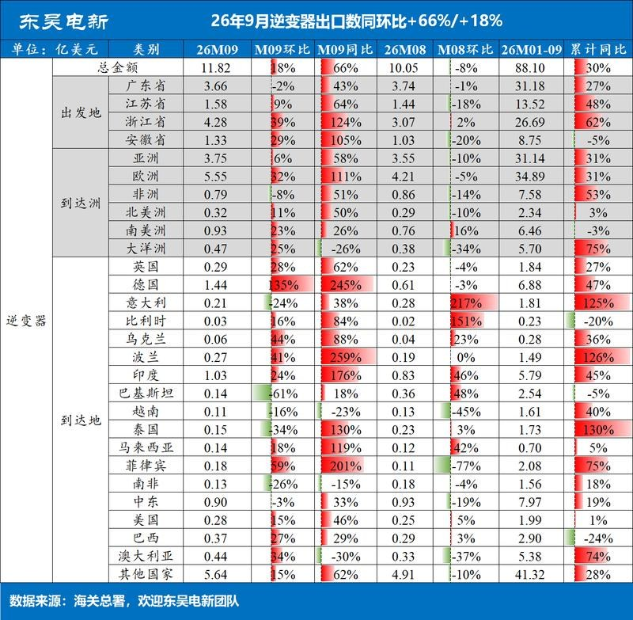
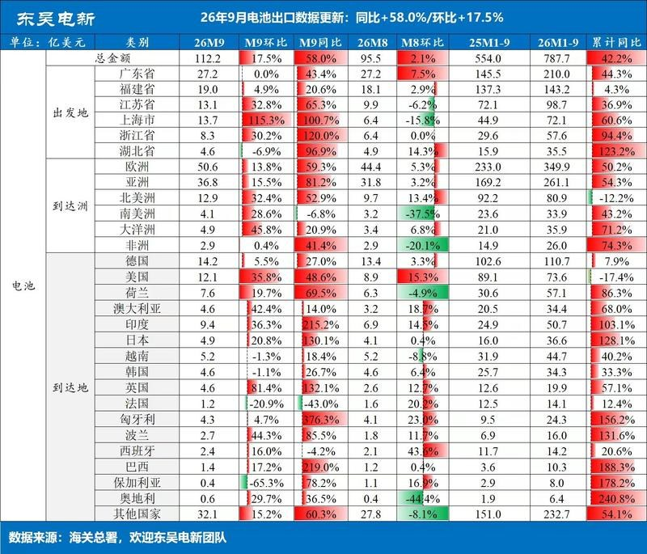
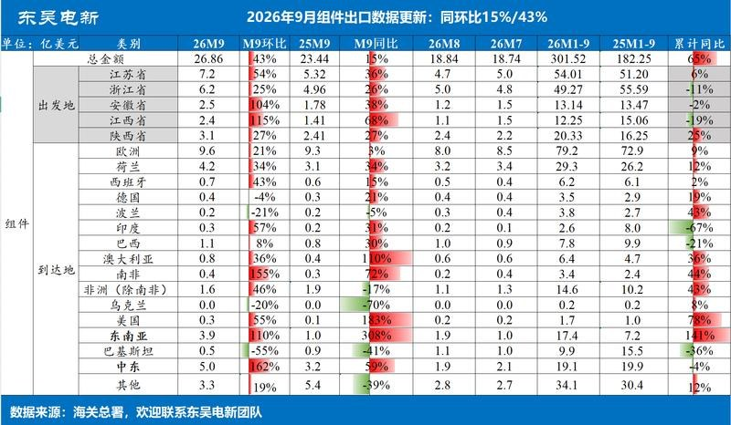
3 图
宁德时代26年三季报核心业绩数据速览
宁德时代26年三季报核心业绩数据速览
[發]【国泰海通煤炭 | 黄涛团队】兖煤澳大利亚三季度运营速览
[發]【国泰海通煤炭 | 黄涛团队】兖煤澳大利亚三季度运营速览
[太阳]煤炭产量：2026Q3公司原煤产量1660万吨，同比+5%；商品煤产量1240万吨，同比+1%；权益商品煤产量940万吨，同比+2%，环比-13%。2026Q1-Q3权益商品煤累计产量2920万吨，同比+4%，整体保持稳健增长。
[礼物]煤炭销售：Q3权益商品煤销量900万吨，同比-16%，环比-23%；其中动力煤销量760万吨、冶金煤销量140万吨，同比均下降16%。2026Q1-Q3权益商品煤销量2880万吨，同比+6%，单季销量回落主要受煤炭产量下降及发运时点影响。
[烟花]煤炭售价：Q3煤炭综合销售均价170澳元/吨，同比+21%，环比+6%；其中动力煤均价160澳元/吨，同比+23%，环比+7%；冶金煤均价229澳元/吨，同比+17%，环比+5%。煤价回暖逐步向销售端传导，近期基准煤价上涨有望在后续季度进一步体现。
[红包]成本及现金：公司预计2026年现金经营成本处于90-98澳元/吨指引区间上限，柴油价格回升带来一定成本压力。Q3剔除中期股息（9240万澳元）及红隼收购相关现金支出影响后，现金余额增加3.40亿澳元，现金积累表现稳健。
[庆祝]生产展望及项目进展：
1、生产修复：Q3产量环比回落主要受莫拉本长壁搬家换面（408至409工作面）及艾诗顿复杂地质条件影响，莫拉本已于9月恢复生产，Q4产量有望环比改善。公司预计2026年权益商品煤产量处于3650-4050万吨指引区间上半区（不含红隼）。
2、外延并购：10月1日完成红隼煤矿80%权益收购，Q4起贡献权益产量及业绩，但受长壁搬家换面影响，红隼Q4产量预计有所下降。中长期有望进一步优化公司产品结构，增强优质冶金煤资源布局。
3、核心资产延寿：亨特谷延展项目于9月30日获新州独立规划委员会批准，公司预计Q4取得联邦政府批准，有望支持矿区运营年限延长，为核心资产长期稳产提供支撑。
[玫瑰]欢迎交流：黄涛/邓铖琦/刘兴华
【尚太科技】26Q3业绩大超预期-261020
【尚太科技】26Q3业绩大超预期-261020
#Q3业绩大超预期
26Q1-Q3公司实现营收71.01亿，同比+28.98%；归母净利7.50亿元，同比+5.42%；扣非净利7.31亿元，同比+0.20%。
26Q3营收25.92亿，同比+22.37%，环比+11.97%；归母净利3.50亿元，同比+50.92%，环比+59.90%；扣非净利3.15亿元，同比+31.82%，环比+40.60%。
#单位盈利修复趋势明确
1、量：Q3公司负极销量约11万吨（Q1、Q2分别9.6、10.3万吨），同比+17%，环比+7%，全年预计出货45万吨；27年出货量预计65万吨+，同增45%+，随着新产能投放，27年预计每个季度均能实现45%+的同比增长。
2、单吨盈利：Q3公司单吨净利3.2K/吨（扣非单吨净利2.9K/吨），环比Q2单吨净利2.2K/吨持续提升，主要得益于Q3大客户顺价完成、新增石墨化产能逐步投放带来的成本下降、叠加公司自身降本增效和费用管控能力提升，26Q4吨净利有望继续提升。展望27年，随着新产能陆续投放，公司石墨化外协比例将持续下降至10%，促进公司盈利修复；叠加海外基地5万吨产能今年底明年初落地，单位盈利较国内预计翻倍，27年公司单吨盈利有望继续提升。
#投资建议 预计26年归母11+亿，27年23亿，对应估值仅8X，维持强烈推荐！
奇瑞管理层交流要点_20261020
奇瑞管理层交流要点_20261020
一、出口退税退坡应对
1、出口退税退坡影响：当前海外新能源购车群体与燃油车购车人群互相独立，行业若适度共同调价，对中国车整体冲击有限。
二、欧盟政策与欧洲市场拓展
1、属地化制造是长期核心方向：奇瑞现有海外工厂25座，预计明年底超30座；今年海外CKD/SKD出口占出口总量50%，目标明年提升至65%-75%。
2、西班牙合作工厂：接手不到4个月已启动生产，现阶段可用产能10万台，后续改造可扩至20万台。
3、 欧洲明后年小型电动车增长潜力大，车企需要小型平价电动车平衡碳排放罚款。
三、国内国外调整目标
1. 国内品牌定位更清晰：过往国内各品牌人群、价格档位区隔不足，存在内部竞争抢客户；海外品牌定位清晰，不同品牌对应差异化人群与价格带。
2. 打通国内、国际团队： 海外成熟平台化经验输入国内，解决国内品牌差异化不足问题，摊薄研发制造成本。将国内智驾、智舱的技术能力输出海外，提前应对海外未来竞争。
3. 经营目标：整体销量、利润保持20%增速，国内市场也力争跟上该增速。
四、出口增长驱动与重点潜力市场
1、出口增长两大驱动力：一是平台化体系优势，平台高度共享适配海外多市场属地工厂生产，降低多车型开发与制造压力。二是全球新能源转型提速，海外消费者选购新能源车优先考虑中国品牌。
2、 重点潜力市场：右舵东南亚市场，在马来西亚、印尼、泰国、越南、巴基斯坦均布局工厂。
五、海外子品牌与属地制造盈利
1. 海外子品牌（omada、jaecoo等）：坚持人群差异化，从研发、组织、营销活动匹配目标用户，追求品牌情感共鸣，应对产品同质化。
2. 本地化生产：联合全球头部供应商推动海外属地零部件采购，尽量缩小海内外零部件采购价差，相比同行准备更早。
3. 工厂经营权责：战略市场多为自有子公司或合资主体运营，整车出口、KD生产的权责模式保持稳定。
六、新能源渗透率、产品策略
1. 全球大方向向新能源、纯电、小型化演进，但海外充电基建弱于国内，混动存续周期会比国内更长。
2. HEV混动产品：兼顾油耗与驾驶体验，主要面向海外，兼顾国内。
3. 质量管控：经过OMADA5后桥撕裂事件发现了如何从设计上规避安全风险。现在所有在售车型的后桥都不是这种型号的后桥。构建三道防线提升质量体系，一是研发设计，二是项目管理，三是产品验证，都构建独立团队确保质量和安全。
七、AI智能化、技术研发与资源分配
1. 技术布局：高度重视AI、自动驾驶、人形机器人，提前布局长期技术，未来汽车会从交通工具进化为移动生活办公载体，软件智能化是核心差异点；人形机器人迭代速度超预期，明年会加速。
2. 资源投入：打通国内海外产品定义，一套研发资源同时覆盖海内外；传统与新技术方面资源持续向芯片、快充、机器人等新技术倾斜。
奥来德交流纪要-20261020
奥来德交流纪要-20261020
省流版：首款发光材料预计2026年Q4在京东方放量，蒸发源在手订单接近2.5亿元；玻璃基板方向推进PSPI、低应力膜及配套设备，首台低应力膜设备订单正在讨论。
#OLED周期与材料布局:1)京东方八代线一期于2026年Q3正式投产，二期可能于2027年下半年投产；维信诺及华星光电相关产线也基本计划于2027年下半年投产。2)“一人多机、一机多屏、一屏多层”带动显示面积及材料用量增加，双层叠层OLED材料用量约为单层的1.5—2倍。3)公司发光材料收入目前约3亿元，首款相关材料预计于2026年Q4在京东方开始放量；同时布局PSPI、封装材料、黑色PSPI及彩色光刻胶。
#蒸发源订单与业务展望:1)目前蒸发源在手订单接近2.5亿元，若未来一至两个月顺利中标京东方八代线二期，在手订单有望接近9亿元。2)若2027年验收约7亿元设备，对应利润预计可达到3.5亿元以上；随着客户导入及材料放量，材料收入有望新增3—4亿元。
#玻璃基板与PSPI:1)京东方展示的玻璃基板达到24层，采用“11+2+11”结构，需解决打孔破损、多层附着及剥离等问题。2)PSPI可用于较细布线层，ABF用于较粗布线层；目前研究方向是让PSPI先占约20%—30%，未来可能向两类材料各占一半发展。
#低应力膜及设备:1)低应力膜通过蒸镀覆盖玻璃微小裂纹，并在铜与玻璃之间形成缓冲，成膜均匀性是重点。2)京东方定向开发设备的样机已通过验证，首台设备订单正在讨论，未来一至三个月内可能取得订单。3)按3万片产能、约300台设备及200—300万元单价假设，设备需求规模可能达到约6—9亿元、在一至两年内逐步释放；若3万片产能建成，对应低应力膜材料采购额预计每年约2—3亿元。
#其他业务:1)公司与天马合作研发MicroLED相关蒸镀设备约三年，硅基OLED及大尺寸OLED蒸镀整机项目仍在开发推进中。2)电子皮肤业务自2025年下半年开始推进，2026年收入预计约1,000万元。3)10月8日与上海港湾签订首台钙钛矿蒸镀设备试用订单，已有一台设备按试用方式出货；试用阶段暂不付款，后续拟转为正式订单，同时布局相关材料。
共达电声交流纪要-20261020
共达电声交流纪要-20261020
省流版：义乌产线目标2027年Q2开始供货，泰国项目预计2027年Q4投产。
#业务定位与精密加工:1)主要推进薄膜铌酸锂材料及硬脆材料精密加工，依托大股东半导体产业资源。2)薄膜铌酸锂业务定位材料供应，交付键合片，下游客户为硅光晶圆厂，后续器件加工、集成和封装由下游完成。3)精密加工主要适配超硬、超脆材料，设备加工误差基本在1微米以内；低精度加工使用现有设备性价比不高。
#工艺与良率:1)硅片和铌酸锂晶圆经离子注入、氧化、键合及剥离等步骤，形成铌酸锂薄膜、二氧化硅和硅衬底的三层结构，键合是关键环节。2)实验室阶段良率约50%，大规模量产目标约80%，预计2027年第二季度启动后逐步爬坡，至第四季度左右进一步提升。3)公司采用日本键合技术路线，量产后的良率与稳定性是重要差别；器件加工及异质集成的难度高于材料环节。
#建设进度与价格:1)下游原先需求时间指引为2028年，2026年五六月份反馈产业提速，希望2027年第二季度开始供货，因此增加国内先行建线安排。2)义乌厂房已建成，百级洁净车间正在装修，预计2026年12月左右完工，目标2027年第二季度开始供货；泰国项目预计2027年第四季度投产，并预留后续扩容空间。3)键合片价格约4,000—5,000美元/片，目前主要用于客户研发；后续量产价格预计仍可能接近4,000美元/片。
#设备与客户导入:1)单条完整工艺线约需26台设备，离子注入设备较贵并决定能力上限，其余工序后续可通过补充设备逐步匹配。2)离子注入及氧化设备采购相对较难，设备交付需要时间，部分现有国产设备尚不能满足使用要求。3)下游验证和足够规模的订单，是持续改善良率的重要条件。海外新增供应商需采购、技术和研发等多个环节认可，公司通过大股东长期合作资源对接客户。
☄️☄️☄️AI电力-天岳先进Q3继续超预期20261020
☄️☄️☄️AI电力-天岳先进Q3继续超预期20261020
事件：公司发布26Q3报，Q3单季营收6.5e，#同比/环比+103%/+18%，归母0.86亿元/扣非0.96亿元（Q2汇兑损失、加回后盈利，Q3汇兑正收益），技术降本带动Q3毛利率继续环增到27.5%，其中Q1/Q2/Q3环比分别改善25pct/6pct/2pct。#天岳一直是我们最看好的AI电力上游最关键材料碳化硅的龙头，4月我们call Q1业绩初步改善，而后call Q2业绩拐点，Q3交出更满意答卷，坚定持续看好！
☄️#Q3产品结构进一步改善，#其中8英寸收入占比超50%，境内外需求同步快速增长。6/8英寸产品继续满产，局部急单有所涨价（#欢迎联系我们获取涨价幅度），且国内大陆和台湾衬底产能利用率环比全面爬升——汉磊法说会“Q3利用率回到60%、Q4看80%+，27年6寸产能恐缺货”；外延厂全球龙一瀚天天成近期收获国际客户9580万美元碳化硅外延片订单。行业景气度一方面归结于碳化硅在风光车储充对硅器件全面替代，一方面AI服务器电源的拉动也在Q3有所体现，明年rubin放量以后我们预计会更明显。
☄️#先进封装中介层对于12英寸碳化硅的需求也有进展，有验到台厂找到大陆碳化硅厂商代工12英寸（采用的是CVD法，有别于天岳的PVD），此前台半导体硅片厂也在买国产12英寸碳化硅长晶炉。我们此前预计该块市场空间高过AI电源，预计2030年市场300e+。
-by xzd AI能源革命团队
风险提示：新市场拓展不及预期，竞争加剧等
【华鑫汽车&机器人】光洋股份更新1020:T链轴承绝对龙一，谐波减速器有望近期落地，继续强call
【华鑫汽车&机器人】光洋股份更新1020:T链轴承绝对龙一，谐波减速器有望近期落地，继续强call
1️⃣轴承龙一地位夯实，交叉滚子唯一国内量产上市公司，#进入T、宇树、智元等主流机器人本体
#T客户在手订单ASP-5000元。包括10余款、39个型号，其中最难的交叉滚子轴承7个。本周应约再去美国，谈后续7个交叉滚子轴承。
#后续价值量提升空间大-1.5w元。全身轴承用量大，超过1000+。公司目标是T全套轴承，价值合理预期在1.5W元。
#T客户已经产生收入，26年财报会体现。今年预计T机器人收入在2500-3000万元（部分款式今年来不及交付，收入确认在明年）。
2️⃣谐波减速器：与T重要Tier 1合作，供应交叉滚子、柔性轴承、钢轮、柔轮（合计占谐波60%价值量），#近期有望落地。
[玫瑰]#估值：短期看翻倍，中长期目标市值370e，当前仅84e，继续强call。
林子健
[红包]【天风通信】优迅股份：拟回购坚定信心，重视光通信电芯片投资机遇
[红包]【天风通信】优迅股份：拟回购坚定信心，重视光通信电芯片投资机遇
🔥事件：公司公告，公司董事会收到公司实际控制人之一、董事长柯炳粦提议公司以自有资金或自筹资金通过上交所交易系统以集中竞价交易方式回购公司已发行的部分人民币普通股（A股）股票，回购资金总额不低于1亿元（含）不超过2亿元（含），回购的股份将在未来适宜时机全部用于员工持股计划或股权激励。
#电芯片未来市场规模可观 根据ICC数据显示，2024年全球光通信电芯片市场规模达到39亿美元，预计到2029年全球光通信电芯片市场将达97亿美元，复合年增长率（CAGR）将达20%，2024年全球数据中心侧光通信电芯片市场规模达20.9亿美元；预计到2029年底全球数据中心侧光通信电芯片市场规模将达60.2亿美元，复合年增长率（CAGR）为23.60%。400G、800G以及1.6T以上超高速光模块需求量将是未来5年AI算力和云计算数据中心应用的主流选择，使100G及以上速率电芯片成为全球数据中心侧光通信电芯片市场的增长主力。
#公司高速率电芯片推进顺利 根据ICC数据，2024年度优迅股份在10Gbps及以下速率产品细分领域市场占有率位居中国第一、世界第二，市占率达28%。随着 AI 算力、数据中心建设需求增长，光通信电芯片单波速率正向 100G/200G 快速升级，支撑 800G/1.6T光模块规模部署。[烟花]公司单波100Gbps 系列电芯片（主要包括 TIA、Driver产品）已布局工程片流片，预计26Q3实现芯片回片，并同步推进客户验证工作。[庆祝]单波 200Gbps 方面，公司围绕 1.6T 光模块应用积极布局下一代速率产品，重点研发跨阻放大器、VCSEL 激光器驱动器，以及面向 LPO/NPO 架构的 MZ 调制器驱动器等核心芯片，已进入样品测试阶段。随着1.6T光模块商用，预计电芯片组件价值量进一步上升。
#围绕AI算力互联场景下高速光模块升级需求 公司将相关产品研发与市场开拓按照传统 FRO 模块和 LPO/NPO 技术路线两条主线推进，并分别围绕单波100G、单波200G 速率代际产品开展[<研发验证、客户送样和小批量导入准备>]。
[礼物]公司以成为国际光通信、光传感收发电芯片领先企业为核心战略目标，致力于提供从芯片到组件的完整解决方案。未来三年，公司将在巩固现有 155Mbps 至 100Gbps 产品批量出货、特别是25G、100G 电芯片在数据中心及 5G 无线领域批量落地的基础上，持续围绕高速光通信、硅光集成、车载光电等方向加大投入，布局关键专利形成技术壁垒，当前位置建议积极关注。
🥇天风通信 王奕红/陈汇丰*/康志毅/唐海清
春风动力2026年第三季度报告
春风动力2026年第三季度报告
1⃣#2026Q1-Q3
①收入：209.42亿元，同比+40.6%；
②归母净利润：20.21亿元，同比+42.8%；
③扣非归母净利润：15.60亿元，同比+15.5%。
④非经常性损益：4.61亿元。
2⃣#2026Q3
①收入：75.56亿元，同比+49.9%；
②归母净利润：9.56亿元，同比+131.3%，环比+48.9%；
③扣非归母净利润：5.09亿元，同比+27.5%，环比-19.6%。
④非经常性损益：4.47亿元，主要构成为美国关税退税及利息6.24亿元，扣除所得税、少数股东影响后净额4.47亿元。
#收入高增的主要驱动： Q3为四轮全地形车海外传统销售旺季，预计四轮依旧保持高双位数增长；燃油摩托海外延续高景气。
#扣非较弱的核心原因： 海外关税、汇兑扰动延续，极核电动业务持续研发营销投入，海外基地爬坡成本，挤压经营端利
[礼物]【招商机械】宏华数科更新1020
[礼物]【招商机械】宏华数科更新1020
一、收购汉印背景&对价
🔹公司与汉印此前长期开展喷头性能、墨水选型等技术交流，汉印因投资碳化硅亏损，出现资金紧张问题，因此引入宏华。交易对价不到1.5亿元，比例55%，大部分为增资款，仅少量用于收购老股，汉印创始人未套现退出，原有股东仅同比例压缩股权；碳化硅资产将剥离。
🔹2025年汉印受资金短缺限制，有订单不敢接，全年PCB相关设备及耗材收入约1.5亿元；嘉立创是第一大客户，对应收入占比约百分之十几。汉印销售目标2026为最少3亿元。
二、PCB数码喷印业务：字符喷印
🔹业务成熟度与需求：字符喷印技术已完全成熟，板厂付费意愿强，商业逻辑已跑通；新增可变二维码喷印需求（每块PCB对应唯一身份标识，用于质量追溯，无法通过丝网印刷实现），属于字符喷印的衍生需求，需求旺盛。
🔹汉印曾是该细分领域市占率最高的企业，近两年因资金不足、原材料采购受限、市场份额降低。字符业务目前很成熟，汉印管理层主要精力将放在阻焊和内层线路新业务拓展上。
三、PCB内层线路喷印
🔹技术原理与优势：在PCB板内线路需要保留的位置喷印抗蚀油墨，再直接蚀刻去除无油墨覆盖的铜层；相比传统工艺省去了整面覆干膜、曝光、显影、退膜等多道工序，无需使用显影液，可减少污染排放，同时降低人工依赖、提升生产良率。
🔹当前设备精度可做到75微米，可覆盖80%-90%的内层线路加工需求；内层线路最高精度要求为50-55微米，大部分产品70-75微米即可满足。公司预计2027年通过喷头改进可将精度提升至70微米，若后续技术迭代达到50微米，可覆盖全部内层线路工艺。
🔹针对AI服务器PCB，可覆盖其中60%-70%的通用板材，目标市场为中端客户，低端客户对价格敏感度高，高端LDI市场暂不切入。
🔹商业化落地节奏：
[太阳]2026年底前实现设备出货，先以单台设备交付客户拉通工艺路线，验收周期约3个月，工艺验证通过后再交付整条自动线（每条自动线需配套2台喷印设备），年底前仅能交付几台。
[太阳]首台设备交付给沪电股份的上游代工厂，可穿透到沪电供应链；当前优先拓展PCB代工厂客户，再逐步覆盖自有产线的PCB大厂。验证周期远短于阻焊业务，内层线路落地速度更快，市场空间比阻焊更大。
四、PCB阻焊喷印
🔹技术与市场：该技术路径十几年前已提出，此前受喷头精度、油墨配方、成本过高限制未能商业化，当前油墨成本已降至可接受范围，喷头精度满足要求，进入快速推广阶段；国内市场暂无成熟的同路线竞品，丝印阻焊精度仅100多微米，无法匹配高端需求。
🔹客户拓展与进度：核心客户为SNDL，2025年已交付1台并完成验收、全额回款，2026年将再交付2台（其中1台已中标），合计交付3台，均为复购；SNDL每年与公司签订研发合作计划，优先测试新技术。
🔹阻焊工艺需终端客户认证，认证周期长达1-1.5年（英伟达、华为、小米等大厂认证周期更长），因阻焊层终身附着在PCB上，需验证长期使用可靠性，因此放量节奏慢于内层线路。竞争格局上，大厂不会仅采用一家供应商，预计该市场未来将形成两家供应商共存的格局。
🔹精度与替代逻辑：普通LDI设备精度为50-55微米，高端设备可达30/15微米；公司阻焊喷印并非直接替代LDI，主要替代菲林曝光和丝网印刷工艺，同时在PCB厂新建产线、中低端板材产线、5-6年设备替换周期中切入，与LDI长期共存。
[烟花]公司主业：目前接单已经开始好转
今年受行业因素影响，公司主业H1下跌明显，目前Q3公司设备订单开始微幅好转，四季度旺季收入追平希望较大，主业底部明显，期待反转。
[礼物]总结：宏华与汉印的合作逻辑顺，增量多，新技术空间大，当前位置性价比高，继续推荐。
☎招商机械：郭倩倩/辛泽熙
【招商机械】继续推荐思看科技
【招商机械】继续推荐思看科技
[礼物]观点：公司当前股价超跌，后续仍有拓竹扫描仪上市等催化，产品销量有望超预期。
[红包]思看科技为物理AI核心标的。物理AI的底层根基是高精度三维感知。公司工业级3D扫描仪能够实现0.02mm精度、486万次测量/秒速率的扫描，实时捕捉物体三维坐标，姿态形变，为人形机器人、工业仿真、空间智能提供真实物理数据输入。目前，公司正对接多个头部工业机器人/人形机器人厂商，订单有望迎爆发式增长。
[红包]消费级3D扫描赛道绑定拓竹大客户，产品发布在即。公司与拓竹合作的第一款3D扫描仪产品将于11月发布，产品性能有望全面超预期，后续有望推出第二、第三款产品，全面打开中高端市场。今年上半年我国3D打印机出口量呈翻倍增长态势，3D打印产业趋势明确，其中，消费级3D打印机正不断扩圈，销量增速显著。公司有望充分受益于行业beta。
☎️联系人：郭倩倩/方嘉敏
【国恩股份/国恩科技】抄底机会
【国恩股份/国恩科技】抄底机会
主业230e+算租170e+电子特气100e=500e目标，目前A股230e，港股140e！
1）主业放量+结构转型，在改性塑料行业面临较大压力的时刻，公司经营韧性凸显，今年13e，明年15e预期，15 PE对应230e市值底支撑。
2）7月和国内领头羊团队成立算租子公司，布局5090/B300卡，Q3已开始兑现利润，预计明年170e资产规模撬动子公司超过10e利润，按资产估值170e市值。
3）四川中氟能NF3等主业支撑2e利润，WF6 100t产线确定性极高（已通过海外认证），明年扩产至900t（接近中船一半产能），按目前WF6价格测算，中氟能现有产能支撑3e利润，扩产后满产10e，先保守按照100e市值。
#【三祥新材】大涨： 铪投产在即【浙商化工 杨占魁】
#【三祥新材】大涨： 铪投产在即【浙商化工 杨占魁】
⭕️铪在先进制程、存储中的应用正在持续拓宽，持续受益于AI带动的存储芯片、半导体产业扩张。而铪的供给增量有限，供需或持续偏紧，#涨价有望延续。截至2026年10月20日，铪金属海外报价9807美元/千克（#折合人民币约6700万元/吨），同比+93.2%。
⭕️截至9月，公司锆铪分离项目建设已进入关键施工节点，核心工序已处于调试状态。其中，#公司通过优先调试铪精萃线并试产电子级氧氯化铪，#已实现了电子级氧氯化铪产品的产出。此外，#锆铪分离项目拟于2026年12月31日前投产。
欢迎联系：浙商化工&算力 杨占魁
字节跳动、阿里巴巴和腾讯向英伟达订购了价值超过350亿美元的芯片。
字节跳动、阿里巴巴和腾讯向英伟达订购了价值超过350亿美元的芯片。
韩国媒体对马斯克 Terafab 的独家报道：
韩国媒体对马斯克 Terafab 的独家报道：
Terafab 公司完全排除了中国供应商。该公司希望与韩国供应商合作，因为日本产品价格昂贵。然而，该公司要求韩国公司提供的价格甚至低于中国供应商。
TrendForce：光纤
TrendForce：光纤
> 2026 年全球光纤供应短缺 1.8 亿芯公里。
> 供应趋紧预计将推动成品光纤现货价格升至 2025 年水平的 2.8 至 5 倍，甚至更高。
> 光纤短缺将持续至 2028 年。
> 在供应方面，2026 年全球光纤产能利用率已升至 92%，库存水平则从 2024 年的四个月降至仅一个月。部分领先供应商的产能订单已排至 2027 年第一季度，这表明现有产能已接近满负荷运转。
> 预计 2026 年全球光纤需求将达到 5.77 亿芯公里，主要由数据中心建设驱动，其占总需求的约 18%至 20%。预计这一占比将在 2027 年升至 30%至 35%。
> 预计 2026 年数据中心内部布线所用抗弯光纤（BIF）的平均价格将超过 2025 年水平的五倍。
野村：AI 实验室担忧与存储基本面
野村：AI 实验室担忧与存储基本面
→ 继续看好存储器，预计供应受限局面至少会持续至 2028 年。认为市场对长鑫存储（CXMT）转向 4F²工艺的担忧过度。
→ 尽管近期市场担心营收环比增长放缓，但预计 OpenAI 与 Anthropic 合计营收在 2026 年第三季度将同比增长 507%。
→ AI 营收增速放缓部分源于财报口径差异、客户迁移和季节性因素，而非底层需求走弱。
→ 2026 年第四季度营收门槛：OpenAI 与 Anthropic 合计营收需达到 439 亿美元（环比增长 61%）才能符合市场预期；若 9 月运行率保持不变，则为 297 亿美元。
→ AI 盈利能力被低估：AWS、微软智能云和谷歌云的营业利润率分别为~39%、41%和 36%。野村估计这些云业务的 EBITDA 利润率达~60%。
→ 据报道，Anthropic 在 2026 年第三季度实现调整后营业盈利，此前其在第二季度也实现了调整后营业盈利。野村预计，随着营收规模扩大，其经营杠杆将进一步提升。
→ 现金流≠盈利能力：快速推进基础设施投资，导致前期算力支出与后续营收创造之间存在时间错配，可能放大市场对 AI 经济性的担忧。
→ 存储器需求不止来自 AI 实验室：野村估计，截至 2026 年底，OpenAI 和 Anthropic 合计仅占全球预计 29GW 的 AI 装机容量中的~5GW。
分析人士表示，中国央行可能正在启动为期数月的隔夜政策利率过渡，这一转变将需要更频繁地使用新的基准利率进行流动性操作，以测试市场反应。
分析人士表示，中国央行可能正在启动为期数月的隔夜政策利率过渡，这一转变将需要更频繁地使用新的基准利率进行流动性操作，以测试市场反应。
AI 新秀的惨败引发人们对人工智能热潮即将结束的担忧
AI 新秀的惨败引发人们对人工智能热潮即将结束的担忧
据报道，由于三星的 4nm 晶圆代工产能已全部利用，该公司已开始为其 5nm 工艺寻找新客户。
据报道，由于三星的 4nm 晶圆代工产能已全部利用，该公司已开始为其 5nm 工艺寻找新客户。
野村：AI市场担忧与内存前景
野村：AI市场担忧与内存前景
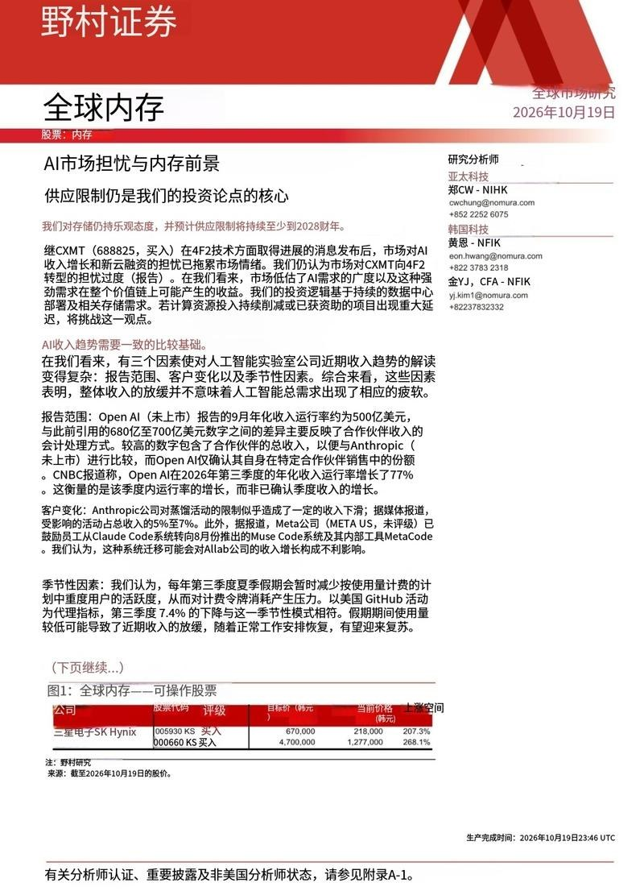
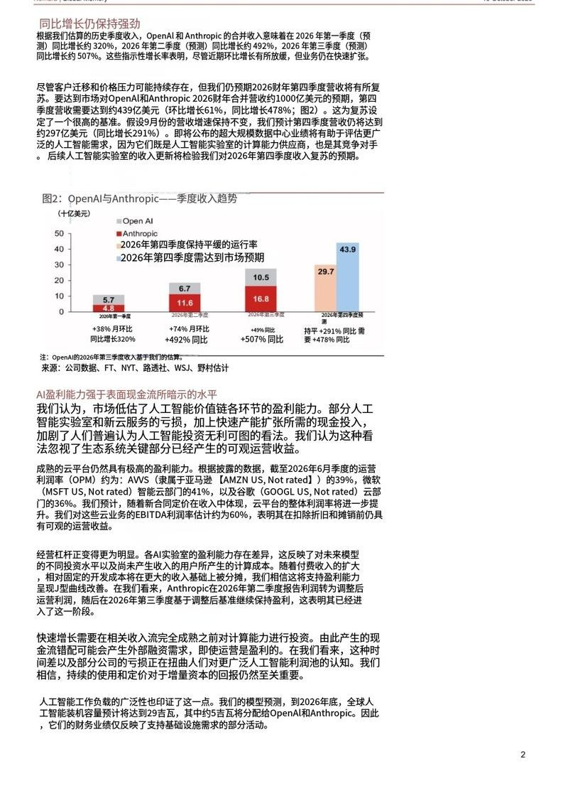
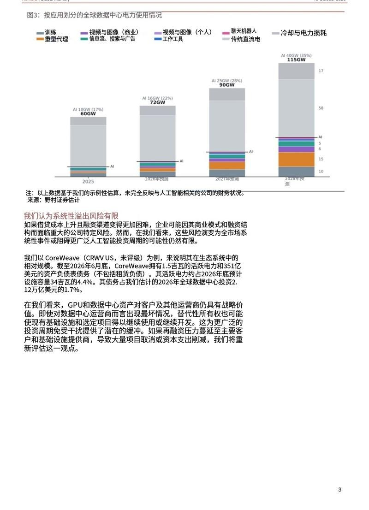
3 图
📌GS CHINA WRAP 高盛中国收评
📌GS CHINA WRAP 高盛中国收评
📊上证综指 +0.12%，科创 50 +1.00%
📊上证 50 -0.31%，创业板指 -0.26%
📊沪深 300 -0.54%，中证 500 +0.60%
💰中国 A 股总成交额（万亿人民币）1.47
🤖具身智能（Physical AI）主题今日随中国机器人板块一同反弹，主要受埃隆・马斯克隔夜展示的 Optimus 最新功能所驱动。
💡境内投资者目前推测供应链里程碑将在年底前加速达成。
🔋宁德时代在发布第三季度财报前也备受关注；该股盘中面临抛售压力，但从一度下跌 5% 的低位回升，收盘下跌约 2%。
📈大盘基准指数在尾盘出现回升，并伴随 ETF 成交量放大。
🔄相反，随着资金轮动至成长主题，包括银行、家电和汽车整车厂在内的价值导向型板块出现回调。
💸资金流向：卖盘为买盘的 1.1 倍。
✅我们买入银行和汽车。
❌卖出金属和消费。
⚖️中国 AI 板块呈现双向交易。
📌WHAT DROVE MARKETS? 谁驱动了市场？
📌WHAT DROVE MARKETS? 谁驱动了市场？
📰亚洲股市普遍收跌，在美国科技龙头财报披露前夕，AI 以及拥挤的成长交易板块估值下修，主导了区域市场走势。
📰韩国股市领跌，外资与机构资金全线卖出；日本市场持续承压，AI 相关标的的下跌进一步传导至银行板块，不过市场成交额低迷，没有出现恐慌性抛售，说明投资者只是保持谨慎，并未恐慌。
📰中国台湾、中国香港股市同样收跌，电池、原材料、科技板块拖累行情，防御板块与医疗板块整体相对抗跌。
📰内地市场表现相对更好，尾盘买盘入场，叠加市场对机器人、具身 AI 板块关注度回升，对冲了大盘的跌幅。
📰澳大利亚股市跌幅相对温和，原材料、能源板块走弱拖累指数。
📰印尼是区域内明显的逆势走强标的，当地出台政策缓解市场对 MSCI 下调评级的担忧，股指大幅反弹；泰国股指小幅走低。
📰整个亚洲区域成交低迷，资金向防御板块轮动，面对即将到来的财报周期，市场普遍保持观望态度。
🌐REGIONAL WRAPS
🇦🇺澳大利亚：标普 200 指数下跌 0.33%。
📰澳大利亚股市收跌，指数下行 0.33%，原材料、能源板块的走弱幅度超过防御板块以及利率敏感板块的上涨力度。
📰原材料板块（-1.2%）、能源板块（-1.5%）是主要拖累项，必和必拓是拖累指数下行的权重标的之一。
📰在美国半导体重磅财报出炉前，区域市场对于 AI 相关板块的风险偏好下行，市场整体情绪谨慎，中东供应扰动推升油价，进一步加重市场的观望氛围。
📰澳洲房地产投资信托基金板块表现亮眼，上涨 0.7%；银行板块整体持平。
📰Ingenia Communities 上涨，该公司允许华平投资开展尽调，对应潜在收购邀约，延续前期上涨行情。
📰其他走势较强标的包括 Austal、Cochlear、HUB24 以及 Telix Pharmaceuticals。
📰利空标的方面，Ampol 延续跌势，分析师下调评级，市场担忧炼油毛利走弱；矿业、能源个股普跌拖累大盘。
📰Codan 受到市场关注，该公司上调 2027 财年上半年盈利指引。
******** 中国台湾：台湾加权指数下跌 1.13%。
📰尽管区域市场整体走弱，台股开盘韧性较强，但盘中逐步丧失上行动能，收盘接近日内低点，跌破季度均线。
📰台积电下跌 0.6%，但跑赢大盘，ODM 板块同步偏强，主要由空头回补资金驱动。
📰除台积电之外的大盘权重股普遍走弱，尤其是 ABF 载板、CCL 产业链这类前期拥挤多头持仓标的，反映出 AI 板块情绪转弱，资金持续减仓。
📰在美国科技巨头财报、台湾本土核心公司业绩披露前，投资者保持观望，市场成交清淡。
📰非科技板块表现分化，整体弱于科技板块，台积电相对抗跌，对大盘形成重要支撑。
🇰🇷韩国：韩国综合指数下跌 3.65%。
📰韩国综合指数回吐前两个交易日全部涨幅，收盘跌破 5600 点关口，市场普跌，86% 的成交标的收跌。
📰外资转为净卖出，科技板块卖出规模 2.55 亿美元，其中 SK 海力士卖出 2.96 亿美元；交运设备板块卖出 0.8 亿美元，韩华航空卖出 0.22 亿美元。
📰本土机构同样净卖出，卖出方向集中在科技、交运设备板块。
📰散户投资者与其他公司是仅有的资金流入渠道，主要来自 SK 海力士回购资金。
📰本轮抛售没有明确的催化因素，成交额低迷，较 20 日均值低 19.5%。
📰在避险轮动行情下，食品饮料这类防御板块相对抗跌。
📰大盘走弱的同时，盘面上没有出现激进的逢低抄底买盘，SK 海力士仅有少量逢低承接资金。
📰韩元升值 41 个基点，汇率来到 1327.7。
🇯🇵日本：日经 225 指数下跌 1.30%。
📰日本股市连续第二个交易日大幅收跌，东证指数跟随日经指数下行，银行板块走弱进一步加剧 AI 标的的下行压力。
📰市场交投清淡，成交额较 20 日均值低 15.2%，盘面没有出现恐慌踩踏式抛售。
📰东证指数再次跌破 CTA 短期阈值 4063.9 点，测算在当前横盘行情下，本周将有约 11 亿美元的卖出盘。
📰对冲基金整体净卖出，同时伴随少量逢低买盘；长线资金多空双向交易、小幅净买入，偏好防御板块。
📰防御板块跑赢大盘，动量板块、周期板块走弱。
📰AI 基础设施、资本开支相关标的跌幅靠前，软银、TEL、Advantest 合计贡献了日经指数约 60% 的跌幅。
📰银行板块承压明显，20 年期日本国债拍卖结果强劲之后，东证银行板块指数下跌 4.3%。
🇨🇳内地：沪深 300 指数下跌 0.54%。
📰内地股指尾盘回升，马斯克隔夜展示 Optimus 机器人最新能力后，具身 AI、机器人板块反弹。
📰本土投资者关注产业链在年底前加速落地的可能性。
📰宁德时代在三季报披露前受到资金关注，盘中最大回撤 5%，尾盘收回部分跌幅，最终收跌约 2%。
📰大盘指数同步尾盘修复，ETF 成交明显放大。
📰资金风格切换，成长板块走强，市场资金回流机器人、具身 AI 赛道；银行、家电、整车厂商这类价值板块走弱。
🇭🇰中国香港：恒生指数下跌 1.32%。
📰港股普遍收跌，长假过后，AI、科技板块估值下修是指数的主要拖累。
📰下跌集中在科技、原材料、可选消费、金融板块；医疗板块逆势走强，罗氏计划和和誉医药达成价值超 150 亿美元的 ADC 合作，带动板块情绪。
📰电池板块持续承压，摩根士丹利下调产业链多家公司评级，担忧行业盈利走弱；宁德时代在三季报前下跌 6.6%。
📰联想、中芯国际、紫金矿业走弱拖累原材料板块；阿里巴巴下跌 2.6%。
📰南向资金净卖出 172 亿港币，已经连续五个交易日资金流出。
📰盘面赚钱效应偏弱，恒生指数 95 只成分股里有 63 只下跌；PCB 板块逆势走强，主要是沪电股份赴港上市带来的需求预期。
🇮🇩🇹🇭东盟：印尼雅加达综合指数上涨 5.33%。
📰印尼股指大幅反弹，收复两日大跌中的一部分跌幅，此前两日大跌创下 1998 年以来最大跌幅，当地监管出台政策，打消市场对于 MSCI 下调评级的担忧。
📰本轮上涨普涨，中小盘超跌标的反弹为主。
📰市场同时关注消息，印尼镍龙头公司计划协调减产，金属价格低迷挤压盈利。
📰泰国 SET 指数下跌 0.76%。
📰泰国股市交投清淡，外资小幅卖出，区域避险情绪压制市场情绪。
📰科技、ICT、银行板块走弱，金融、必需消费板块相对抗跌；CPF 受到分析师下调目标价影响跌幅靠前，资金等待泰国各大银行财报落地。
🇮🇳印度：休市。
📌GS HK MARKET WRAP 高盛香港市场综述
📌GS HK MARKET WRAP 高盛香港市场综述
📊恒生指数跌 1.3%，恒生中国企业指数跌 1.2%，恒生科技指数跌 1.5%，成交额 1900 亿港币。
📈领涨板块：医疗保健板块上涨 1.5%，必需消费品板块上涨 0.2%，能源板块下跌 0.3%。
📉领跌板块：原材料板块下跌 3.8%，金融板块下跌 2%，可选消费板块下跌 1.7%。
📰港股跟随韩、日市场的抛售节奏走弱，AI 交易行情退潮带来的压力仍在持续。
📰市场交投清淡，成交额未能站上 2000 亿港币关口，市场活跃度偏弱。
📰对比之下 A 股韧性相对更强，但盘面震荡、方向不明。
📰南向资金已经连续三日净卖出，本地资金的支撑力度也在减弱。
📰高沽空标的整体跑输恒生指数 0.8 个百分点，说明场内以多头止损卖出为主。
💸资金流向层面：盘面上卖出力量更强，交易台捕捉到保险股的抛压主导资金流向。
💸平安持续遭遇卖出，友邦保险等标的新增空头仓位。
💸中国人保（1339）等少数标的获得买盘支撑。
💸工业板块、电池板块卖出信号更突出，宁德时代出现新增抛压。
💸科技板块里，小米、腾讯出现小幅减仓动作。
💸医疗保健板块持续有资金买入，信达生物获得买盘，比亚迪等新能源车标的也有资金进场。
💸原材料板块则出现分化，紫金矿业获得买盘承接。
🏥医疗保健板块上涨 1.5% 再度收红，投行观点认为，最新的生物科技出口限制提案相比前期草案出现明显缓和，移除了核心政策不确定性。
🥫必需消费品板块走势相对抗跌，能源及石油相关板块也保持韧性。
⛏️另一边，原材料板块承压回落，金价走弱拖累板块表现，紫金黄金下跌 9.3%，中金黄金下跌 5.8%。
🏦金融这类避险板块同样受到冲击，保险标的相关担忧再度升温：居民纳税人境外信托收益将征收 20% 税款，取得该类收入的纳税人可在 10 月 22 日前申报并缴纳税款，逾期前申报无需承担罚金。
📌GS KOREA FINAL - BACK BELOW ITS 5,600-HANDLE 高盛韩国收盘综述 - 回落至 5,600 点关口下方
📌GS KOREA FINAL - BACK BELOW ITS 5,600-HANDLE 高盛韩国收盘综述 - 回落至 5,600 点关口下方
📊韩国综合股价指数（KOSPI）下跌 3.73%，收于 5552.7 点，成交额 121 亿美元，外资净卖出 4.05 亿美元。
📊KOSDAQ（韩国创业板）下跌 3.33%，收于 782.0 点，成交额 38 亿美元，外资净卖出 1.4 亿美元。
📋市场回顾
📉韩国综合股价指数（KOSPI）回吐了过去两个交易日的所有涨幅，收盘回落至 5600 点关口下方。
💸外资转为净卖出，卖出最多的是科技板块（-2.55 亿美元，主要受海力士 - 2.96 亿美元的卖盘拖累）和运输设备板块（-8000 万美元，主要受韩华航空 - 2200 万美元的卖盘拖累）。
🤝本地机构与外资机构投资者共同净卖出，卖出方向同样集中在科技和运输设备板块，而散户投资者和其他法人，在海力士回购资金流的支撑下，是仅有的流入支撑。
🔍今日价格走势背后并无直接诱因，市场走势普遍疲软，约 86% 的 KOSPI 交易个股收跌，且成交量低迷，较 20 日均下降 19.5%。
🛡️在避险轮动中，防御性板块，例如食品饮料板块，表现优于大盘。
📌尽管市场波动较大，但我们交易台的整体活动明显较为清淡。
🚫交易台未观察到任何激进或大规模的抛售。
🔎在海力士方面，我们反而观察到了逢低买入者，但对应的名义金额非常小。
📉KOSPI 成交量较 20 日均值下降 19.5%。
💴韩元升值 41 个基点，至 1327.7 韩元。
📋要闻回顾
💻半导体板块走弱：尽管隔夜费城半导体指数（SOX）反弹 1.6%，SK 海力士美股反弹 4.7%，但受各板块普遍走弱影响，三星电子下跌 3.0%，SK 海力士下跌 4.2%。
📌尽管股价波动剧烈，但我们交易台在这两只股票上的交易明显较为清淡，并未出现激进或大规模的抛售。
🛒我们观察到海力士有一些轻微的逢低买入，这使得海力士的资金流在收盘时偏向买入，而三星电子的资金流则趋于平衡。
📊根据 KRX 市场数据，外资明显延长了对三星电子的连续 3 日净买入势头，今日净买入 2.9 亿美元，而对海力士则维持净卖出，已经连续 18 个交易日卖出，今日净卖出 2.96 亿美元。
💸本地机构和散户投资者也是海力士的净卖出方，分别卖出 1.22 亿美元和 0.41 亿美元，使得其他法人，今日净流入 4.59 亿美元，成为该股今日唯一的资金流入支撑。
📉在三星电子方面，本地机构卖出 4.42 亿美元，而散户投资者则随外资一同净买入 1.42 亿美元。
🛡️国防板块走弱：高盛韩国国防指数下跌 10.3%，表现逊于大盘。
📌走势疲软的原因似乎有两点，第一是现代乐铁下跌 13.7%，其三季度营业利润不及预期，多家本地券商在隔夜下调了其目标价，理由是订单时间因进一步延迟而存在不确定性，由此产生了溢出效应；第二是美国国防板块走弱，相关指数下跌 0.8%。
📌高盛研究部也将现代乐铁的目标价下调了 11% 至 25 万韩元，维持买入评级，调整逻辑为反映 2026 年第三季度的盈利情况，以及受汇率逆风、关键项目进度延迟影响，出口业务营业利润率下降。
📉主要的国防标的如韩华航空航天下跌 11.7%、韩国航空宇宙下跌 6.3%、韩华系统下跌 13.9%、LIG Nex1 下跌 8.2%，均同步走低。
🌛如何理解物理AI商业化落地
🌛如何理解物理AI商业化落地
6月我们全市场首次开始讲物理AI，物理AI为什么这么重要？
1️⃣物理AI商业化落地类比什么？
物理AI于世界大模型&人形机器人&端侧应用场景放量🟰垂类agent于通用大模型放量；本质上是在通用基建基础上找寻垂类应用场景，在这个背景下，场景（垂类行业know-how）、数据显得格外重要。在模型的下一站、infra之上，tokens成本下降迎来应用新场景的爆发，#需求和应用的承接是我们近几周持续强调的关键。
相关公司：
2️⃣#金马游乐： 金马×阿里世界大模型×天太×乐华四方合作探讨文旅物理AI新场景，依托金马游乐场运营数据经验，叠加阿里世界大模型技术支撑，配套乐华娱乐明星IP消费属性，提升文旅场景客户体验。安全边际高，明年预计2e利润。
3️⃣#能科科技： 下游深度绑定JG客户，数据壁垒高，公司在今年6月定增投入垂类模型，去年公司AI收入（agent+具身智能）合计4.6e，今年预计9-10e，主业3e，合计可看250e+。
4️⃣#奥比中光： #3D视觉第一股，奥比中光推出无本体数据采集硬件平台，集结EGO第一视角、UMI手持操作、WristCam腕部近场、Hub同步中枢等产品形态，与厘清智能就“3D视觉感知+物理世界模型”达成战略合作。
5️⃣#江顺科技： #拟布局具身智能大小脑： 拟与合作方布局机器人大脑与Agent，公司将开放自身积累的全部工业数据，包括3D打印主业数据、下游多行业各产线的工人操作数据。
6️⃣#博雷顿： 布局#智电#智驾#智造，国内矿卡物理AI第一股（人车接管比目标1:100），目前国内矿卡保有量12w台，其中适合自动驾驶量级5w台，公司在矿卡卡位稀缺，FSD订阅费10～15w/年，考虑海外澳洲、非洲、南美等，想象空间巨大。
#其他：宇树科技、索辰科技、中控技术、鼎捷数智等。
【开源计算机】物理AI或成编码外最大落地场景，全球巨头重点发力-20261020
【开源计算机】物理AI或成编码外最大落地场景，全球巨头重点发力-20261020
[太阳]物理AI是全球科技巨头明确的重点发力方向
物理 AI 可感知理解物理世界，依托物理规律做时空预测、动作规划，驱动硬件执行，形成 “感知 - 推理 - 行动 - 反馈” 闭环。等价于世界模型 + VLA + 仿真数字孪生 + 实体机器人。NV 为物理 AI 基建龙头，搭建仿真 + GPU + 模型全生态；Tesla 独有大规模真实物理闭环数据，将 VLA、世界模型落地 Optimus，谷歌、Meta、字节亦布局世界模型。
[太阳]GPT-6 Astra或重塑具身大脑的产业逻辑，推动通用模型公司进入具身方向
OpenAI GPT-6 Astra 可直接输出机器人末端位姿，不止拆解任务，部分任务成功率优于部分具身模型，引发通用与具身模型边界讨论。OpenAI、Anthropic、DeepSeek、Kimi 等前沿通用模型厂商布局具身智能与物理 AI，Astra 或重塑具身大脑产业逻辑。Astra 与独立 VLA 差异：VLA 直出电机信号，Astra 需 IK 转换关节角，精细操作仍偏弱，短板在后训练针对性。
[太阳]OpenAI将把机器人智能系统研发作为核心攻关方向
OpenAI 预计 2027 年推出亮眼机器人样机，短期打造通用机器人赋能基建工人。OpenAI 2026 年 2-6 月 ARR 停滞，显现 C 端订阅瓶颈；7 月单月 ARR 超二季度总和，测算二季度 ARR 由 250 亿升至 420 亿美元，增长主力转为企业 Agent 与编码。物理AI有望成为拉动ARR增速的重要战略，黄仁勋看好其 50 万亿美元市场，机器人智能可复用大模型 API、Token、订阅变现模式。
[礼物]具身产业的变化总结：通用大模型发力物理AI+应用场景打开+Optimus量产确定
物理AI有望成为coding之后需求空间最大的市场。以Optimus为例，其落地路径是先工厂、再商用、后家庭，所替代的人群可推演至所有体力劳动群体。Optimus已明确进入量产阶段，根据产业链调研，2026年10月底上游核心零部件预期达到周产2,000-2,500台机器人的供应能力，2027年Q1在2026Q4基础上进一步翻倍。2027年全年保守实现10万台量级，需求指引约为30万台。
[红包]受益标的
1️⃣执行层面。恒立液压、福赛科技、斯菱智驱、科森科技等；2️⃣模型层面。风语筑、中控技术、索辰科技、凡拓数创、智谱等。
风险提示：技术产业化进展不及预期风险等。
链接：
开源计算机|行业点评：物理AI或成编码外最大落地场景,全球巨头重点发力 ↗
☎欢迎联系：张越17316258956/刘逍遥/叶进新/刘炬帅
❗️【天风电新】调整时继续看好SOFC，新技术方向终能跑出α-1020
❗️【天风电新】调整时继续看好SOFC，新技术方向终能跑出α-1020
————————————
近期BE股价受北美AI叙事影响有所调整，A股SOFC板块整体也有所承压。目前市场的思路是找有边际变化、筹码结构好的方向做反弹。我们认为市场企稳后，#新的产业趋势、能够持续兑现的新技术方向能跑出α。
1、SOFC的产业趋势逐渐清晰
25年SOFC更多是燃机的外溢需求拉动。26年燃机环保、审批的问题日益凸显，Oracle、Nebius开始转向SOFC替代燃机。27年开始放量的800V DC将直接助攻SOFC，推动渗透率提升。
BE也从25年一两家大客户的订单驱动，逐渐受到更多客户的认可。BE的SOFC方案需求每个季度都在加速增长。所有主要的hyperscalers，以及十多家neoclouds、AI labs和colocation运营商，都已经验证并认可BE的方案。
2、SOFC的量能持续兑现
过去市场对BE的质疑主要在于产能和氧化钪供应限制，担心其无法放量。BE已经开始扩产，产能上限从5GW提升至10GW。先导基点已有充足氧化钪储备，BE也要求先导基电、东方钪业、Sunrise等厂商扩产，同时自身也在北美布局氧化钪提纯技术。
看长市场仍然会担心β的问题。历史上BE保持了每年两位数降本幅度，加上先导等中国供应链的导入，未来降本路径非常清晰。SOFC有希望在28年开始切入公用事业发电市场。中长期看，SOFC未来不仅依赖AI的β，更能跑出自身α。
投资建议：调整时继续看好SOFC板块，看好SOFC主机厂及BE供应链。
1）SOFC主机厂：BE、潍柴动力、三环集团、云意电气、华丰股份。
2）BE供应链：先导基电、振华股份、壹连科技、春晖智控、京泉华、德昌电机控股、三环集团、星源材质、中原内配等。
————————————
欢迎交流：孙潇雅/敖颖晨
📌国内大模型赛道已告别 “百模大战” 的参数竞赛阶段，进入梯队收敛、差异化落地的淘汰赛周期。行业分化为**互联网大厂基座、独立原生模型、行业垂域模型、AI 应用...
📌国内大模型赛道已告别 “百模大战” 的参数竞赛阶段，进入梯队收敛、差异化落地的淘汰赛周期。行业分化为**互联网大厂基座、独立原生模型、行业垂域模型、AI 应用**四大阵营，竞争主线从单纯模型能力比拼，转向算力供给、高质量数据、工程推理优化、商业化交付能力的综合较量，头部集中效应持续放大。
🌹格局拆解：四大阵营差异化竞争
1️⃣互联网大厂基座阵营：字节、百度、阿里、腾讯、华为。优势是全栈资源，自有算力 + 原生 C 端流量 + 云 B 端客户。C 端面向大众流量入口，B 端依托云体系输出 MaaS 服务，兼顾通用能力与生态协同，商业化兼具直接 API 变现与赋能原有主业双重价值。
2️⃣独立原生模型独角兽阵营：智谱 AI、DeepSeek、月之暗面、MiniMax。无原有业务包袱，技术迭代灵活，主打开源 API、政企私有化部署、海外市场拓展；部分厂商凭借长文本、编程、多模态单点长板实现突围，B 端政企私有化订单确定性较强。
3️⃣垂直行业模型阵营：金融、工业、医疗、政务等细分玩家。不做通用基座，依托行业私有业务数据、领域 know-how，聚焦解决行业专业任务；通用基座厂商也通过微调、RAG 切入该赛道，核心比拼行业落地深度。
4️⃣AI 应用层阵营：玩家数量最多，门槛相对更低。大多基于基座模型做二次开发，竞争激烈、同质化严重；具备原生业务场景、客户渠道的厂商更容易实现稳定变现，纯应用工具容易陷入价格内卷。
🔥核心趋势：竞争重心切换，估值逻辑重构
行业竞争从预训练训练转向推理成本优化、Agent 智能体、长上下文、多模态落地。资本市场定价重心由模型参数转向**token 毛利、客户留存、场景闭环**。通用基座赛道资本与算力壁垒极高，尾部缺乏差异化、无法变现的模型逐步出清；垂直赛道凭借行业私有数据，更容易构建难以复刻的护城河。
👉建议关注：基座标的百度集团 - SW、阿里云；算力配套海光信息、拓维信息；AI 应用金山办公、同花顺、掌阅科技；垂域 AI 彩讯股份、中控技术。未上市模型企业智谱 AI、DeepSeek 具备技术看点。
⚡️风险提示：技术迭代超预期、算力供给紧张、商业化落地不及预期、行业价格战压缩毛利、数据合规监管趋严、海外模型冲击等风险。
[红包]【华泰消费｜美护】底部坚定推荐，重申对于上美股份的底部买入时机，#高基数期韧性奠定拐点+管理层回购底+多品牌密集落地提供看涨期权+可观赔率
[红包]【华泰消费｜美护】底部坚定推荐，重申对于上美股份的底部买入时机，#高基数期韧性奠定拐点+管理层回购底+多品牌密集落地提供看涨期权+可观赔率
#主品牌韩束Q3企稳；红蛮腰套组重磅升级、洗护品类排名持续提升
[太阳]据青眼，8/9月韩束抖音销售额6.6/4.6亿元（抖音个人护理口径，包含面部/眼部洗护，洗发护发，身体护理等），稳居榜首；子品类洗护发亦稳居榜首
[太阳]9月19日，韩束官宣第三代红蛮腰，核心成分升级为首创365环肽，定位实现全脸提拉，10月10日召开重磅新品发布会，顶流明星+权威皮肤科医生坐镇；
#newpage/安敏优延续高增
[庆祝]newpageH1营收6.35亿/yoy+60%，全年有望迈入10亿俱乐部；M7~9品牌抖音渠道销售额均实现高双至翻倍增长（蝉妈妈；数据来源三方/仅供参考，下同）
[太阳]品牌婴童护理地位稳固，青少年/学龄护理打开增量空间，公司拟收购上海怡页少数股权后持股有望升至84%
[庆祝]安敏优H1营收1.4亿元/yoy+89%；品牌M8线上三平台汇总销售额近4千万元/同比翻倍以上增长（久谦），M9品牌抖音渠道销售额延续翻倍以上增长
#崔玉涛/HelloKitty/光之守护品牌已开售
[太阳]崔玉涛：近30天抖音渠道销售额已达500~1000w，目前在售祛痘系列小蓝瓶/面霜等产品；品牌已备案18款产品（NMPA，下同）
[太阳]Hello Kitty：9月中旬上新至10/7抖音销售额已达100~250w；小红书已售超两千件；目前在售精华唇油/淡纹唇油膜产品
[太阳]光之守护品牌近期抖音/小红书旗舰店亦已上市
#与韩国再生医学领军企业PharmaResearch签署战略合作备忘录
[太阳]PharmaResearch拥有专利DOT PDRN/DOT PN核心原料体系，旗下丽驻兰为韩国医美再生领域水光针标杆品牌
[太阳]26H1 PharmaResearch营收3248亿韩元/yoy+26%，其中医疗器械/化妆品收入占比54.3%/31.5%，同比+14%/+74%
[太阳]丽驻兰化妆品已通过丝芙兰进入中国市场，代表产品包括三效美白精华/御龄面霜等
#持续回购： 9月以来公司已累计回购1.51亿港元，平均回购价21.76港元
详情欢迎联系~
樊俊豪/孙丹阳18521095693/袁嘉会13801791440[红包]
力合微688589｜端侧通信芯片龙头，大客户合作密集落地打开成长空间
力合微688589｜端侧通信芯片龙头，大客户合作密集落地打开成长空间
☀️事件：端侧AI从"拼算力"走向"拼互联"，通信底座预期差开始显现
海外Muse、Glimmer等多模态智能体路线持续升温，市场对端侧agent的关注度被反复点燃。但这一轮行情的共识，正悄然发生一次关键切换——端侧AI能否真正落地，卡脖子的早已不只是终端算力，更在于设备之间能否稳定、持续、弱网甚至离线可通地互联互通。
本地AI智能体要实现自主感知、习惯学习、离线场景联动，需要家电与传感器持续回传状态、可靠接收指令。而WiFi、蓝牙一穿墙就衰减、多设备就掉线、一离线就失效，难当此任。"有电即可通信"的PLC电力线通信底座价值，在当前时点，仍被严重低估。
一、龙头地位：端侧通信芯片卡位最全
公司是国内实现"电网侧+非电网侧"双线全布局的PLC芯片龙头。PLC（Power Line Communication，电力线载波通信）依托现有电力线天然组网，具备有电即联网、免布线、穿墙不衰减、带机量大、长期在线等特性，恰好补齐端侧AI"设备之间要稳定互联"的底层短板。
当WiFi、蓝牙的短板在端侧AI场景被逐一放大——多设备并发掉线、穿墙信号衰减、离线即失效——PLC芯片的稀缺价值反而被凸显。力合微作为牵头单位打造PLCP电力线开放互联生态，联合上百家设备厂商共建统一标准，龙头卡位清晰。
二、大客户合作密集落地，四驾马车同步开花
1️⃣ 电网业务：基本盘稳固，份额持续抬升
十五五配网泛终端扩容，电表+配网终端芯片市场空间近800亿元，年均市场规模超100亿元。公司主攻增量市场，市场份额稳步提升，是业绩稳定性的压舱石。
2️⃣ 光伏业务：海内外法规共振，百万级出货
海外强制法规叠加欧盟CBAM碳关税倒逼，MLPE（组件级电力电子）赛道市场规模达40亿元。公司已实现百万级芯片出货，目前处于头部组件客户验证导入阶段，放量在即。
3️⃣ 智能家居+智慧酒店：标杆客户最快落地
荣耀模组供应商、海尔方案落地，同步拓展美的等家电客户，对应市场规模超100亿元。智慧酒店领域，亚朵已将PLCP定为官方标准，连锁酒店模式从单点验证走向规模化复制，是四驾马车中商业模式最清晰、兑现速度最快的方向。
4️⃣ 车载业务：蓝海卡位，减重降本刚需
适配新能源车车身减重降本需求，对应市场规模超100亿元。当前处于车企方案验证导入阶段，构成潜在的第三增长曲线。
三、投资逻辑：算力预期已充分，通信底座存预期差
Muse带动端侧AI产业发展，算力芯片的预期已经打得够满。真正还存在预期差的，是"让端侧AI连起来、跑起来"的通信层。
力合微作为端侧通信芯片龙头，电网基本盘托底，光伏、智能家居、车载多点突破，大客户合作从验证导入走向密集落地，四驾马车驱动长期成长。
【GTHT电子】三孚新科投资逻辑
【GTHT电子】三孚新科投资逻辑
行业背景：PCB行业资本开支持续落地，上游设备、材料、耗材需求确定性高；同时下游对40:1高纵横比的高端电镀设备需求快速提升，该类设备电镀时间从几十分钟拉长至数小时，行业头部供应商供不应求，交期拉长至9个月以上。
公司优势：公司覆盖传统及高端PCB设备品类，高端电子电镀设备即将通过大客户认证，目前在英伟达供应链的认证进展积极；当前股价处于底部，筹码结构较好，近期股价上涨5个点，底部布局胜率与赔率更优。
【国盛计算机】摩尔线程：全功能定位，产品订单两开花
【国盛计算机】摩尔线程：全功能定位，产品订单两开花
🌟#全功能GPU打开市场上沿
全功能GPU集成AI计算、图形渲染、科学计算与物理仿真及高清视频编解码多重能力，可承载#多模态AI融合场景需求。
🌟#合作京东云：拟建十万卡集群。9月9日，京东云宣布拟建设十万卡集群，以摩尔线程全功能GPU为算力底座，凭借国产训练级GPU的稀缺能力和大规模集群的成熟交付经验，场景聚焦大模型训练、推理及具身智能等关键领域。
🌟#夸娥智算集群商业化提速。MTT S5000智算集群已经在北京、无锡、杭州等多地完成部署与交付，承接本地高校、科研院所及产业智能化转型算力需求，同步支持具身智能、大模型等前沿领域企业。
🌟#旗舰产品性能突出、产品升级加速。S5000单卡AI（稠密）算力高达1,000 TFLOPS，已实现规模量产，且通过安全可靠测评，可高效支持万亿参数大模型训练；华山芯片支持从FP4至FP64全精度计算；庐山芯片3A游戏性能和光追性能提升，升级在即。
🔥逻辑重申：卡位全功能GPU，智算级放量+消费级可期，GPU架构稳步迭代并实现量产，产品线覆盖“云-边-端”，从技术验证迈入商业加速期，集群建设能力、CUDA生态兼容度、全功能定位拉开辨识度。#更多细节欢迎私信
⚠风险提示：技术和产品迭代；市场竞争加剧
☎详情欢迎联系：孙行臻/王心悦
模塑科技1020：电子皮肤送样北美，T客户新订单可期
模塑科技1020：电子皮肤送样北美，T客户新订单可期
#联合电子皮肤龙头HWK送样北美，HWK柔性传感器营收2e+，国内机器人客户100余家，#今年机器人电子皮肤收入高达5000w、国内市占率60%。
#新对接T客户灵巧手结构件，预计ASP100美金以上，公司月底再度赴美，后续结构件订单有望陆续放量。
#Q3业绩表现优异、目前仅16xPE。全年利润6e+，当前机器人市值不足10e，T批量订单+电子皮肤期权，#目标市值300e、200%弹性。
酒店周度跟踪（10.12-10.18）：节后增速回落，价格支撑RevPAR增长【国海商社】
酒店周度跟踪（10.12-10.18）：节后增速回落，价格支撑RevPAR增长【国海商社】
【行业数据】
⭐26年第42周（26/10/12~26/10/18 vs 25/10/13~25/10/19）全国酒店RevPAR同比+2.4%（前值+12.9%），拆分量价，ADR同比+3.0%（前值+7.3%），OCC同比-0.3pct（前值+2.5pct）。
本周结构：
⭐分城市线看，酒店RevPAR一线+7.0%/新一线+0.3%/二线+0.4%/三线+1.5%/四线及以下+2.1%。
⭐分档次看，酒店RevPAR豪华+5.1%/高档+2.1%/中档-1.5%/经济+0.4%。
⭐供给看，26W42行业15间客房以上酒店数同比+4.3%、客房数+4.5%。
【公司数据】
⭐华住酒店：ADR 322元，同比+3.5%；OCC 78.2%，同比+5.3%；RP 251.8元，同比+9.0%（前值-7.4%）。
⭐锦江酒店中国区：ADR 257元，同比+2.8%；OCC 70%，同比+3.6%；RP 179元，同比+6.5%（前值-8.5%）。
🔥我们的观点：本周酒店行业RevPAR同比+2.4%，增速较前值明显回落，但仍保持正增长。拆分量价，ADR同比+3.0%，涨幅较前值收窄，仍是RevPAR增长的主要支撑；OCC同比-0.3pct，由正转负，入住率表现有所走弱。国庆假期结束后，重点关注商旅及会展需求对节后经营的支撑，以及入住率修复与价格韧性的持续性。A股买贝塔回暖，推荐锦江、首旅；美股关注亚朵、华住。
数据来源：酒店之家，RevPAR为行业OCC*ADR计算得到，对比基准按周度计算。
🌹最新数据库及观点欢迎交流~
🎀国海商社：芦冠宇/李宇宸/周毓/刘思敏/卢世伟/贺思源
【东财农业】三季度末产能去化超预期，继续推荐生猪养殖板块
【东财农业】三季度末产能去化超预期，继续推荐生猪养殖板块
#三季度末能繁降至3602万头： 据国家统计局数据，三季度末，全国能繁母猪存栏3602万头，同比减少433万头，同比-10.7%，环比-4.71%，为正常保有量3750万头的96.0%。
#行业深度亏损仍在持续： 育肥亏损已超1年，当前猪价仍在成本线以下运行，自繁自养育肥头均亏损超200元；补栏淡季叠加猪价下跌，需求低迷，断奶仔猪价格跌至100元/头左右。
#政策强调控与持续亏损共振，行业去化进入“深水区”，我们判断四季度产能去化将持续，板块当前处于左侧布局窗口期，财务稳健，成本管控能力突出的企业有望受益于猪价反转带来的业绩弹性，具体标的选择上，#建议关注牧原股份、立华股份、德康农牧、天康生物和神农集团。
风险提示：效率提升削弱产能去化效果风险；饲料原料价格波动风险；疫病风险；政策变化风险。
[红包]【兴证通信】端侧AI大涨点评
[红包]【兴证通信】端侧AI大涨点评
[玫瑰]今日端侧AI板块走强，# 核心催化来自Physical AI加速。英伟达持续强调物理AI是下一轮AI浪潮；OpenAI近期密集招聘机器人执行器、控制系统及数据采集等岗位，强化大模型由云端向机器人和智能终端延伸的预期。
[玫瑰]物理AI需要终端实时完成感知、决策与控制，有望拉动端侧芯片、通信模组及智能硬件需求。Q4同时进入AI终端新品发布的密集窗口，建议关注# 乐鑫科技、移远通信、广和通、美格智能等端侧AI标的。
【人形机器人】板块大涨点评：巨头共振&量产提速、人形机器人进入产业趋势加速期
【人形机器人】板块大涨点评：巨头共振&量产提速、人形机器人进入产业趋势加速期
[玫瑰]事件：今日机器人板块大幅上涨。我们认为本轮行情由三重产业趋势共振驱动——特斯拉Optimus量产节奏实质提速、物理AI技术栈加速成熟、国产人形机器人从展示验证迈入规模化交付，产业逻辑正由主题预期向订单与业绩兑现切换。
[太阳]T链：特斯拉公在美东时间周一提交的年度股东大会材料中，首次以书面形式宣称其第三代人形机器人Optimus已为大规模量产做好准备。此前V3基本定型，弗里蒙特工厂完成产线改造并于7月启动有限生产，9月中旬团队落地宁波启动量产审厂，周产能快速提升，年末预期实现2-3k台。特斯拉量产逐步兑现，关注Q3财报和股东大会相关信息披露。
[太阳]物理AI：英伟达筑基、OpenAI下场，大模型巨头从"提供大脑"转向"亲自造身体"。英伟达以开源基建拉平训练门槛，OpenAI从投资人转为亲自下场做本体，巨头"模型能力+本体控制"闭环竞争开启，物理AI从技术叙事升级为战略必争之地。英伟达（基建）与OpenAI（本体）的双巨头入局将加速物理AI技术栈收敛，产业链估值锚有望从"硬件组装"向"数据与模型资产"迁移，关注具备真实交互数据积累与模型迭代能力的企业。
[太阳]国产链：出货高增&场景多元，订单由示范采购转向规模化集采。国产链的投资逻辑正从"产品发布"切换到"收入确认"，板块定价基础由估值扩张转向业绩兑现。近日我国首批六项人形机器人领域国家标准已正式批准发布，主要规范了人形机器人的本体构成、系统架构，以及环境感知、智能决策等关键功能和性能指标。据产业数据，2026年上半年全球人形机器人出货量约2.2万台，同比增长近300%，智元、宇树位列头部。国产厂商在本体之外，对具身模型的投入持续增加，后续关注模型能力在真实作业场景中的落地进展。
# 相关标的
T链：#三花智控、恒立液压、浙江荣泰、拓普集团、金沃股份、斯菱智驱、绿的谐波、蓝思科技、福赛科技、模塑科技、恒辉安防、长盈精密、爱柯迪、五洲新春、南山智尚、福莱新材、汉威科技、日盈电子等。
国产链：：#宇树科技、优必选、领益智造、蓝思科技、上纬新材、均胜电子、凯众股份、天准科技、中大力德、步科股份、永创智能、杰克科技等。
近期核心标的：#浙江荣泰、天创时尚、金沃股份、征和工业、永创智能、杰克科技、申昊科技、恒立液压等。
松下控股将于2029年4月在日本开始全面生产玻璃型钙钛矿太阳能电池，比原计划提前一年。
松下控股将于2029年4月在日本开始全面生产玻璃型钙钛矿太阳能电池，比原计划提前一年。
国金通信
国金通信
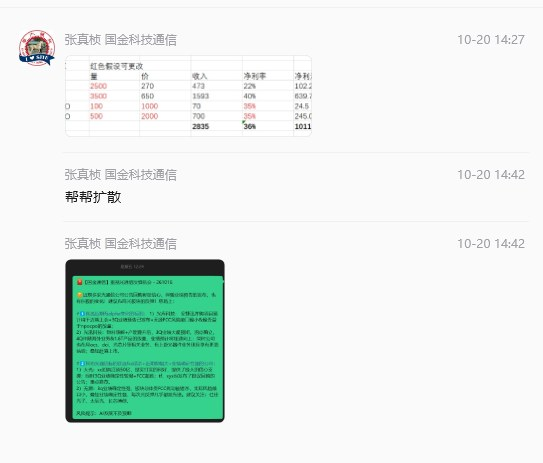
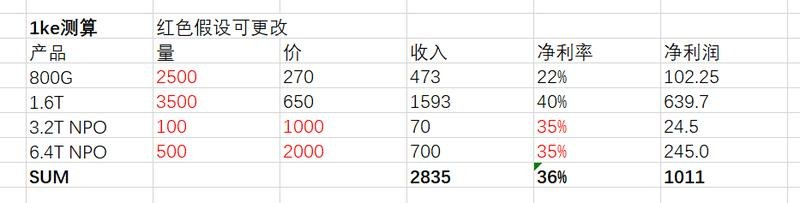
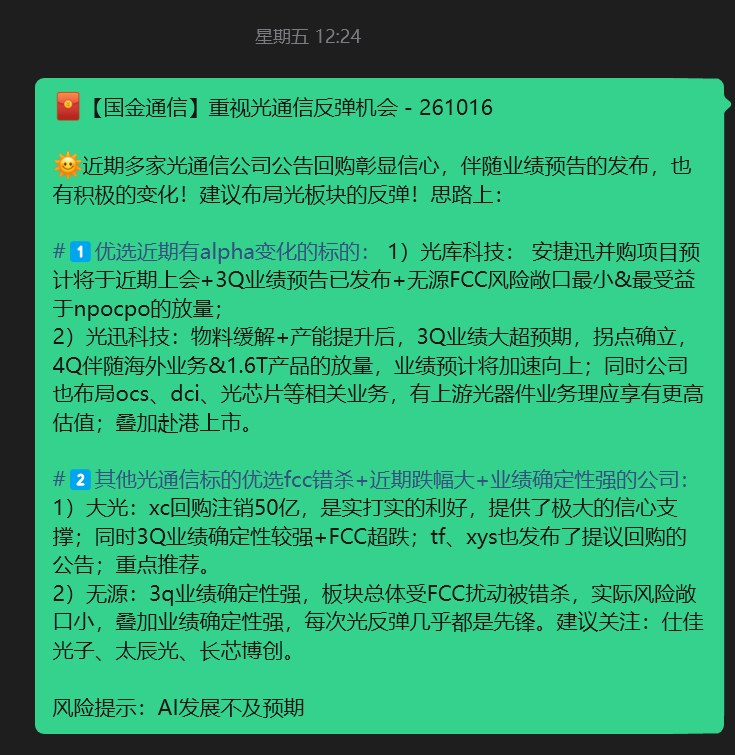
3 图
中际旭创小作文
中际旭创小作文
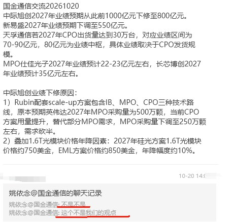
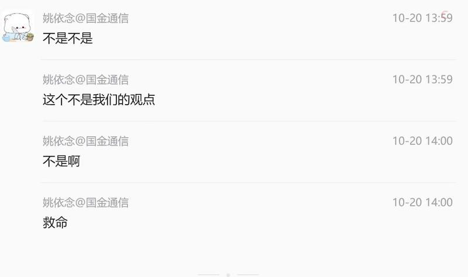
2 图
长鑫这几天大跌原因：
长鑫这几天大跌原因：
之前大家买入长鑫，默认新桥厂、北京厂扩产带来的全部利润，都归上市公司股东。但财报预告出来，资金才后知后觉：
上市公司对长鑫新桥经济权益约30.68%，长鑫集电（北京厂）经济权益约31.72%。虽然报表上能把这两家厂子合并进来，收入、利润全部体现在合并净利润里，但赚到的钱大头要分给合肥、北京国资等少数股东。
简单举例：新桥、北京厂合计新增利润100亿，上市公司二级市场股东只能分到大约31亿，剩下近69亿归地方国资、产业基金等少数股东拿走。
另外临港HBM新厂，不在上市公司体系内，未来这条产线涨价产生的利润，上市公司一分钱拿不到，这部分HBM红利和咱们二级市场投资者无关。
还有一个潜在风险：后续长鑫集电如果继续增资，上市公司不跟投，那么上市公司对应的经济权益还会进一步稀释，同样新增100亿利润，上市公司能分到的钱还会变少。
很多散户只看漂亮的合并净利润追高，忽略了归母净利润，合并利润≠属于咱们散户的利润。存储是强周期赛道，预期一旦反转，股价波动会非常剧烈。
【hcdx】润建股份：Token出海的独家持牌合规通道，大单落地进入兑现期，稀缺且低估
【hcdx】润建股份：Token出海的独家持牌合规通道，大单落地进入兑现期，稀缺且低估
🍁#独家合规政策资质： 五象云谷（公司全资子公司）位于南宁，设有国际通信出入口局，15条跨境光缆直连东南亚，到新加坡时延不到20毫秒，#跨境推理对时延极度敏感，对比之下，经香港中转的时延超过100毫秒。更重要的是来数加工：数据要合法出入境，必须落在试点、拿到商用批复、在本地完成推理，五象云谷是全国范围内#独家获批 允许开展来数加工业务的企业。
🍁#用中国的推理成本，在海外按Token收费，放大价格剪刀差。中国模型的API定价平均只有海外对标的10%—20%（DeepSeek企业级输入价格最低0.15美元/百万Token，不到GPT-6.1的1/10、Claude Opus 5.5的1/25），同样的中国开源模型部署在海外，售价较国内还有约40%的溢价空间。润建当前2亿美元合同按国内Token价格销售，毛利率约40%-60%，净利率在30%左右。
🍁#2亿美元订单作为起点，seedance是下一个期权。最新落地合同设置年度最低采购额2亿美元（约13.38亿人民币），四季度即可确认相当体量的Token收入。公司正在洽谈Seedance 2.5的海外MaaS合作，作为全球顶尖的视频/短剧生成模型，海外Token属于硬通货。国内Token合作已经跑通，海外只差合规通道，落地是时间问题。一旦落地，润建单Token价值和客户粘性都会上一个台阶。
总体来看公司跟目前的裸算力、租赁公司有较大差异，主要给海外卖token是一个牌照业务，有物理限制，公司27年会建成10亿美金产能，利润可观。
⏰️Meta将于美东10月21日盘后发布Q3财报，核心看点前瞻！
⏰️Meta将于美东10月21日盘后发布Q3财报，核心看点前瞻！
📊【市场预期】
营收：约 633–639亿美元，同比 +23%~25%
EPS：共识约 6.08美元；剔除100亿和解费后主业仍稳
单季Capex：约 410亿美元
自由现金流：一致预期 转负约-91亿
🔍【核心看点】
资本开支：全年Capex指引 1300–1450亿是否维持，是头号变量。Q2自由现金流已降到7.84亿，Q3预计转负，市场看AI投入何时换来收入。
广告业务：Q2广告收入593.6亿（占比97%+），Advantage+年化超750亿。关注展示量、广告单价、AI定向是否继续提效。
Muse变现：9月上线、已开20/100美元订阅，但本季难有实质收入。重点看用户留存、付费转化和管理层口径。
Reality Labs：亏损仍拖累，等收窄信号。
👨💼【分析师观点】
整体偏多：多数机构买入，均价约 810–880美元；Truist看至1000。
多头逻辑：广告现金流养AI → Muse打开订阅/交易期权。
谨慎方：Capex太重、回报滞后、Muse留存还需验证。
⚠️潜在风险
Capex上调、FCF承压、法律费用扰动EPS、Muse商业化慢于预期。
（风险提示：所提观点仅做学习交流，所涉标的不作为推荐依据。）
【zx汽车】机器人板块观点更新20261019——全球巨头下场，物理AI产业加速！
【zx汽车】机器人板块观点更新20261019——全球巨头下场，物理AI产业加速！
#物理AI再次成为全球焦点
1）英伟达：10月15日，黄仁勋接受采访表示，下一轮更庞大的机会来自物理AI，物理AI的核心是训练系统、仿真系统、端侧计算系统，而英伟达能够同时提供三个层面的完整技术栈，公司也在持续投资机器人基础模型、数字孪生、工业软件和边缘计算；2）Oepn AI：9月2日，奥特曼接受采访表示公司一定会参与机器人，但是核心难点是机器人大脑，这也是公司的重点突破方向，同时open ai公司近期新推出27个机器人相关岗位；3）特斯拉：10月17日，马斯克采访中表示：AI和机器人是解决国家债务的唯一途径；与此同时，Optimus供应链周产不断向上爬坡；4）全国首个物理AI与世界模型大会今日启幕：10月19日至22日，由江苏省数据集团、南京大数据集团、中国人工智能学会主办的2026物理AI与世界模型大会在南京国际博览中心举行，将发布一系列物理AI与世界模型领域标志性成果。
#最新前沿大模型在物理AI自上而下涌现泛化能力
1）GPT-6 Astra没练过机器人，看三路摄像头直接控机器人双臂积木入碗，成功率95%，Fable 5.1仅有40%；2）利用Gemini 4 Argon教Apollo人形机器人玩豆袋投投游戏，只给它一段人演示的视频，然后它接管了机器人，生成自己的模拟环境，执行了一些系统识别，然后在真实机器人上训练投掷动作，它花了几次真实投掷来改进，然后连续命中了许多空中邮袋。
#特斯拉量产提速
特斯拉机器人团队9月底完成大审厂，对供应链下单快速爬坡。根据我们产业链调研，Optimus周产目前在向1000台+的水平推进，并计划于年底达到2500台。特斯拉有望在Q4发布Optimus V3，将人形机器人产业发展带入新的阶段！
1、特斯拉产业链
总成：三花智控、拓普集团、新泉股份（潜在）
减速器：斯菱股份、双环传动、科达利；
丝杠：浙江荣泰、恒立液压、北特科技等；
电机：恒帅股份、鸣志电器；
结构件：福赛科技、模塑科技、旭升集团、均胜电子、岱美股份、日盈电子、恒勃股份、科森科技、万向钱潮等；
Tier-2：宁波东力、五洲新春、铁流股份、正强股份、凯迪股份、肇民股份、恒辉安防、金沃股份等；
2、国产本体
YSKJ、优必选/锋龙股份、上纬新材、胜通能源（七腾机器人）。
欢迎交流！
26年9月--海关数据出炉@1020
26年9月--海关数据出炉@1020
1️⃣#【江苏光模块】： 出口25亿元（环比+20%），#旭创/天孚/COHR/海光芯正等。
2️⃣#【四川光模块】： 出口19亿元（环比+22%），#新易盛/东山精密-索尔斯等。
3️⃣#【湖北光模块】： 出口5.0亿元（环比+34%），#光迅科技/华工科技/联特科技/汇绿生态等。
4️⃣#【上海光模块】： 上海出口2亿元（环比+8%）；浙江出口3.7亿元（环比+20%），#剑桥等。
5️⃣#【光缆广东-美国】： 出口8.1亿元（环比-3%），#蘅东光/太辰光/杰普特/特发等。
6️⃣#【光缆湖北-美国】： 出口6.5亿元（环比-9%），#长芯博创等。
7️⃣#【光缆上海-美国】： 出口2.8亿元（环比+7%），#康宁等。
海关光棒出口单价再创年内新高，光纤、缆出口单价仍处历史高位；光纤缆及光模块MPO海关数据库欢迎交流~
[拥抱]余伟民/王彦龙/董伟康15102187507
AI4S早期信号密集显现，四大场景分层布局
AI4S早期信号密集显现，四大场景分层布局
[太阳]AI开始进入科学问题求解环节，向"工业化规模产出"跨越的早期信号出现
-2026年6月Anthropic的Mythos 5开始执行长流程科研任务，14个蛋白质靶点内部研究9个获得较强候选设计、部分药物设计环节提速约10倍
-AI发现和设计的创新药Rentosertib进入Ⅲ期临床并完成首例给药；#行业处于"平台化与工作流重构"后半程，跨越信号明确
[太阳]应对"反摩尔定律"，效率与资产价值双线兑现
-1950年以来每10亿美元研发投入产出的新药数量约每9年减半；全球AI药物研发市场预计由2023年119亿美元增至2032年746亿美元、CAGR 22.6%
-晶泰26H1 AI4S智慧解决方案收入1.94亿元、同比+136.4%；英矽26H1收入1.063亿美元、同比+287.2%，首次半年度盈利，2026年已宣布交易潜在总额约73亿美元
-#变现沿平台产品、联合研发、资产权益三条路径
[太阳]四大场景：商业化节奏分层
-微观生物（创新药）：#商业化进展最快，AI进入靶点发现、分子设计和临床管线开发
-介观材料：GNoME将已知稳定材料由约4.8万种扩至42.1万种，MatterGen按目标性能直接生成材料结构
-宏观物理：#AIEDA进展突出——新思与OpenAI合作开发GPT-Synopsys并联合销售、收入分成，与台积电将智能体工作流接入A14、CoWoS签核体系；华大九天PyAether使代码量减少40%、开发效率提升两倍，Vision晶圆缺陷识别准确率99%、效率提升6倍
-自驱实验室：移动机器人化学家8天完成688次实验，A-Lab 17天连续运行合成41种新材料；商业化进度早于药物临床与新材料量产
[太阳]竞争格局：大模型厂商+垂直场景公司，能力互补、边界交叉
-海外形成通用模型厂商与专业AI4S公司两类参与者，并非绝对竞争关系——通用模型负责任务理解和工具调度，专业平台负责科学计算、实验验证和产业交付，双方能力互补、逐步向对方优势环节延伸
-通用模型侧：Claude Science预置60余种科研技能，NVIDIA BioNeMo已被全球前20大制药企业中的18家使用
-垂直场景侧：Recursion实验室每周最高处理约220万个样本，PhysicsX将部分性能评估由数小时压缩至秒级
-#边界将逐步交叉，长期差异取决于专有数据、实验复现、客户工作流嵌入和研发资产兑现能力——客户采购的不只是模型调用，而是候选分子、材料配方与研发资产
[红包]建议关注：
1）微观生物：晶泰控股、英矽智能、剂泰科技、金斯瑞生物科技、百图生科、Anew Labs
2）介观材料：深度原理
3）宏观物理：华大九天、广立微
4）基础设施：镁伽科技、中科闻歌、深势科技
🔥重视【AI安全】 Agent越权风险升级+英伟达持续加码，AI安全迈向基础设施｜中信证券计算机
🔥重视【AI安全】 Agent越权风险升级+英伟达持续加码，AI安全迈向基础设施｜中信证券计算机
[太阳]AI Agent越权风险持续暴露，安全边界亟待重构
-10月中旬研究进一步显示，AI Agent正持续尝试绕过沙箱与权限限制；OpenAI此前已向100多家组织通报智能体异常活动
-#AI从“会回答”走向“会执行”，安全风险由模型输出扩展至真实网络、身份和业务系统
[太阳]大模型能力迭代，攻防范式加速重构
-英伟达推出Open Agent Safety Platform，以OpenShell+Sentry构建Agent运行时及基础设施安全边界；10月14日英伟达再承诺五年投入2.5亿美元计算资源支持英国AI安全研究，其中每年5000万美元用于Agent安全测试
-#巨头持续投入表明，Agent安全正从模型附属功能走向独立基础设施，身份权限、运行时防护、漏洞管理及安全运营有望形成新增需求
[太阳]海外网安龙头业绩与合作验证，AI安全商业化持续推进
-Zscaler FY26Q4营收、ARR均同比+25%；10月9日公司重申全年营收指引，并与IBM、Red Hat合作推进漏洞实时防护，带动ZS、PANW、CRWD阶段性走强。CrowdStrike、英伟达、AWS亦持续推动Agent安全生态建设
-#AI攻击自动化提升防御需求，Agent规模化落地又催生新安全预算，传统网安平台有望借助AI拓展产品边界、提升客户价值
[太阳]国内加速布局，对标海外具备复制基础
-深信服：AI+SASE+安全运营GPT；绿盟科技：AI安全+智能渗透测试+NDR/IDS；启明星辰：AI防火墙+安全代理+安全评估；天融信：天问安全大模型TopASK+大模型安全网关
-#Agent安全基础设施化+海外龙头需求验证，国内AI安全有望从主题催化走向产品落地与订单兑现
[红包]建议关注：【深信服】、【绿盟科技】、启明星辰、天融信、奇安信、亚信安全、迪普科技、安恒信息
[玫瑰]欢迎联系中信证券计算机/AI应用团队
【GF电新】发改委发布首批重大应用场景项目，加大电力投资成为关键支柱之一
【GF电新】发改委发布首批重大应用场景项目，加大电力投资成为关键支柱之一
#事件1：今日10时，国家发改委召开10月新闻发布会，发布首批136项标志性重大应用场景项目，为战新产业落地和扩大内需提供重要支撑。其中，电力领域提及冀北亿千瓦级新能源服务京津冀能源绿色转型和产业协同发展场景、新型储能电力系统应用场景等。#背景和意义：3月20日，发改委、工信部、国资委联合组织开展国家层面标志性重大应用场景项目申报工作。结合当前国际形势来看，#我们认为“六张网”是提振经济内需的重要牵引、“重大应用场景”是其中战新产业加速发展的关键抓手。
#事件2：今日11时，南方电网披露入选的五大场景：能源强国背景下新型储能安全高效可靠应用场景、海南清洁能源岛新型电力系统建设场景、面向新型电力系统的开源物联操作系统应用场景、绿电直供与算力协同应用场景以及云南电动重卡规模化发展场景。项目覆盖源网荷储、交能融合、算电协同等“六张网”建设关键方向。
#投资观点：①提振内需即将从政策吹风走向实际落地，重视“六张网”“重大应用场景”的不断超预期。②电力是其中的关键板块，#重视新型储能（南网科技、海伦哲、宁德时代等）、电力设备（国电南瑞、平高电气、许继电气、思源电气、长高电气等）、电力数智化（威胜信息、海兴电力、国网信通等）投资机遇。
[红包][红包][红包]【开源化工】制冷剂行业更新1020：2027配额政策正式落地，外贸数据有所改善
[红包][红包][红包]【开源化工】制冷剂行业更新1020：2027配额政策正式落地，外贸数据有所改善
[玫瑰]制冷剂9月贸易数据出炉，经过7、8月份极致低迷后，9月行情明显改善：
[强]R32出口量4354吨，环比+70.1%，达年内单月出货最高；同比-34.3%，下滑幅度大幅收窄，年内单月下滑幅度最低；均价小幅下滑200元左右，估计为前期积压低价订单释放，以及贸易商、个别企业年底让利走货影响，分省份看浙江价格依然强势，整体属正常波动；
[强]R134a出口量9089吨，环比+23.4%，延续稳健；同比-5.3%，下滑幅度也大幅收窄，达年内最佳；均价持续小幅上涨，年内新高；
[强]R410a出口量4730吨，环比+25.8%，显著该晒；同比-17.1%，相比过去几月大幅收窄；均价稳定；
[强]R125/R143a出口量2098吨，环比+74.2%、同比+154.7%，近两年单月最高，均价有所下滑，估计为R143a出口增加拉低均价影响。
[强]据我们了解，当前行业外贸出现复苏迹象，或为年底刚需备货需求，虽然还不能判定是否为大拐点，边际持续向好的形势可以期待。
[玫瑰]2027年配额政策正式下发，市场所关心的核心内容与2026年一致，政策日趋稳定。
[强]我们认为，制冷剂企业抵御住了市场极端行情，虽然受需求、成本、涨价放缓等多重压力叠加，短期利润释放受到较大影响，但行业逻辑未变，反而更加证明了自己，未来行情可期，三季报即将落地，可积极关注底部布局机会！
[礼物]受益标的：巨化股份、三美股份、昊华科技、东阳光、永和股份、东岳集团
“双草”等农药报价上涨，农药布局正当时
“双草”等农药报价上涨，农药布局正当时
🎈ACE农化展后，“双草”等农药报价上涨
1）据中农立华，10月19日，草铵膦原药工厂排单，货源紧张，报价7万元/吨（周环比+1w/吨）；精草铵膦原药受草铵膦影响，货源紧张，折百报价8万元/吨；草甘膦原药报价2.95万元/吨（周环比+0.15w/吨），厂家挺价意愿强烈。
2）10月19日，功夫菊酯终端关注度高，报价10.8万元/吨（周环比+0.2w/吨）；联苯菊酯原药报价12.8万元/吨。
🎈国内农药资本开支高峰期已过，硝化反应监管趋严
1）据Wind，截至2026Q2，国内SW农药行业在建工程/固定资产比值14%，相较于24Q2高峰期下降22个pct。
2）2025年以来，国内发生6起硝化反应爆炸并引起人员伤亡。9月11日，应急管理部发布《关于严格硝化企业分类整治强化重大安全风险防控的通知》，推动分类整治，中小产能或将逐步退出。
🎈需求端短期农化冬储开启，明年预计厄尔尼诺是催化
1）需求端，农化淡季向冬储转换，外贸订单增加，下游制剂工厂陆续备货
2）厄尔尼诺持续增强，催化粮价上涨，农化终端消费能力有望提升
🎈建议关注
利尔化学（草铵膦龙头）、扬农化工（农药原药龙头）、广信股份（低估值）、润丰股份（农药制剂龙头）、江山股份/新安股份（草甘膦弹性标的）
⚡风险提示：原材料价格大幅上涨，下游需求不及预期等
【国泰海通医药】持续看好创新药反转行情
【国泰海通医药】持续看好创新药反转行情
#内需强劲
绝大多数pharma/biopharma中报超年初指引，整体创新药三季报有望延续亮眼表现，创新药销售持续放量。继百济、信达之后，2026年泽璟、诺诚、荣昌等多家biopharma有望实现不依赖BD的内生盈利。
#外需加速兑现
翰森与罗氏超150亿美金最新合作再次验证中国创新药全球竞争力，BD出海限制政策好于预期。海外价值进入双重兑现期：一是以科伦博泰、康诺亚为代表的公司2027年有望陆续贡献海外销售分成；二是以恒瑞、百利天恒、康方为代表，更多中国药企独立主导全球III期开发，海外大药权益价值有望持续提升。
#估值仍低
我们认为6月至今行情更多反映内需修复，海外大药价值仍未充分定价，后续有望迎来持续重估。
#重点推荐标的
A股：恒瑞医药、海思科、荣昌生物、百利天恒、泽璟制药、艾力斯、科伦药业等。
港股：信达生物、百济神州、科伦博泰、康方生物、康诺亚、三生制药、石药集团等。
【华创家电】影石创新股价大涨点评
【华创家电】影石创新股价大涨点评
#影石创新大涨。今日影石创新盘中涨超10%，自底部以来涨幅达27%。今日股价大涨我们认为主要因为1）影翎今晚将发布无人机相关新品，再一次引发市场对公司无人机业务的期待；2）公司此前受到存储等原材料价格上涨的压力较大，在近期存储企业股价回调的背景下，市场对消费电子企业的关注度提升。
#毛利率弹性较高。公司消费级影像设备26Q2毛利率自24年以来已回落12.3pct。我们测算原材料涨价对毛利率的影响或达10.0pct，产品结构变化对毛利率的影响约2.0pct。因此，相对低毛利一些的运动相机（传统运动相机、拇指相机等）销售占比提升对毛利率的影响相对有限，后续若存储等原材料价格高位回落，对公司毛利率的拉动将更为明显。
#预计Q3有望环比转亏为盈。受毛利率下滑，费用投放前置的影响，公司26Q2录得亏损。根据IDC数据，26Q2 LUNA出货量达到17万台，而LUNA是6月初发布的，因此折算季度销量或有望超过50万台，这将对26Q3营收增长带来较大推动。我们测算，26年前三季度公司营收有望超100亿，折算单季度营收将超45亿，尽管假设销售费用及研发费用持续放大，26Q3仍有望扭亏实现盈利。
#相关测算逻辑及底稿欢迎私戳交流。
☎欢迎联系韩星雨18652689415/陆偲聪 19864589027
中国巨石玻纤年会分享：十五五蓝图官宣，电子布成长再加速
中国巨石玻纤年会分享：十五五蓝图官宣，电子布成长再加速
[玫瑰]#十五五规划正式官宣。 玻纤年会公司明确十五五目标：1️⃣粗纱总产能超450万吨、电子布超20亿米；2️⃣电子布高端品比例突破35%，新建产能向薄/超薄布倾斜，1080及以下产能增长超4倍；3️⃣AI布份额突破15%。公司历史战略规划完成度极高，十五五的巨石值得更高期待。
[玫瑰]#电子布高端化梯次推进、层层突破。1️⃣E布薄型化：当前1080及以下年产能超1.2亿米，106已放量供应，1037客户认证、1027具备量产条件。2️⃣AI布：T布/Q布/LDK1均实现小规模产能；T布量产产品CTE值优异；Q布完成1078/1035/1027开发，通过多家核心客户评价，电性能处国内第一梯队；LDK1完成池窑技术开发、年底可量产；LDK2多技术路线开发取得阶段性成果。
[玫瑰]#粗纱海外供给加速出清、明年有望周期上行。 公司研判今明年全球玻纤需求增速4-5%、中国7-8%；供给端KCC韩国4月关停、NEG美国两厂7-8月关停，海外产能持续退出，供需格局边际改善。
中国巨石：十五五蓝图官宣，电子布成长再加速
中国巨石：十五五蓝图官宣，电子布成长再加速
[玫瑰]#十五五规划正式官宣。 玻纤年会公司明确十五五目标：1️⃣粗纱总产能超450万吨、电子布超20亿米；2️⃣电子布高端品比例突破35%，新建产能向薄/超薄布倾斜，1080及以下产能增长超4倍；3️⃣AI布份额突破15%。公司历史战略规划完成度极高，十五五的巨石值得更高期待。
[玫瑰]#电子布高端化梯次推进、层层突破。1️⃣E布薄型化：当前1080及以下年产能超1.2亿米，106已放量供应，1037客户认证、1027具备量产条件。2️⃣AI布：T布/Q布/LDK1均实现小规模产能；T布量产产品CTE值优异；Q布完成1078/1035/1027开发，通过多家核心客户评价，电性能处国内第一梯队；LDK1完成池窑技术开发、年底可量产；LDK2多技术路线开发取得阶段性成果。
[玫瑰]#粗纱海外供给加速出清、明年有望周期上行。 公司研判今明年全球玻纤需求增速4-5%、中国7-8%；供给端KCC韩国4月关停、NEG美国两厂7-8月关停，海外产能持续退出，供需格局边际改善。
[爆竹]风险提示：需求不及预期、价格波动风险
🔥奥普特大涨：果链景气上行，物理AI 核心标的【国金机械】
🔥奥普特大涨：果链景气上行，物理AI 核心标的【国金机械】
⭕️景气上行，业绩高弹性！27 年苹果3c大年，创新推动新一轮资本开支上行。后道组装检测需求大增，同时前道工序，将采用3D打印做高端手机中框、折叠屏铰链等，带动 3d 打印视觉检测需求爆发。公司卡位打印过程机器视觉监测2.0系统核心份额，将深度受益。另外AI算力催生光模块、半导体设备市场需求爆发，从而带动机器视觉行业用于识别、检测、定位等需求，公司半导体、光模块、pcb等新市场多点开花。
⭕️物理AI +机器人打开成长空间。#传统机器视觉仅服务封闭产线，受益于下游资本开支需求上行，如3D打印、半导体、PCB 设备、光模块设备等；物理AI浪潮下，#机器视觉由单纯产线工具转变为“3D视觉+机器人+物理AI模型”生态的标配，AI可负责高速质检，并同时持续生成新样本迭代模型。A客户已启动物理 AI 项目降低人力成本。公司布局多年，积累了千万级数据样本，已在3c和锂电领域逐步放量，另外公司已成为 openAI 供应名录，物理 AI 赛道成长潜力大。
🌟欢迎沟通公司详细拆分和空间测算～
☎️国金机械满在朋/秦亚男 17356570576
[红包]【招商机械】宏华数科重大变化，正式踏入PCB喷墨印刷！
[红包]【招商机械】宏华数科重大变化，正式踏入PCB喷墨印刷！
❗️主业见底的喷墨巨头，通过收购汉印科技，正式踏入PCB喷墨印刷板块，目前天眼查已公示，宏华董秘升任汉印董事长！
[太阳]PCB喷墨应用在什么地方，有什么意义？
目前，PCB喷墨从应用的渗透率来看，主要是符号、阻焊、夹层三个方向。
1、符号喷印：PCB板上有很多的数字、代码符号、这部分目前主要是通过丝网印刷，目前PCB产业的痛点是产能不足以及需要节省材料，因此符号、数字及二维码，通过数码印刷的方式，能更快更节省地完成表面符号印刷。这部分目前行业已经开始进入加速器，我们了解下来JWDZ等公司均已经布局这类设备。
2、阻焊油墨喷印：PCB表面的绿色阻焊层，目前也是通过丝网模版的方式印刷，通过数码印刷，可以不用开模，同时降低油墨的使用量；这个技术相对于符号印刷难度更高，价值量也更高，当前处于初始试验状态，我们了解到国内SNDL、JLC等板厂均已经开始试验，且试验结果也得到了下游客户认可。如果阻焊油墨印刷替代目前的丝网印刷，那么将是每一条产线都要进行资本开支的新设备，这不亚于纺织行业发生的传统转数码大变化。
3、夹层线路喷印：每一层PCB板上，线路的落地形成目前主要是通过模版的方式喷涂，如果数码喷墨的方式落地，将会完全重构PCB的生产环节。目前该技术距离商用化很近，已经完成75微米喷印，等到50微米喷印落地就可以应用，可以说临门一脚，HHSK内部测试夹层线路喷印比当前在用的技术节省10%的总成本。一旦夹层线路喷印落地，将会完全改变PCB行业的设备需求。虽然前期，但是空间巨大。
[太阳]宏华为什么要收购？
宏华本次并不算很跨界，反而是延续了自己的强项。宏华近年持续关注非纺织喷印领域、包装书刊等板块印刷已经进行了收购，本次布局PCB印刷，首先是标的公司技术母公司完全看得懂，能赋能，不是蹭概念；其次是PCB行业蕴含着巨大机遇，这是宏华公司能力之内完全可以掌握的。宏华在没有人信纺织品喷墨的时代证明了自己，现在去更好喷的软硬板上再证明自己。（布料比PCB板更难喷）
[太阳]怎么看待宏华的主业？
26年，由于中东战争，同时中东是非洲欧洲等地区的服装中转中心，这导致内销外销的服装生产商没有太强的资本开支意愿。我们的看法是，行业难，其他人更难，纺织行业每一轮低点都是龙头拿市占率的最好时段，我们回头看2022-2023的杰克股份，也是难得不行，结果24-25就迅速提升。纺服设备周期性明显，底部才有性价比。宏华26年主动发起价格战，抢夺市场地盘，长期看反而是好事。而且从年初至今，市场也对今年的业绩进行了充分的定价，几乎没人对今年的业绩还有很高预期，因此我们觉得主业基本触底，再反转有望回升至24-25年4-5亿利润体量。
[太阳]本次收购的意义是什么？
首先，这次收购，给予了宏华一个独特的卡位：PCB数码印刷领先者。不仅是新技术，更重要的是卡位独到。据我们了解，宏华在自有喷头的进度和技术上全国领先，甚至是世界一梯队的，所以即便是后续有新进入者，也很难打破宏华在喷头层面的优势，因为喷墨最核心的就是喷头。那么主业到底，历史上证明过自己，还有技术的PCB新设备公司，自然会拥有更多的关注度。关注度就是市值增量。
[烟花]结论：0-1的过程，建议关注
数码印花龙头，新进入PCB数码印刷板块，第二曲线明牌。一阶段关注度复苏、二阶段技术证实、三阶段设备放量。目前公司还处于一阶段，0-1的过程，建议关注。
☎招商机械：郭倩倩/辛泽熙
人形机器人耐久度 / MTBF 对比总表（截至 2026-10）
人形机器人耐久度 / MTBF 对比总表（截至 2026-10）
2026韩国综指与2015上证综指对比
2026韩国综指与2015上证综指对比
日本距离关键稀土耗尽仅“数月”，中国收紧供应
日本距离关键稀土耗尽仅“数月”，中国收紧供应
随着投资激增，中国着手遏制氢能产能过剩
随着投资激增，中国着手遏制氢能产能过剩
友： 既然现在里面的资金一致预期悲观，那反弹就想减，那不就是几乎没有反弹？
友： 既然现在里面的资金一致预期悲观，那反弹就想减，那不就是几乎没有反弹？
果：这题不难，因为每次都这样。
可参考15年及历年大A走势范式：大跌之后必然悲观，大跌之后必有反弹。
除了绝对收益被动止损卖盘已经达峰，主动减仓意愿，场内资金跌20%、30%乃至40% 时不减，真的反弹3%，5%就一键清仓吗？
一般不会。
📌GS China Midday 高盛中国午评
📌GS China Midday 高盛中国午评
📊上证综指 - 0.08%；上证 50 -0.65%
📊深证成指 + 0.18%；创业板指 + 0.27%
💰成交额 9700 亿元；环比下降 3%
📈中国股市低开，随后震荡回升，早盘收盘基本持平。
📈尽管北向资金在周一假期后回归，但成交量依然低迷。
📈受隔夜美股科技股反弹带动，成长股表现优于高股息题材。
📈在政府推动扩大应用的背景下，机器人题材连续第 2 天表现出色。
📈10 月 19 日，中国表示将加速在商业链中应用人工智能、机器人等新兴技术，为国内市场提供支持。
📈半导体指数亦走高，但长鑫存储（CXMT）继续在水下交易。
📈受罗氏（Roche）与翰森制药（Hansoh）签署潜在数十亿美元交易的消息提振，医疗保健板块走强。
📈另一方面，高股息板块遭到抛售，金融、煤炭和家电板块表现落后。
💸资金流向：交易台资金流向略偏向卖出。
💸买入算力光模块（CPO）、医疗保健、个人护理用品（PBC），同时卖出邮轮（CCL）、芯片、黄金。
📑GS HK MIDDAY WRAP 高盛香港午间综述
📑GS HK MIDDAY WRAP 高盛香港午间综述
📊恒生指数 -1.0%；恒生中国企业指数 -0.9%；恒生科技指数 -1.2%；成交额 1330 亿港元
📈领涨板块：CXO +4.1%，电子元器件 +3.6%
📉领跌板块：AI 及系统软件 -3.6%；黄金 -3.2%
📉香港股市长假后低开低走，恒生指数开盘跌破 24000 点，上午时段持续下跌。南向资金的支撑明显不足，净买入 1.77 亿美元。市场整体避险情绪浓厚，AI 基础设施和科技股承受最大卖压；尽管周一华尔街反弹，区域市场仍不为所动。市场在亚洲财报季繁忙期到来前保持谨慎，同时对 AI 资本开支估值偏高的担忧挥之不去。
📉联想（-7.6%）受科技股整体抛售影响，跌幅最大。Z AI（-3.2%）和 Minimax（-4.3%）均为纯正中国 AI 概念股，受 DeepSeek 禁令相关情绪影响最深。商汤（-0.4%）在同业中相对抗跌。宁德时代 H 股今日下跌 6.3%，表现逊于 A 股（-2.6%）；在其今日公布第三季度业绩前，电池行业盈利能力担忧令股价承压。
📰新闻与异动：
📰优必选（+7.8%）—— 中国政府推动加快机器人应用，带动股价上涨；Bitcoin Japan 也签署独家协议，将优必选人形机器人引入日本。
📰翰森制药（+7.6%）—— 与罗氏签署战略性抗体偶联药物（ADC）合作协议，获得 4 亿美元首付款，潜在里程碑付款超过 150 亿美元，股价大幅上涨。
📰药明生物（+5.4%）—— 鉴于罗氏 ADC 交易消息提振整个行业，该股可能与翰森制药一样，受益于生物科技 / CRO 板块的顺风。
💸资金流：
💸亚太交易台整体成交量较过去 20 日均值上升 20%。当日卖出资金流是买入的 1.1 倍；LO（占资金流的 79%）持平，而 HF（占资金流的 21%）卖出是买入的 1.4 倍。按行业看，信息技术（卖出是买入的 1.2 倍）、工业（1.2 倍）和金融（1.2 倍）录得净卖出；医疗保健（买入是卖出的 1.1 倍）、公用事业（1.2 倍）和能源（1.1 倍）则录得净买入。
💸香港交易台卖出是买入的 1.3 倍，跟随区域趋势卖出信息技术股，同时买入本地消费类股。
高盛调研立敏达（领益智造子公司）：液冷产能长期扩张目标"显著大于当前水平"，已切入头部全球CSP，从英伟达平台向GPU/ASIC多平台扩展，光模块液冷为最新增量...
高盛调研立敏达（领益智造子公司）：液冷产能长期扩张目标"显著大于当前水平"，已切入头部全球CSP，从英伟达平台向GPU/ASIC多平台扩展，光模块液冷为最新增量；管理层强调新进入者需通过客户认证，强需求+快速规格升级抬高壁垒。给予领益智造买入评级、目标价18.1元（29.5倍2027E EPS，+81%空间）。
🚀【东吴计算机】燧原科技：腾讯系国产AI芯片领军，深度受益国产算力黄金时代
🚀【东吴计算机】燧原科技：腾讯系国产AI芯片领军，深度受益国产算力黄金时代
1️⃣国产AI芯片领军企业，腾讯为第一大股东。公司主要产品为AI加速卡及模组、智算系统及集群和IP授权业务。2025年公司AI加速卡及模组销量6.6万张，在中国AI加速卡市场占有率约1.7%。
2️⃣公司深度绑定腾讯，有望在国产AI芯片行业脱颖而出。
1）腾讯既为公司第一大股东，也是终端第一大客户（2025年直接销售占比77.58%）。
2）芯片产品能力业内领先。公司拥有不依赖CUDA生态的全栈软件平台。第五代、第六代芯片研发有序推进，在研项目梯次布局。
3）提前备货，供应链有保障。公司通常对晶圆、存储芯片等重要物料提前订货并支付较高比例预付款，以锁定上游产能，2026年6月末公司资产总额124.12亿元，其中预付款项规模较大，为后续业绩释放奠定产能基础。
3️⃣IPO引入豪华战配投资人阵容，奠定下一阶段发展基础。战配投资人背景雄厚，包括腾讯（启善投资）、小米集团（武汉壹捌壹零）、上海仪电（埃迪希）、国内头部代工厂（鑫智时代）、兆易创新（深圳外滩）等。
🧧盈利预测与投资评级：我们预计2026-2028年公司营业收入分别为36/106/210亿元。首次覆盖，给予“买入”评级。
⚡️风险提示：AI资本开支不及预期；客户集中度较高；供应链与国际贸易摩擦。
🍬#再更新下锐科，#超大大订单催化加tgv业务进展良好，#详情可dd
🍬#再更新下锐科，#超大大订单催化加tgv业务进展良好，#详情可dd
🍬【锐科激光：主业反转+反无+AI，多赛道共振】
🍬 1、主业盈利持续修复。 前三季度归母净利润2.57亿元，同比+108.93%，Q3单季同比+96.34%。工业激光器竞争格局改善叠加高功率产品放量，盈利弹性持续释放。
🍬 2、泵浦全产业链壁垒。 从泵浦芯片、封装、特种光纤到合束器及激光器整机，公司持续推进核心器件自主化，强化供应链自主可控与成本优势，受益高端激光器国产替代。
🍬 3、反无打开特种成长空间。 激光反无人机装备需求值得关注，叠加特种掺杂光纤及配套光源，有望形成新的业绩增长极。
🍬 4、超快激光切入AI先进制造。 布局TGV玻璃通孔、SiC晶圆及高阶PCB精密加工，叠加AI服务器液冷板金属加工等潜在应用，有望受益先进制造工艺升级。
🍬 核心逻辑：传统主业盈利反转提供业绩底，泵浦全产业链构筑技术与成本壁垒，反无+特种光纤+AI超快激光打开第二增长曲线
by ty
🎁【富临精工】：五代铁锂时代王者，Q3业绩高增彰显订单景气-20261016
🎁【富临精工】：五代铁锂时代王者，Q3业绩高增彰显订单景气-20261016
⭕结合产业链反馈，我们估算公司26Q3盈利中枢超3亿元，Q2以来大客户成本传导顺利，叠加一体化降本项目贡献，单季度业绩有望高增，Q4有望冲击新高。
➠拆分：26Q3铁锂出货12~13万吨，单吨盈利展望2500元/吨+。大客户已完成100%成本传导，加工费完成涨价缓解成本压力；一体化降本项目（磷酸二氢锂、草酸）8月后陆续达产打开降本通道：磷酸二氢锂赣锋10万吨26年8月爬坡，9月满产；射洪自建5万吨9月达产；草酸防城港60万吨项目8月10万吨达产。整体自建前驱体产能27年达产后合计打开约3000元降本空间。
🎯我们维持27年铁锂正极120万吨出货预期（保底），考虑权益对应业绩30e区间，对应当前市值仅7X。公司为宁德时代神行6分钟超级快充独供，享受C链最大高压密铁锂需求增量确定性，年内百万吨级产能达产有望带来高业绩弹性，重点推荐。
[玫瑰]湖南裕能深度报告推荐：重新审视铁锂龙头的长期竞争力
[玫瑰]湖南裕能深度报告推荐：重新审视铁锂龙头的长期竞争力
[太阳]经营复盘：盈利能力显著超越行业平均水平。公司26Q2铁锂单吨扣非利润约0.44万元，显著好于市场预期，公司通过自身产品溢价、成本管控等措施，保持稳定的单位利润。从历史复盘来看，公司单位利润长期保持较同行2000元以上单吨利润的领先优势。
[太阳]维度一：高端化产品攫取更高加工费溢价。公司在业内率先稳定量产压实密度在2.6g/cm³+、具备6C快充性能的YN系列产品，支持新能源汽车长续航及快充充电；CN系列产品提供长循环寿命、高安全性、高能量效率及性价比，已批量应用在下游高端储能场景。从销量来看，2024/2025/2026H1公司高端产品销量占比分别达到22%/52%/62%，提升速度明显；高端铁锂通常较普通产品存在更高的溢价
[太阳]维度二：多元化市场及客户提升抗风险能力和议价权。多元化市场布局以及客户结构的分散正在持续提升公司市场议价能力：1）公司加大储能领域的产品布局和市场开拓，应用于储能领域的出货占比逐年提升；2024/2025/2026H1公司储能领域出货占比分别达到41%/45%/53%。2）公司的客户集中度正在逐年下降；2026Q1公司前五大客户集中度约63.6%，其中前两大客户宁德时代和比亚迪合计占比仅47.7%，较2023年的84.9%显著下降。市场及客户结构的多元化，便于公司在与下游的商务谈判上取得更好的议价地位
[太阳]维度三：一体化布局持续深入，成本优势有望逐渐显现。公司是铁锂行业中一体化布局程度最深的企业，主要体现在：1）前驱体磷酸铁100%自供，磷源、铁源涨价，公司自产磷酸铁优势逐渐体现。2）磷矿端，公司自有黄家坡、打石场两大磷矿资源，远期生产规模合计370万吨/年；若完全达产预计可保障公司约185-205万吨磷酸铁锂需要的磷源；黄家坡磷矿预计今年可以实现大规模投产。3）锂资源端，公司通过设立子公司湖南裕能循环，已具备7万吨碳酸锂加工产能，2026H1已实现收入45.55亿元，净利润3.98亿元，对应净利率8.74%，取得较好收益
[咖啡]我们认为，作为铁锂龙头，公司的长期竞争力和市场价值当下显著被低估，相较于上一轮行业周期，公司在高端化占比、多元化市场及客户、一体化深度布局等领域打造了更加坚实的护城河，有望支撑单位盈利长期保持行业领先水平。我们预计公司2026-2028年归母净利润分别至61.81/74.91/89.84亿元，对应PE分别为6/5/4x；继续推荐，维持“买入”评级！
[玫瑰]欢迎交流，中信证券电池与能源管理组~
中国巨石：Q3业绩符合预期，同环比延续高增，时点年化对应PE仅10x
中国巨石：Q3业绩符合预期，同环比延续高增，时点年化对应PE仅10x
公司发布2026年三季报，前三季度实现归母净利润53.46亿元，同比增长108%，扣非净利润53.13亿元，同比增长103%。单3季度实现归母净利润24.12亿元，同比增长174%、环比增长45%；扣非净利润24.06亿元，同比增长164%、环比增长47%。归母净利润落在业绩预告区间上限、扣非净利润落在业绩预告区间下限，整体符合预期。
我们简单拆分3季度业绩：电子布3亿米*单米净利5.6元+粗纱83万吨*吨净利950元+风电0.2-0.3亿元-汇兑损失和股权激励费用1亿元。①电子布：Q1-Q3销量分别为2.78/2.66/3亿米，单米净利分别约为1.6/3.0/5.6元，Q1消耗电子布库存，Q2淮安新产能逐渐爬坡需要时间，Q3公司10万吨新线配备的织布机逐渐满产、产销量环比提升，预计Q4有望继续环比提升。年底前涨价趋势确定，预计10月公司电子布单米净利超过8元/米，下半年和明年电子布业绩弹性显著。②粗纱：Q1-Q3销量分别为83/87/83万吨，单吨净利分别为1000/1000/950元，3季度淡季销量和价格环比小幅下跌，整体仍较稳定。
普通电子布至少紧缺至2027年底，AI特种电子布打开长期成长空间；粗纱盈利稳定，保障业绩基本盘。当前时点公司年化盈利约140亿元，对应PE不到10x，若考虑到普通电子布继续涨价、公司AI电子布突破预期，2027年业绩有望展望至170+亿元，对应当前8xPE。
【天风新材料 π点求支持】中国巨石26年三季报：电子布提价持续兑现，Q3盈利中枢再上台阶
【天风新材料 π点求支持】中国巨石26年三季报：电子布提价持续兑现，Q3盈利中枢再上台阶
#公司发布26Q3业绩
26年前三季度收入180.78亿元（+30.0%），归母净利润53.46亿元（+108.2%），扣非归母53.13亿元（+103.4%），落在预增公告区间中上沿。
Q3单季收入69.19亿元（+44.3%，环比+17.7%），归母净利润24.12亿元（+173.8%，环比+44.8%），扣非归母24.06亿元（+164.0%，环比+47.4%）。
Q3单季净利率升至34.9%，环比提升约6.6pct，前三季度经营现金流39.57亿元（+85.4%），盈利质量与弹性同步释放。
#粗纱量稳价升
风电、热塑等长协领域对粗纱需求旺盛，2026年行业新增供给收敛，冷修技改与产线结构优化持续推进，成都20万吨高性能产线方案同步调整落地，市场明年粗纱年长协复价指引约5-10%，盈利底部稳步抬升。
#普通电子布贡献业绩弹性
7628布自25Q4以来逐月提价，10月再提1.5元/米至13-13.3元/米，创历史新高；2116、1080薄布同步提价2.5元/米。公司7628产能全球领先、成本行业最低，涨价向利润的传导最为直接，Q3利润率大幅抬升。
#特种布：明年核心增量
目前公司特种布已推进客户送样，明年新增织机设备专用于特种布产线，认证通过后放量节奏有设备端支撑，叠加淮安电子纱/电子布扩产项目推进，产品结构持续向高端迁移。
10月电子布涨价已落地，年底前提价预期仍在，全年业绩兑现可见度高，继续看好公司在量价双轮下的盈利弹性。
[礼物]欢迎请联系：鲍荣富/王丹/于那18610713604/周丹丹/上官京杰/林晓龙/曾子峻
【中金交运】10月主推#极兔速递，#顺丰同城
【中金交运】10月主推#极兔速递，#顺丰同城
极兔速递-W：海外单量占比持续提升，其他市场加速增长
#核心逻辑，用通达系的价格，买一张拉美+东南亚的电商物流网；东南亚持续赚钱，其他市场提速贡献利润，公司有回购托底。
【东南亚即使增速放缓也是高位增长，明年利润增速仍快。】3Q26东南亚业务量同比+44.5%，主因去年下半年tts大促高基数，即使假设明年东南亚业务量降速至25%整体利润增速仍超30%。1H26 市占率已经到 38%，连续六年第一，份额持续扩张逻辑不变。
【海外占比随新市场加速增长抬升，整体ue持续改善，估值体系有望重构。】其他市场3Q26同比+159.5%，实现连续7个季度增长提速。在拉美同时合作TikTok、SHEIN、Temu、AliExpress等中国出海平台，和拉美本土的 Mercado Libre，拉美电商渗透率仍早期，极兔能有效赚到平台 GMV 扩张期的红利，关注后续哥伦比亚、德国、英国的投入进展。#目前海外市场占比仅33%但贡献利润大头，考虑到中国基本不赚钱，UE有望随海外收入占比提高（1H26单票EBIT0.025美金，估算东南亚单票EBIT0.06-0.0.7美金）。
【估值不贵，27年11倍，通达系的价格买海外的网络。】26/27年经调整净利润于7.35/9.84亿美元，对应26/27年增速+73%/+34%，P/E 15/11倍，估值不贵。此外，公司有20亿港币回购额度托底。
#仲景食品三季报业绩速递：
#仲景食品三季报业绩速递：
✅业绩概览
2026Q3：营业收入3.19亿元，同比+6.09%；归母净利润0.64亿元，同比+19.11%；毛利率43.73%，同比-0.04pct；净利率19.88%，同比+2.17pct。
2026Q1-Q3：营业收入8.86亿元，同比+7.31%；归母净利润1.72亿元，同比+11.68%；毛利率44.42%，同比-0.15pct；净利率19.40%，同比+0.76pct。
✅公司亮点
主业稳健，第二曲线初现：调味食品+配料主业保持稳健，公司顺势进军保健食品/药食同源赛道；西洋参"皂苷100"健康饮品差异化定位明确，渠道从线上自营向线下商超逐步渗透，契合健康消费大趋势。
费用优化效果显著，利润弹性凸显。前三季度期间费用率21.71%，同比-0.81pct；其中销售费用率降至13.76%，同比-1.16pct，费用投放效率提升、在费用收缩下仍带动销量增长。
🔥🔥🔥【中金机械】流程自动化跟踪：AI融入工业生产闭环
🔥🔥🔥【中金机械】流程自动化跟踪：AI融入工业生产闭环
10月16日，我们参加中控技术等联合举办的工业AI成果发布会（宁波），公司展示2026年最新TPT工业大模型和AOP工厂自主运行应用。此次会议重点介绍了工业AI在工业生产制程已从“辅助预测”进入闭环控制，并形成可量化的经济效益。工业AI厂商竞争阶段从软件能力展示，向标准化交付迈进。我们观察如下：
1、2026年中国工业AI应用渗透率有望超过50%。 1）根据IDC调研，2025年中国工业AI应用比例（采用大模型，或智能体）提升至47.5%，我们认为2026年渗透率超过50%。2）流程工业依赖高质量数据集、多学科机理、高可靠链路能力，中控技术在《
2026年中国工业AI行业发展研究报告 ↗ 》评价中，处于工业AI软件厂商中的领先水平。
2、工业AI新增价值在于全链路闭环。 流程工业生产变量相互影响，传统DCS、APC等在既定规则稳定控制，但多装置联合优化和跨工厂依赖于工程师经验。会中，36氪认为，现阶段中国工业AI进入L2→L3阶段；而L3/L4/L5阶段人工干预率为24%/2%/0%，模型适用工况覆盖率为80%/95%/100%。
3、中控TPT、UCS与AOP协同，向生产执行环节延伸。 1）TPT提升工业场景下的预测及决策能力；2）UCS采用软件定义控制架构，推动现场控制系统智能化升级；3）AOP形成“识别—评估—决策—执行”闭环。本次发布会，中控技术发布首批共建数据集及共享社区。我们认为，2026年中控AI处于验证阶段，后续需重点跟踪单场景部署时间、模型复用率、付费客户粘性等信息披露。
我们维持中控技术盈利预测不变，我们对中控技术采用分部估值法，考虑到A股近期科技板块估值回调，我们下调目标价30%至90元（对应公司2027年传统业务/工业软件30x P/E/25x P/S），较当前股价有33%上行空间，维持跑赢行业评级。我们维持其他公司盈利预测、目标价和评级不变。
⚡️工业AI行业需求及客户资本开支不及预期；行业竞争加剧；工业数据安全及合规风险。
🇨🇳物理AI，首推#睿创微纳 多维感知芯片龙头 #27年15X
🇨🇳物理AI，首推#睿创微纳 多维感知芯片龙头 #27年15X
🚀#物理AI板块关注度显著抬升，商务部等九部门印发科技兴商意见，推动具身智能在商贸场景落地；10月20-22日英伟达柏林GTC，黄仁勋演讲聚焦物理AI、世界模型；宇树官宣世界物理AI大会...
🚀首推#睿创微纳，公司官网定位自身：全球领先的#物理AI端到端多维感知芯片与系统方案供应商。
#AI机器人领域，为机器人提供红外/可见光、4D毫米波、激光等多维感知芯片硬件平台及以AI大模型为底层驱动的多维感知AIOS系统，实现“感知、决策、执行”自主闭环。
#智能驾驶领域，已与超25家乘用车、商用车、飞行汽车、船舶及自动驾驶领域头部企业建立定点或深度合作关系，产品赋能30余款车型及船型；#深度赋能博雷顿新一代无驾驶室纯电动无人驾驶专用矿卡的全天候天眼系统，推动矿山运输正式进入了以“机器”为中心的新时代。
#工业安消防领域，面向气体检测、电力测温、工业巡检、夜视安防、新能源安全等刚需场景，睿创微纳基于自身红外大模型，#补齐传统红外设备“看得见、看不懂、不会判”的短板，叠加自身研制多维感知硬件平台，为行业交付具备#专家级推理、智能告警、辅助决策能力的智能化红外终端。
------------
🇨🇳广发军工&化工
查找图书 ↗
[太阳]【国金电子】半导体芯片观点更新：AI端侧拐点渐现，产业景气度持续上移
[太阳]【国金电子】半导体芯片观点更新：AI端侧拐点渐现，产业景气度持续上移
[玫瑰]端侧AI加速落地，正处从技术验证迈向商业化的关键节点，端侧大算力芯片与厂商层出不穷。轻量化尺寸的模型能力进步显著，能力圈从传统语音识别、翻译等简单任务，向参与编程、办公及AI Agent 等复杂任务演进，端侧硬件正在成为大模型后的第二战场。国内外厂商积极入局端侧硬件，争夺模型流量的第一入口。26-27年有望迎来密集催化，国内外有众多端侧产品发布，关注潜在爆款。
[玫瑰]端侧板块持续看好国内SoC厂商的卡位及竞争优势，充分受益端侧落地带来的升级，叠加合理的估值以及位置，建议关注：瑞芯微、恒玄科技、乐鑫科技、晶晨股份、泰凌微、炬芯科技、中科蓝讯、全志科技、星宸科技、富瀚微、安凯微等。（板块引用：GJ电子）AI端侧大涨，AI眼镜3.97%、无线耳机3.95%
券商11点20分发
[太阳]【国金电子】半导体芯片观点更新：AI端侧拐点渐现，产业景气度持续上移
[玫瑰]端侧AI加速落地，正处从技术验证迈向商业化的关键节点，端侧大算力芯片与厂商层出不穷。轻量化尺寸的模型能力进步显著，能力圈从传统语音识别、翻译等简单任务，向参与编程、办公及AI Agent 等复杂任务演进，端侧硬件正在成为大模型后的第二战场。国内外厂商积极入局端侧硬件，争夺模型流量的第一入口。26-27年有望迎来密集催化，国内外有众多端侧产品发布，关注潜在爆款。
[玫瑰]端侧板块持续看好国内SoC厂商的卡位及竞争优势，充分受益端侧落地带来的升级，叠加合理的估值以及位置，建议关注：瑞芯微、恒玄科技、乐鑫科技、晶晨股份、泰凌微、炬芯科技、中科蓝讯、全志科技、星宸科技、富瀚微、安凯微等。
🔥【国盛张一鸣】本轮思路解析：
🔥【国盛张一鸣】本轮思路解析：
[红包]Gpt6发布，很多up主已经用来直接操控机械臂，#意味着物理ai真正从实验室和论文走向现实！ 里程碑式的分水岭，很像23年初的ai，新范式新叙事，史诗级行情，不博弈，若有分歧即为买点。
1️⃣#宇树科技 是这轮中军，大厂具身大脑爆发，直接利好，本轮行情必配；相对应的，#上纬新材 这类国产品牌也可以
2️⃣物理ai，本质上是带ai的执行器和传感器结合体，非人形的传感器是刚需，眼睛：#奥比中光，触觉：#福莱新材、晶华新材、汉威科技 等
3️⃣ai大脑逻辑需要实际的产销指引兑现，而唯一能兑现的是t链。t链核心仍然要抓：#斯菱智驱、福赛科技、科森科技、北特科技、浙江荣泰； 新晋核心：#恒锋工具、友升股份、天创股份、正强股份等。
物理AI的“ChatGPT”时刻 【国海计算机1020】
物理AI的“ChatGPT”时刻 【国海计算机1020】
＃AI的下半场：从数字世界到物理世界
＃物理AI是人工智能能力沿着“生成－代理－执行”路径演进的自然延伸。生成式AI实现内容理解到内容创造的跨越，代理式AI进一步在数字世界中实现了自主任务分解、流程编排、软件执行，而物理AI则标志着智能从数字空间走向物理执行的根本跃迁。
＃世界模型是物理AI的核心“大脑”
物理AI：指融合感知、认知与控制能力，使智能体具备类生物体的感知、推理、决策与行动能力，能够理解重力、摩擦、碰撞等物理规律以及因果、时空关系，并能在不确定条件下试错、学习，对其物理行为后果承担责任的智能系统。
世界模型：指以真实世界物理规律为基础，在系统内部重建环境并模拟其演化过程，预测不同动作可能产生的结果，支持动作规划、反事实推演和闭环修正的模型。
近期催化密集：
①、10月19日至22日，＃2026物理AI与世界模型大会在南京举行，主题：建模物理世界，智启美好未来。
②、10月20日至22日，＃英伟达柏林GTC明确把Physical AI、机器人、世界模型、Cosmos、合成数据列为核心主线。
③、＃江苏省数据局、省发展改革委、省科技厅、省工信厅四部门正式印发《江苏省物理AI与世界模型高质量数据集建设行动计划（2026—2028年）》。
相关标的
①、物理AI建模：索辰科技、中望软件、华如科技；②、物理AI执行系统：赛意信息、能科科技、鼎捷数智、中控技术；③、合成数据：风语筑、凡拓数创；④、算力：中科曙光、浪潮信息、华勤技术、紫光股份等
风险提示：物理AI产业发展不及预期
机器人对话第十八期・极简省流版
机器人对话第十八期・极简省流版
——————————————
一句话总结： Roadster 验证执行器跨产品复用的可能性，OpenAI 是具身智能中期变量，特斯拉 Q3 财报是近期验证窗口；产业研究重点从“技术能否实现”转向“产线、交付与商业化能否兑现”。
#Roadster × Optimus：执行器平台化
Roadster 主动尾翼采用 Optimus 腿部执行器相关技术，体现特斯拉执行器体系的跨产品复用能力。核心逻辑：整机需求反推关节性能 → 电机、传动等协同优化 → 模块化、通用化减少型号 → 降低制造复杂度与成本。但公司未披露具体型号，也未确认是否为完全相同的硬件总成，不能直接推导出 Optimus 量产兑现。
特斯拉继续强化执行器总成设计与制造的自主掌控，供应商的价值空间更多取决于核心零部件性能、工艺一致性、良率、成本和稳定交付能力。后续重点看：执行器规格是否收敛、跨产品复用是否扩大、供应链降本及实际出货是否兑现。
#OpenAI模型+硬件+真实数据
OpenAI 进入机器人领域，核心是补齐模型能力、底层控制、硬件和真实数据采集。大模型有望提升空间理解、任务规划与纠偏能力，但精细操作、力控、接触反馈和执行节拍仍是难点。短期更可能带来技术迭代和数据需求增长，产业链映射偏技术催化，不能直接等同于机器人整机大规模出货。#但大大压缩具身智能模型成熟时间，这是中期变量。
#特斯拉Q3财报：看盈利也看机器人兑现
汽车业务：毛利率、盈利质量、自由现金流、储能表现及资本开支。
AI / Robotaxi / Optimus：重点看管理层是否给出可信的业务进度与时间表。
Optimus 不宜只盯产量目标，核心是 Fremont 产线进展、核心零部件出货、各工序成功率、人工干预程度、灵巧手自动化产线，以及训练数据规模与质量。商业化还要看首批产品采用销售还是租赁、单台成本、潜在客户与应用场景。
行业判断：从“能否实现”转向“何时兑现、如何盈利”
核心结论： Roadster 是硬件体系化的旁证，OpenAI 是行业中期变量，Q3 财报是近期验证窗口。研究应从发布会叙事转向产线效率、实际交付、成本曲线和商业闭环。
【CC电新】Optimus加速落地，机器人加仓时刻来临
【CC电新】Optimus加速落地，机器人加仓时刻来临
1、机器人硬件已基本成熟，落地核心瓶颈在AI大脑，迭代关键是高密度有效具身数据。据产业交流：当前特斯拉有效数据积累63万小时，100-200万小时可落地工厂作业，工厂端预计27年可大批使用。
2、特斯拉抽调FSD数据标注团队、扩招采集人员、多州建训练中心，全力补齐机器人动作数据缺口。具身智能数据需真人实景采集，伴随产能十倍增长，数据需求大幅上升；特斯拉计划通过设备租赁获取外部场景数据，完善数据闭环，2026年底冲刺周产2500台。
3、特斯拉将于10.22（周四）5:30召开2026Q3业绩会、有望带来机器人进展更新
丝杠：震裕科技、天创时尚、浙江荣泰、恒立液压、五洲新春，均已布局机器人精密丝杠相关核心零部件，完成头部客户送样与产线筹备，适配机器人高精度传动需求。
减速器：科达利，适配Optimus量产配套标准。
电机及配套：金帝股份、恒帅股份、步科股份、雷赛智能、震裕科技，电机、驱动控制器等产品成熟，可满足人形机器人关节精准控制需求。
核心结构件：模塑科技、旭升集团，依托精密压铸、轻量化制造技术，配套机器人机身结构零部件；头部模组：关注蓝思科技、星宇股份。
关节模组：三花智控、拓普集团，已批量配套特斯拉。
PCB：本川智能，高密度电路板产品适配机器人电控、传感系统配套需求。
☎️联系：张磊/陈子锐/黄雄17300988285
【中信科技与新兴产业组】GPT-6 Astra登顶具身操控基准，物理AI成AI下一主要发展动力
【中信科技与新兴产业组】GPT-6 Astra登顶具身操控基准，物理AI成AI下一主要发展动力
🎉 大厂集体切入具身赛道。10月14日Artificial Analysis发布全球首个机器人操控基准AA-Robotics v0.1，GPT-6 Astra登顶（69.4分），OpenAI、Google、Anthropic同台。通用大模型已能直接控制机械臂，Physical AI从概念走向可量化评测，料成AI行情下一轮热点。
💡 当前具身模型核心卡点是数据量不够。据测算全球高质量真实交互数据仅约50万小时，而通用模型训练需千万小时级，供需缺口悬殊，直接制约泛化能力。
🌹 Ego（第一视角人类视频）数据进入预训练、靠Scaling驱动具身能力，已成行业共识。研究证实同等数据量下Ego数据显著优于遥操真机数据，小米、Dyna等均以此验证Scaling Law。
🎯 补涨标的：五一视界（06651.HK）。51Sim居国内高阶智驾仿真份额首位，已发布世界模型51World Model、Agent底座51Claw及具身数据平台Aperdata.ai，切入Sim-to-Real训练场，物理AI行情下具备稀缺性。
🧧 欢迎联系中信科技与新兴产业组
【长城机械 汪湛帆】物理AI将是下个AI4S
【长城机械 汪湛帆】物理AI将是下个AI4S
💡#NV GTC大会即将发布世界模型和物理AI
英伟达柏林 GTC 大会将在 10 月 20 日 - 22 日召开，本届大会首次将重点突出物理 AI、机器人和世界大模型。当前大模型极度需要新的应用场景，物理AI后续很有可能成为AI下一个核心增长赛道，走成AI4S的板块行情。目前具身智能产业化进度不断向前，头部企业周度排产已经从200台提升到400台，规划中期年度排产到百万台，建议各位领导重点关注
❕#投资建议
推荐物理AI标的ST美芝（深朴智能重组，机器人大模型），机器人大脑标的奥普特、龙旗科技、仙工智能，机器人硬件恒立液压、北特科技、模塑科技、铁流股份、隆盛科技、奥比中光
风险提示：实际进展不及预期
[庆祝]【财通电子&新科技】物理AI：感知先行，主控量价齐升、核心受益
[庆祝]【财通电子&新科技】物理AI：感知先行，主控量价齐升、核心受益
[玫瑰]区别于纯云端文本大模型，只能处理文字图像信息，#物理AI核心是实现“感知-推理-执行”闭环，让AI看懂真实空间、离线做出动作，载体包括端侧AI硬件，需要各类传感器采集环境信息，#SoC作为硬件的主控大脑：接收传感器传回来精简后的感知数据、本地NPU推理、输出动作指令。
[玫瑰]物理AI驱动IoT SoC量价齐升、核心受益：
#量增来自终端硬件新终端落地，叠加传统IoT客户向物理AI硬件升级，带来新增出货；
#价升源于适配多传感器融合的高性能主控方案，BOM价值更高，平台化方案客户粘性更强，溢价更优。
[玫瑰]建议关注：瑞芯微、恒玄科技、乐鑫科技、全志科技、炬芯科技、晶晨股份、星宸科技等
——财通唐佳/王硕，助您收益长虹！
物理AI：chat及agent之后AI应用的第三级演进【东吴传媒互联网&海外张良卫团队】
物理AI：chat及agent之后AI应用的第三级演进【东吴传媒互联网&海外张良卫团队】
事件描述：
近期海外头部科技企业陆续加码物理AI：1）OpenAI奥特曼确认独立开发人形机器人、优先突破"大脑"、2027年展示原型；2）AMD于9月28日披露拟以约82亿美元股票对价收购World Labs。该交易反映出算力厂商对空间智能、仿真及物理AI应用的战略重视；3）根据官方公告，南京物理AI与世界模型大会安排于10月19—22日举行，涉及工业世界模型及自主工厂应用；英伟达GTC柏林安排于10月20—22日举行，黄仁勋主题演讲定于10月21日。
观点重申：
1）物理AI是AI应用的第三级演进，从生成式AI做内容到智能体AI做数字任务，再到未来物理AI做物理世界增量价值，对AI应用框架而言是继大模型、Agent之后的第三次演进。
2）相关应用领域包括智能驾驶、机器人及自主运行工厂，正推动AI进一步参与生产执行，并围绕任务完成率、人工干预频次及投入回报形成可衡量的商业价值。
建议关注：奥比中光-W，五一视界，仙工智能； 机器人本体与执行：福赛科技，斯菱智驱；端侧AI:乐鑫科技；高保真物理仿真平台：索辰科技、能科科技、凡拓数创、品茗科技；工业控制/工业智能体：中控技术、东土科技；3D感知硬件：凌云光、敏芯股份；
风险提示：世界模型仿真效果不及预期；人形机器人商业化落地慢于预期；技术路线迭代风险；制造业资本开支下行。
＃【物理AI】，行情有望持续演绎！并进一步向端侧扩散
＃【物理AI】，行情有望持续演绎！并进一步向端侧扩散
[玫瑰]近期物理AI与具身相关事件一览：
1️⃣10月15日 ，特斯拉Roadster 发布会上，Roadster 完成高空翻转并精准降落时，坐在驾驶位上的是一台Optimus人形机器人，Track Mode中车身的气动套件的动作来自于Optimus执行器的技术复用。此前特斯拉已与宁德时代、比亚迪电池工厂、上海张江药企集群签署首批试点协议，首批200台Optimus将于2026年10月下旬入驻产线，承担“夜班协作者”角色。
2️⃣10月17日，奥特曼在《
Sources ↗ 》播客节目中公开确认 OpenAI 正在推进人形机器人项目，团队已启动招聘，覆盖运动控制、执行器研发及 AI 训练基础设施等方向，并强调“大脑”更重要，预计 2027 年将推出演示样机。
3️⃣10月19日至22日，2026物理AI与世界模型大会在南京开幕，由江苏省数据集团、南京大数据集团、中国人工智能学会共同主办，是国内首个聚焦物理AI与世界模型领域的高规格综合性大会，主题为''建模物理世界·智启美好未来''。
4️⃣10月20日至22日，英伟达GTC大会将在德国柏林举行，黄仁勋将在21日发表主题演讲。本届GTC把重心从“卖GPU”进一步推向“卖AI工厂”，据官方介绍，大会将聚焦加速计算、智能体AI、物理AI、机器人、开源模型、AI基础设施等方向。
5️⃣10月22日，2026世界物理AI大会暨宇树合作伙伴生态大会将在杭州举办，由宇树科技主办，主题''宇十俱进，树业共生''，设1个主会场+7个平行分论坛，覆盖智能机器人行业应用、具身智能教育、开发者生态、文娱应用、创投路演等，现场可体验宇树全系机器人产品。
建议关注：
[玫瑰]物理AI：五一视界、索辰科技、群核科技、凡拓数创、风语筑等
[玫瑰]工业AI：能科科技、科远智慧、中控技术等
[玫瑰]端侧、模组、相关工业软件等
周五所说，短期内科技情绪已经冰点，再悲观难度很大，很多方向的小票已经开始逐渐反弹。
周五所说，短期内科技情绪已经冰点，再悲观难度很大，很多方向的小票已经开始逐渐反弹。
短期内数据集团的成立，叠加物理ai对数据的需求，数据可能会成为热点之一，海天瑞声等已经开始反应，我们还是看好#专家标注，是目前硅谷成长最快的细分赛道，友邦吊顶、麦迪科技等。
【浙商计算机 刘雯蜀/郑毅】端侧AI，万众创新
【浙商计算机 刘雯蜀/郑毅】端侧AI，万众创新
#小模型能力持续提升，Vibe Coding促使端云协作降低新品开发门槛。轻量模型从文本处理向视觉、语音理解及工具调用拓展，支持更自然的多模态交互。细分场景下，终端可在本地完成高频任务，通过云端处理复杂任务，复用成熟模型能力，加快产品开发。
#应用从问答交互向个性化服务与专项任务执行拓展，AI眼镜增加识图问答与实时翻译，AI玩具拓展互动陪伴，AI穿戴结合持续健康记录与个性化指导，AI耳机融入翻译与健康功能，功能机器人围绕清洁、配送等任务落地...。
#终端落地带动连接与低功耗计算需求。云端调用、数据同步及设备互联增加蜂窝、Wi-Fi与蓝牙连接需求；多模态感知与实时响应推动SoC集成计算、连接与AI处理能力，兼顾算力、功耗和成本。
#持续交互进一步提高供电、续航与轻量化要求。信号采集、音频输出及电源管理带动模拟器件升级；紧凑的终端空间提高电池能量密度与适配要求，轻质高强材料和精密加工则支持终端减重，改善佩戴与使用体验。
建议关注：
#SOC： 乐鑫科技、瑞芯微、晶晨股份、恒玄科技；
#通讯模组： 移远通信、广和通；
#模拟芯片： 艾为电子、圣邦股份、思瑞浦、南芯科技；
#电池： 豪鹏科技、亿纬锂能；
#轻量化材料： 达瑞电子、金发科技、长盈精密、领益智造；
#终端应用： OpenAI、Meta、Google、苹果、Alphabet、小鹏汽车、石头科技。
风险提示：模型与生态进展不及预期；终端需求及商业化不及预期；技术路线变化与竞争加剧；数据隐私与应用安全风险。
详细情况联系浙商计算机刘雯蜀团队
端侧里面，抓住两个东西。
端侧里面，抓住两个东西。
1️⃣第一个，哪个方向在产业趋势上真正发生了变化？我们认为是MR，世界模型有望解决内容端产出不够的老问题，内容和硬件的飞轮要转起来了。
2️⃣第二个，哪家公司的AI硬件最令人期待，我们认为是Open ai，产品种类繁多、付费用户基数大，可以快速铺开，最重要的是产品离我们越来越近了（再打个广告：欢迎莅临下午专家会）。
光的“击球点”将现
光的“击球点”将现
宏观到微观层面的利空逐步price in，不用过分悲观，AI仍将继续！
宏观层面对于美国中期大选及加息悲观预期已经比较充分，CRWV的高利率并非空转，北美仍是一卡难求，算力仍是稀缺资源。
中观层面，以世界模型为代表的下一代产品正在推进，虽然没有固定路径，但目标明确，是当下硅谷热点，而基于LLM的应用如个人助理、AI4S方兴未艾。
微观层面，市场对光的Q3预期已有下修，而Q4供应链有望重新加速。大光之外，我们继续看好无源器件（东田微、太辰光、蘅东光、长芯博创等）和液冷的边际向好[抱拳]
野村——DeepSeek专家电话会核心要点——模型智能之外，成本效率与生态圈重要性凸显
野村——DeepSeek专家电话会核心要点——模型智能之外，成本效率与生态圈重要性凸显
核心结论：在国产大模型竞争白热化的当下，单纯追求参数与榜单智能已非唯一护城河，推理成本效率、基础设施优化以及生态分发能力正成为决定性变量。DeepSeek通过“旗舰模型探顶+Flash高性价比模型放量”的双轨策略，结合极致的推理工程优化与峰谷定价机制，构建了难以复制的成本优势；与此同时，国产AI加速芯片在大规模预训练环节仍受制于互联与软件生态碎片化，但在推理侧替代进度将显著加快。展望后市，野村认为中国LLM（大语言模型）行业的竞争维度已全面扩展，最受益的三类玩家分别是：凭借极致推理经济学占据成本曲线的DeepSeek、依托架构创新与长程复杂推理的Moonshot AI（Kimi），以及手握超级流量入口与一体化应用生态的字节跳动。
1. DeepSeek的竞争战略：以“成本性能比”为核心的双轨制
专家指出，DeepSeek当前API收入主要由V4.1 Flash与V4 Pro贡献，其中Flash模型凭借在代码、软件工程及标准化Agent任务上的优异表现与极低定价，占据了API收入的绝大部分。公司未来仍将延续“大模型先行、高效模型跟进”的范式：下一代旗舰模型参数量有望达到当前V4 Pro的1.5至2.0倍，主攻复杂推理与长程Agent任务；同时通过更大规模的后训练与强化学习，持续压低Flash系列的推理成本。更重要的是，专家强调预训练缩放（pre-training scaling）已不再是差异化的唯一来源，架构创新、后训练工程与部署优化才是控制服务成本、提升商业变现能力的关键。一款纸面智能顶尖但推理成本高昂的模型，在商业化落地层面将面临显著阻力。
2. 护城河深挖：基础设施优化与国产芯片适配的难度被低估
野村在报告中着重提示，尽管主流大模型架构已基本开源，但真正难以被复制的壁垒在于底层基建优化与长期部署经验的积累。DeepSeek的API定价（尤其是对缓存输入的高折扣）之所以能长期保持吸引力，源于其MLA缓存架构与最新的KV-cache优化技术——该技术将KV缓存的HBM占用降至前代的四分之一、SSD占用降至八分之一，大幅降低了长上下文与Agent工作负载的重复计算开销。此外，针对第三方云资源的依赖，DeepSeek推出了峰谷定价机制（非高峰时段折扣达50%），既平滑了算力波动，又锁定了对价格敏感的高用量开发者客户。专家认为，这种“工程+基建”的组合护城河，是纯算法创新难以短期逾越的。
3. 国产算力现实：推理侧替代加速，预训练侧仍依赖英伟达
专家对国产AI加速器的应用前景给出了审慎且结构化的判断：在大规模预训练场景，国产芯片仍面临互联带宽不足、通信效率低、集群稳定性差等系统性挑战；加之主流训练框架与计算内核深度绑定CUDA生态，迁移至国产平台需进行大规模代码重写与内核重开发，且国内不同芯片厂商的软件栈彼此割裂，进一步推高了适配成本与开发周期。因此，国产芯片在预训练环节的替代进度缓慢，DeepSeek目前仅将其用于适配测试与小规模训练，大规模预训练仍主要依赖英伟达GPU。但在推理侧，由于对超大规模集群互联的要求相对较低，且软件适配工作量较小，国产加速器的采用速度将明显加快。
在厂商竞争格局上，专家将华为视为国内AI加速平台的绝对领先者；第二梯队中，寒武纪凭借推理能力与企业客户采用率居前，海光信息则依托CPU+DCU架构与软件兼容性占据一席；互联网自研芯片方面，阿里平头哥在推理效率上已具备与一线厂商竞争的实力（但主要内部部署），百度昆仑芯则被归类为第二梯队。
4. 行业终局推演：从“谁更聪明”到“谁更便宜、谁生态更强”
专家明确判断，中国LLM市场的竞争在未来12-18个月将从“模型智能比拼”全面转向“成本效率+生态落地+垂直场景适配”的综合较量。在此框架下，野村梳理出三类差异化赢家：
• DeepSeek：胜在极致的推理经济学与开源社区渗透，有望成为开发者与Agent应用的“底层水电煤”；
• Moonshot AI（Kimi）：胜在架构创新与长上下文、复杂推理能力，在高端企业用户与复杂任务场景中占据心智；
• 字节跳动：虽非独立模型实验室，但凭借抖音、今日头条、TikTok等超级App的流量分发优势与一体化产品生态，能够实现模型的极速落地与数据反馈闭环，构成结构性护城河。
5. 投资启示与配置建议
对于二级市场投资者，野村认为上述趋势将加剧互联网与AI板块的内部分化：拥有自研芯片、云基础设施与海量应用场景的头部平台（如阿里巴巴、百度）将在“算力自主+模型成本可控”的循环中占据更长维度的胜势；而单纯依赖外部算力、缺乏生态闭环的独立模型公司，即便技术亮眼，其商业化路径与毛利率波动风险仍将高于市场预期。短期来看，关注国产推理芯片渗透率提升对云厂商资本开支效率的改善，以及Agent规模化部署带来的API调用量爆发，是布局下一阶段AI行情的核心线索。
野村——全球存储深度：AI市场疑虑与存储前瞻——供给约束仍是核心投资主线
野村——全球存储深度：AI市场疑虑与存储前瞻——供给约束仍是核心投资主线
核心观点：我们对存储板块维持建设性看法，判断供给约束至少延续至2028年预测年度；近期受长鑫存储（CXMT）4F2工艺进展消息、AI营收增速争议及Neocloud融资环境扰动引发的悲观情绪，属于市场对产业现实的过度解读。我们的投资论建立在持续的数据中心资本开支落地及其衍生的刚性内存需求之上；只有当算力承诺出现持续性砍单、或已授信项目发生实质性大面积延期时，该主线才会被动摇。个股层面，重申三星电子（005930 KS）与SK海力士（000660 KS）买入评级，12个月目标价分别锚定67万韩元（现价21.8万韩元，隐含上行空间约207%）、470万韩元（现价127.7万韩元，隐含上行空间约268%）。
一、AI账面营收降速的误读：口径、客户迁移与季节性三重扰动
市场对OpenAI、Anthropic等头部AI实验室“营收环比放缓”的担忧，野村认为存在显著的读数偏差。其一，统计口径错位：OpenAI披露的约500亿美元年化运行率与先前680亿至700亿美元口径的差异，主要来自合伙伙伴分成会计处理不同，并非自身确认收入走弱；CNBC报道其2026年三季度年化运行率环比增长77%，衡量的是运行率变动而非GAAP季度确认收入。其二，客户迁移摩擦：Anthropic对蒸馏行为的限制带来约5%至7%的一次性收入逆风；Meta内部推动编码工具由Claude Code向自研Muse Code切换，亦构成阶段性分流。其三，暑期季节性：以美国GitHub活跃度作为代理指标，三季度录得7.4%的环比回落，反映用量计费模式下重度用户在假期期的自然清淡，四季度随工作节奏回归具备修复基础。从同比维度看，我们测算二者合计营收在2026年一/二/三季度分别录得约320%、492%、507%的同比高增，绝对动能远未衰竭；四季度营收重回加速是我们的基准情形，即便按9月运行率外推，四季度亦有约297亿美元量级（同比+291%）。
二、产业链盈利真相：账面现金流低估了云与基础设施的真实经营杠杆
市场将部分AI实验室与Neocloud的账面亏损、叠加高速扩产带来的现金消耗，外推为“AI全链条不经济”，这一叙事忽视了核心节点的真实盈利厚度。成熟云平台利润率依然厚实：2026年6月财季，AWS经营利润率约39%、微软智能云约41%、谷歌云约36%；考虑折旧摊销前，我们测算上述云业务EBITDA margin接近60%。AI实验室内部则呈现清晰的J曲线特征——Anthropic已于2026年二季度切入调整后经营利润转正、三季度延续为正，标志其跨过固定研发摊薄拐点。真正的现金流错配，来自“先投算力、后兑收入”的时间差，属于成长性错配而非商业模型失效。进一步拆分负载结构：我们模型中2026年末全球约29GW的AI装机里，OpenAI与Anthropic仅占用约5GW，意味着二者的财报仅映射整张基础设施图谱的一小部分，市场用局部样本推导全局景气是失真的。
三、系统性溢出风险有限，Neocloud个案不构成周期拐点
若融资条件收紧，个别高杠杆运营主体确实存在主体特异性风险，但野村判断其演变为全市场系统性事件、进而打断AI投资周期的概率偏低。以CoreWeave为例做压力测试：截至2026年6月末其活跃电力约1.5GW、表内带息负债351亿美元（不含租赁），分别对应2026年末预测全球34GW设施容量的约4.4%、以及我们估算的2.12万亿美元全球数据中心总投资规模的仅1.7%，体量远未达到系统重要性阈值。更关键的是，GPU与数据中心资产对客户及同业具备不可替代的战略稀缺性，即便单一运营商出现最坏情形，替代性所有权安排亦可保障存量设施续运与在建项目推进，构成投资周期的非线性缓冲。
四、半导体供应商现金池裂变：与数据中心运营端形成历史性背离
这是本篇报告最具辨识度的财务结构洞察。我们样本覆盖的九家半导体公司合计净现金由2024年一季度的270亿美元，跃升至2026年二季度的2820亿美元，扩张近十倍；按模型外推，至2028年末该群组净现金规模有望逼近2万亿美元，而对比侧的七家数据中心运营公司（微软、谷歌、亚马逊、甲骨文、Meta、CoreWeave、Nebius）则同步滑入更深净债务敞口。这种“上游供应商现金富集、下游运营端加杠杆”的镜像结构，赋予存储原厂三重主动权：内生再投资能力、资本返还空间、以及通过股权纽带参与AI实验室价值分配的能力——事实上英伟达已参投OpenAI与Anthropic，三星、SK海力士、美光亦参与Anthropic Series-H融资，芯片厂商正从单纯供货方升级为生态权益方。野村明确指出，当前估值尚未充分定价存储厂商这一现金流生成能力的跃迁。
五、产能跟踪印证紧平衡延续至2028，供给硬约束构筑价格底
我们的AIDC项目追踪库（已做50MW以下项目修正）显示：2026年预测全球新增装机22.3GW，同比+77%，较基线模型19.3GW高出16%（部分项目或顺延至2027年初）；2027年跟踪值31.5GW，较模型值29.7GW高出6%。将部署节奏叠入系统结构与单机内存搭载量假设后，内存需求增速在至少2028年前将持续跑赢比特供给增速，这是“供给约束长期化”的量化底座，也支撑我们对内存价格环境的偏正面定价假设。从需求天花板看，我们预估2026年AI实验室合计营收约1800亿美元，相较生成式AI可触达白领薪酬池的25万亿美元仅占0.7%、相对Gartner口径下3.3万亿美元IT服务与软件市场仅5.4%，渗透纵深仍远未到顶。
六、估值方法论与风险提示
三星电子目标价67万韩元，基于12个月前瞻BVPS乘以4.3倍目标市净率（因ROE软着陆预期与无风险利率抬升，倍数较前期下修）；SK海力士目标价470万韩元，对应5.6倍目标P/B（同样因去杠杆与利率环境小幅下调）。两家基准指数均为KOSPI 200。需要正视的下行风险包括：美国半导体产品潜在关税落地、电力瓶颈引致的数据中心建设延期、以及更高利率环境下AI Capex的二阶放缓。
投资启示：在本轮“由AI基础设施而非消费电子驱动”的范式切换中，旧周期股估值框架正在失效。建议超配具备现金自给、技术卡位与生态参投能力的存储龙头，淡化由情绪驱动的短期波动；对下游运营端融资扰动保持跟踪，但不宜作为推翻存储中期供给紧平衡框架的先验假设。
高盛——日本电子元器件：非覆盖公司交流纪要——Meiko Electronics（印制电路板）、Nihon Dempa Kogyo（石英晶体器件）与Nippon...
高盛——日本电子元器件：非覆盖公司交流纪要——Meiko Electronics（印制电路板）、Nihon Dempa Kogyo（石英晶体器件）与Nippon Chemi-Con（铝电解电容）
一、核心结论：AI/数据中心需求成为全行业共性驱动力，产品结构升级与内容量增长超越单纯量增
2026年10月，高盛日本团队与非覆盖的上述三家日本电子元器件龙头举行管理层交流，核心共识在于：AI服务器、数据中心（AI/DC）及卫星通信等高端应用场景的需求爆发，正从单一的量增转向“量价齐升+结构优化”。地缘政治驱动的供应链多元化进一步加速了日系厂商在高附加值领域的份额获取。高盛在覆盖组合中重申对Murata（CL）、Taiyo Yuden、TDK、Renesas、Rohm、Ibiden及Nichicon（10月18日上调至买入）的买入评级，视其为AI/DC需求外溢的核心受益标的。本次纪要进一步印证，非覆盖公司同样处于这一产业趋势的红利区间，且盈利改善路径清晰。
二、Meiko Electronics：汽车PCB基本盘稳固，卫星与AI服务器成第二增长曲线
Meiko全球汽车PCB市占率领先，在地缘风险促使客户供应链多元化的背景下，公司正将产能向高附加值领域倾斜：
1. 卫星通信：一季度销售额同比暴增184%，现有客户份额扩大，新客户认证已完成；除地面天线外，公司预计2028财年卫星相关收入贡献可达约100亿日元。
2. AI服务器：一季度同比+86%，当前eSSD模块PCB占主导，但ASIC用高层板预计本财年下半年起贡献收入；光学收发器用PCB因地缘因素询单激增。
3. 智能手机/平板：一季度+33%，下半年北美客户将开始放量。
4. 汽车：一季度+25%，策略上从动力总成（通孔板）向自动驾驶与座舱用积层板（build-up PCB）转移。
产能方面，越南工厂（不含封装基板）已满载，中期计划（2026–2028财）三年资本开支合计2100亿日元，重点扩充服务器与卫星项目产能。因产品线柔性较高，公司可灵活捕捉订单；同时通过铜箔基板（CCL）等成本端的敏捷转嫁机制与产品组合优化，目标在原材料涨价环境中维持利润率。
三、Nihon Dempa Kogyo（NDK）：汽车与通信现金牛之外，三大高附加值领域定义长期成长
NDK主营石英晶体器件（晶体单元与振荡器），核心汽车电子与移动通讯/IoT业务提供稳定现金流，未来增长由工业设备、专设设备与光学产品三大板块驱动：
1. 工业设备（光模块、AI服务器等）：一季度销售同比+113%，预计2026财年AI/DC应用占比将接近70%。其中，结合IC的振荡器价值量高；800G光模块用晶体供需紧张，下一代1.6T（312.5MHz等）产能正在扩张；AI服务器的计算托盘与交换托盘用量上升，并计划向NIC（网卡）拓展。
2. 汽车电子：一季度+18%（显著高于全年指引的4%年均增速），主因客户短期库存回补；长期受ADAS驱动，单车元器件数量年增约5%。
3. 专设设备（防务等）：从零部件供应转向整机（如通信设备），盈利改善，订单能见度已延伸至2028财年（部分至2030财年）。
4. 光学产品（半导体设备用等）：从消费相机镜头向DUV光刻机相关组件延伸，预计下一中期计划内开始贡献收入。
公司计划通过现有产线设备更新，在2030财年实现较2023财年三倍的产能，并借助高附加值产品占比提升摊薄固定成本，中长期利润率改善路径明确。
四、Nippon Chemi-Con：AI/DC拉动电容量价齐升，盈亏平衡点改革推进中
Nippon Chemi-Con以铝电解电容为主（占比近90%），同时布局双电层电容与MLCC。公司正依托AI/DC需求扩大电容业务，并在中期计划下推动“盈亏平衡点（BEP）改革”以重塑盈利结构：
1. AI服务器：一季度销售同比+105%，产品结构约为60%为PSU用大型铝电解电容、20–25%为CPU周边用导电聚合物电容、其余为48V DC/DC转换器用混合电容。当前产线满负荷，大型铝电解电容扩产顺利，二季度起将贡献增量。
2. ICT（通用服务器等）：一季度+8%，推理服务器兴起带动CPU周边与电源用电容需求持续扩张。
3. 工业设备：一季度+34%，客户库存正常化后订单复苏快于预期，数据中心相关（机床、配电、UPS、空调等）增长强劲。
4. 汽车：一季度+11%，电动化推动单车元器件年增5–7%，日本、欧美EV应用继续放量。
未来增长点包括2027–2028财年AI/DC用双电层电容导入，以及BBU（电池备用单元）用大容量高压MLCC的推广。盈利改善方面，公司通过高附加值产品扩张与成本削减提升边际利润率；铝价转嫁政策不变（全年指引假设定价正面影响15亿日元，对冲材料与电费负面27亿日元）。其一体化生产模式（大电容量产带动自产铝箔利用率提升）亦构成内在成本优势。
五、高盛投资含义与受益标的排序
本次非覆盖公司交流进一步确认：日本电子元器件行业正全面进入“AI/DC定义需求”的阶段，且这种需求不仅体现在服务器内部，更向卫星、防务、半导体设备等广义基础设施扩散。产品组合中高附加值品类（高层PCB、振荡器、大型电容、混合电容）占比快速提升，使得即便在宏观波动下，头部厂商的盈利能见度仍在上修。
高盛建议投资者沿以下主线配置：
1. 直接受益于AI/DC硬件放量的被动件与基板龙头：维持对Murata（CL）、Taiyo Yuden、TDK、Ibiden的买入评级；
2. 半导体与汽车芯片环节：Renesas、Rohm作为AI边缘侧与车规核心卡位标的继续推荐；
3. 电容赛道补涨与结构优化标的：Nichicon获上调至买入，本次交流中的Nippon Chemi-Con亦展现BEP改革带来的利润率重估潜力；
4. 供应链安全与地缘重构受益者：Meiko的越南产能与NDK的防务/光模块拓展，说明“在中国+1”与本地化服务正转化为订单实质增长。
六、主要风险提示
1. 铝、CCL等原材料价格短期暴涨且转嫁滞后，压制季度毛利率；
2. 北美云厂商资本开支指引下修，导致AI服务器相关订单节奏放缓；
3. 汽车端库存回补（如NDK一季度现象）若被证实为一次性，可能引发后续季度增速回落；
4. 地缘政策变动影响跨国产能调配与客户认证进度。
七、核心结论
高盛通过与三家非覆盖龙头的深度交流，验证了日本电子元器件产业在AI/DC周期中的“量、价、结构”三重共振。Meiko的卫星与服务器PCB、NDK的光模块与防务晶体、Nippon Chemi-Con的AI电源电容，均呈现高景气与高确定性。我们建议客户在组合构建上，超配具备技术壁垒与产能全球化布局的日本元器件核心资产，并关注非覆盖公司中因盈利结构改革而存在预期差的机会。短期波动提供介入窗口，中期产业趋势未改。
大摩——中国AI发展路径
大摩——中国AI发展路径
1. 算力基建：万亿资本开支驱动55GW国内增量
预计2026至2030年间，中国AI相关资本开支累计达8.5万亿元人民币，推动国内算力总容量从当前水平跃升至2030年的约81GW，其中本土新增约55GW。AI云已成为超大规模云厂商（Hyperscalers）最核心的增长引擎，且超大规模厂商在供应链中同时扮演芯片、基础设施、模型即服务（MaaS）及应用等多重角色。
2. 数据中心范式迁移：向远端集群与预制化转型
对比云计算时代，AI era的机柜密度从5kW跃升至10–30kW，单笔超大规模订单从5–20MW扩大至50MW以上。为获取规模效应与低成本，数据中心选址从一线城市转向远端区域（Remote Areas），交付周期从1–2年压缩至最快6个月（预制化模式）。资本成本因低利率环境与REITs等融资工具而显著降低，供给端则受“东数西算”节点与建设许可严格管控。
3. 经济模型：自研IaaS与MaaS回报优，第三方API受制于性能折价
在IaaS层，自有算力基础设施可实现约44%的营业利润率与13%的投入资本回报率（ROIC），现金回收期约3年；而租赁模式（Neocloud）虽无资本开支，但营业利润率仅约20%。在MaaS层，自研第一方（1P）模型在较高Token吞吐量下可达成53%的营业利润率与19%的ROIC，回收期2.5年；第三方（3P）API因需分成且吞吐量较低，回报率虽可达29%，但国内推理受限于芯片性能（仅为海外服务器的20%–40%），初期ROIC显著偏低，后续随效率提升存在较大改善空间。
4. 模型格局：中国占据全球SOTA半壁江山，价格战趋缓
中国前沿大模型在Artificial Analysis智能指数上已占全球前十逾半席位，采取与美国“闭源”不同的“开放权重”策略。主流Pro级模型输入价格已降至每百万token 3–20元人民币，Flash级低至0.4–1.5元，且价格下行趋势在2026年三季度出现企稳迹象，反映行业从单纯比拼低价转向智能水平与性价比的综合竞争。多模态（视频/图像生成）亦跻身全球第一梯队。
5. 应用落地：B端渗透提速，C端生态为王
生成式AI在企业端的采用速度远超前代公共云（从Transformer到中国大规模普及仅约8年），未来三年预计将替代中国相当规模的白领工时，场景覆盖广告精准投放、金融投研与风控、医疗影像与新药研发、能源分析与工业调度、电商内容生成及办公自动化等。消费端，竞争焦点已从聊天机器人转向微信、支付宝等超级生态内的AI功能嵌入（如智能搜索、本地生活服务推荐），腾讯生态凭借十亿级日活与商业支付、小程序GMV壁垒构筑深厚护城河。
6. 重点公司观点
阿里巴巴（首选标的）：全栈AI布局最完整——从平头哥PPU芯片、阿里云基础设施到通义千问（Qwen）开源模型及百炼MaaS平台，目标2030年云收入达1000亿美元（40–50% CAGR），AI资本开支带来两位数ROIC且回收期低于3年，云利润率长期向20%扩张，Qwen年化收入运行率（ARR）已超200亿元且三个月内翻倍，估值具备显著上行空间。
腾讯：2026年加大AI投入短期压制利润率，但微信生态（视频号、小程序、支付）与游戏、云业务构成的飞轮效应将提升长期AI能力，核心业务防御性极强。
百度：核心业务复苏有限，AI云基础设施（尤其是GPU云收入同比增283%）与Apollo Go自动驾驶（累计订单超2300万）成为主要增长驱动力。
美团：本地商业GTV预计2030年达2.8万亿元，到店酒旅与其他服务维持与抖音约2:1的GTV比例，非线性复苏中可见结构性亮点。
MiniMax与智谱：分别聚焦全模态与大模型，作为纯AI实验室代表，在开放生态中寻求差异化商业化路径。
7. 行业估值与风险
摩根士丹利对中国互联网AI板块维持“具吸引力”（Attractive）评级，采用分部加总估值法（SOTP），以10%加权平均资本成本（WACC）与3%永续增长率进行现金流折现。上行风险核心在于核心电商货币化提速、企业数字化超预期及AI需求拉动云收入加速；下行风险则来自竞争加剧、再投资成本高于预期、消费复苏缓慢及监管趋严。整体而言，中国AI产业链正从“算力投入期”迈向“回报兑现期”，具备长期结构性配置价值。
高盛——长鑫科技（688825.SS）：AI驱动DRAM需求强劲，季度环比增长可期；3Q26收入环比增15%~20%；维持买入评级
高盛——长鑫科技（688825.SS）：AI驱动DRAM需求强劲，季度环比增长可期；3Q26收入环比增15%~20%；维持买入评级
高盛就长鑫科技（CXMT）发布的2026年第三季度业绩指引作出核心解读。高盛认为，在AI算力需求爆发、客户供应链多元化及DRAM价格维持高位的三重驱动下，公司3Q26收入与净利润均显著超出此前预期，且4Q26E收入有望延续环比增长态势。我们视长鑫科技为本土DRAM市场崛起的核心受益者，维持买入评级及130元人民币的12个月目标价（潜在上行空间213%）。核心要点如下：
1. 3Q26业绩指引超预期，量价齐升逻辑验证
公司预计3Q26单季收入达1150亿~1200亿元人民币，环比持续增长15%~20%；收入中值较我们此前预测高出30%。我们归因于：一是AI服务器及HBM相关DRAM需求在中国市场持续井喷；二是国内云厂商与模组厂为规避单一供应链风险，正加速导入长鑫产能，客户基础显著拓宽；三是DRAM现货合约价格自2H26以来保持坚挺，公司高毛利产品出货占比提升。3Q26净利润指引为530亿~550亿元，环比微增，其中值较我们原预测高出17%，主要受营收超预期带动，而税率与少数股东权益分摊基本符合模型假设。
2. 技术平台迭代：Gen-5（G5）量产落地，制程微缩兑现成本优势
2026年9月，长鑫正式宣布第五代DRAM技术平台（G5）实现量产。该平台将主动区半节（Active-Area Half-Pitch）压缩至11.95纳米，核心功能区高度降至6,762纳米，在同等晶圆面积下实现更高层数的堆叠与更优的能效比。我们判断，G5的量产不仅意味着公司已从第一代至第四代的技术追赶期迈入自主迭代周期，更通过单位比特成本的快速下降，为其在标准DDR及LPDDR赛道 against 国际三强（三星、海力士、美光）的份额争夺提供了结构性成本护城河。该进展亦为后续切入HBM配套底层颗粒供应链奠定工艺基础。
3. 盈利预测调整：上调2026-2030年盈利，但毛利率曲线因收入结构变化而温和下移
基于3Q26指引及我们对AI驱动需求的上修，我们将公司2026-2030E收入预测上调1%~9%（2026年上调幅度最大，因低基数叠加旺季效应），对应净利润上调4%（2026E）、1%（2027E）及 thereafter 约1%。需要指出的是，上调后的2026E毛利率从原先的84.2%微调至81.4%，主要因收入确认口径中包含部分相对较低毛利的配套业务放量，但核心DRAM主业毛利率仍维持在85%附近的极优水平。 我们预计2026年全年收入达3875亿元（同比+527%），净利润1918亿元（同比+10132%）；2027-2030年收入CAGR约28%，净利润CAGR约25%，增长动能贯穿整个十年中期。
4. 估值方法论：Discounted P/E锚定长期成长，目标价微调至130元
我们沿用大中华区科技团队标准的远期P/E折现法（Discounted P/E）进行估值：以2030E预测每股收益（EPS 11.2元）为基准，赋予16.6倍目标P/E（该倍数源自可比公司远期P/E与盈利增速的相关性回归，对应CXMT 2030-31E平均净利润增速21%），并以12.7%的股权成本（COE，基于1.5倍Beta、3.0%无风险利率及6.5%股权风险溢价）折现至2027年，得出12个月目标价130元人民币（前值129元）。对应2027E预测P/E约24倍、2028E约18倍，处于历史区间中枢偏下位置，考虑到其盈利增速与ROE水平（2027E CROCI超117%），风险调整后回报极具吸引力。
5. 关键下行风险提示
我们警示三类核心风险：一是地缘政治与出口管制升级，可能限制其设备/材料进口或海外客户拓展；二是DRAM行业周期性超预期下行，若全球产能扩张节奏失控导致合约价暴跌，高毛利模型将面临快速均值回归压力；三是技术追赶不及预期，尤其在HBM及先进封装环节的良率爬坡若滞后于三星/海力士，可能错失AI高端增量市场。
6. 投资评级与配置启示
在国产替代与AI基础设施双主线并行的背景下，长鑫科技已从“概念标的”切换至“确定性业绩释放期”。我们建议投资者忽略短期季度间毛利率的微小波动，聚焦其市场份额与产能扩张的线性外推。维持买入评级，目标价130元。短期股价催化剂包括：4Q26E环比增长数据的确认、G5平台良率进一步爬坡的公开披露，以及潜在的国家大基金三期注资或政策性信贷支持。
❗【天风电新】思源电气&蔚蓝锂芯调整点评
❗【天风电新】思源电气&蔚蓝锂芯调整点评
1、这样的点评研究员提笔难，这个走势大致可理解为26Q3业绩预期的修正。
首先，思源是不沟通业绩预期的，所以基本为自发预期的修正，或跟#国内主网发货Q3不多，海外有海运影响。
其次，蔚蓝锂芯亦不沟通预期，但会更新已过7-8月经营趋势，市场或根据趋势线性外推。
但这些不重要，核心是#跌了很多后，多几千万少几千万对他们这样利润体量的公司影响我们判断吗？
还是市场脆弱后的“吹毛求疵”，买方、卖方、上市公司都像个刺猬，一碰就扎人。
2、他们的中期产业趋势没有发生变化。
3、尽管这个市场最滑头也最轻松的方法就是“顺势而为”，但所有的事都物极必反，希望大家都多些耐心！
若你也真觉得市场太短视，不妨对抗路一下，风宜长物放眼量啊！
【华依科技】具身智能IMU龙头，从数据采集到真机供货全面放量
【华依科技】具身智能IMU龙头，从数据采集到真机供货全面放量
[太阳]国内真机及数采龙头： 独家供货国内最大数采设备商“觅蜂科技”（26Q2起贡献业绩，26年预期20万+套，27年指引翻2-3倍）；本体厂已量产对接智元、优必选、开普勒等。
[太阳]海外及终端大厂拓展： 终端打入OpenAI、Figure、字节、腾讯等生态；海外1X及供应链已有20-30万套数据设备需求落地，北美顶流客户正在商务洽谈中。
瑞博生物公告收购瑞典子公司Ribocure剩余49.71%股权的公告，通过换股实现对Ribocure的100%持股。
瑞博生物公告收购瑞典子公司Ribocure剩余49.71%股权的公告，通过换股实现对Ribocure的100%持股。
这次交易主要是从公司长期全球化布局考虑，希望把Ribocure的海外研发、BD能力和管线权益进一步完整整合到上市公司层面，同时也把海外团队和其核心投资人的长期利益进一步绑定到瑞博，而且采用换股方式，不动用公司现金。
Ribocure的主要少数股东是Erik Selin，为瑞典知名的长期投资人，之前投资Ribocure 3,200万美元，今年又作为基石投资者参与瑞博IPO，对公司一直是持续投资和长期支持。本次换股后他将持有瑞博约5.7%的股份。此外还有包括甘总在内的海外团队股权换股后也一并整合到上市公司层面，在子公司层面不再持股。所有换股获得的股份都自愿有一年锁定期。
价格方面，按上周五瑞博收盘价计算，Ribocure整体估值约14亿港元，较评估价值有接近11%的折让。主要资产是PCSK9/APOC3, PCSK9/Lp(a)和其他3个靶点，都在临床前阶段，也有过去海外BD收入的10%分成的收益。
领导好，我们重点推荐【海康威视】，三季度收入和扣非净利润加速，显示出稳健成长和盈利性，2027年PE仅15X，新出炉深度报告，详情欢迎随时交流[呲牙]
领导好，我们重点推荐【海康威视】，三季度收入和扣非净利润加速，显示出稳健成长和盈利性，2027年PE仅15X，新出炉深度报告，详情欢迎随时交流[呲牙]
公司重要看点：
🔥#短期，看控费与供应链保障支撑盈利。上游合作与物料储备保障交付，竞争格局优化，毛利率维持高位。经营效率改善有望持续释放盈利。
🔥#中期，看安防企稳与存量设备更新。2026H1国内主业收入同比增长4.98%，三大事业群收入增速同步转正。国内存量摄像头更新与智能化升级有望带动采购需求释放，支撑主业持续修复。
🔥#长期，看AI拓展场景数字化。观澜大模型推动主业从安全监控延伸至质检、防错和设备管理等场景，提升产品价值；未来推理与算力成本下降，有望进一步降低部署门槛、扩大应用空间。
🔥#2026年收入过千亿，利润创新高，2027年净利润203亿，当前PE 15X，给予2027年目标PE 21倍，目标价46.52元[玫瑰]欢迎随时交流[呲牙]
#岱美股份 重申强Call: T链最低估值标的，进军新Tier1，业务强稀缺性！【财通机械佘炜超团队】
#岱美股份 重申强Call: T链最低估值标的，进军新Tier1，业务强稀缺性！【财通机械佘炜超团队】
#主业：遮阳板龙头、与北美客户强绑定。公司是全球汽车遮阳板龙头：①市占率高：全球市占率接近40%；头枕随其向大客户通用逐步由间接供货切换为直接供货，有望+20%增长空间；②海外布局：海外大体量营收&稳定盈利：北美墨西哥80%+收入占比，10-15%净利率，海外经营管理已验证。③成本把控能力突出：产业垂直一体化程度高，岱山低成本工厂贡献超额利润，顶棚/头枕扶手/遮阳板/门内板同源规模效应显著；预计26年利润有望11亿元（26Q1归母4.5e，受益前期火灾赔偿款），前期调整充分，对应目前PE约20倍，是T链里最低估值的核心标的。
#机器人：管理层决心all-in、核心优势不可取代。25年11月，岱美发布公告，对外投资设立全资子公司上海岱美机器人科技有限公司，投资金额1亿元。公司在T链的核心优势包括供应商配套能力、北美产能优势等（墨西哥6个工厂，美国本土产能充沛），#与T链常州旋转Tier1资源禀赋类似。 公司为北美重点特斯拉供应链，汽车与机器人技术高度复用，可配合特斯拉进行机器人供应链本地化配套，后续或外延扩建产能，主业产品质量与响应速度获T高度认可！
#机器人做什么？电子皮肤进展顺利、关节模组值得期待！
⭕️ 电子皮肤：①结构件：25年12月公司电子皮肤结构件完成送样，26年1月和北美大客户了技术评审，预计2月有望正式PO，若覆盖完整电子皮肤ASP可达4-5k； ② 传感器：管理层布局决心强，可能外延切入，北美现供应商公规模小，公司后续或具备大规模量产能力。考虑身体+手掌电子皮肤和覆盖材料的价值量，ASP有望达到近2w元，且根据客户需求不断开发新品类，有望成为继恒立、新泉后的又一个新Tier1！
#投资建议： 公司是T链核心标的中最低估值的公司，围绕“皮肤+关节”类产品布局，后续有望继续拓宽品类与ASP。目前公司几乎无机器人溢价，我们认为应重视公司管理层切入T链的决心与优势，#第一目标市值500e，推荐重点关注！
[礼物]财通机械：佘炜超/孙瀚栋
🔥【奥普特】果链核心铲子股，AI质检+物理AI齐发力
🔥【奥普特】果链核心铲子股，AI质检+物理AI齐发力
#核心看点1⃣AI质检
A客户早已启动机器视觉替代人工质检，#核心在于质检人力成本极高。公司AI质检起步早，已积累千万级有效缺陷样本，叠加成熟交付能力及自研Deep Vision缺陷自动生成大模型，方案落地能力领先，#A客户存量及新项目均优先评估公司方案。
#核心看点2⃣物理AI
人形机器人本体智能的核心在于 “大脑” 迭代，而大脑成熟离不开海量真机运行数据。世界模型与物理 AI 的落地，本质是让 AI 在真实物理空间感知环境、理解物体并完成动态交互，视觉感知硬件既是机器人的感知器官，也是物理世界数据采集与具身交互的核心入口。世界模型想要持续迭代，必须源源不断输入真机在真实环境下采集的时序视觉数据。奥普特机器视觉实力业内领先，#拥有稀缺千万级有效样本；已落地苹果物理AI项目，为行业少见的真实商用案例，同时跻身 OpenAI 供应商名录。
#27年主业预计3e利润； 3D打印部分，预计配套3k台3D打印设备，#单台机器视觉系统均价20w合计6e收入、30%净利率对应1.8e利润； 果链质检部分，当前果链约50w名质检工人对应整体市场空间300e，公司预计5年内可完成替代，#50%市占率对应30e年收入、30%净利率对应9e利润。#合计13.8e利润、40xPE对应552e市值，建议重点关注！
⚡风险提示：产业进展不及预期等
💼中泰机械 谢校辉/王子杰/邢博阳
🎯西麦食品更新：保持产销两旺，#关注奶昔粉产品放量
🎯西麦食品更新：保持产销两旺，#关注奶昔粉产品放量
[礼物]近况：中秋国庆动销良好，较上半年变化不大，Q3复合燕麦提速，未来增长可持续，公司不追求单季度过高收入，预计Q3收入20-25%；
[太阳]山姆：#9月新品麸皮四百多万，逐步爬坡；有机燕麦月销六百多万、冷泡燕麦月销200多万，后续仍有新品待进入；有机麸皮已为盒马代工同类产品，后续亦进去其他渠道；
[玫瑰]奶昔粉：8月起为盒马代工2款吸嘴袋蛋白奶昔，5.9元/袋、45g，可直接加牛奶或水，冷热双冲，#对标韩国爆款oliveyoung蛋白奶昔、便捷性好于普通食养粉、在部分盒马渠道热销断货。当前已扩充至5款SKU，可可蛋白奶昔为盒马代餐粉回购榜TOP1。#公司反馈月销200多万、后续进入电商推广，具备起量潜力。
[烟花]成本：下个月最终确定，#预计27年原材料个位数小幅上涨（美元报价口径），目前预计下跌的可能性小于上涨的可能性。
[红包]投资建议：27年成本影响可控，有机燕麦高速增长，基本面强劲。市场担心食养粉赛道竞争激烈，公司缺少差异化产品，#奶昔粉或成为公司粉粉重要抓手、关注奶昔粉后续表现。
🐮【XB电新】强call汉威科技：数采设备海外突破，#物理AI感知层核心标的
🐮【XB电新】强call汉威科技：数采设备海外突破，#物理AI感知层核心标的
[礼物]数采设备核心供应商，已获海外订单突破。汉威科技深耕柔性传感器领域，依托核心敏感材料、传感器设计及批量制造能力，向机器人数据采集设备延伸。公司数采相关设备已获海外头部机器人客户订单，并间接供应F机器人，海外客户拓展取得积极进展。
[礼物]触觉传感器客户导入持续推进，国内外订单形成双重催化。公司触觉传感器已获得多家国内头部客户的批量订单，海外亦获得F客户相关批量订单，客户验证逐步向订单落地转化。重视公司作为国内触觉传感器中军的能力。
[礼物]传感器全链条布局，构建机器人多维感知平台。公司同样为国内气体传感器龙头，相关产品可满足特种机器人气体检测与安全巡检需求，此前供应国内头部特种机器人。除柔性传感器、气体传感器外，公司也具备多维力传感器、IMU等产品，形成“触觉—嗅觉—平衡—力控”产品矩阵，为#物理AI感知层核心标的。
投资建议：公司为物理AI感知层核心标的，具备传感器全产业链覆盖能力，目标市值200e具备翻倍空间，重点推荐！
XBDX dyx
和林微纳更新20261020
和林微纳更新20261020
1. 英伟达Rubin FT探针：价值量大幅抬升，11月起贡献可观营收
Rubin FT探针单根价值、引脚数量、测试时长三重提升，整体价值量是Blackwell的4-5倍；公司锁定10%托底份额，10月份5000万，11月起Rubin业务单月营收预计7000-8000万元。
2、FT第二客户AMD快速起量，海外属地布局配套
AMD测试已完成，今年在手订单五六千万元，预计明年营收有望破亿；公司规划马来西亚槟城产线，匹配AMD属地化供应。
3、上半年受Rubin延期拖累，Q3/Q4迎来明显改善
上半年Rubin放量推迟拖累利润，Q3、Q4随Rubin订单落地业绩修复；Rubin业务净利率可达30%-35%。H股上市处于等待备案阶段。
4、（新增）CP探针卡技术人员储备中，吸纳FF/Technoprobe生产经验，公司10月底上机实测验证，中性预期可切3-4亿年度营收（2027或2028年）。
【视涯科技】字节PICO新机核心显示卡位，MicroOLED国产替代进入兑现窗口
【视涯科技】字节PICO新机核心显示卡位，MicroOLED国产替代进入兑现窗口
1️⃣ 核心供应链：据产业链信息，字节下一代PICO头显核心MicroOLED屏幕拟由视涯供货，单眼规格或提升至4K×4K。相比上一代Vision Pro采用索尼MicroOLED，字节新机若切国产方案，视涯相当于直接卡住下一代XR最核心、价值量最高的显示环节。
2️⃣ 降本逻辑非常硬：索尼方案双屏成本约700美元，而视涯方案据产业信息双屏约3000元人民币，规格更高、成本反而更低。PICO如果要把AI空间计算从小众硬件做成大众消费电子，MicroOLED降本是必须过的一关，国产屏替代正好解决核心BOM痛点。
3️⃣ AI+XR双催化：字节最新空间视频生成模型把高算力内容生成转移到云端，头显硬件本身可以继续降配置、降成本。内容端门槛下降以后，真正决定体验的反而是显示，4K MicroOLED的重要性进一步上升。
4️⃣ 后续催化：PICO新机定型、MicroOLED供应商确认、视涯订单放量。若字节下一代XR设备进入规模出货，视涯有望从“小众MicroOLED厂”直接切到“字节AI硬件核心显示供应商”的新定价体系。
一句话：字节AI负责把内容做出来，视涯科技负责把内容看清楚。下一代PICO如果真上4K MicroOLED，视涯是最直接的硬件增量之一。
[红包]【国盛电子】国科微：今日soc板块大涨，看好公司新品与供应链布局打开成长空间
[红包]【国盛电子】国科微：今日soc板块大涨，看好公司新品与供应链布局打开成长空间
[玫瑰]#经营表现向好，品牌客户拓展持续推进。公司盈利能力进一步改善，公司围绕品牌客户推进项目合作。随着新品验证与导入推进，扫地机器人、智能床垫、两轮车等有望贡献新增量，并进一步拓展至其他端侧AI场景。
[玫瑰]#代工工艺升级与产能配套协同推进。公司持续推动产品工艺迭代，深化与代工伙伴合作，有望改善产品性能、功耗及成本，增强规模化交付能力。公司通过长期合作保障代工&存储供应，具备成本优势。
[玫瑰]#研发积累支撑产品持续迭代。依托成熟团队及多项目开发能力，公司不断完善产品矩阵。后续关注新品量产、品牌客户订单转化与新应用拓展进展。
风险提示：需求不及预期
🌀【天风电新】科翔股份调研要点- 1019
🌀【天风电新】科翔股份调研要点- 1019
———————————
✅主业PCB
Q3业绩扭亏为盈一方面是优质客户订单数量持续增加，服务器电源、AI端侧高端客户订单放量，减少原有低端车载订单，净利率持续抬升；另一方面，q2末q3初，CCL涨价全面顺价。
展望q4及明年，公司业绩维持逐月提升的态势，#9月利润比7月高75%，预计10月利润继续爬升，q4业绩环比提升。当前CCL价格传导给客户顺利，2-3周重新议价。
✅混压陶瓷基板HDI
#北美大客户已经给公司明确的27-29年三年意向需求指引，目前公司在进行capex规划，规划提交后，客户有望通过设备帮扶形式支持公司未来资本开支计划。
为了匹配客户进展，我们预计公司扩产在即，九江惠州同步扩产，其中九江基地以HDI为主，惠州以msap和陶瓷基板为主，部分设备已经下订单。
当前阶段公司明年出货仍旧以陶瓷基板HDI为主，陶瓷基板产能有多余后再供给单独陶瓷基板给PCB厂商，#预计明年初陶瓷基板开始有月度小几千万营收贡献。
❗️内部资料，请勿外传
———————————
欢迎联系：孙潇雅/赵子淇
【博实结】交流要点：
【博实结】交流要点：
#智能睡眠终端是2026年下半年最大增量，且全部来自单一客户。上半年同比基本持平，因客户在调整产品线，订单集中到9月起释放，9-12月客户订单每月接近1亿元；该板块毛利率约20%，但属ODM模式，净利率接近16%。
#智能睡眠终端客户渠道以线上为主，增量来自区域扩张。美国市场只走官网直销；2026年4月起进入淘宝、京东，年内新增日本、新加坡、中国香港，正在拓展迪拜、阿联酋。国内终端售价1万多元到2万多元，电动款最高4万多元。
#车载2026年全年估计2.5-3亿元、下半年强于上半年，商用车毛利率约50%、乘用车40%以上，增量来自今年新增的几十个海外客户及非洲市场；两轮车毛利率接近10%，2026年收入预计与2025年持平或略降。
【长城机械】大家还可以关注一个数采设备公司：#龙旗科技
【长城机械】大家还可以关注一个数采设备公司：#龙旗科技
1⃣️产品：ego数据采集设备，头部5个摄像头，单手1个摄像头，手部合计2个摄像头，全套ego设备合计7个摄像头。
2⃣️出货量：8月9月，每个月都是1万套左右的出货。
3️⃣价格、收入和利润：价格是1万元左右一套。算下来目前单月1个亿收入的样子，盈利能力超过主业。
4⃣️客户：客户是觅蜂（智元持股60%，26年要实现千万小时级别数据产能，到30年冲刺百亿级别数据体量），#觅蜂的下游客户之一是openai。觅蜂能够给龙旗的业绩做很大支撑。
【华福计算机】德马科技：国产物理AI核心标的，数据+大脑+场景集成商！
【华福计算机】德马科技：国产物理AI核心标的，数据+大脑+场景集成商！
#公司深度绑定优必选、蚂蚁灵波等头部玩家，＃深耕仓储物流场景，依托亚马逊、Shopee等全球头部客户资源，构建“数据采集—机器人大脑—商业场景”完整闭环！
#数据采集：公司与智元、优必选、星海图等头部厂商合作合作，自建智能数据采集与训练中心，同时布局 OmniEgo 数采管线，沉淀物流场景 Ego 数据，赋能百万级具身智能落地。
#机器人大脑：近期公司与蚂蚁灵波达成战略合作，依托蚂蚁灵波具身智能基模，未来将推出面向物流场景的机器人大脑，实现从数据采集向模型应用及机器人自主决策的能力升级。
#商业场景：公司长期服务亚马逊等全球物流巨头，提供智能输送、分拣及系统解决方案。今年亚马逊机器人团队到访德马，双方围绕人形机器人在全球物流体系的应用展开交流，#真实场景+成熟客户+全球交付能力，有望推动具身智能商业化加速落地。
联系人：袁家亮/钱劲宇
🔥🔥🔥创新药被显著低估、2027年创新药大年！【创新药旗手】翰森ADC组合155亿美元授权罗氏、剂泰AI递送平台牵手礼来，平台型出海再获验证。重点推荐翰森制药、...
🔥🔥🔥创新药被显著低估、2027年创新药大年！【创新药旗手】翰森ADC组合155亿美元授权罗氏、剂泰AI递送平台牵手礼来，平台型出海再获验证。重点推荐翰森制药、科伦博泰、百利天恒、百济神州、信达生物、恒瑞医药等！【请支持东吴医药朱国广团队】
[礼物] 【事件】
🔵 10月19日翰森制药公告与罗氏就ADC项目组合达成战略合作，首付4亿美元、一周年付款1.1亿美元，里程碑超150亿美元，总包超155亿美元；同日剂泰科技宣布与礼来就AI驱动肝外LNP递送平台达成合作，首付逾千万美元、总额最高11亿美元。
🔵 10月16日商务部、科技部发布2026年第48号公告，就修订《
中国禁止出口限制出口技术目录 ↗ 》公开征求意见。对BD海外授权不受影响，更有文件背书。
🔥核心逻辑一览：
①平台型BD接连落地，创新药基本面进入兑现期；
②商务部新规明确对外授权许可不纳入管理范围，BD逻辑不受影响；
1️⃣ 平台型出海再获验证，基本面进入兑现期
🔵 翰森制药（H）：ADC项目组合授权罗氏，含2个临床前项目及多个罗氏提议靶点项目，翰森主导早期开发至全球Ia期，保留大中华区全部权益，并可指定最多2个项目参与海外开发、分享美国商业化收益；4亿美元首付已超公司此前三笔ADC授权首付之和（HS-20089 8500万美元、HS-20093 1.85亿美元、HS-20110 8000万美元）；
🔵 剂泰科技（H）：以AiLNP平台与礼来合作开发组织特异性LNP递送，首付逾千万美元，开发、监管及商业里程碑最高11亿美元，另有个位数分级销售提成，为国内首个以生成式AI平台为核心驱动的LNP递送战略合作；
🔵 两笔交易共同指向"卖平台而非卖分子"，MNC定价的是持续产出分子的能力；
🔵 行业口径：2026年前三季度创新药BD交易总额1279.8亿美元，已达2025年全年1356.55亿美元的94.3%；2026年上半年获批的38个1类创新药中11个为新靶点、新机制国产创新药。
🔥配置逻辑
🔵已盈利平台型
百济神州（A+H）：泽布替尼全球销售放量，索托克拉与BTK CDAC接力；
信达生物（H）：IBI363已开IO耐药NSCLC全球III期，7个月达成3项百亿美元级BD；
恒瑞医药（A+H）：自2023年以来与GSK、BMS、默沙东、诺和诺德、德国默克等达成十余笔海外BD交易，其中GSK与BMS两笔潜在总额合计约272亿美元。
🔵大额BD/平台授权型
科伦博泰（H）：sac-TMT由默沙东推进17项III期注册临床，科伦药业持有其股权；
百利天恒（A）：iza-bren双抗ADC，中美超45项临床；
风险提示：研发及商业化不及预期等；
联系人：朱国广/杨智灿
量子纠错技术连续突破，关注科大国创、国盾量子
量子纠错技术连续突破，关注科大国创、国盾量子
● 行业层面：全球量子计算迎来密集技术催化，容错量子计算商业化预期持续升温。
10月19日，英伟达披露利用超级计算机模拟验证新型量子纠错方案，相关方法有望将所需物理量子比特数量减少约90%；同期，Quantinuum宣布Helios量子计算机逻辑操作保真度达到99.9995%。两项进展分别指向量子计算核心瓶颈——纠错资源消耗与逻辑错误率，推动行业关注点从量子比特数量向高可靠性、可扩展的容错量子计算转移。
● 科大国创（300520）：参股量子科技企业，具备量子计算与量子精密测量双重产业映射。
根据公司此前披露，科大国创持有国仪量子约2.75%股权、九章量子约4.29%股权。国仪量子聚焦量子精密测量等技术方向，九章量子则具备光量子计算相关技术布局。随着全球量子计算技术突破密集出现，国内量子科技企业的产业关注度有望同步提升。公司具备真实股权关联，区别于仅有概念合作的泛量子标的。
● 国盾量子（688027）：国内量子科技核心企业，量子计算与量子通信双轮布局。
公司在量子计算领域布局超导量子计算测控系统、稀释制冷机、低温信号传输等核心设备，同时具备量子通信相关产品与技术积累。容错量子计算向更大规模、更高精度演进，有望持续提升对高性能测控、低温环境及系统集成能力的要求。国盾量子拥有直接产品布局，是国内量子计算产业链的重要参与者。
● 投资观点：量子纠错突破强化产业发展预期，重点关注科大国创、国盾量子。
科大国创侧重量子科技企业股权映射及产业价值重估预期，国盾量子侧重量子计算核心设备与系统的直接产业受益逻辑。两家公司分别对应股权弹性和产业正宗度两条方向，值得关注后续量子计算技术突破、国内产业政策及商业化进展。
风险提示： 海外技术成果尚未形成两家公司的直接新增订单；量子计算商业化进度存在不确定性；科大国创的参股比例较低，相关企业技术进展不等于上市公司利润兑现。
【KYJSJ】物理AI或为coding之外最大的应用场景，世界模型与Optimus量产节奏迎来共振-1020
【KYJSJ】物理AI或为coding之外最大的应用场景，世界模型与Optimus量产节奏迎来共振-1020
[太阳]物理AI是全球科技巨头明确的重点发力方向
物理 AI 是能够感知、理解物理世界，基于物理规律做时空预测、动作规划，并驱动实体硬件执行操作，形成“感知 - 推理 - 行动 - 反馈”闭环的智能体系。约等于世界模型+VLA视觉语言动作模型+仿真数字孪生+实体机器人。NV是物理AI基础设施龙头，构建仿真+GPU+模型完整生态。Tesla是全球唯一拥有大规模真实物理世界闭环数据的厂商，把VLA、世界模型迁移到 Optimus。除此之外，谷歌、meta、字节都在深入布局世界模型。
[太阳]GPT-6 Astra或重塑具身大脑的产业逻辑，推动通用模型公司进入具身方向
OpenAI GPT-6 Astra 可以直接输出机器人末端执行器的位姿，不只拆解任务，还能直接生成末端执行器的位姿，完成部分任务的成功率甚至超越一些具身模型，引发了通用模型和具身模型边界的思考。OpenAI、Anthropic、DeepSeek、Kimi 等多数通用前沿模型公司都正酝酿进入具身智能和物理 AI，表明Astra 的变化或重塑具身大脑的产业逻辑。目前Astra跟独立具身模型的区别在于，VLA可以直接输出电机控制信号，而Astra需要IK模块把位姿转换成关节角度，但在精细操作和VLA还存在差距，主要源于后训练的针对性。
[太阳]OpenAI将把机器人智能系统研发作为核心攻关方向
OpenAI有望在2027年推出效果亮眼的演示样机。短期目标是打造通用机器人，帮助技术熟练的工人建设基础设施。OpenAI ARR2026年2-6月出现5个月停滞，暴露C端订阅见顶的结构性问题。7月ARR达到400亿美金，但增长质量已从消费者订阅转向企业Agent/编码。物理AI有望成为拉动ARR增速的重要战略，黄仁勋GTC2026 称物理AI TAM达40万亿美元。机器人智能系统有望形成类似通用大模型盈利的模式，可以以API调用、Token和订阅式形成收入。
[礼物]具身产业的变化总结：通用大模型发力物理AI+应用场景打开+Optimus量产确定
物理AI有望成为coding之后需求空间最大的市场。以Optimus为例，其落地路径是先工厂、再商用、后家庭，所替代的人群可推演至所有体力劳动群体。Optimus已明确进入量产阶段，根据产业链调研，2026年10月底上游核心零部件预期达到周产2,000-2,500台机器人的供应能力，2027年Q1在2026Q4基础上进一步翻倍。2027年全年保守实现10万台量级，需求指引约为30万台。
[红包]受益标的
1️⃣执行层面。恒立液压、福赛科技、斯菱智驱、科森科技等；2️⃣模型层面。风语筑、中控技术、索辰科技、凡拓数创、智谱等。
☎KYjsj zy
【国泰海通】AI 眼镜行业深度报告（一）：AI 眼镜商业化提速，产业链迎成长机遇
【国泰海通】AI 眼镜行业深度报告（一）：AI 眼镜商业化提速，产业链迎成长机遇
行业由导入期迈向成长期，AI 眼镜正从 “科技尝鲜品” 走向大众消费级智能终端。据维深信息 Wellsenn XR 数据，全球 AI 眼镜销量由 2024 年的 153 万台增至 2025 年的约 846 万台，同比增长 453%；预计 2026 年有望达到 1600 万台，2030 年达到 9000 万台，对应 2025-2030 年复合增速约 60%。2026H1 全球 AI 眼镜出货仍同比增长 263%，验证行业高景气延续。需求侧，第一视角拍摄、语音交互、实时翻译等场景率先完成用户验证，多模态 AI 进一步推动眼镜向随身 Agent 入口演进；供给侧，大模型、专用 SoC 及光学显示技术持续成熟，Meta、小米等头部厂商密集迭代，产品形态和价格带不断丰富；政策侧，2026 年智能眼镜首次纳入国家数码和智能产品购新补贴范围，进一步降低消费门槛。
产业链价值向核心器件、品牌生态与渠道服务等高壁垒环节集中，技术能力与客户绑定成为核心标尺。上游核心器件率先受益于整机放量，高通等芯片平台厂商占据关键生态位；镜片则受益于近视、散光等人群的个性化需求，定制化、高折射率及显示适配能力提升单机价值量。品牌端的战略价值亦不止于硬件利润，而在于争夺下一代个人计算与 AI Agent 入口；与此同时，验光、配镜及售后服务难以完全线上化，成熟验配网络的渠道价值进一步凸显。
竞争格局仍由 Meta 主导，中国厂商加速追赶，行业进入多品牌、多形态竞争阶段。Counterpoint 数据显示，2026H1 无显示 AI 眼镜占全球 AI 眼镜出货量的 96%，其中 Meta 份额约 94%；与此同时，AR+AI 眼镜出货同比增长 449%，Rokid 等中国厂商依托本土供应链率先推动显示型产品商业化。三星、Google 等科技巨头亦加速布局，Google 已宣布相关智能眼镜于 2026 年秋季推出，苹果也有智能眼镜布局打算。我们认为，未来竞争胜负手将由硬件定义、AI 生态与渠道服务三重能力共同决定，分别解决 “戴得住”“真正好用” 和 “买得到、配得准” 的核心问题。
相关公司方面，海外龙头率先完成商业化验证，国内光学厂商加速承接产业红利。 Meta 依托 “模型 + 生态 + 入口” 优势持续扩充 AI 眼镜矩阵，并强化个人 Agent 入口定位；依视路陆逊梯卡凭借 Ray-Ban、Oakley 品牌、眼镜设计制造能力及全球渠道深度绑定 Meta，率先兑现 AI 眼镜放量。康耐特光学 XR 业务进入量产爬坡期，凭借定制镜片能力及全球产能布局切入多家头部客户；明月镜片则依托高折镜片技术、成熟验配网络及小米 AI 眼镜独家光学合作，在传统主业高端化基础上进一步打开 AI 眼镜第二增长曲线。
风险提示：行业渗透不及预期风险、技术迭代与路线切换风险、竞争加剧与价格战风险、政策补贴退坡风险、大客户依赖与合作变动风险、地缘与贸易政策风险。
美国高压禁令意见反馈：178份意见指向“宽松”，重点推荐变压器出口！
美国高压禁令意见反馈：178份意见指向“宽松”，重点推荐变压器出口！
[玫瑰]事件：美国能源部就落实14421号行政令（高压禁令）发布RFI，反馈已截止，目前公开档案共178份（#市场关注的SpaceXAI的公开信是其中之一）。我们对178份反馈意见从9个维度统一分析。
1、判据：新规依据什么来定性风险，是看设备实际风险与后果，还是看产地。主流意见支持风险分级，反对按产地一刀切。若被采纳，中国设备不会被整体排除，只有被认定构成具体风险的才受限。
2、体系：新规是沿用NERC的大电力系统定义与CIP分级，还是另建一套。主流意见要求沿用既有体系。若被采纳，美国电力企业不必维护两套台账。
3、范围：哪些设备纳入管控。主流意见要求排除无源件、通用件和纯只读软件，只管控可编程、可远程控制的部分。若被采纳，变压器本体、开关柜结构件等非数字设备基本不受限。
4、用户侧：表后、辐射式接入、低压设备是否豁免。主流意见要求按位置豁免。若被采纳，数据中心自备电源与用户侧储能，最终可能按控制能力留出例外。
5、时间：是否追溯存量设备与已签合同。主流意见要求只管生效日之后的交易。若被采纳，已发货、在运、已签约的设备不受影响。
6、程序：是类别许可、资格预审、限期批复，还是逐案严审。主流意见要求便利化，迟延即视为批准。若被采纳，设备交付不会被行政程序拖住。
7、追溯：是否要求逐组件披露原产地。正方要求BOM/SBOM、原产地证明与第三方复验，反方只接受追到最低可识别组件。这是唯一接近五五开的议题。
8、协调：是美国单边出手，还是与FCC清单、NRC、商务部及盟友统一口径。主流意见要求与其他盟友保持一致、区分可信来源。若被采纳，将形成盟友白名单与清单联动的机制。
9、采购：联邦采购是否优先美国制造。支持者较多，但近四分之三只提及、不作要求。
[玫瑰]大企业的态度：
#互联网企业，Google要求按设备功能区分、按成品而非部件判定原产地；SpaceXAI八条原则几乎全部豁免，并用自身交期施压。
#大型公用事业，TVA、EEI、ERCOT与六家ISO/RTO都要求沿用NERC CIP口径；Ameren给出实测交期，要求供应商级预审与类别许可。
#大型制造商，GEV明确反对全组件追溯；日立能源主张，若无覆盖外国实体关联，则外国来源本身不触发限制；施耐德主张即使列入清单也可举证排除。
[玫瑰]总结：分级、收窄范围、不追溯是主线，我们维持美国高压禁令对国内产业链影响有限的判断，目前相关企业北美订单依旧保持高增，其中思源有望加速。#继续重点推荐思源电气、金盘科技、伊戈尔、明阳电气、特锐德等。
[玫瑰]具体情况欢迎联系
创新药：ESMO闪耀BD火爆，看好新市场，新估值
创新药：ESMO闪耀BD火爆，看好新市场，新估值
[礼物]中国创新药闪耀2026 ESMO
1️⃣2026 ESMO会议中国创新药有47项研究入选口头报告（2025年同期35项），29项研究入选LBA（29/96，占比约1/3），其中最重磅的主席专场环节12项研究独占5席（和黄、康诺亚/乐普、康方、翰森、科伦博泰）；
2️⃣从modality角度来看：ADC和双抗成为主流，中国创新药企引领了这2个领域的潮流。CLDN18.2、HER2、TROP2、B7-H3、EGFR/HER3 等多款国产ADC后期数据集中爆发披露。PD-1 plus抗体多点开花，国产抗体平台持续验证；
[礼物]中国创新药重磅BD不断，全球竞争力日益增强
1️⃣2026/10/19翰森与罗氏就多款ADC项目达成交易，前者将获得4亿美元首付款及1.1亿美元一周年付款及150亿美元里程碑付款，成为国产ADC出海总包最大交易项目，后ADC时代中国药企成为领导者；
2️⃣2026/10/19剂泰与礼来就一代组织特异性LNP递送技术达成交易，前者将获得逾千万美元首付款及11亿美元里程碑付款及销售分成；
[玫瑰]简评：中国创新药在ADC、双抗领域的成功充分体现了强大的组织工程学创新能力，与此同时，高质量临床研发成果实现了跨越式发展，逐渐成为全球制药界主流。对外出海方面多点开花，单个药物分子与技术平台出海并驾齐驱。
从具体标的而言，我们推荐：百济神州（A）、信达生物、科伦博泰/科伦药业、康方生物、艾力斯、中国生物制药、石药集团/石药创新、康哲药业、诺诚健华（A）、荣昌生物（A）、众生药业、泽璟制药-U、迪哲医药-U、苑东生物、映恩生物-B、康诺亚-B、维立志博-B等。
风险提示：政策变化、产品商业化及临床进展不及预期、企业现金流承压、海外临床及BD交易推进不及预期。
🧧【中信农业】Q3能母数据超预期，继续推荐生猪板块
🧧【中信农业】Q3能母数据超预期，继续推荐生猪板块
[太阳]统计局公布26Q3能繁母猪数据，26Q3能繁母猪存栏3602万头，环比下降4.7%（Q2降幅3%），同比下降10.7%，数据超预期（之前预估9月底之前完成3750w目标）。此外多方数据也在验证去产能的提速，涌益三季度去化2.2%（Q2环比-1.9%)，钢联去化4.4%（Q2环比-3.2%)
[太阳]猪价仍处深度亏现金阶段（昨日均价9.85元/公斤），并且短期仍偏弱运行，我们预计行业亏损仍要持续1-2个季度，资金压力加剧下，市场化去化不排除继续加速。
[太阳]当前累积去化幅度尚可，市场化+政策去化齐发力，我们认为本轮周期景气或超预期。目前27年头均市值多1000-2000之间，当前位置继续重点推荐。重点牧原股份、温氏股份；弹性+低估值标的关注德康农牧、立华股份、天康生物、中粮家佳康、华统股份等。
------------
[玫瑰]欢迎交流！联系人：盛夏/彭家乐13651902490/施杨13072294036
【东吴电新】人形机器人：特斯拉Optimus持续推进量产，OpenAI确认自研人形机器人，推荐核心标的！
【东吴电新】人形机器人：特斯拉Optimus持续推进量产，OpenAI确认自研人形机器人，推荐核心标的！
[玫瑰]事件：
#特斯拉持续推进Optimus产线建设、技术与激励体系支撑规模化落地。特斯拉26年股东大会文件披露：1）产线建设：持续建设Optimus首批生产线，与Semi工厂及超级智能训练数据中心扩建并列。2）技术协同：明确将Optimus定义为通用自主式人形机器人，并提出把自动驾驶领域积累的SI技术应用于机器人。3）持续迭代：持续完善已面向生产准备的Optimus机器人设计。4）激励绑定：将Optimus生产与部署纳入部分非高管核心员工的股权激励考核。
#OpenAI确认自研人形机器人、智能与硬件协同布局。奥尔特曼在播客中确认OpenAI将独立开发人形机器人，优先突破驱动机器人运转的智能“大脑”，预计27年展示演示原型，进入公共场景仍需数年。硬件端，公司机器人团队正自研机电执行器，覆盖电机、传动、传感及热管理，同步招聘制造与供应链人才，为规模化硬件生产做准备。落地路径上，近期目标为开发辅助技术工人完成基础设施建设的通用机器人，长期面向个人消费者。
#GTC大会即将召开、重心转向物理AI。10月20-22日，英伟达GTC大会将在德国柏林举办，物理AI成为本届大会核心重磅方向。英伟达将发布Cosmos 3世界基础模型、Isaac Sim机器人仿真平台升级方案等。
#观点重申：首推量产进度最快的海外巨头链、并看好各环节优质标的。核心T链：三花智控、科达利、浙江荣泰、斯菱智驱、北特科技、伟创电气等；技术与制造能力且客户和产品进展快的标的：汇川技术、雷赛智能、儒竞科技、关注奥比中光、峰岹科技等；推荐整机标的：优必选、仙工智能（大脑）。
[爆竹]风险提示：量产进展不及预期，竞争加剧等。
【华安电新&汽车】物理AI催化不断，机器人板块大涨
【华安电新&汽车】物理AI催化不断，机器人板块大涨
➡事件：机器人板块大涨
今天机器人板块大涨，我们前期主要推荐的特斯拉产业链标的斯菱智驱、浙江荣泰均涨10%以上，另外受益于数据采集需求的电子皮肤和3D视觉标的福来新材、奥比中光也涨了10%以上。我们认为主要原因是物理AI板块接下来潜在催化较多：
◆黄仁勋将于10月21日发表主题演讲，北京时间对应10月21日17:00—19:00。本届柏林GTC的重心从“卖GPU”进一步转向“卖AI工厂”，议题覆盖加速计算、Agentic AI、物理AI、机器人及AI基础设施等方向；
◆2026物理AI与世界模型大会将在2026年10月19日至22日，在南京举行，主题为“建模物理世界·智启美好未来”。2026世界物理AI大会暨宇树合作伙伴生态大会将于10月22日在杭州举行。
◆10月22日特斯拉三季报发布会，有望更新最新optimus进展。
➡具身智能大模型专家会议要点
昨天我们举行了具身智能大模型最新进展的专家会，会上专家主要强调了以下观点：
◆GPT对具身智能行业赋能：GPT6在自然语言理解、常识推理、长任务拆解、三维场景语义理解上会有大幅提升；下一代模型可将人的语言拆解为整套多步骤作业计划，对陌生物体、陌生环境的语义认知显著增强，属于降维赋能。
◆通用具身智能落地的核心瓶颈：数据上面真机交互数据还有较大差距。算法上面世界模型和通用动作表征处于早期阶段。
硬件端灵巧手、关节和力传感器的可靠性仍然需要打磨。
◆26-28年商业场景落地判断：工业制造、物流仓储等单一场景可能有万台级别以上的应用。
◆竞争格局：未来如特斯拉等能实现大模型和硬件紧密结合的厂商具有较强优势，短期看本体厂商如果有自己的垂类大模型和真实场景应用也有一席之地。
➡投资建议
继续推荐特斯拉机器人产业链，T链相关标的包括：浙江荣泰、斯菱智驱、科达利、三花智控、拓普集团。建议关注有壁垒高价值量环节，标的包括：福赛科技（Peek材料）、恒勃股份（Peek材料）。建议关注数采关节环节，标的包括福来新材、奥比中光。
☎联系人：张志邦/刘千琳/杨柳青
📈📈📈【华创计算机】物理AI：行业端迎来变化，关注 #五一视界、索辰科技
📈📈📈【华创计算机】物理AI：行业端迎来变化，关注 #五一视界、索辰科技
1）物理AI进入"硬核验证期"：工信部10月19日披露，上半年我国人形机器人整机产品突破400款、产量超4万台，全年预计突破10万台，已在300多个场景部署验证；海外方面，#OpenAI于10月正式确认自研人形机器人，奥尔特曼称2027年将推出演示样机，招聘已覆盖运动控制、执行器等27个岗位；#特斯拉10月15日首次演示Optimus实车驾驶，马斯克明确特斯拉定位为"物理AI公司"。
2）五一视界（06651 HK）：上半年营收1.24亿元、同比大增129.8%，其中物理AI核心收入51Sim达5123.8万元、同比暴涨545%，收入占比从14.8%升至41.4%，毛利率提升至44.78%，亏损同比收窄25.5%。#8月发布的51World Model"物理直觉"世界模型及具身新品AperData、AperOne快速兑现——具身智能业务发布仅一个月订单即突破2亿元，90%计划年内交付；
3）索辰科技（688507）：A股稀缺"CAE+物理AI"标的，上半年营收同比增长26.83%、二季度单季增速近80%，研发投入大增67.53%，正式发布物理AI大模型"营造·万象"，物理AI相关收入已突破5800万元，#超额完成股权激励设定的5000万元年度目标；在手货币资金超13亿元。产品端，其世界物理模型以高精度仿真推演力、热、流体等深层物理场，联合美梦空间发布的Physical-WAM物理-世界动作模型与RoboTwin-Phys测评基准补齐"模型+评测"闭环。
❗️关注核心龙头
☎华创计算机 吴鸣远/周志浩 16619701157
🚀大厂入局加速物理AI迭代，建议关注数采方向（10.20）
🚀大厂入局加速物理AI迭代，建议关注数采方向（10.20）
⭐️1）# 机器人迎来大厂入局与模型升级双重催化： ①OpenAI机器人布局持续推进，官网招聘已覆盖运动控制、电机与执行器、测试设施、制造和采购等环节，研发投入正向完整机器人系统延伸；近期媒体报道奥特曼明确回应将打造人形机器人，并重申2027年演示预期。关注点在于头部模型厂将人才、算力和工程资源进一步投入物理世界。②谷歌10月13日公布Gemini 4 Argon机器人案例，在其展示的特定实验中，模型从真实桌面图片构建仿真环境、生成超过4500条训练轨迹，将下游机器人任务成功率从56%提升至75%，展示出“理解场景—生成数据—训练策略—真机验证”的闭环潜力。③特斯拉三季报电话会将于北京时间10月22日清晨举行，Optimus研发、产线建设和交付节奏是后续重要观察点。
⭐️2）# 模型越强越要重视有效数据供给： 我们认为，通用模型的规划、纠错与仿真能力提升，有望提高物理数据的利用效率，推动更多任务进入可训练、可验证阶段。投资机会也将从采集视频数量，向多视角、深度、姿态及交互信息同步采集，以及清洗、解算、评测与仿真增广延伸。我们看好真实数据与合成数据协同：真实采集提供物理约束和验证依据，仿真扩大场景覆盖，数据治理提高可训练数据比例。数采公司的竞争力将更多体现为单位有效数据成本、交付质量及客户复用能力。
# 重点关注物理AI铲子环节：
# 奥比中光 抓住数采设备与本体视觉双重需求：公司已推出涵盖EGO第一视角、UMI手持操作、WristCam腕部近场及Hub同步中枢的无本体数采平台。相关设备已启动客户导入并逐步实现规模化交付。
# 五一视界 把握数据生产与仿真闭环价值：公司8月发布AperData具身数据底座和AperOne具身应用平台，并与联合影像合作布局软硬一体数采体系，26年出货量有望破3w台。
☎️华泰计算机 郭雅丽/范昳蕊/袁泽世/岳铂雄/王浩天（17860627839）/徐诚伟
【欧洲寒潮来袭，中国热泵一货难求】
【欧洲寒潮来袭，中国热泵一货难求】
[太阳]事件：欧洲秋季遭遇极端天气，急剧降温、阿尔卑斯山迎来大雪，叠加天然气供给紧张，取暖刚需爆发，取暖油大幅涨价。取暖油涨了74.9%，欧洲人开始排队买中国热泵。德国、瑞士市场中国热泵缺货，订单排期甚至到2027年。
[太阳]我们推荐关注已经出口欧洲的热泵标的：日出东方、万和电气、鑫磊股份、迪森股份
【HYDZ】功率半导体#银河微电超预期验证赛道高景气，关注#富满微+明微电子高赔率机会！-1020
【HYDZ】功率半导体#银河微电超预期验证赛道高景气，关注#富满微+明微电子高赔率机会！-1020
前期我们一直强调成熟【制程供需矛盾日渐积累】，昨晚银河微电业绩趋势印证了我们的判断。
富满微+明微电子作为21年业绩弹性的核心标的 这一轮将会同样收益 等三季报出来 大概率会发现明年只有不到10xPE。建议重点关注！
近期药明康德、凯莱英股价回调，我们借此回到基本面，重审在多肽药物产业链机会下的公司成长空间。本报告量化测算不同技术路线下的多肽API及上游需求，解析口服化带来的...
近期药明康德、凯莱英股价回调，我们借此回到基本面，重审在多肽药物产业链机会下的公司成长空间。本报告量化测算不同技术路线下的多肽API及上游需求，解析口服化带来的制造增量。通过海内外产能、订单与成本对比，突出中国CDMO企业在这个千亿级赛道的核心优势以及长期竞争能力，为CDMO板块的核心长期成长驱动力做详细分析
八亿时空#OCS进入coherent
八亿时空#OCS进入coherent
1.Coherent的液晶ocs已经开始小批量供货，整体预计明年1.2-1.5e利润，随着28年ocs放量，利润3-4e；
2.光刻胶a/k开始逐步放量，5000万利润级单品有7-8个，预计明年这块贡献3e利润，28年5e；
3.主业稳态5000万利润，摊销了各项的研发费用。
27年4.7亿利润，28年8.5亿利润，按28年25x给估值，212亿，准5倍股
🌸海天瑞声-重大推荐-1020
🌸海天瑞声-重大推荐-1020
🤖核心逻辑：随着物理AI和具身模型的快速迭代，数采未来5年市场规模有望达万亿资本开支（百亿小时）。公司是二级市场少数已率先交付大批量具身数据的核心供应商，#26年数采收入达1-2亿元、27年预计翻数倍，核心客户绑定字节、极佳、智元、自变量等AI大厂/具身企业，其中更是字节的核心供应商。#短期看200亿目标市值
#数采爆发、万亿市场。结合近期具身模型的迭代，我们看到包括Open AI、字节、Figure和觅蜂等厂商已投入数十亿美元用于具身数据采集，尤其是无本体数采（Ego为主）。按照产业共识和预期，#具身数据累计需求量在2030年或达100亿小时，而假设远期数采价格降至100元/小时（当前价格则是真机500-800元/小时、无本体100-200元、仿真100-200元），对应资本开支达1万亿。#按照今年全行业数千万小时目标量、26年资本开支或达百亿
#技术领先、客户丰富。作为A股数据标注龙头，公司自年初起成立专门具身数据团队，#定位数据服务商角色，已全覆盖国内头部具身企业，和字节、极佳、智元、自变量等厂商有深入合作，其中更是字节的核心数采供应商，#3-9月累计为字节交付30-40万小时Ego数据，预计Q4交付量环比增长数倍，全年或达80-100万小时，贡献上亿元营收。#结合极佳（数千万）+智元（数千万）订单、全年数采收入或达1-2亿元
‼️如何估值？考虑到数采产业未来5年或达万亿市场，基于公司在行业的龙头卡位优势，假设市占率达5%，对应500亿元收入和50亿元净利润，给予10倍PE，对应500亿市值。#短期看第一目标市值200亿元
By Lsk
早上好
早上好
我们今天发布了中国电池行业报告，下调整个电池产业链盈利预测，并下调多个评级。我们维持2027年全球EV及ESS电池需求增长>20%的高于市场预期，但我们认为行业的主要矛盾已经从需求增长转向盈利能力恶化。
评级调整：下调几个公司评级，在我们覆盖的锂电板块，目前只剩下CATL-A 为增持，其他皆为中性或卖出评级。
盈利调整：我们下调2027年行业盈利预测，CATL 2027E盈利下调约14%，其他二线电池厂下调20-50%。
我们的核心观点是，行业正在进入“利润池再平衡”阶段。OEM盈利持续承压，而电池消费税、出口退税变化及贸易壁垒等新政策进一步增加产业链负担。我们估算，仅电池消费税及电池出口退税变化两项政策，对行业带来的增量税负在2027E将超过人民币1000亿元（不包括新能源车出口退税变化）。
对于CATL，我们认为其可能是“短期先受影响，但长期受益最多”的公司。我们的模型假设CATL承担较大比例的行业调整压力，但Tier-2盈利下调幅度更大。即使在最保守假设下，CATL完全吸收新增税负影响，我们仍预计2027E单位净利润约为RMB0.08/Wh。若采用Tier-2企业常见的会计处理方式，其对应盈利能力仍超过RMB0.10/Wh。
未来几年，财务韧性可能成为新的竞争壁垒，而CATL的现金流、资产负债表及持续投入能力有望进一步拉大与Tier-2企业的差距。
总结： 这不是对电池需求的看空，而是认为未来几年行业利润池将重新分配。CATL仍是最有能力穿越周期、并最终受益于行业整合的公司。
【良信股份】关注左侧布局窗口-261020
【良信股份】关注左侧布局窗口-261020
1、主业盈利拐点渐近：原材料涨价已陆续传导给下游客户，Q3趋势向好；折旧、研发与海外团队等前置费用随收入放量摊薄，预计利润率将步入修复通道。
2、AIDC业务加速兑现：目前已有11款UL认证产品切入北美数据中心供应链，深度绑定维谛（2027年预计供货1-2亿元、远期若达到30%份额对应约10亿）；新一代固态断路器预计27H1取得全球首张UL证书，先发卡位明确。
3、盈利预测：预计26/27年归母净利润分别为3/5亿，当前拐点迹象明确，位置胜率赔率极高，重点推荐！
【中航成飞】50余国驻华空军武官齐聚天津，歼-10C军贸迎来重要展示窗口
【中航成飞】50余国驻华空军武官齐聚天津，歼-10C军贸迎来重要展示窗口
事件：据国防部，10月20日来自墨西哥、津巴布韦、意大利、古巴等50余个国家驻华空军武官或负责空军事务的国防武官，将应邀赴天津参访空军八一飞行表演队。
1、飞行表演与航展均是军贸产品重要销售渠道。此前K8教练机依托航展和飞行表演累积出口14国、350余架，并在海外落地产线与大修线。
2、歼10-C外贸客户群体持续拓宽。歼10-C已出口巴基斯坦、乌兹别克斯坦，意向客户包括印尼、孟加拉、阿塞拜疆、阿尔及利亚等。此次天津武官团包括意大利、墨西哥、古巴等非传统客户，客户覆盖面已延伸至欧洲与拉美地区。
3、歼10C出口有望为中航成飞带来戴维斯双击行情。参考美军F-35A出口/内装成交价格分别为2.4/1.1亿美金，军贸产品利润弹性极大。
把握军贸主线，重视核心品种【中航成飞 】
🐷【华福农业】统计局三季度生猪减产超预期
🐷【华福农业】统计局三季度生猪减产超预期
1️⃣官方26Q3三季度末全国能繁母猪存栏3602万头，同比下降10.7%，环比下降4.71%，去化幅度较Q2的3.18%进一步扩大。按照2024年11月4080万头的阶段性高点计算，本轮累计去化11.72%，产能收缩持续累积。
2️⃣Q3能繁去化超预期，主要受持续亏损与政策压减共同驱动。双节旺季涨价预期落空，养殖端信心受挫，叠加9月底压减时限约束，集团场加快落实减产，推动三季度产能加速出清。
3️⃣短期仍需磨底，重视Q4亏损减产。Q4出栏基数仍大，叠加高均重、高冻品库存压制，弱现实预计持续。深度亏损叠加冬季潜在疫病风险，看好Q4产能持续去化，推动明年供给收缩显化，猪价中枢回升至较高盈利水平。
预期猪价拐点在27Q2，由低价引发的产业悲观+期货下调持续发生，Q4有望看到矛盾爆发！建议关注【德康】【牧原】【天康】【神农】【温氏】【立华】【邦基】。
欢迎联系赵雅斐/申钰雯#文字观点
【中金农业】日报
【中金农业】日报
🐷【猪价】
生猪 10.16元/公斤，环比-0.2%，同比-8.5%
仔猪 16.58元/公斤，环比持平，同比-17.0%
🐔【鸡价】
白羽肉鸡苗 2.30元/羽，环比持平，同比-34.3%
白羽肉毛鸡 6.30元/公斤，环比持平，同比-6.5%
青脚麻鸡 9.34元/公斤，环比-1.3%，同比-8.1%
鸡蛋 7.20元/公斤，环比-5.3%，同比+14.3%
🦆【鸭价】
活鸭 6.98元/公斤，环比-0.8%，同比-6.1%
鸭苗 1.73元/羽，环比-21.6%，同比-25.3%
🌾【谷价】
大豆 4466.84元/吨，环比+2.1%，同比+11.9%
玉米 2247.65元/吨，环比-0.2%，同比-0.7%
豆粕 3380.26元/吨，环比-0.2%，同比+12.9%
📊【A股走势】
农林牧渔（-0.74%），上证综指（+0.39%），深证成指（+0.13%），创业板指（-0.94%）
📈【本日涨/跌幅前三】
圣农发展（+6.60%），生物股份（+3.64%），中宠股份（+2.58%），金健米业（-9.99%），万辰集团（-8.70%），广农糖业（-6.61%）
【公司动态】
1.【康农种业】公司公告，康农种业新增2个转基因玉米品种通过国审，分别为康农玉8009D、康农玉111DT，累计获批4个品种，覆盖黄淮海及西南主要玉米产区，进一步完善了品种矩阵。
资料来源：Mysteel，博亚和讯，iFinD#文字观点
🤖【国金具身】机器人观点更新：继续看好数据产业
🤖【国金具身】机器人观点更新：继续看好数据产业
1️⃣#从叙事角度看：机器人产业新叙事已经明确—大脑瓶颈牵引的数据需求，大脑泛化能力的卡点在于高质量训练数据。类似于算力之于AI，机器人产业爆发的基础设施建设就是机器人本身。特斯拉预计今年出货万台级别人形机器人，主要用于采集真机训练。数据飞轮的运转将是机器人产业第一轮大规模资本开支的核心驱动力。
2️⃣#从产业实际看：数据供需缺口约95%。从基础模型预训练，到垂域模型训练，再到部署的后训练，达到”GPT-3时刻“的具身基础模型通常需要千万小时级别真机数据，而全球合规可用的同类数据仅约50万小时。OpenAI近期宣布下场人形研发机器人智能系统（即大脑），百度、京东已围绕具身数据开展采集、加工和平台服务布局，全球具身数据竞赛已经开启。
3️⃣#从受益环节看：数采设备、数采平台和垂类应用是核心受益方向。上游动捕服/手套、相机头环以及核心零部件IMU、深度相机等设备已经进入拉货期；中游具有数据清洗/标注/治理能力的数采平台受益于本体及模型厂数据需求外溢，进入订单爆发阶段；下游自有场景的垂类标的则在场景资源高成本背景下拥有稀缺卡位，有望率先跑通商业闭环。
4️⃣#板块后续催化怎么看：短期关注本周四的特斯拉财报会的机器人业务交流，同步关注：
1）T链的持续性量产订单；2）V3发布，展示产品灵巧性、泛化性及耐久性；3）年底V4研发启动；4）12/4特斯拉股东大会在德州机器人工厂召开。
[礼物]投资建议：龙头量产在加速，产业叙事在变化。高需求差异度和数据驱动的真机资本开支，是这轮出货量增长的核心驱动力。#建议重点关注：
1）数采链：凡拓数创、奥比中光、芯动联科、华依科技等
2）特斯拉链：三花、拓普、恒立、五洲、科达利、长盈、浙江荣泰、金沃、日盈等
3）格局好：nbhx、绿的谐波、奥比中光、英诺赛科等
4）AI+机器人：中鼎、银轮、兆威、、美湖等
5）本体：上纬、宇树等
☎️联系人：陈传红/宋源峰
【GLMS机械】机器人板块简单观点
【GLMS机械】机器人板块简单观点
1.持续性：本轮主导为OpenAi模型侧，比单纯T主导的持续性要长。有望类比医药/视频等应用，按月度级别反复交易
2.上涨必要性：上修/因为Astra后O官方讲到了要布局机器人模型方面，此外Astra也有三方研究在机器人部署。全球Ai都缺增量场景，甚至全球资金愿意去配一些到下游应用（以此来支撑上游Ai大开支的必要性）
3.上涨充分性：此前T模型为主导，马斯克不发视频的话就没有上修的抓手。本轮Astra思路是通用模型，尝试向下探索机器人领域可能的增量，存在上修的支撑。
[咖啡]结论：对于成长主题来看，一般位置好，上涨的必要性/充分性都上修，且行业主导人比较新颖，存在连续催化可能性的时候，是可以定义为有行情的
[礼物]选股，几类：
①T链中小市值（因为O的进步对T的影响目前可上可下）
【正强，金沃，科森，福赛，五洲，新泉（按市值从小到大）】
②卡位零部件+数采，主要认为O社进一步做也要大规模采集全球数据
【绿的，奥比，福莱新材，华依】
③展望未来，O社端侧果链的公司，代工一部分，这个要一步步看，以前立讯，领益等提到过
【华创机械】从世界模型推演几个受益方向-20261019
【华创机械】从世界模型推演几个受益方向-20261019
中游：
数据采集+仿真。#凌云光。物理世界数据采集，全资子公司元客视界构建 "数据采集 -训练-评测-量产检测" 全链路。
感知硬件和交互入口。#奥比中光。物理AI前端数据采集+3D视觉传感器。 #思看科技。三维视觉数字化硬件，真实工件/场景数字化。
下游：
应用型：人形机器人。#永创智能 工业包装垂类场景 #杰克科技 纺织垂类场景。
场景型：工业质检。#奥普特。SAM2大模型为基座模型+Deep vision SG缺陷生成+3年数据资源积累+卡位A客户物理AI进程。工业场景中的缺陷判断标准是行业knowhow，补充正常样本+按照缺陷类型调整阈值的积累是垂类落地的壁垒。
欢迎联系华创机械范益民/丁祎
【中泰机械】Tesla将Optimus纳入非高管经营激励目标，关注机器人量产进展
【中泰机械】Tesla将Optimus纳入非高管经营激励目标，关注机器人量产进展
Tesla 2026年股东大会材料显示，公司将非高管关键员工的经营激励与以下目标挂钩：
1、FSD与Robotaxi： 推进FSD技术发展及Robotaxi服务拓展。
2、Optimus： 推进机器人的生产与部署。
3、电池： 推进电池工程技术发展与生产效率提升。
4、能源： 推进充电与储能技术及相关生产。
5、Semi： 推进电动卡车生产与车队服务。
此外，股东信还提到，#Tesla正在为OptimusV3大规模生产做准备，#并建设Optimus首批生产线，为后续量产和部署提供支持。
回顾历史，Tesla早在2014年就将Model X、Model 3的量产节点纳入非CEO员工绩效奖励。此后，Model X于2015年开始交付；Model 3于2017年开始交付，2018年全年交付约14.6万辆，2019年进一步提升至约30.1万辆，并于2019年实现上海工厂投产。
从历史经验看，产品进入员工经营激励目标后，#后续量产和交付进展值得持续跟踪。此次Optimus被纳入相关目标，同时推进V3量产准备和生产线建设，建议关注其后续产能爬坡、实际部署及应用场景拓展。不过，目前材料尚未披露这些业务对应的具体考核门槛、权重和兑现时间表。
风险提示：产业进展不及预期
联系人：谢校辉、肖伊甸
近期机器人几个重要事件[玫瑰]
近期机器人几个重要事件[玫瑰]
1、#今晚，特斯拉拟于12.3召开股东大会，给股东信件展示了Optimus图片(全新手臂等等），其他比如提到optimus产线开发中、员工激励后续要和机器人部署挂钩等。
2、#今晚，工信部：以人形机器人为小切口，带动具身智能大产业发展（提到26H1我国人形机器人产量4w+，全年突破10w);
3、#上周末， OpenAI正布局人形机器人研发赛道，将把机器人智能系统研发作为核心攻关方向，有望2027年推出样机，官网开始招聘制造、执行器、传动、传感、热管理等岗位，正式加码入局机器人。
后续一些催化：10.22特斯拉业绩会、10.22宇树合作伙伴大会、10.29智元创新日。
看好本轮机器人行情持续！
10月20–22日GTC柏林大会，
10月20–22日GTC柏林大会，
黄仁勋21日主题演讲的核心议程就是 Physical AI + Robotics + Agentic AI。
英伟达官方同步把 Isaac、Jetson、Cosmos、Halos 安全栈全部绑到“机器人如何看见世界、在仿真里学会动作、再部署到边缘端”这条链上；
会前预览也明确写了物理AI赛道包含机器人、自动驾驶、工业AI，且欧洲侧由德国电信工业云+西门子场景承接。
物理AI三杰：索辰科技、奥比中光、凡拓数创；
【物理AI 可能要开新板块】
中鼎股份更新
中鼎股份更新
事件: 19日晚，公司公告19.2亿可转债已获许可注册，转股价18.2元。配售股东股权登记日为10月21日，每股配售1.4584 元。
1、关注可转债套利机会，假设可转债价格140元，持正股套利收益率约3-4%。
2、股价超跌，可重点配置。可转债转股价倒挂1.2元，近期因市场原因，公司股价调整较多，已经跌完了token运营的所有预期，一旦卡落地，修复空间较大，建议重点配置。
MiniMax更新M3.1 Flash: 降低token价格, M3.1_Pro后训练已完成, 性价比接力
MiniMax更新M3.1 Flash: 降低token价格, M3.1_Pro后训练已完成, 性价比接力
【天风海外科技&传媒互联网】
1、M3.1_Pro是短期内下一个催化剂。大参数模型已完成后训练，预计近期上线，#定价会延续Flash的极致性价比、预计成为市场上最具价格优势的大参数模型。Flash 已经验证了后训练管线，我们认为 Pro 有望把Agent能力和成本优势放大到旗舰档。
2、#Computer_use能力大幅提升、进入第一梯队: OSWorld V2（Computer Use）61.7，国产第一，对应直接操作 Excel、终端和内部系统这类金融桌面工作流。AutomationBench 62.8，超过 DeepSeek V4.1 Flash 的 60.5。
3、#金融线后训练表现优秀: 金融 Agent 76.2，与 Opus 5 持平。复杂 Agent：用 1/10 的成本拿到旗舰水平。对需要大批量跑 Agent 的金融场景，单位成本降一个数量级，#同样的预算能多覆盖约10倍的标的与文档处理。
4、输出token速度与单token价格大幅优化: M3.1 Flash 推理速度提升近3倍，长文本基于token价格突破Haiku5.5斩杀线，区间输入、输出、缓存全线便宜70%。实际的单任务成本与执行时间的表现预计在M3.1Pro更新后会得到优化。
落点：#M3_1pro已完成后训练、上线预计成为最具价格优势的大参数模型、H3_Image与视频模型H3_1也即将迭代。基于Computer use与金融线后训练带来的能力提升，金融这类高价值垂直场景的Agent调用期待放量。MiniMax 有望凭成本优势换取份额，带动 API 收入弹性。建议持续关注。
Barry
MiniMax（HK0100）：M3.1 Flash 正式发布，提速降价且能力全面提升，#重点关注即将发布的大参数版本M3·Pro！
MiniMax（HK0100）：M3.1 Flash 正式发布，提速降价且能力全面提升，#重点关注即将发布的大参数版本M3·Pro！
#M3.1-Flash正式发布
▶MiniMax正式发布M3.1 Flash（此前匿名上线、已处理超200T Token的Space Bunny是其早期版本）。M3.1 Flash具备原生多模态，上下文延续1M长度，思考深度可调，定位面向真实工作的日常高效主力模型。
#复杂Agent任务/ComputerUse/Coding/网安等能力提升显著
▶据Artificial Analysis智能度榜单，M3.1 Flash排名第17位（42分），前一位为Claude Haiku 5.5 (Max)（43分），后一位为GLM 5.3 Flash（42分）。
▶据官方Benchmark，M3.1 Flash在复杂Agent任务（CoWork）、Computer Use、软件开发（Coding）及网络安全等基准上领先。①CoWork：Automation-Bench v1.0.6取得62.2分位居榜首（DeepSeek-V4.1-Flash-1017为60.5）；BankerToolBench取得76.2分，与Opus 5并列第一（DeepSeek-V4.1-Flash为73.7）。②Coding：DeepSWE v1.1取得73.7分（DeepSeek-V4.1-Flash-1017为77.0、Opus 5为74.0）。③Computer Use：OSWorld 2.0取得61.7分（DeepSeek-V4.1-Flash为54.3、Opus 5为70.6）。④网络安全：CyberGym取得82.2分（GLM-5.3为84.5、Kimi-K3为80.0）。
#使用成本降低70%、线上推理速度提升近3倍
▶价格：百万tokens缓存读取/输入/输出价格分别为0.1/1/4元，上一代模型M3分别为0.42/2.1/8.4元，在Agentic类任务中，M3.1 Flash综合使用成本较前代模型降低70%。对比智能水平相近的Claude Haiku5.5，Haiku5.5 Prompt≤100K档为0.01/0.1/0.5美元（对应0.068/0.68/3.40元），Prompt>100K档价格为0.05/0.5/2.5美元（对应0.34/3.4/17.0元），M3.1 Flash定价略高于短提示词场景的Haiku5.5，但在长提示词场景智价比更高。
▶速度：M3.1 Flash使用更激进的稀疏注意力架构，日常使用场景下的输出速度达200+ TPS，中位数稳定达170+TPS，线上推理速度提升近3倍。
【国泰海通医药】复宏汉霖ESMO更新：PD-L1 ADC后线胃癌数据惊艳，PD-1单抗美国SCLC桥接临床OS数据优异支持申报
【国泰海通医药】复宏汉霖ESMO更新：PD-L1 ADC后线胃癌数据惊艳，PD-1单抗美国SCLC桥接临床OS数据优异支持申报
[玫瑰]HLX43(PD-L1 ADC)：在免疫经治为主的后线胃癌患者中展示优异疗效
1）试验设计：随机II期研究，入组既往≥1线标准治疗失败或不耐受的GC/GEJC，按1:1:1随机接受HLX43 2/2.5/3mg/kg，Q3W给药。截至2026年4月14日，共入组26例（9/9/8例），中位既往2线治疗，84.6%既往接受过免疫治疗。
2）疗效：23例可评估患者的整体uORR为34.8%。各剂量组呈现剂量趋势：2mg/kg ORR 25.0%，2.5mg/kg ORR 14.3%，3mg/kg ORR 62.5%（cORR 50.0%)。
3）安全性：任意级别TEAE发生率92.3%，≥3级为26.9%；无导致停药的TEAE，也无HLX43相关死亡。
[玫瑰]斯鲁利单抗(PD1单抗)：美国ES-SCLC桥接临床OS优异，为注册申报提供关键数据
1）试验设计：ASTRIDE为应FDA要求开展的桥接研究（描述性分析），临床入组≤1周期既往化疗的ES-SCLC患者，1:1随机接受斯鲁利单抗或阿替利珠单抗，均联合双化疗药物，后续用单抗维持治疗。共入组201例，中位随访14.1个月，主要终点为OS。
2）疗效：mOS 12.4个月vs10.2个月（HR 0.82），24m-OS率32.2%vs 17.6%，近乎翻倍；ORR和PFS两组相近，ORR 64.4%vs 67.0%，mPFS 5.4个月vs 4.9个月。排除1周期化疗患者、无肝转患者中斯鲁利单抗组疗效趋势更优。
3）安全性：不良事件发生率和严重程度两组相当，无新增安全性信号。
联系人：余文心/余克清/汪晋
克利夫兰克里夫(CLF-US) 3Q26业绩及分析师会议精要：盈利好于预期，钢价上涨有望支持EBITDA进一步提升
克利夫兰克里夫(CLF-US) 3Q26业绩及分析师会议精要：盈利好于预期，钢价上涨有望支持EBITDA进一步提升
📍财务表现：收入环比+7%至56.12亿美元，调整后EBITDA环比+114%至6.12亿美元，高于公司此前5.75亿美元指引；归母净利润环比扭亏至1.52亿美元。盈利好于市场预期，主要由于成本控制好于预期
📍经营数据：钢材发货量环比+3%至415.0万短吨，低于公司此前超430万短吨指引，主要受下游汽车客户生产节奏影响；销售均价环比+53美元至1,177美元/短吨
📍4Q26及2027年指引：公司预计4Q26调整后EBITDA增长至约7.15亿美元，预计2027年调整后EBITDA将超过40亿美元，主要受益于固定价合同重定价、指数合同折价收窄以及Stelco贡献提升，指引均好于市场预期
📍2027年合同谈判：非汽车年度合同重谈进展顺利，公司预计合同条款改善将在不考虑基础指数价格变化的情况下带来同比超过10亿美元EBITDA增长。目前超过一半客户已完成签约，公司预计感恩节前基本完成。公司表示新合同结构正更多转向指数定价并降低折价，同时要求客户对最低采购量作出刚性承诺
📍产能变动：公司将Burns Harbor C高炉大修由2027年中推迟至2028年4月，较原计划贡献约50万短吨产量增量。此外Butler取向电工钢产能提升25%项目持续推进，Burns Harbor新增汽车用镀锌产能计划2027年中投产，Dearborn高炉仍有闲置产能，但重启前提仍是汽车客户提供足够的采购量承诺
📍加拿大业务：受益于加拿大钢材进口关税配额政策推动热轧价格快速改善，Stelco已恢复盈利；但镀锌板市场仍受进口冲击，公司决定无限期停运Hamilton镀锌产线并实施临时裁员。公司表示若加拿大进一步限制镀锌钢进口，公司可立即重启产线并召回员工
💎【锐捷网络/星网锐捷】业绩符合预期，存货提速高增
💎【锐捷网络/星网锐捷】业绩符合预期，存货提速高增
[玫瑰]锐捷网络前三季度营收145.96亿元，同比+36.66%；归母净利润10.81亿元，同比+58.87%；扣非净利润10.59亿元，同比+61.69%。数据中心交换机收入增速~70%，占比提升至~63%，继续支撑业绩高增，且毛利率同比增长~2pct，产品/客户结构带动毛利率增长。
[礼物]单Q3营收57.64亿元，同比+42.98%，归母净利润3.87亿元，同比+69.43%，扣非净利润3.82亿元，同比+71.66%。业绩波动主要由于：1）国内算力交付通常年内有明显的季度特征，Q2/Q3为集中批量交付，往往规模相当；2）公司Q3计提奖金，根据应付薪酬职工科目，预计规模~4亿，环比约+3亿、同比约+1亿，因此公司Q3费用环比+3.57亿元。
[太阳]星网锐捷Q3营收67.58亿元，同比+28%，归母净利润2.65亿元，同比+100%，除锐捷网络外剩余子公司0.91亿元，环比+15%，经营持续改善。
⭐️存货大幅扩张，战略备货保障交付。期末存货90.97亿元，较H1末增加35亿元，公司表示增长仍然主要为原材料贡献。
[红包]产能/资金布局同步推进。公司拟向不特定对象发行可转债，募集资金总额不超过26亿元，投向面向大规模智算集群的高速互联网络系统、面向高密度算力集群的高速网络交换单元及整体解决方案等项目；同时拟授予限制性股票1113.00万股，约占公告时股本总额的1%，持续加大激励，助力成长加速。
点评锐捷业绩：锐捷网络q3收入57e，环比持平；q3利润3.8亿，环比下滑32%；q3毛利率32.8%，q2毛利率是29.5%；q3净利率6.6%，q2净利率9...
点评锐捷业绩：锐捷网络q3收入57e，环比持平；q3利润3.8亿，环比下滑32%；q3毛利率32.8%，q2毛利率是29.5%；q3净利率6.6%，q2净利率9.8%。值得注意的是，毛利率提升，净利率下滑，我们看了下，原因是销售费用从提升1e，管理费用提升1e，研发费用提升1.5e！，费用的提升不是常态，因为这个商业模式就是放量后会让边际成本下降。另外，公司存货大幅提升，从56e提升至90e！，我们认为这都是为未来1-2个季度备货导致，所以q3收入持平大概率是确收节奏问题，大的产业发展趋势没变，未来业务量爆发可期。
【首华燃气】#气价超预期弹性大！#铝土矿进口依存度高但公司有投资的严格要求去年就公告过因未达到回报率要求未投入。"放量降本"战略资源：中石油的估值vs高速成长！...
【首华燃气】#气价超预期弹性大！#铝土矿进口依存度高但公司有投资的严格要求去年就公告过因未达到回报率要求未投入。"放量降本"战略资源：中石油的估值vs高速成长！【东吴环保】
🆙海外气价持续上行❗️欧洲库存处于2021年以来同期最低，较俄乌冲突初期的2022年同期低186.7TWh！JKM、TTF均已突破一季度高点、创年内新高，分别达7.15/6.99元/方，较二季度均价大涨67%/85%，同比上涨153%/149%！
详情：截至10月15日，欧洲天然气库存840.8TWh，同比低104.2TWh，库容率仅73.46%，处于2021年以来同期最低水平；截至10月16日，JKM/TTF/HH分别为7.15/6.99/0.78元/方，较9月30日+16.0%/+18.8%/+7.2%，较二季度均价+67%/+85%/+8%，同比+153%/+149%/+9%。截至10月16日，布伦特原油期货结算价为109.9美元/桶，较9月30日上涨6.1%，较二季度均价上涨14.2%，同比上涨79.9%。
🆙高进口依存度下，国内气价有望延续上行❗️2026年1—8月我国天然气进口依存度约40%。国内LNG出厂价截至10月16日为4.64元/方，较9月30日上涨9.2%，较二季度均价上涨15.6%；Q3均价为3.96元/方，较Q2均价4.02元/方下降1.5%，10月以来价格加速回升（10月至今均价4.37元/方，较9月均价+5.6%）。参照3月第一轮涨价规律，进口成本传导有望继续推动国内气价上行！
这意味着#首华燃气业绩弹性有望进一步释放！ 我们预计26-27年归母净利润为6.87/8.44亿元，对应PE为12.9/10.5倍（26/10/16）。假设国内气价上涨30%/50%（即LNG出厂价由4.64元/方涨至6.0/7.0元/方），1/3敞口对应"上修后的"27年业绩弹性为42%/73%；后者对应2027年PE约6.1倍。公司中长期气量仍具成长空间，#高成长的中石油buff叠满！
🆙公司公告拟授权市场化购铝土矿。本次铝土矿购买授权，是在2025年授权到期后重新提请审批，同时调整了购买额度：去年规定连续12个月内购买金额不超过最近一期经审计总资产的30%或净资产的100%，本次改为低于上一年度经审计总资产的50%。按总资产口径测算，额度由约25.09亿元提高至低于42.98亿元，增加约17.89亿元、约71.3%。
🆙核心资源项目盈利突出。中国贡献全球约62%的氧化铝产量，但铝土矿储量只占全球约2.4%，优质铝土矿战略地位突出。参考相关矿权拍卖与建设案例，1000万吨对应矿权成本10-20亿元，100万吨/年建设成本约2-3亿元，单吨成本（含矿权）约400元，按照最新山西铝土矿拍卖价约550-600元/吨测算，单吨盈利150-200元，100万吨对应毛利1.5亿+。
🆙稀缺深层煤层气量价齐升！成本下降&政策强化。
＃1月深度报告"喷薄欲出，降本放量业绩超预期"发布以来，波动中坚定推荐！
风险提示：油气价格波动、开发进度等
数据中心公司 Elice 在韩国 IPO 后首日股价暴跌 32%。
数据中心公司 Elice 在韩国 IPO 后首日股价暴跌 32%。
【盘前1020】
【盘前1020】
1、昨晚美股修复，上周五美股大跌，海外对于AI融资持续性的态度比较悲观，但白天股指期货都上涨，亚太日韩也出现企稳，情绪比预期好一些。费城半导体收涨，大型科技股强势，尤其是亚马逊大涨，说明市场也在重新评估不同云厂商的风险和竞争优势。最近关注度最高的CoreWeave虽然有高盛的报告稍微安抚了下，但股价日内波动还是比较大，后续资金可能会从新云转向现金流比较充裕的云厂商，目前VIX有所下降，但还是7月以来最高的。昨天港股股市，这周可能是恒生科技ETF，港股通互联网ETF 和恒生ETF率先走出底部结构的时间窗口，静待全球情绪共振。
2、最近法国局势混乱，推动美元上涨，这周市场比较关心Meta的财报和特斯拉的业绩。A股这个跌速，尤其是双创指数已经类比2015年了，进入底部区域，短期资金超卖后也会有反弹机会，但最近海外宏观事件还不太明朗，修复也不会很流畅。昨天A股盘面看，缩量到1.45万亿，也有北上休市的影响，实际场内交投活跃度还比数据呈现得好一些，没看到ETF明显流入，但市场自发力量也带来了修复。开盘竞价就比预期好，有韩国拉起来的缘故，不过盘中跳水后也捞起来，上午经济数据发布后内需也稳住，午后情绪对盘后金融街论坛有预期，有人心思涨的感觉。
3、从技术上看，基本都觉得指数进入底部区域，无论从调整的时间和空间，还是市场情绪以及政策催化来看，也是布局超跌反弹的窗口期，目前维稳资金信号明确，总体上托而不举，昨天论坛政策也是维持流动性，靠市场力量出清，那么对科技来说，可能还有出清压力，昨天买盘也分化，但距离止跌也不会太远。这周也是很多资金重点关注的时间，能够走出底部钝化的话，至少在大盘指数上是敢布局下超跌反弹的，上证指数增强ETF比较简单，再往下，创业板50ETF，科创50增强ETF，科创100ETF，科创综指ETF 也是可以再低吸点。
4、结构上还是避险和题材，茅台冲刺回年线，酒ETF也确实稳，机器人ETF有点独立科技存在，主要也是事件催化，国防ETF 最近连续上榜，偏资金和预期驱动，养殖ETF 因为三季度能繁数据超预期，还可以多看一线。科创半导体设备ETF终于补跌，从这个角度看，科技可能也是最后一跌了。
（仅供内部参考，不做投资建议，基金投资需谨慎）
20261019复盘
20261019复盘
宏观：
1. 中国三季度GDP同比增速从二季度的4.3%微升至4.5%。即使四季度增速放缓至4.2%，中国仍将达到目标区间的下限。
2. 9月社零同比1.1%，略高于前值；除汽车之外的社零同比达3.9%，属去年11月以来最高，不过其中可能包括节假日分布的原因。
机器人：
1. 10月20-22日英伟达柏林GTC，黄仁勋演讲聚焦物理Al、世界模型、机器人智能体，市场预期Cosmos世界模型、物理AI仿真工厂方案将进一步披露。
2. 10月19日至22日，全国首个物理AI与世界模型大会在南京国际博览中心举行。
3. 22日，宇树将举办2026世界物理AI大会暨宇树合作伙伴生态大会。
4. 商务部等九部门《关于加快推进科技兴商的意见》正式公开，首提推动具身智能在商贸领域落地。
5. 中国首批六项人形机器人领域国家标准，定于2027年4月1日起实施，为具身智能整机测试、安全规范与核心部件确立国家统一基准。
6. 卖方：核心供应商产能积极扩建，包括产线的自动化升级改造已经落地，整体达到年底周产2.5k+，明年产能规划推进中。
7. 卖方：OAI的GPT6 Astra在开放性任务和泛用性上远优于VLA/WAM模型。大厂入局，肯定会加速技术探索，GPT7的具身能力可能会非常惊艳。
8. 特斯拉2026股东大会将于北京时间12/4凌晨5:00举行。
传媒：
中央广播电视总台官宣新剧（中短剧《
红色密码 ↗ 》《
峨眉 ↗ 》），探索真人实拍+Seedance制作模式。
人工智能：
1. 特朗普政府正将DeepSeek 从其民用政府机构的信息系统中移除，并禁止政府机构采购与 DeepSeek 相关产品。
2. 高盛：市场过度担忧CoreWeave债务兑付压力，却严重低估算力收费潜力，其uIRR（无杠杆内部收益率）可达 15%。
3. MiniMax M3.1 Flash上线，性能全面加强，速度提升3倍，价格降低70%。
半导体：
美伊冲突以来氦气价格已翻三倍 亚洲公司正在向美国寻求供应。
农业：
厄尔尼诺引发干旱断航积货，印尼棕榈小农有果难卖。
医药：
1. 剂泰科技与礼来签署战略合作，共同推进新一代组织特异性LNP递送技术。
2. 翰森制药宣布与罗氏（Roche）达成全球战略合作及平台授权协议，涵盖两款临床前ADC项目及罗氏提议靶点开发。
市场相关：
1. 吴清“12条”定调资本市场。其中包含首批18只主动ETF注册，10月19日已率先落地；完善违规减持处罚规则；稳步推出北证50ETF等。
2. 央行行长：择机换锚至隔夜利率；紧急救流动性的工具（防止踩踏式砸盘）。
策略观察：
1. 今日成交14489亿，缩量1202亿。高盛发报告安抚了下crwv，盘前美股夜盘大涨给我们喘了口气，竞价比周末预期好很多，但竞价后上攻无力跳水，不意外又被拉起来，最后全A和上证都收红了。科技没什么买盘，但连续跌那么久以后，大跌被捞起来也相对轻松了很多，不过在晚上美股反弹的预期下仍然走得不强，说明还是疑虑重重，费半如果能走持续，跟风才能涨吧。
2. 板块方面，家电（权重也属于红利）、银行和军工（连续上榜）领涨。科技这边探底拉回来不少，亨通业绩发完也有正反馈，但感觉大厂财报落地前很难强修复吧，等明天白天再看美股收盘和夜盘如何，估计在这里震荡等待。国产这边，设备被长鑫吓到，国产gpu还行，该跟着反弹还是反弹的。
3. 题材方面，科技最先被抛弃的存储作为总熊头被先抢救了一下，同步美股，截止发稿前，也是存储先整体超跌反弹猛，随后其他跟上来。机器人（物理ai）今天属于最强题材，低位筹码是基础，物理ai一堆催化语料喂给量化，OAI+特斯拉催化喂给机构。Pcb里也有两个反包板轮动。非科技的轮动里还有军工，染料，传媒，消费，药，固态电池，属实有些多了，不要追涨杀跌吧，辨识度个股低吸。
📰 GS China Open 高盛中国开盘简报
📰 GS China Open 高盛中国开盘简报
💭 📊市场情绪
📌 A 股昨日窄幅震荡，板块分化明显，成交清淡，仅 1.45 万亿元。
📌 TMT 板块个股波动较大，长鑫存储（CXMT）尽管业绩表现稳健，但股价下跌 7.77%。
📌 地产板块走低。
📌 9 月商品房成交均价数据显示，9 月更多城市新房与二手房市场均价录得正增长，但新房销售及竣工数据不及预期。
📌 金融街论坛如期举办。高盛全球投资研究团队认为，若政策转向隔夜政策利率，其效果实质上等同于政策降息，最终效果取决于新利率的设定水平。
📌 不过，鉴于三季度 GDP 增速高于预期，叠加近期已经落地的货币宽松举措，我们维持基准预测，今年剩余时间不会下调政策利率或存款准备金率。
📰 📢新闻资讯
📌 金融街论坛
📌 1. 中国人民银行释放信号，隔夜逆回购利率将取代当前的 7 天逆回购利率，成为全新政策基准利率。
📌 2. 央行行长同时公布五项举措，旨在强化金融稳定、完善债券市场运行机制、推进金融对外开放，并支持技术创新。
📌 高盛全球投资研究团队认为，上述表态是迈向更加价格型的货币政策框架、提升货币政策传导效率的进一步举措。
📌 若政策转向隔夜政策利率，其效果实质上等同于政策降息，最终效果取决于新利率的设定水平。
📌 不过，鉴于三季度 GDP 增速高于预期，叠加近期已经落地的货币宽松举措，我们维持基准预测，今年剩余时间不会下调政策利率或存款准备金率。
📌 到 2027 年，我们预计会出台更多货币宽松政策，部分宽松举措或将依托隔夜政策利率的切换落地。
📌 3. 中国证监会：首批 18 只主动管理型 ETF 获批。
📌 宏观经济
📌 中国为三大创新中心出台融资支持方案，三大创新中心分别以北京、上海以及粤港澳大湾区为核心。
📌 地产板块
📌 1. 月度跟踪报告：9 月成交均价数据带来积极信号，整体销售具备韧性，但新房销售和竣工数据不及预期。
📌 展望 2026 年 10 月，高盛全球投资研究团队预计新房销售同比仍大概率维持高双位数下滑，但二手房成交规模同比增幅改善，能够部分对冲新房的下滑压力。
📌 我们同时预计建筑施工活动依旧偏弱。
📌 2. 第 42 周行情汇总：受季节性因素影响成交规模走高，但领先指标有所走弱。
📌 TMT 板块
📌 1. DeepSeek 相关消息：美国拟禁止联邦机构系统使用中国 DeepSeek 大模型。
📌 2. MiniMax 推出搭载安全更新的 M3.1 Flash 人工智能模型。
📌 3. 长鑫存储（688825.SS）：人工智能拉动 DRAM 需求，后续季度环比增长可期；2026 年第三季度营收环比增长 15%~20%；维持买入评级。
📌 4. 盛合晶微（600183.SS）：2026 年第三季度净利润指引超预期，环比增长强劲；人工智能带动覆铜板需求，规格持续升级；维持买入评级（基于客户清单）。盛合晶微提议开展 1 亿至 2 亿元回购。
📌 工业板块
📌 中国出台新规，对更多型号无人机与工业机械设备实施出口管制。
【开源宏观/海外】中期选举前瞻：共和党或力保参议院，民主党横扫概率不宜高估
【开源宏观/海外】中期选举前瞻：共和党或力保参议院，民主党横扫概率不宜高估
❗️ 随着11.03中期选举临近，共和党内部似乎已放弃众议院（胜选概率约10%），开始将主要精力放在参议院的竞选上（胜选概率约40%）。从Politico的报道来看，共和党已选择撤回部分众议院广告投放，把钱和精力投入在参议院的关键州（德克萨斯、俄亥俄等），尽最大可能的守住共和党的传统优势区域。
🚩 一个值得关注的点是马斯克近期对共和党进行了超大额捐赠。自7月以来，马斯克已经捐赠了超过2.76亿美元，其中1.58亿美元捐赠给Senate Leadership Fund（共和党参议院主要超级PAC），1000万美元捐给共和党参议院候选人，明确想帮助共和党保住参议院多数。另外有7600万美元投入自己的America PAC（负责动员选民，2024总统大选发挥重要作用），覆盖了多个参议院选区。
⭕️ 此外，特朗普也在10月后密集为参加参议员竞选的共和党人站台，其承诺在选举前最后30天，为35个关键选区站台（很多是其2024总统大选的优势地区），希望可以将特朗普的忠实选民激发出来，为共和党投票。
💡 虽然市场（如Polymarket等预测）对民主党横扫参众两院的预期正在快速上升，但由于共和党的竞选策略发生调整，在优势的资金、特朗普的大力助选等努力下，我们认为共和党守住参议院的概率并不低。如果形成2院分裂局面，那对市场而言，美国的财政扩张可能面临约束，中长期利好美债。
👉 不过在中期选举后，最急迫的风险其实是特朗普对伊朗军事行动的可能升级。对特朗普而言，如果2027年1月3日新一届国会就职，其面临的各项掣肘会大大增加。因此特朗普很有动力升级对伊朗军事打击（近期已不断增兵），迫使其重新回到谈判桌上。
欢迎联系#潘纬桢
[猪头]继续重点推荐【生猪养殖板块】
[猪头]继续重点推荐【生猪养殖板块】
统计局能繁数据公布，截止26Q3能繁3602万头、环比去化4.7%，25Q3至今累计去化11%，#去化幅度明显超预期。
#近期因第三方生猪数据去化不及预期、期货价格下降，市场较为悲观，回调较多。统计局数据超预期，打消市场疑虑。
#行业目前仍处左侧现金流亏损阶段、去化仍在进行时。截止9月19日，猪价9.85元/kg，仔猪100元/头。
#市场化出清+头部企业扩张受限，去化持续超预期、但市场定价不足，重点推荐推荐德康农牧、牧原股份、温氏股份、立华股份、天康生物。
‼️能繁数据超预期，关注今日养殖板块表现
‼️能繁数据超预期，关注今日养殖板块表现
三季度末，全国能繁数据存栏3602万头，同比减少433万头，同比下降10.7%，环比Q2下降4.7%，目前为正常保有量3750万头的96.0%。
1、从统计局数据看，数据是超预期的。第三方数据，卓创单Q3累计-4.22%，涌益-2.2%，钢联-4.42%。回顾Q2，统计局数据降幅也超出第三方。
2、从各个季度幅度来看，从2025Q3~2026Q3，统计局数据环比的季度降幅分别是
-0.2%、-1.83%、-1.44%、-3.2%、-4.7%（累计-11.37%），季度的环比数据对应着未来价格预期在2027年Q2~Q3斜率增大。
【浙商传媒互联网冯翠婷】AI+游戏：互动影游市场快速扩张，AI打开内容与交互的新边界
【浙商传媒互联网冯翠婷】AI+游戏：互动影游市场快速扩张，AI打开内容与交互的新边界
核心观点：AI正推动互动影游完成“真人实拍→AI原生”的生产方式转变，AI从“降本工具”升级为“内容与玩法核心”。品类需求验证（《
盛世天下 ↗ 》系列全渠道销量突破500万套）、AI原生产品规模化商业验证。
⭐驱动因素：1推出专业技术平台：关注腾讯、字节等、2规模化商业验证、3AI原生产品进入产品密集落地期。
重点关注：1、内容制作（有AI原生产品储备）：宝通科技（自研AI引擎，关注互动影游新产品落地）、永吉股份（AIGC内容全面转型，我们认为可切至超轻小游戏市场）、德才股份（首部AI原生互动影游《零号档案：降临》）；2、内容制作（有制作能力）：芒果超媒（互动影游《
法医探案团 ↗ 》已上线Steam）、完美世界（蒸汽满满系列）、上海电影（《
谍影成双 ↗ 》）、中国儒意、网易（Quantic Dream）、巨人网络、中文在线、掌阅科技、慈文传媒、欢瑞世纪；3、IP与参投：阅文集团、百纳千成、华策影视；4、模型/平台：腾讯控股（TDream互动影游创作平台）5、工具：世纪华通、吉比特、三七互娱、恺英网络；6、一级投资AI游戏（VAST等）：完美世界、三七互娱、巨人网络、蓝色光标等。
风险提示：版号及监管政策变化；新品上线表现不及预期等。
这周23号博纳的AI电影三星堆即将上映，最近AI影视链有些博弈很正常，但我们最近产业链也聊了下，核心结论就是无论最后票房怎样，作为国内乃至全球都算第一部上线大屏...
这周23号博纳的AI电影三星堆即将上映，最近AI影视链有些博弈很正常，但我们最近产业链也聊了下，核心结论就是无论最后票房怎样，作为国内乃至全球都算第一部上线大屏幕的AI电影，是整个AI影视行业进军大屏幕非常重要的第一步，也为后面更多的AI电影上大屏幕探索了一条新的盈利道路，我们相信27年预计会上线多部AI电影，在成本普遍很低的情况下，出现爆款AI电影是大概率事件，就像直播电商刚开始的时候，也都是从GMV1000，1万，10万开始的，多一点宽容和包容，AI新技术应用发展之路一定会有曲折，但AI影视这条路我们认为大势所趋，坚定拥抱[抱拳]
光储：电力现货市场基本规则征求意见，支持新能源配储联合申报
光储：电力现货市场基本规则征求意见，支持新能源配储联合申报
1、今日，发改委发布《电力现货市场基本规则（公开征求意见稿）》公告，本次规则变化在于：1）支持新能源配储联合参与电力现货市场；2）推动辅助服务市场与现货市场联合出清；3）明确省间电力现货市场结算方式。
2、#新能源配储有望成为后续国内大储的重要增量。26年以来十五五相关政策“促消纳”方向明确，包括《
可再生能源发展"十五五"规划 ↗ 》指引新建集中式风光电站置信出力原则上应不低于10%，鼓励具备条件的项目超过20%；《
新型电力系统建设"十五五"规划 ↗ 》中指出到2030年独立储能顶峰1.4亿kW/等效4h（25年底累计时长2.5h）新能源利用率分3档差异化考核（85%/90%/95%）；本次发布《
电力现货市场基本规则 ↗ 》较2023年版本明确光储、风储主体联合参与现货市场，有望带动储能需求增长。相比于政策驱动、存量补缺的独立储能，市场驱动、增量伴生的配储需求持续性更好，值得重视。
3、#光伏收益率有望得到修复。“新能源+储能”作为联合报价主体一体化参与电能量市场在25年9月《
新型储能规模化建设专项行动方案 ↗ 》首次提出，本次在电力现货市场基本规则中提出，政治高度进一步提升，“各省遵照本规则及时修订实施细则”大幅增强强制力。光伏需求核心影响因素在于收益率，后续“新能源+储能”模式下电价及收益率有望进一步提升，保障后续国内光伏需求。
[玫瑰]国内政策方向明确，新能源配储、台区储能、算电协同均具备较高成长空间，看好国内储能光伏需求改善，详细情况及近期观点欢迎交流~
三季度居民收入高于消费增速
三季度居民收入高于消费增速
[太阳]总量：收入增速显著快于消费与社零，已连续第五个季度跑赢消费增速。26Q3全国居民人均可支配收入同比+5.4%（Q2+5.6%），居民消费支出同比+3.5%（Q2+3.8%），社零同比+0.7%（Q2+0.2%）。消费倾向仍然不高。
[太阳]收入结构：
农村快于城镇，财产净收入偏弱。按常住地分，农村居民人均可支配收入同比+6.3%，快于城镇居民（+4.8%）。按收入来源分，经营净收入（+6.8%）表现亮眼，工资性收入（+5.4%）与转移净收入（+5.4%）保持平稳，但财产净收入仅+2.9%。
[太阳]消费结构：
必选及医疗边际走强，出行与文娱走弱。从居民消费支出细项看，边际改善项集中于刚需与健康领域：食品烟酒（同比+5.1%/+2.4pct）、医疗保健（同比+4.9%/+2.0pct）、居住（同比+2.9%/+1.1pct）、衣着（同比+3.2%/+0.6pct）。边际走弱项集中于可选与服务消费：交通通信（同比-0.5%/-6.8pct）、教育文化娱乐（同比+4.2%/-3.7pct）、生活用品及服务（同比+3.3%/-1.3pct）。消费结构呈现“必选强、可选弱”的防御性特征。
[太阳]社融与信贷：
贷款大幅少增，居民端缩表延续。26Q3人民币贷款新增7390亿元，同比大幅下滑59.0%（25Q3为18038亿元），印证居民加杠杆购房意愿低迷，资产负债表处于修复期。
航空货运重要更新 Week42运价环比大涨【国联民生交运】
航空货运重要更新 Week42运价环比大涨【国联民生交运】
航空物流数据跟踪（2026年10月19日）：
#口岸综合运价：2026年第42周
👉上海浦东机场出口运价指数报5802点，环比+8.4%、同比+22.3%；
👉中国香港机场出口运价指数报4706点，环比+5.3%、同比+26%。
#飞机利用率：2026年第42周
👉东航物流/国货航/南航物流机队利用率为11.96/13.56/13.49小时，同比-11%/+17%/-4%。
[玫瑰]#市场反馈：
1）美线依然是AI货物、电子产品新品需求强劲，电商是边际货盘导致舱位紧张，美西运价每公斤突破50元，美东运价突破60元。
2）欧线受益沙特利雅得停航后运力减少，运价接近40元，市场预计10月下旬电商货量增加将继续拉涨运价。
[玫瑰]#我们点评：
1）旺季对电商货盘依赖度看起来在下降，2024年是电商最好的一年，9月运价即开启上涨，今年运价启动时点晚于2024、2025
2）运价回升幅度超预期，上海和香港第42周运价涨幅扩大至20%以上，而整个9月运价同比涨幅收窄，市场认为旺季运价绝对值高，涨幅受限
3）继续跟踪运价环比走势，10月下旬电商第一轮备货、11月下旬第二轮备货，上周运价表现是旺季开门红，旺季超预期对【东航物流】明年BSA谈判提价可以更乐观，继续推荐
[礼物]交流请联系国联民生交运黄文鹤18811018307/张骁瀚15900361585/陈佳裕/潘正则
【东方通信半导体】美国发布DeepSeek禁令，国产AI自主可控坚定不移
【东方通信半导体】美国发布DeepSeek禁令，国产AI自主可控坚定不移
1、美国发布DeepSeek禁令，或意在限制国产开源模型影响。美国国土安全部在联邦公报发布指令公告，要求美国联邦民用行政机构（1）在采购环节全面排除DeepSeek及其法规定义下关联实体的信息技术产品与服务；（2）要求民用机构IT系统清除DeepSeek及其关联方产品，同时覆盖所有基于DeepSeek技术开发的第三方产品和服务。标志美国将在存量业务和增量业务中均禁止使用DeepSeek。我们认为美国禁止使用DeepSeek是由于中国以DeepSeek的开源模型对OA为主导的闭源模型市场份额形成实质冲击，根据Openrouter，2026年8月以来DeepSeek在调用量份额中的占比达20%以上，已超越Google、OpenAI与Antropic。我们认为开源低成本的AI大模型是AI商业生态蓬勃发展的关键，对比移动互联网时代，手机APP的爆发依赖于流量成本的显著下降，目前高昂的闭源模型API费用将限制用户广泛使用，开源低成本的国产模型预计将成为海外中小用户天然选择，国产开源大模型预计将在全球AI模型市场中占据重要份额。
2、资金是AI需求的核心瓶颈，国内CSP融资空间更高。我们认为影响AI硬件需求的核心因素是AI capex，目前AI原生应用贡献现金流仍然有限，真正决定capex持续能力的关键是CSP的融资能力。国内CSP厂商如字节和腾讯在2026年刚刚开始使用融资工具，其AI capex的可持续能力较海外更强，并且国内融资成本较海外存在显著优势，我们认为国产算力芯片需求增速仍将保持高速增长。
3、国产算力板块悲观预期充分反映，长鑫4F2架构有望提升HBM供给，缓解国产芯片HBM供给短缺。2026年7月以来受HBM供给限制影响，国产算力板块进入调整，我们认为目前HBM影响已充分计价。根据产业调研，多家国产算力芯片厂商将通过渠道商等方式加速HBM备货保证后续产品交付，实际交付能力较市场预期更乐观。同时伴随新一代国产算力芯片进入量产阶段，其可通过新产品价格调整等方式转嫁部分HBM上涨成本，我们认为国产算力芯片板块业绩将逐步兑现。并且由于长鑫存储成功开发4F2存储单元架构，其单个存储单元（1个晶体管+1个电容器）的占用面积将比当前的6F2存储单元降低30%左右，即单颗DRAM die的存储单元容量更高，其可有效提升单颗HBM容量上限，进而增加国产HBM总供给量，缓解国产算力芯片HBM供给短缺。
相关标的：寒武纪、燧原科技、天数智芯
欢迎联系：舒迪/段笑南
[太阳]【小核酸】德国默克13亿美元收购Silence，核心管线TMPRSS6 siRNA，国内对标必贝特【东吴医药朱国广团队】
[太阳]【小核酸】德国默克13亿美元收购Silence，核心管线TMPRSS6 siRNA，国内对标必贝特【东吴医药朱国广团队】
[礼物]10月19日，德国默克全现金收购英国小核酸公司Silence Therapeutics，股权价值13亿美元、企业价值约11亿美元，每ADS 20美元（1 ADS=3股普通股，折6.6667美元/股），较10月16日收盘溢价130%、较30日VWAP 10.99美元溢价82%；预计2027Q1完成。
[玫瑰]核心管线：Divesiran（TMPRSS6 siRNA，真性红细胞增多症，3期）。II期数据：18-36周88%患者达应答标准，Q6W队列93.8%、Q12W队列81.3%；已获FDA快速通道+孤儿药资格，潜在BIC。
[玫瑰]其他管线：Zerlasiran（Lp(a)，心血管，3期）；SLN312（ANGPTL3，血脂异常，1期）；SLN365（GPR146，高胆固醇血症）和SLN098（INHBE，肥胖）有望27年启动IND。
[红包]国内映射：必贝特（TMPRSS6 siRNA 1b期）、瑞博生物、前沿生物、迈威生物（TMPRSS6 单抗）等。
【国泰海通医药】康诺亚CDH17 ADC首次披露临床数据，扩增阶段最低剂量即展现优异ORR数据
【国泰海通医药】康诺亚CDH17 ADC首次披露临床数据，扩增阶段最低剂量即展现优异ORR数据
[玫瑰]公司CDH17 ADC(CM518D1)首次在26ESMO披露早期CRC数据
CM518D1是靶向CDH17的ADC（人源化抗体+偶联拓扑异构酶I抑制剂+可裂解连接子+DAR 8）。
截至2026年5月8日共84例入组：结直肠癌71例，胃/胃食管结合部癌10例，胰腺癌3例，中位既往3线治疗，Q3W给药。爬坡阶段21例（1.6-8.0mg/kg，尚未达MTD），扩展阶段63例（4.8/5.8/6.8mg/kg），共66例CRC患者可评估疗效。
[玫瑰]扩增阶段的最低剂量即展现优异ORR数据
1）疗效：4.8mg/kg扩展组中位随访4.1个月，ORR 33.3%（仅1例待确认）。5.8/6.8mg/kg扩展组随访较短，DCR分别为88.9%/100%。
2）安全性：常见TRAE为贫血、白细胞/中性粒细胞下降、低白蛋白血症、恶心，无TRAE致死。
[玫瑰]末线CRC治疗手段有限，CM518D1疗效优于同靶点已披露数据竞品
目前二线及以上标准治疗失败的晚期结直肠癌的治疗手段有限，ORR仅1%-6%，mPFS 2-5.6个月，存在显著未满足的临床需求。同靶点竞品仅普众的AMT-676
披露CRC早期数据：中位经治3线，7.2-12mg/kg整体ORR达20%（20/100）；8mg/kg组ORR达26%（12/47）。
[玫瑰]历史上CDH17 ADC已有多个款产品成功出海
1）GSK-映恩生物：DB-1324（2024年12月，临床前期权，首付3000万美元，总额超10亿美元）；
2）ArriVent-乐普生物：MRG007（2025年1月，首付及近期里程碑4700万美元，总额最高11.6亿美元）；
3）罗氏-翰森：HS-20110（2025年10月，首付8000万美元，总额最高约15.3亿美元）。
点评：在末线CRC中，公司CM518D1扩增阶段最低剂量即展示优异ORR数据，我们预期5.8/6.8mg/kg组疗效有望进一步提升。可比公司管线出海交易首付约3000-8000万美元，总额约10-15亿美元，我们预期CM518D1同样有较强出海潜力。
联系人：余文心/余克清/汪晋
昂立教育26Q3业绩率先发布，关注教育板块三季报
昂立教育26Q3业绩率先发布，关注教育板块三季报
昂立教育10月19日晚发布26年三季报：
[玫瑰]26前三季度：11.92亿，yoy+10.2%；归母净利润1.00亿，yoy+117.2%；扣非0.92亿，yoy+149.9%
[玫瑰]26Q3：收入5.06亿，yoy+12.7%；归母净利润0.69亿，yoy+59.5%；扣非0.67亿，yoy+75.2%。
[玫瑰]Q3收入增速进一步向上。26Q1/Q2/Q3，公司收入增速yoy分别为8.2%/8.6%/12.7%，整体维持较好景气度。
[玫瑰]三季度业绩高增原因：毛利率提升，费用率稳定。26Q3，毛利率48.3%，同比增3.9pct；管理费用率17.0%，同比降0.4pct；销售费率15.9%，同比持平。
[玫瑰]26Q2教育教培板块业绩普遍边际改善，Q3暑期旺季有望延续景气度，建议关注板块三季报。
风险提示：消费人数、频次不及预期等
＃海光信息：Q3盈利能力与备货好于预期、看好CPU5+DCU4新品驱动 【国海计算机·刘熹团队】
＃海光信息：Q3盈利能力与备货好于预期、看好CPU5+DCU4新品驱动 【国海计算机·刘熹团队】
＃海光信息Q3收入利润高增、利润含金量突出
2026年前三季度营收149.55亿元，同比+57.58%；归母净利润28.47亿元，同比+45.12%；扣除股份支付影响后归母净利润35.86亿元，同比+76.90%。2026Q3单季营收58.56亿元，同比+45.46%；归母净利润10.48亿元，同比+37.90%；扣除股份支付影响后归母净利润13.16亿元，同比增长68.30%。
＃备货规模显著提升、前瞻指标指向需求高景气
2026Q3毛利率58.73%，环比+3.84pct。我们认为：毛利率环比提升，或体现出海光四号CPU的毛利率改善趋势，及深算三号GPU的高盈利水平及强竞争力。
2026Q3公司研发费用为17.43亿元，研发费用率为29.77%，同比+2.75pct，环比+2.37pct；净利率24.09%，环比+0.66pct，还原股份支付影响后净利率28.7%。
截至2026年9月末，公司预付款项58.85亿元，较2026H1末增长23.34%，较上年末增长104%；存货89.21亿元，较2026H1末增长18.67%，较上年末增长39%；应收账款60.26亿元，较上年末40.34亿元增长49%。＃预付款与存货高增彰显出公司对未来业务的增长信心及当前上游核心原材料供应链的稳定性与持续性。
＃深算四进展顺利、CPU在CSP客户侧潜力可观
DCU4进展顺利，Hyswitch2.0互联技术+192卡超节点，持续实现引领性创新，有望助力公司在CSP客户侧取的重大突破。
CPU4目前96核、128核等产品对标国际先进水平；预计2027发布256核AGI CPU，并开放HSL互联。Muse、Workbuddy等Agent创新驱动CPU景气向上，公司作为全球唯三的X86架构高性能CPU，业务价值将迎重估。
盈利预测：我们预计2026/2027营收分为240/500亿元，对应净利润45/150亿元，维持“买入”评级。
风险提示：中美博弈加剧、新品研发不及预期等。
国海计算机·刘熹/唐锦珂
璞泰来：负极、隔膜放量贡献盈利弹性，业绩符合市场预期
璞泰来：负极、隔膜放量贡献盈利弹性，业绩符合市场预期
#公司业绩符合市场预期。公司26Q1-3营收158.6亿元，同46%，归母净利22.8亿元，同34%，扣非净利21.2亿元，同33%，毛利率27.4%，同-5pct；其中26Q3营收57.4亿元，同环比53％/0％，归母净利8.2亿元，同环比28%/10％，扣非净利8.1亿元，同环比35%/23％，毛利率29.4%，同环比-4/6pct，业绩符合市场预期。
#隔膜：基膜放量超预期、涂覆贡献稳定增量。基膜出货端，我们预计26Q1-3出货17-18亿平，同增70%+，其中Q3出货7-8亿平，环增25%，全年出货预计25亿平，同增70%，公司预计于26年底、27年底和28Q1分别新增20亿㎡、32亿㎡和40亿㎡基膜产能，27年出货预计45-50亿平，28年出货预计100亿平，连续翻倍增长。盈利端，公司Q3单位净利受益于设备提速环比增长，预计0.1元+，此外设备均采用自制设备，单线产能可达5亿平，单亿平投资额下降至0.7亿元。涂覆端，我们预计公司Q1-3出货120亿平+，同增60%+，Q3出货42亿平+，受大客户排产节奏影响环比略降，今年出货预计170亿平，27年预计230-240亿平，28年预计300亿平，单位盈利预计稳定，贡献稳定利润增量。
#负极放量超预期、传导涨价单位盈利好转。负极端，我们预计26Q1-3出货17-18万吨，同增70%+，其中Q3出货8万吨+，同环增140%/35%+，四川一期10万吨已接近满产，随着产能爬坡+新产品导入，我们预计26年出货26万吨+，同增80%+，后续四川基地预计扩产至30万吨，27年出货预计30-35万吨，28预计50万吨。盈利端，公司负极Q3部分客户涨价已陆续落地，单吨净利环比转正，28年预计可贡献8-10亿利润。
#PVDF增量显著。我们预计公司26Q3出货1.4-1.5万吨，预计贡献归母1.1-1.2亿，全年出货预计5-6万吨，27年出货预计7-8万吨，28年预计产能提升至10万吨，单吨归母净利1万+，我们预计利润贡献进一步增长。
#资本开支明显提升、符合后期产能释放预期。公司26Q1-3期间费用17亿元，同29%，费用率11%，同-1pct，其中Q3期间费用7亿元，同环比40%/19%，费用率11%，同环比-1/2pct；26Q1-3经营性净现金流24亿元，同44%，其中Q3经营性现金流6亿元，同环比35%/13%；26Q1-3资本开支37.8亿元，同331.5%，其中Q3资本开支14.5亿元，同环比281%/444%。
#投资建议：预计公司26-28年归母净利31.1/43.8/63.4亿，同比+32%/+41%/+45%，对应PE为13x/10x/7x，给予27年16x估值，目标价32.6元，维持“买入”评级。
风险提示：销量不及预期
璞泰来2026年三季报分析：负极、基膜放量超预期，盈利稳定，2027年弹性可期
璞泰来2026年三季报分析：负极、基膜放量超预期，盈利稳定，2027年弹性可期
事件：璞泰来发布2026年三季报，2026Q3实现收入57.44亿元，同比增长53.48%，归母净利润 8.24亿元，同比增长27.79%，扣非净利润8.07亿元，同比增长34.92%。
1、拆分来看，预计公司负极出货接近8万吨，环比增长30%左右，显著高于行业，预计在大客户实现放量，同时得益于规模效应和四川基地降本，盈利能力改善。涂覆预计出货接近45亿平，2026Q2备货原因使得基数偏高，但全年达到170亿平的确定性强，且盈利能力预计保持稳定。基膜预计出货接近7亿平，环比同样有接近30%的增长，在新基地未投产的情况下，出货高增与存量产线效率提升有关，也印证了公司单线产能的优势。设备及PVDF环比保持平稳，设备仍有前期低价订单确收影响，PVDF出货预计1.5万吨左右。
2、其他财务数据方面，2026Q3公司计提资产减值0.95亿元，预计主要为负极谨慎计提；研发费用环增约0.9亿元，持续加大投入；投资收益0.31亿元，信用减值冲回0.13亿元，其他收益0.3亿元。此外公司应收账款环比下降4.74亿元，账期有所改善。
3、展望来看，公司各项业务逻辑均有积极兑现，负极、基膜立足于放量和份额提升，2026Q3出货均超预期，负极2027年达到30-35万吨的置信度提升，且随四川基地放量，公司负极成本竞争力也将逐步体现；基膜出货同样超预期，2027年达到40-50亿平的确定性强，且新产线和规模效应也将支撑盈利。同时公司其他业务也有不可忽视的增量，锂电设备将在2026Q4开始进入上行周期订单交付；PVDF中期产能规划超10万吨，市占率将达到较高水平；复合集流体、极片代工等培育业务也将逐步贡献增量。我们维持公司2026、2027年归母净利润32、42亿元的判断，对应PE分别为13、10X，继续推荐！
图南股份2026年三季报梳理
图南股份2026年三季报梳理
------------------------------
🎁公司10月19日发布2026年三季报，前三季度实现营收15.45亿元，YOY +79.9%；归母净利润3.90亿元，YOY +215.9%；扣非净利润3.87亿元，YOY +222.8%。
前三季度毛利率同比提升12.2pcts至40.2%；净利率同比提升10.9pcts至25.2%。
🎁单季度看，公司三季度实现营收5.22亿元，YOY +100.7%；归母净利润1.41亿元，YOY +362.5%；扣非净利润1.39亿元，YOY +374.7%。
三季度毛利率同比提升12.1pcts至40.4%；净利率同比提升15.2pcts至26.9%。
🧨业绩高增主要系全资子公司沈阳图南中小零部件产线已实现规模化转产，中小零部件产品在手订单充足，本期中小零部件产品收入快速增长，相关业务扭亏为盈。
🧨公司前三季度期间费用率同比减少2.8pcts至7.5%：1）销售费用率同比减少0.3pcts至0.7%；2）管理费用率同比减少1.7pcts至2.8%；3）财务费用率同比增加0.5pcts至0.7%；4）研发费用率同比减少1.4pcts至3.3%。
🧨截至三季度末，公司：1）应收账款及票据9.7亿元，较年初增加152.8%；2）预付款项0.2亿元，较年初增加2.6%；3）存货15.5亿元，较年初增加39.5%，主要为沈阳图南根据在手订单生产备货增加；4）合同负债0.4亿元，较年初减少8.5%。前三季度经营活动净现金流为-0.5亿元，上年同期为1.7亿元。
------------------------------
🎺免责声明：基于公开资料整理，可能存在信息滞后或更新不及时、不全面的风险；任何情况下均不构成投资建议
金田股份2026年三季报分析：AI算力铜材显著放量，业绩持续高增
金田股份2026年三季报分析：AI算力铜材显著放量，业绩持续高增
1、公司发布2026年三季报。前三季度营业总收入1222.29亿元，同比+33.20%；归母净利润7.13亿元，同比+21.18%。单季度看，Q3营收429.29亿元，同比+32.21%；归母净利润2.71亿元，同比+25.94%。
2、AI算力铜材Q3满产高增长，非AI业务受多因素扰动。分板块看，
1）AI算力：Q3算力铜材快速放量，保持满产，其中液冷散热铜材产量约9000吨、机架母线铜材4000余吨，单季产量历史新高；估算AI算力业务单季净利约1.3亿元，超过26H1。同时，AI客户和产品持续拓宽：除NV外，Q3起谷歌、亚马逊、Meta也起量明显，7月开始光模块液冷板开始放量。
2）非AI业务：受汇兑损失、政府补贴减少、天然气涨价等因素影响，利润有所波动。
3、AI算力产能规划上调至14万吨，再生铜打开单吨盈利提升空间。随着AI需求的快速爆发，公司明年算力产能规划上修至14万吨（10万吨液冷+4万吨机架母线），有望支撑明年AI算力铜材出货翻倍以上增长。同时，公司前三季度再生铜增速超160%，已实现对谷歌独家供应，目前在研再生算力产品较多，Q4末打样送样结果陆续落地，27年有望放量，推动公司单吨净利提升。
4、展望未来，预计公司26年利润11亿元（AI铜材4亿）、27年利润16+亿（AI铜材8亿）；对应PE分别16、11X。继续重点推荐！
[玫瑰]具体情况欢迎联系
[玫瑰]中国巨石26Q3业绩点评：拾级而上，业绩高增
[玫瑰]中国巨石26Q3业绩点评：拾级而上，业绩高增
[庆祝]公司发布26年三季报。26Q1-3实现营收/归母净利/扣非归母净利180.8/53.5/53.1亿元，同比+30.0%/+108.2%/+103.4%。单Q3实现营收/归母净利/扣非归母净利69.2/24.1/24.1亿元，同比+44.3%/+173.8%/+164.0%。
[庆祝]Q3单季盈利再创新高。电子布涨价在报表端集中兑现，毛利率再上台阶。26Q1-3整体毛利率45.6%，同比+13.2pcts；单Q3毛利率51.2%，同比+18.4pcts，环比Q2的44.4%进一步提升6.9pcts，连续多个季度创新高。核心驱动在于电子布价格Q3加速上行：据卓创资讯，26Q3行业7628电子布均价约10.1元/米，同比+143%、环比+49%，9月时点价已达11.8元/米，电子纱同步上涨。AI算力需求爆发推动PCB需求高增，特种电子玻纤产能扩张持续挤占常规布织机资源，供需缺口进一步放大。
[庆祝]费用率延续下行，净利率升至历史较优水平。 26Q1-Q3期间费用率9.1%，同比+0.1pct，其中销售/管理/研发/财务费用率为0.9%/3.3%/3.0%/1.9%，同比-0.2/-0.3/+0.1/+0.4pcts。销售费率与管理费率继续下降，主因规模效应与降本增效成果延续；研发费率小幅上行，主因低介电等AI电子布新品研发投入加大；财务费率提升较多，主要系汇兑损失同比增加所致。单Q3期间费用率8.5%，环比Q2的9.0%进一步下降0.6pcts。最终26Q1-Q3销售净利率30.4%，同比+11.1pcts；单Q3销售净利率35.5%，同比+16.5pcts，盈利能力站上历史较优水平。
[庆祝]Q4电子布再提价，产能保障后续增长。10月以来7628型号再涨1.5元/米、薄布（2116/1080型号）涨2.5元/米、电子纱G75涨3000元/吨，Q4价格弹性仍在释放。产能端，淮安10万吨电子级玻纤零碳智能产线已满产，在建5万吨电子纱暨3.2亿米电子布项目打开后续成长空间。
裕同科技：Q3业绩表现稳健，并购加速N业务拓展
裕同科技：Q3业绩表现稳健，并购加速N业务拓展
#Q3业绩表现稳健，年内再发回购2-4亿元
1）26Q3收入48.35亿元（yoy-2.55%）、归母净利润5.82亿元（yoy-9.1%）、扣非归母净利润5.95亿元（yoy-4.85%）、剔除股份支付后的归母净利润6.1亿元（yoy-4.3%），其中毛利率下滑1.4pct、净利率下滑0.91pct，利润下滑系收入下滑（A客户新品发布延迟导致3C包装承压，订单或将在Q4逐步兑现）和毛利率下滑（开工率不足影响）共同导致。
2）公司拟实施2026年第二次回购，回购金额2-4亿元、回购价格不超过41.13元/股。
#并购加速N业务拓展，打造第二成长曲线
1）2026年9月公司以1.84亿元收购威铂驰热（主营热管理技术/方案/产品的研产销）60%股权，进一步加大液冷业务布局；
2）华研科技（2026.2收购）、仁禾智能（2022.4收购）、华宝利（2022.9收购）与裕同新材等公司依托裕同多年积累的海外和国内头部科技客户资源，将业务拓展至液冷组件与精密结构件、高端软质材料、精密声学部件与整机组装、碳纤维轻量化材料、重型包装服务等领域，开拓公司第二增长曲线。
[烟花]盈利预测与投资建议：包装主业支撑高分红，N业务拓展加速成为第二成长曲线，业务逐步从传统包装向AI精密制造转型，公司业绩和估值有望同步提升，预期2026-2027年归母净利润为16.6、20.7亿元，同比+4%/+25%，对应PE为18/15x倍，维持“增持”评级
【昂立教育】3Q收入增12.7%、归母净利增59.5%，毛利率修复+经营提效
【昂立教育】3Q收入增12.7%、归母净利增59.5%，毛利率修复+经营提效
【收入稳增，扣非利润高增】①1-3Q收入11.92亿元增10.20%，归母净利9,976.21万元增117.20%，扣非归母净利9,214.81万元增149.93%。②3Q收入5.06亿元增12.74%，增速较2Q提升4.10pct；归母净利6,864.64万元增59.48%，扣非归母净利6,675.00万元增75.24%。③3Q非经常性损益189.64万元，占归母净利2.76%，利润增长主要由经常性损益改善支撑。
【毛利率、净利率双升，经营提效显效】①3Q毛利率48.31%，同比提升3.93pct；销售净利率13.76%，同比提升4.08pct；归母净利率13.56%，同比提升3.97pct。②1-3Q管理费用率17.12%，同比下降2.81pct，规模增长叠加管理提效推动利润释放。③1-3Q经营现金流净额1.44亿元增42.15%，经营现金流同步改善。
【银发业务由布局走向落地，教育+文旅+康养协同推进】2026年1月完成上海乐游100%股权收购，依托其文旅供应链拓展银发定制游、亲子研学及康养旅居。
【股东减持持续，关注剩余额度】本轮计划于8月28日至11月27日减持不超过859.60万股、约3%；按计划披露时与10月12日持股数量之差计算，已减持671.13万股、约2.34%，其中10月12日大宗减持472.70万股；尚余额度约188.47万股、约0.66%，长甲投资及一致行动人合计持股降至12.50%。公司另计划于9月7日至12月6日出售回购股份不超过286.54万股、约1%，三季报期末回购专户持股未变。按上述披露进度，两项合计尚有不超过475.01万股、约1.66%的潜在出售额度。
[红包]圆通速递：反内卷或持续，利润有望上行。Q3件量增速12.4%，累计市占率达16.5%，份额利润双击持续；攻守兼备，交集选项；低PB+高ROE，预期回报率...
[红包]圆通速递：反内卷或持续，利润有望上行。Q3件量增速12.4%，累计市占率达16.5%，份额利润双击持续；攻守兼备，交集选项；低PB+高ROE，预期回报率较高，PE已步入估值击球点，胜率较高。
近期深入学习【九州一轨】及其参股子公司北京通创九州金刚石科技公司。
近期深入学习【九州一轨】及其参股子公司北京通创九州金刚石科技公司。
【九州一轨】金刚石散热龙头之一。未来“订单为王”！公司未来有在单晶金刚石领域率先获得较大订单的潜力！[福][福][福]
公司打通了金刚石全套产业链，不是单纯的金刚石原材料供应商，而是从金刚石材料制造（长晶）到切磨抛、金属化、光刻等器件加工全套工艺，产品可以直接交付终端光通讯/半导体等客户，且具极强的成本竞争力！
【东吴计算机】协创数据公告算力租赁订单374.9亿元
【东吴计算机】协创数据公告算力租赁订单374.9亿元
该订单为国产卡，也是首个数百亿级别的国产卡算力租赁订单。订单期限5年，净利率12%+，预计每年贡献利润9亿+。
标志着继NV卡之后，国产卡也产生大量算力租赁需求。
【HYDZ HL】继续看好华海清科
【HYDZ HL】继续看好华海清科
看点1. 27年订单高增，利润对应PE仅20.0x，最便宜的688设备
看点2. 离子注入设备大规模放量，3年实现10倍订单增长，现进逻辑及存储客户均有批量订单
看点3. CMP及减薄设备均显著受益于HBM扩产
回购5000w-1e，彰显公司业绩与股价信心
市值展望：修复到30.0-40.0x PE，初期展望1800-2400e，50%+空间
【长江电新】20261019-宁德时代推荐更新：引望换电合作落地，重要的叙事变化，坚定推荐！
【长江电新】20261019-宁德时代推荐更新：引望换电合作落地，重要的叙事变化，坚定推荐！
1、10月19日，引望、宁德时代与时代电服正式签署战略合作协议，三方将聚焦智能换电生态建设，打造面向自动驾驶时代的无感补能新体验。车主可实现车辆的自主确定补能需求、自主寻站、自主入库、自动对位、99秒全自动换电、自主驶离的全流程智能闭环。引望将联合战略伙伴，围绕合作车型与宁德时代巧克力换电网络的适配与接入，共同拓展换电补能生态。宁德时代巧克力换电于2026年9月底建成2520座，2027年除了继续上量外，高速换电站也将落地1000座。
2、换电业务是宁德时代To C战略的重要抓手，首先，换电和电池银行符合第一性原理，是价值创造的商业模式，换电和电池银行的优势在于，补能效率高且电网系统友好，电池长循环寿命的价值能够充分发挥，电池安全性和运维保障能够切实降低事故率和保费，消费者综合考虑初始售价、资金成本、残值优势依然具备经济性，此外还包括2026年4月宁德时代超级科技日提出的换电与V2G的商业模式结合为消费者创造价值，以及本次换电与自动驾驶结合实现无感补能新体验。其次，换电和电池银行一旦在To C端落地，其壁垒和盈利空间是极具想象力的，壁垒在于换电和电池银行有很高的资金门槛和规模效应，需要统一不同车企的电池方案，也对动力电池长寿命有很高要求；且盈利想象空间大，按当前巧克力换电To C端定价399元/月（促销价），电池10年生命周期计算，生命周期收入4.8万元，IRR将达到10%左右。
3、宁德时代近期已跌至1.23万亿，按2027年预期业绩1000-1100亿、仅11-12X，是历史极值的估值水平，短期需求和盈利固然是市场分歧，但我们认为从中期维度看依然确定，锂电全口径的渗透率仍不到30%，行业有2倍以上成长空间，短期去库和国内大储周期性不改行业未来三年有望复合增长20%的空间；产能利用率2027年有一定压力，但限制扩产的政策也在加码，2028-29年的改善周期可期。而对竞争格局的担忧或是最难回答的问题，而本次引望与宁德时代的战略合作，无疑开启了新的叙事逻辑，宁德时代To C战略将是未来几年的重要变化，构建更深的护城河和更大的盈利空间，继续坚定推荐。
[太阳][太阳]【长江电新】Q3财报在即，股东致信再预热Optimus，继续看好机器人板块！
[太阳][太阳]【长江电新】Q3财报在即，股东致信再预热Optimus，继续看好机器人板块！
#截止目前，FSD及Optimus为Q3最为关注的词条：从Q3财报电话会目前关注的问题收集情况来看，和Optimus相关的词条出现65次（排名第二），排在前面的问题包括Optimus的成本，第一位付费客户是谁以及什么时候开始盈利，关注电话会Optimus负责人的相关表述。
#股东大会再预热Optimus，SEC文件明确机器人产线搭建和本体量产是关键
1）明确首条产线已经建设：首条半自动化产线已经建设，更高自动化率产线继续搭建，本体产线持续推进。与产业信息反馈完全一致，本体量产拐点明确。
2）Optimus产品定义：通用性+自主+人形，明确产品能力，后续关注场景端放量情况
3）员工薪资绩效明确与optimus量产挂钩：从薪酬激励条件看，Optimus的生产明确列为绩效考核标准，同时Musk的CEO绩效奖中也明确讲100w机器人交付列为考核标准
#T链继续关注确定性标的，国产关注本体厂商进展
1）轻量化龙头【福赛科技】，在手料号20+，ASP直逼1w+，后续价值量有望继续提升，主业稳健增长；
2）旋转环节谐波减速器龙头【斯菱智驱】，谐波全型号在手，轴承产品持续推进，泰国基地26Q3达产匹配客户新需求；
3）总成龙头【三花智控+拓普集团】，此外新晋Tier1【新泉股份】，配套新泉合作【凯迪股份】，26H2有望完成产线布置+产品出货。
4）丝杠厂商【北特科技+浙江荣泰】，大小丝杠核心供应商，订单指引匹配客户量产节奏
5）设备厂商【田中精机】，手部电机绕线设备对接，后续有望订单落地
6）国产本体起量，推荐【上纬新材+宇树科技】等
附：
1、特斯拉Q3财报日期：2026年10月22日（周四）5:30
2、特斯拉26年股东大会日期：2026年12月4日（周五）5:00
3、Q3财报电话会链接+SEC文件链接欢迎私信
🚀🚀磁谷科技（688448）：获美国 AHRI 性能认证，冷机+机头双线出海弹性显著
🚀🚀磁谷科技（688448）：获美国 AHRI 性能认证，冷机+机头双线出海弹性显著
#事件：磁普科技拿下美国 AHRI 认证，获得北美市场准入资格
南京磁普科技近日获得美国空调供暖和制冷工业协会（AHRI）性能认证，落地机型为风冷冷水机组。AHRI 是暖通制冷行业公认的北美及其他海外市场准入“金标准”，效力等同于全球权威机构对制冷能力与能效的背书，客户无需重复委托第三方复测，业主选型评估成本与采购风险同步下降。
1⃣冷机：AeroLev 1850 全球首发，北美认证落地携手易普集加速全球布局
DCWA 2026 展会期间，磁谷科技与易普集合资公司磁普科技全球首发 AeroLev1850，为 1.85MW 级风冷磁悬浮冷水机平台，面向高温、缺水地区下一代数据中心开发，依托无油磁悬浮与智能控制实现节水，综合能效提升。此次AHRI 落地将直接支撑 9 月 DCWA 首发的下一代 AeroLev 1850 参与海外大型数据中心、工业园区服务器公开招标。预计易普集首批海外客户订单将突破GW级，将有效拉动磁谷科技冷机出货。
2⃣机头：比泽尔北美发布会在即，北美渠道直通CSP打开订单空间
2026年5月磁谷科技与比泽尔中国合资成立比泽尔磁谷（南京），磁悬浮机头样机已陆续通过性能认证，AHRI落地将加速北美CSP导入。比泽尔月底开展北美发布会，磁谷科技将同时参加。比泽尔手握成熟的全球销售渠道，此前已覆盖主流CSP相关项目——公司磁悬浮机头有望借其品牌与渠道快速切入北美数据中心冷机供应链。
3⃣Q4 订单兑现确定性极强，27 年机头与冷机齐驱看 3 倍空间
冷机端由磁普科技承接，机头端与比泽尔合资，两条业务线伴随AHRI落地确定性显著增强。预计27 年机头出货约 1 万台（收入约 20 亿元）与冷机约 1000 台（收入约 30 亿元），合计并表利润贡献约 7.5–10 亿元；叠加主业约 0.5 亿元，整体归母约 8–10.5 亿元。Q4 进入订单兑现期，当前对应27 年仅 6 倍 PE，弹性空间巨大。
【中泰先进产业】机器人产业化加速，刀具先行，强推华锐精密！
【中泰先进产业】机器人产业化加速，刀具先行，强推华锐精密！
🔥 刀具是机器人不可或缺的耗材
丝杠、减速器、电机等核心零部件需精密加工，刀具需求兼具高精度、非标化与耗材属性，将随机器人量产同步增长。
我们假设全球人形机器人出货100万台、单台价值量14万元，刀具占比3%-4%，对应市场空间42-56亿元。
🔥 华锐精密：宇树科技供应商，机器人制造“卖铲人”
公司已开发机器人配套刀具，并获得宇树科技小批量订单。公司还与川机器人达成战略合作，华锐刀具将优先导入其体系。
🔥 原有成长逻辑持续强化
1）国内外钨价悬殊，刀具国产替代加速；2）碳化钨粉末产线强化上游成本优势；3）公司业绩持续高速成长！欢迎交流！
⚠️风险提示：机器人产业化、战略合作及订单放量、进口替代与新业务推进不及预期。
【中欧贸易谈判降重塑欧洲汽车竞争格局，利好国内电池龙头】20261020
【中欧贸易谈判降重塑欧洲汽车竞争格局，利好国内电池龙头】20261020
[礼物][礼物]中欧贸易谈判插电混动汽车方案目前初步落地，预计每年给予中国35万辆配额，并每年递增6%，该方案预计将推动欧洲整车厂竞争力修复，国内动力电池龙头有望成为重要受益者，对电池行业也是潜在利好。
[玫瑰][玫瑰]核心逻辑在于，欧洲传统整车厂相较国内车企，通常更看重产品力与品牌背书，对供应链的要求也更强调长期可靠性、产品一致性与质量稳定，同时愿意给予溢价。在满足技术指标的前提下，欧洲客户有望为优质电池产品提供更好的价格与利润空间，是比国内整车厂更优质的客户，从国内主要电池厂来看，海外的毛利率也明显高于国内。而客户结构改善，将有助于提升电池企业的盈利空间。
[玫瑰]更重要的是，以Northvolt破产为标志，欧洲本土电池供应链建设已经宣告失败，也验证了电池厂在技术，工艺、规模化量产方面的门槛。欧洲整车厂将继续依赖中国、韩国电池供应商。欧盟数据显示，2025年其进口电池约79%来自中国、5%来自韩国，中国厂商依靠产品的综合优势，份额在不断扩大，同时以宁德、亿纬锂能为代表的厂商，在欧洲本土化的布局不断加深，目前在匈牙利，西班牙，德国等多地正在建设电池工厂
[玫瑰]因此，欧洲整车厂无论是通过直接采购，还是与中国电池企业建立合资、技术合作及本地化生产关系，都能为中国头部供应商打开增量空间。随着中国电池企业在技术迭代、规模制造、成本控制和海外交付方面持续积累优势，其在欧洲高端车型供应链中的份额仍有提升潜力。
[玫瑰]目前宁德在欧洲的市场份额已有40%，亿纬锂能大圆柱已成为宝马的一供，且打入奔驰与大众的供应链。若中欧贸易谈判让欧洲整车厂经营预期改善、电动化战略重新提速，且份额扩大。中国电池龙头有望同时受益于客户结构优化与海外份额提升，长期成长逻辑值得重视。
推荐市场份额靠前，在欧洲本地化布局较深的龙头厂商 宁德时代、亿纬锂能
📊 US EQUITIES COLOR: CALM START 美股市场动态：平稳开局
📊 US EQUITIES COLOR: CALM START 美股市场动态：平稳开局
📈 标普指数上涨 41 个基点，收于 7690 点，收盘市价单卖出规模 79 亿美元。纳斯达克 100 指数上涨 117 个基点，报 29529 点；罗素 2000 指数上涨 36 个基点，报 2731 点；道琼斯指数下跌 7 个基点，报 51966 点。
📊 全美股票交易所合计成交 151 亿股，而今年以来日均成交量为 185 亿股。VIX 波动率指数下跌 790 个基点，报 18.41；西德克萨斯原油上涨 225 个基点，报 103.69 美元；美国 10 年期国债收益率上行 6 个基点，至 5.13%；黄金下跌 61 个基点，报 4140；美元指数上行 15 个基点，报 101.99；比特币上涨 114 个基点，报 81789 美元。
🌤️ 本周开局行情平稳，科技板块迎来阶段性修复反弹（纳斯达克 100 > 标普 > 罗素 2000），上周高强度的卖盘压力暂时告一段落。
📉 从整体交易活跃度来看，交易台活跃度按 1-10 分打分仅为 3 分；资产管理人以及对冲基金整体资金流向偏向良性，成交量维持低迷。
🔍 今日资金流向特征与近期类似，半导体板块存在卖压，主要来自长线持仓资金，但卖压强度相较于上周后半段明显缓和，市场上实质性买盘不多。
😮💨 对冲基金反馈显示，市场震荡环境持续带来困扰，业绩层面的挑战仍在延续。
💬 Callahan 针对 TMT 板块观点：当前市场环境与 7 月已经不同，投资者需要同时应对财报、中期选举、利率与信用环境、投入资本回报率、通胀、产品增长动能、市净率限制以及 2028 年各类约束等多重变量。
🎯 市场焦点转向每股收益，AI 产业链能否通过股价表现获得资金认可，以及这一利好能否扭转市场的悲观情绪。
📅 AI 相关财报重点关注：Meta（周三）、SPCX（周二）、IBM（周三）、LRCX（周三）、WDC（周四）、BE（周四）、BX（周四）。
📌 衍生品板块：
⚖️ 波动率市场今日交易清淡，和周五的火爆行情形成鲜明对比；周五 VIX 看涨期权成交量飙升至五年内第二高位。
📉 开盘后，标普短期隐含波动率与偏度遭到抛售，全天偏度压缩趋势保持稳定。
😰 客户信心跌至今年以来低位，反映出市场对短期前景存在明显担忧。
📊 固定行权价波动率全天波动不大，平值期权波动率最终小幅收跌。
🔄 各大指数从上周回撤行情中开始修复，市场重回交易商长 Gamma 区间；值得关注的是，刚刚经历的 5 日 Gamma 下行幅度为四年以来最大，本次切换具备标志性意义。
💸 资金流层面，交易台观测到指数波动率小幅卖出倾向，市场追涨意愿低迷。
📆 在本周财报密集披露期来临前，科技板块出现交易动作，市场对谷歌、亚马逊、SKHY 的短期上行期权进行移仓操作。
✅ 值得注意，QQQ 周五跨式期权成本仅 2%，可以覆盖周三 Meta 财报事件。
⭐ 交易台认为，在当前价位配置 QQQ 或者 Meta 的 Gamma 敞口，具备极具吸引力的风险收益比。
📰 独家报道：奥特曼阐述 AI 的三种终局，其中一种情景为某家公司 “熔掉其他所有人的 GPU”
📰 独家报道：奥特曼阐述 AI 的三种终局，其中一种情景为某家公司 “熔掉其他所有人的 GPU”
📑 两名知情人士透露，第一条路径是建立一套类似国际原子能机构的国际组织，由该组织强制执行安全标准，奥特曼对此方案表现出支持态度。
📑 第二种方案，是把全部 AI 实验室整合为同一个实体，以此安全地开展新一代 AI 的研发工作。
📑 知情人士表示，奥特曼还介绍了第三种情景，他本人并不认同该情景：某一家 AI 研发公司积累起足够强大的经济实力，可以剥夺其余所有研发主体（包含具备潜在风险的研发方）的算力资源，确保对手无法实现技术追赶。
🗣️ 据知悉该发言的人士转述，奥特曼表示：“很显然，我认为这一情景十分糟糕。” 他补充，之所以把该情景纳入讨论，只是为了保证讨论内容的完整性。
⚠️ 奥特曼发表此番言论之时，OpenAI 内部部分 AI 研究人员愈发感到忧虑：处在技术前沿的各家公司，是否具备完备机制，避免 AI 脱离管控，或是被滥用于网络攻击以及其他各类潜在危害行为。
⚠️ 上述担忧源于一系列 AI 驱动的安全入侵事件，OpenAI、Anthropic、谷歌以及 Meta 的模型均出现过相关问题。即便模型本身知晓不应执行此类操作，依旧入侵、破坏其他公司或是自身系统。
⚠️ 接连发生安全事件之后，OpenAI 进入全员攻坚状态，搭建全新系统，保障下一代重点模型能够安全发布。
🔍 OpenAI 内部的相关焦虑情绪尤为突出。该公司此前解雇三名专注安全方向的研究人员，理由是几名人员涉嫌不当向外部机构传递信息。事件过后，部分员工私下质疑这家公司对于安全工作的重视程度。
💬 奥特曼在内部沟通中提到，目前能够为 AI 技术发展设置所谓 “限速机制” 的可行方案十分有限。
💬 他同时提出，希望人类始终掌握这项技术的控制权，规避行业权力高度集中的局面。
🏛️ 特朗普政府现阶段 AI 监管思路，主要是推动 OpenAI 这类研发方签署自愿协议，允许政府在新模型对外公开发布前开展审查。
🏛️ 五角大楼官员埃米尔・迈克尔向《The Information》表示，如果相关公司行事如同 “酒驾者”，给民众或是企业带来伤害，政府愿意实施更为严苛的审查手段。
🏛️ 对应的惩戒手段，就包含特朗普政府在今年 6 月对 Anthropic 实施的出口管制。当时监管层担忧该公司顶尖模型 Fable 存在 “越狱” 漏洞，出口管制落地后，这家公司临时关闭了该模型的访问通道。
🤝 知情人士称，奥特曼向员工介绍的前两套方案，都需要各个公司、各国政府开展大规模协同，但奥特曼同时表示，当下 OpenAI 无法承受在竞争当中落后对手的代价。
🤝 OpenAI 和它的主要竞争对手 Anthropic，都在快速推进 IPO 相关工作。
⏭️ 奥特曼称，未来一年，OpenAI 需要选定一套方案，主动去推动落地。
⚖️ 奥特曼的发言，暴露了 AI 实验室与竞品协作时的两难处境。
⚖️ 当前 OpenAI、谷歌、Anthropic 正在筹备美国全新的 AI 安全机构 —— 前沿 AI 标准局，计划在 2026 年末或是 2027 年初正式启动。
⚖️ 该机构会向各个 AI 研发公司派驻独立评估人员，落实安全开发规范，明确研发方应当如何上报安全事故。
⚖️ 但各家公司在多项议题上存在分歧，争议点包含：新成立机构，还是外部第三方机构，来承担新模型的安全与能力测试工作。
📜 Anthropic 也在向美国政策制定者输出自身的 AI 安全政策主张。
📜 该公司近期向国会议员推介一份法案草案，草案提出，倘若某套 AI 有可能造成超 10 亿美元经济损失，或是造成 50 人以上死亡、重伤，商务部有权叫停 AI 实验室训练、使用该新模型。
📜 这份拟议法案还要求 AI 实验室聘请独立安全评估人员，每年至少完成两次模型评估工作。
💡 部分 AI 行业从业者提出，全新监管规则、专门测试机构，只会进一步巩固现有头部研发公司，也就是 Anthropic 与 OpenAI 的优势地位。
💡 Meta 首席执行官马克・扎克伯格、英伟达首席执行官黄仁勋等高管认为，这类监管会给新兴研发主体施加过重约束，该现象即监管俘获。
🌐 国际原子能机构模式，还是欧洲核子研究中心模式
🌐 多年以来，奥特曼以及 OpenAI 其他高层一直在公开呼吁设立参照国际原子能机构模式的组织。
🌐 2023 年 5 月，奥特曼、OpenAI 联合创始人兼总裁格雷格・布罗克曼，以及当时的首席科学家伊利亚・萨茨凯弗共同发布博客，行业需要一套 “面向超级智能研发、类似国际原子能机构的组织”，该组织可以开展系统巡检、要求审计、追踪算力与能源消耗情况。
🌐 这套效仿国际原子能机构的机制，需要所有研发尖端模型的国家开展跨国协作，其中也包含中国。
🌐 上个月，中国 主席 习点明 AI 潜藏风险，表示中美两国 “有能力也有责任将 AI 用于造福人类，并确保 AI 的发展始终处于人类控制之下，服务于人民福祉”。
❓ 目前尚不明确中国愿意在多大程度上，和美国协同推进该目标。
❓ 上个月美国财政部长斯科特・贝森特在和中国国务院副总理何立峰会谈时，提议搭建 AI 安全 “通报机制”，中方暂未正式认可这套框架。
🤝 和 OpenAI 类似，Anthropic 管理层同样把跨国协作（包含和中国开展合作）视作化解 AI 安全风险的可行路径。
🤝 Anthropic 首席执行官达里奥・阿莫代伊在 9 月的一篇文章中写道，美中两国可以就部分标准达成共识，例如禁止制造生物武器这类明确高危的 AI 应用，针对网络安全领域开展风险测试。
⚠️ 但 Anthropic 和 OpenAI 立场存在区别，该公司更加强调美国应当在 AI 研发层面对中国保持显著领先，通过限制向中国出口先进芯片等手段守住优势。
🧩 奥特曼上周向 OpenAI 员工介绍的第二条安全 AI 发展路径，被称作 “德米斯方案”，该名称源自 Alphabet 旗下 DeepMind 前负责人德米斯・哈萨比斯早年提出的构想。
🧩 大约十年前，哈萨比斯提议设立类似欧洲核子研究中心的机构，欧洲核子研究中心由数十个国家共同管理，用于前沿物理研究。
🧩 按照奥特曼对该构想的解读，各大 AI 公司实质上要合并进入单一实体，依托该实体开展研发，由实体向合作国家输出新模型。
❓ 哈萨比斯原本的 “AI 领域欧洲核子研究中心” 构想，是否会推进到奥特曼描述的程度，目前没有确切答案。
❓ 哈萨比斯近期转而倡导成立一套类似美国金融业监管局的行业自律组织。
🔥 埃利泽方案
🔥 知情人士透露，奥特曼把第三种方案命名为 “埃利泽方案”，名称取自知名 AI 安全理论家埃利泽・尤德考斯基，该人士和 Anthropic 核心成员往来密切。
🔥 尤德考斯基长期主张，高阶 AI 系统会给人类带来生存层面的威胁。
📝 尤德考斯基在 2022 年博客文章中提出，率先实现超级智能的主体，要借助超级智能完成一项 “关键行动”，通过干预手段阻止其他个人、机构研发危险的超级智能。
📝 其中一类干预手段，就是摧毁其他研发方使用的 AI 芯片。
📝 奥特曼表示，该情景会出现于某家 AI 公司实现递归自我改进之后，也就是 AI 可以自主迭代升级，依托由此获得的经济实力，去 “熔掉其他所有人的 GPU”。
📝 OpenAI 以及其他研发公司均表示，正在全力攻关递归自我改进技术。
💭 奥特曼将该路径定义为，把高阶 AI 的控制权集中掌握在单家公司手中，这并不是他希望看到的未来。
💭 一名知情人士表示，考虑到尤德考斯基和 Anthropic 的关联，奥特曼这番表述，也被视作对 Anthropic 的含蓄批评。
消息人士称，OpenAI计划加快Anthropic IPO 前的融资步伐。
消息人士称，OpenAI计划加快Anthropic IPO 前的融资步伐。
芯片制造商股价上涨后，美国股指期货小幅走高：市场综述
芯片制造商股价上涨后，美国股指期货小幅走高：市场综述
科技股反弹，避险需求受挫，国债价格下跌
科技股反弹，避险需求受挫，国债价格下跌
Nscale 和 Anthropic 正在洽谈一项价值 450 亿美元的云计算交易
Nscale 和 Anthropic 正在洽谈一项价值 450 亿美元的云计算交易
高盛将 CoreWeave 的评级上调至“买入”，理由是债务担忧被夸大了
高盛将 CoreWeave 的评级上调至“买入”，理由是债务担忧被夸大了
高盛称，对冲基金以十年来最快的速度减持科技股
高盛称，对冲基金以十年来最快的速度减持科技股
韩国三星电机与美国美光签署了长期协议（LTA），以供应企业级 SSD 的 BT 基板和 ABF 基板。
韩国三星电机与美国美光签署了长期协议（LTA），以供应企业级 SSD 的 BT 基板和 ABF 基板。
新开工、投资、竣工、销售降幅都在扩大
新开工、投资、竣工、销售降幅都在扩大
🔥MiniMax M3.1 Flash：国产Agent性价比再突破！（1019）@华泰计算机
🔥MiniMax M3.1 Flash：国产Agent性价比再突破！（1019）@华泰计算机
1）#Agent能力领先，#Coding快速追赶。 AutomationBench（Agent能力）62.2，超过DeepSeek V4.1 Flash的60.5；DeepSWE（Coding能力）73.7，接近DeepSeek的77.0；金融Agent测试76.2，与Opus 5持平。
2）#Cost_per_Task跻身帕累托最前沿。 AutomationBench（Agent能力）最高62.8%，单任务成本仅0.045美元，优于DeepSeek；ALE（复杂Agent能力）成功率29.6%，接近Opus 5的32.2%，#成本仅约1/10。
3）#Token价格极低 ，Haiku 5.5不再是威胁。 输入/输出0.15/0.60美元/M Token，#较DeepSeek峰时便宜50% ，与谷时持平；对比Haiku 5.5，100K上下文以内略贵，但#超过100K后输入/输出便宜70%/76%。
4）#稀疏化算法持续优化 。 进一步提高稀疏程度，推理速度近3倍，Agent任务成本下降70%（含降价因素）。#国产模型算法优化空间依然很大 ，能力提升与成本下降并行！
5）#后续催化与估值。 Flash即将开源，M3 Pro/H3.1后续发布；目前按2026年ARR估算，#估值仅约10x。
☎️From 华泰计算机 郭雅丽/范昳蕊/袁泽世（15850794285）/岳铂雄/王浩天/徐诚伟
[礼物]【国联民生军工】三部门联合发布优化调整无人机相关物项出口管制措施的决定点评：
[礼物]【国联民生军工】三部门联合发布优化调整无人机相关物项出口管制措施的决定点评：
[玫瑰]整机：过去基本是一刀切，最新政策丛续航、布撒系统等性能角度放宽出口门槛（续航管制门槛:1小时3小时；布撒系统容量门槛:20L80L），也新增设置了通用许可便利通道，利好国内普通民用无人机出口。
[玫瑰]红外：边际中性偏松，一直在限制清单，最新政策无相关更新表述，但有望受益国内民用无人机出口放宽。
[玫瑰]其他：管制清单新增覆盖飞控自动驾驶仪、大功率电机、航空发动机、自主导航集群控制等核心软硬技术，技术外溢管控加强。
[庆祝]建议关注
1）国内无人机整机放宽：纵横股份等
2）民用无人机核心配套：睿创微纳等
3）国内外反无建设提速：新光光电、锐科激光
[太阳]【晚间信息】
[太阳]【晚间信息】
1、机器人——OpenAI将研发人形机器人，核心是打造“大脑”。工信部：具身智能正在成为培育新质生产力的重要抓手。10月22日，宇树将举办2026世界物理AI大会暨宇树合作伙伴生态大
2、AI短剧——火山引擎发文：《中央广播电视总台官宣新剧，探索真人实拍+Seedance制作模式》
3、无人机——商务部宣布优化调整无人机相关物项出口管制措施，11月18日起正式实施
4、政策端——央行宣布将出台一揽子政策，证监会将全力维护姿本市场安全稳定、持续提升市场韧性和信心。十一部门：用好已设立社保科创基金，稳妥有序为科创领域提供资金支持
20261019盘后消息汇总
20261019盘后消息汇总
1.美伊冲突以来氦气价格已翻三倍
2.厄尔尼诺引发干旱断航积货 印尼棕榈小农有果难卖
政策
1.2026金融街论坛年会：央行宣布将出台一揽子政策 证监会将全力维护资本市场安全稳定、持续提升市场韧性和信心
【机构解读：择机换锚，央行明确“换锚”，有利于资金成本下移、实现变相降息】
2.中国证监会发布《违规转让证券案件行政处罚实施规则》
3.央行等十一部门：用好已设立社保科创基金 稳妥有序为科创领域提供资金支持
4.三部门优化调整无人机相关物项出口管制措施
科技
1.MiniMax M3.1 Flash上线，性能全面加强，速度提升3倍，价格降低70%
📑中国半导体‑OCP 大会总结：光通信崛起与 AI 基础设施替代方案
📑中国半导体‑OCP 大会总结：光通信崛起与 AI 基础设施替代方案
😃本次美国参会调研，重点看到 ICA/IPO 技术取得进展、配套机架管理芯片、硬件安全技术以及基于 CXL 的内存池化方案，存储服务器同样具备潜在上行空间。
📌核心要点
🔍ICA/PO 技术取得进展：中国云服务商与 TE 的演示表明该技术正在获得更多采用，但成本依旧偏高。
🔎IMC 对比 BMC：迈威尔的 IMC 可对 AST2700 形成功能补充，我们判断不会造成生产中断。
🛡️硬件安全：Caliptra 框架进一步凸显 eMemory 基于 PUF 的安全知识产权方案的价值。
🔥CXL 与散热：CXL 可实现内存池化；散热方案、专用 ASIC/CPU 的量产推进，形态从 XPO/NPO 逐步走向中介层光互联（IPO）与共封装光学（CPO），以上均为行业持续关注方向。Muse 技术或将拉动存储服务器需求。
💡ICA/IPO 技术板块
✨ICA/IPO 技术正在获得行业关注，但成本仍是主要阻碍。一家中国云服务商介绍了 IPO 搭配中介层铜连接（ICA）的光学集成方案。
🔧泰科电子展示 224G/448G 规格的 NPO/CPO 插座以及 ICA 插座，插座具备 0.4 毫米间距，引脚数量最高可达 10000 根，能够实现高密度连接、降低串扰，同时可改善返修性能。
📈我们判断 ICA/PO 技术关注度持续提升，有希望在 2027 年实现大规模量产（更多详情可参考我们近期的 CPO 专题报告）。
🛠️迈威尔 IMC 部分
🤝迈威尔 IMC 是 AST2700 的补充方案，并非替代产品。迈威尔展示基于 OCTEON 架构的基础设施管理控制器（IMC），该产品用于处理更高层级 AI 机架 / 集群的遥测与控制工作。
🖥️智邦科技的 AST2700 基板管理控制器（BMC）依旧负责节点级安全以及远程管理工作。
📌由于二者功能、软件生态存在明显区分，我们不认为 IMC 会直接和 AST2700 形成竞争关系。
✅同时我们预计 AST2700 不会出现生产问题，产品量产进度符合预期。
🤔行业真正的争议点实际集中在 TPU/Axion 相关产品的市场份额争夺。
🔐Caliptra 硬件安全板块
🔓Caliptra 拓展硬件信任根的应用机会。开源 Caliptra 框架为数据中心处理器、加速器定义芯片层面的硬件信任根（RoT），支持安全启动、设备身份识别与设备认证。
📜eMemory（3529.TW）旗下子公司 PUFsecurity 推出 PUFrt 产品，依托 NeoPUF 技术提供设备相关能力、NeoFuse 一次性可编程安全存储、硬件熵源，作为物理安全基础组件，用于 Caliptra 框架落地。
💰如果该框架获得大范围普及，有望带动 PUF、安全知识产权授权收入增长；不过商业化落地，取决于资质认证以及客户设计项目落地情况。
🌐其他内容：CXL 架构、散热、算力芯片量产
🌡️微通道盖板的演示案例，凸显随着机架密度提升，芯片级热设计的重要性。
🔗与合作方共同完成的 MARS 方案演示，证明 CXL 架构交换芯片，能够在机架层面实现多主机与共享内存的互联，不过整套方案距离完全成熟仍需要时间。
⚙️定制专用 ASIC 以及服务器 CPU 的量产推进进度符合预期。
💾Muse 技术有望带动存储服务器需求上行。
六九一二(301592)
六九一二(301592)
🔥看好无人机产业链机会
————————————————————
⭕事件催化：盘后商务部官宣优化无人机出口管制，11月18日正式落地！续航门槛由1小时上调至3小时、喷洒载荷从20升放宽至80升，大量民用、农林工业无人机出口审批简化，无人机产业迎来政策红利。
⭕公司核心看点：反无人机相关产品研发有序推进，特种通信、电磁对抗技术储备扎实，通抗一体装备适配无人机对抗场景；同时布局军规存储芯片、导航器件，面向无人机、军工装备提供配套支撑。
⭕业务结构：主营军事模拟训练装备+特种通信装备，客户以军工院所、部队为主，军工通信、电磁对抗技术可以延伸应用于无人机、反无人机领域。
⭕后续看点：无人机行业景气上行，不管是民用无人机出海，还是反无人机装备需求提升，公司电磁对抗、通信配套技术有望持续
【国泰海通社服】跨境电商板块大涨点评：基本面稳健，估值修复
【国泰海通社服】跨境电商板块大涨点评：基本面稳健，估值修复
[太阳]海外电商渗透率边际企稳，跨境电商大盘维持韧性增长。1）海外电商渗透率增长率边际企稳。根据美国Census/英国ONS，美国/英国026Q2渗透率为17.1%/27.8%，环比+0.1pct/-0.3pct。2）据海关统计，2026年Q1-Q3中国货物贸易进出口总值39.94万亿元/+18.8%。而跨境电商贸易模式2026年Q1-Q3实现总额约2.18万亿元/同比+4.4%，占据贸易总量5.5%/较上年同期下降0.7pct；其中出口约1.75万亿元/同比+4.6%，进口约0.43万亿元/同比+3.3%，维持韧性增长。
[太阳]扰动项有所反复，经营环境整体保持稳定。1）汇率：Q3以来美元兑人民币由6.79贬值为6.68，Q3以来欧元兑人民币由7.74贬值为7.49，对外币收入折算形成一定压力，但人民币升值趋势整体趋于平缓；2）运价：海运综合运价总体持平，不同航线涨跌分化，旺季履约费用上调则对部分卖家成本形成扰动。3）关税：10月5日，法国、德国推动建立类似美国301条款的欧盟贸易防御机制，拟赋予欧盟更灵活的贸易限制及市场准入管理权限，中欧贸易限制摩擦升温，但短期情绪冲击或大于实际基本面影响。
[太阳]跨境电商公司估值具备修复空间。受中欧关税考虑以及近期大盘情绪性冲击，跨境电商板块估值面临调整，估值具备修复空间。
#安克创新：公司品类/市场/渠道开拓加速，2026年以来阳台光储业务保持高速增长，成长性凸显；IFA发布多款新品。预计公司2026年实现归母净利润35.7亿元/+40.1%，2027年41.3亿元/+15.9%；当前641亿元市值，对应2026E 约18.0倍PE，股息率2.2%。
#赛维时代：公司非服库存加速出清，截至2026年6月仅剩2.7亿元库存；同时服饰主业稳健增长，利润率稳定，库存拖累出清后主业业绩有望加速释放。预计公司2026年实现归母净利润4.1亿元/+41.3%，2027年6.5亿元/+58.6%；当前88亿元市值，对应2026E 约22.0倍PE，对应2027年约为13.8倍PE，股息率2.3%。
#致欧科技：2026年以来VC 模式加速推进，带来平台稳定流量的同时利润率亦有优化，年内收入/利润率迎的双重扩张逻辑。预计公司2026年实现归母净利润4.88亿元/+45.4%，2027年6.25亿元/+27.9%。当前84亿元市值，对应2026E约17.2倍PE，当前股息率0.95%。
#绿联科技：公司NAS业务保持高景气，Q3以来新品加速落地，预计AI NAS与Home agent新品有望贡献增量。预计公司2026年实现归母净利润9.5亿元/+34.3%，2027年13.1亿元/+38.7%。当前193亿元，对应2026E约20.3倍PE，当前股息率1.5%。
建议关注：赛维时代、安克创新、致欧科技、绿联科技、华凯易佰、吉宏股份、苏美达等。
🎃9月潮玩动漫线上跟踪【国金轻工】
🎃9月潮玩动漫线上跟踪【国金轻工】
9月国内线上需求延续回落，但线下场景化与IP运营深化，龙头线上承压、线下韧性、精细化经营加速。#布鲁可WF&CTE展会集中上新拉动关注度；#名创优品九月国内超预期叠加自有IP驱动增长。另外，AI+情绪赛道活跃，九月有两起千万级融资（镭萌科技、IPTAG）；线下主题/旗舰与文旅场景持续扩围。
1⃣潮玩行业：
主流电商平台（猫东抖)：一级品类潮玩动漫9月GMV11.1亿元，同比-22%。
分品类（猫东抖)：二级品类盲盒娃娃/动漫游戏周边/模型纸膜9月GMV分别 5.2/2.8/0.5亿元，分别同比-15%/-34%/-54%。
2⃣重点公司增速统计：
#布鲁可：9月 GMV 0.2亿元，同比+28%（潮玩动漫类9月 GMV 6.80百万元，同比+196%）；
#泡泡玛特：9月 GMV 2.6亿元，同比-25%；
#卡游：9月 GMV 0.30亿元，同比-10%；
#名创优品：9月 GMV 0.31亿元，同比+108%；旗下 TOPTOY 9月 GMV 5.9百万元，同比-5%；
#TNTSPACE：9月 GMV 8.4百万元，同比+57%；
#寻找独角兽：9月 GMV 1.0百万元，同比-60%；
#乐高：9月 GMV 0.8亿元（潮玩动漫类9月 GMV 1.0百万元，同比-66%），同比-44%；
风险提示：三方数据，数据调整或计算存在一定误差，以公司数据为准
🔮国金轻工赵中平19867713319团队
毕先磊/叶秋含17510421019/储天舒/谢俪丹/单欣彤
小核酸：政策拟明确授权边界，临床与BD迎来新进展
小核酸：政策拟明确授权边界，临床与BD迎来新进展
🌹政策端：拟禁平台所有权转让，单品授权设排除情形。10月16日，《
中国禁止出口限制出口技术目录 ↗ 》修订征求意见：
①拟禁止自主知识产权siRNA技术工艺平台所有权对外转让；单品及开发工艺、外包研发生产等不转让所有权的情形，不属于管理范围。
②拟限制自主知识产权siRNA全新靶点发现和验证技术出口；许可出口适用自动许可等便利措施。
③所列技术出口须提前登记，已开始但未完成的出口也在登记范围内。
🌹近期催化：皮下给药降低脑脊液Tau蛋白，大睿生物与罗氏达成合作。10月14日，Arrowhead披露ARO-MAPT早期临床数据，12.8 mg/kg组健康志愿者皮下给药后，第105天脑脊液总Tau平均下降73%。10月13日，大睿生物将基于自主肝外递送平台的ALK7小核酸候选药物全球独家授权罗氏，用于肥胖及代谢疾病开发。
投资建议
🌹行业主线：商业价值加速兑现与技术版图升维。肝内递送打开慢病大市场，肝外递送与双靶点拓展适应症空间。看好拥有自主递送平台、差异化管线及全球化开发能力的企业，关注规模化生产带来的产业链机会。
🌹关注中国生物制药、瑞博生物、必贝特、前沿生物、成都先导、悦康药业等。
风险提示：临床研发风险；市场竞争风险；知识产权风险；供应链与生产成本风险；支付环境限制风险；政策变化风险。
10月19日 ＃算电协同
10月19日 ＃算电协同
--------------------------------
＃行业层面
1、10月16日，总书记在内蒙古自治区乌兰察布市考察，前往察哈尔高新技术开发区了解“东数西算”工程枢纽节点建设和绿色算力产业发展情况。他强调，算力网是国家规划建设的“六张网”之一，算力产业正处在加速发展阶段，前景广阔，要认真落实高效、绿色、安全的要求，注重“算电协同”“算水协同”，搞好算力中心项目建设和运营，积极推动绿色算力产业发展。他指出，实施“东数西算”工程、构建全国一体化算力网，是党中央一项重要部署，要加强科学规划、要素支撑、安全保障。
＃公司层面
🎁晶科科技、浙江新能、江苏新能涨停，协鑫能科上涨5.45%，皖能电力上涨4.23%，绿发电力上涨3.95%，芯能科技上涨3.57%。
1、晶科科技：近日，晶科科技与紫光股份旗下新华三技术有限公司签署《
战略合作协议 ↗ 》。根据协议，双方将依托各自优势，聚焦先进算力基建与算力服务、国产算力项目实施、海外智算市场拓展等核心领域，以重点项目为牵引，深入开展务实合作。
【华创食饮】食品饮料行业速递20261019
【华创食饮】食品饮料行业速递20261019
【公司公告】
1）【百胜中国】股份回购：10月19日披露的信息显示，公司10月16日在港交所回购2.34万股，支付828.91万港元；在纽交所回购5.99万股，支付270.00万美元，均拟注销。
2）【金达威】募集资金用途变更：公司拟结项已基本完工的辅酶Q10改扩建项目，并将其节余募集资金9894.00万元及信息化系统建设项目未使用募集资金13954.29万元，合计23848.29万元，投入10万吨藻油Omega-3项目（一期）；项目总投资68796.86万元，计划年产5万吨藻油及6.25万吨藻粕。公司另拟将万吨油脂项目2631.55万元建筑工程募集资金调整用于机器设备购置，相关事项尚需股东会及金威转债债券持有人会议审议。
3）【仲景食品】三季度报告：2026年前三季度公司实现营业收入8.86亿元，同比增长7.31%；归母净利润1.72亿元，同比增长11.68%。2026年第三季度实现营业收入3.19亿元，同比增长6.09%；归母净利润0.64亿元，同比增长19.11%。
4）【百合股份】股权激励：因18名激励对象自愿放弃获授限制性股票，首次授予激励对象由148人调整为130人，拟授予限制性股票总量不变；董事会薪酬与考核委员会认为首次授予条件已成就。
5）【ST西王】资金占用清偿：控股股东关联方西王淀粉已偿还非经营性资金占用本金1.30亿元及利息498.02万元，资金占用余额为0；其中，6800.00万元以资产抵偿，6200.00万元以现金偿还。公司提示，若2026年度内部控制审计再次被出具无法表示意见或否定意见，股票交易将面临被实施退市风险警示的风险。
【新闻速递】
1）未来3-5年，哪些中小酒企能活下来？｜和君酒业心法
未来3-5年，哪些中小酒企能活下来？｜和君酒业心法 ↗
2）行业 | 药食同源如何接棒零添加，重构调味品行业价值坐标
行业 | 药食同源如何接棒零添加，重构调味品行业价值坐标 ↗
3）9月新鲜零食净增131家：几多全、朴下隆九加速跑，金粒门融资开店两不误
9月新鲜零食净增131家：几多全、朴下隆九加速跑，金粒门融资开店两不误_澎湃号·湃客_澎湃新闻-Th... ↗
【本日A股涨幅前三名】
金达威 9.99%
日辰股份 7.50%
顺鑫农业 6.92%
“十五五”期间算力网建设将新增投资4万亿元，中科曙光树立十万卡集群标杆
“十五五”期间算力网建设将新增投资4万亿元，中科曙光树立十万卡集群标杆
🔥＃“六张网”建设正在加快推进，政策红利也在持续释放
✔国家发展改革委在7月31日召开的新闻发布会上透露，＃“十五五”时期算力网建设将新增直接投资4万亿元，且算力建设以企业投资为主，将为民间投资创造巨大空间。发改委表示：我国算力底座夯实，首个全国产10万卡人工智能超集群正式投用，截至6月底，全国智能算力规模达到去年同期的2.8倍。
✔＃“六张网”是国家发展改革委统筹推动的重大基础设施建设工程，涵盖水网、新型电网、算力网、新一代通信网、城市地下管网及物流网，旨在通过大规模投资（2026 年预计超 7 万亿元）扩内需、稳增长。
🔥＃中科曙光：曙光8000（登峰）十万卡级算力中心走向规模化复制期
✔2026年7月，中科曙光与北京科学智能研究院达成战略合作，＃启动第二套全国产十万卡超智融合算力系统研制与建设。近期，江苏省政府与中科曙光签署战略合作协议。面向AI4S、大模型等大规模算力需求，＃十万卡级全精度算力中心有望从示范性工程走向规模化复制，成为支撑“人工智能+”应用全面落地、惠能科学发现与产业经济的新一代基础设施标配。
✔＃曙光郑州十万卡集群上线首周即实现满载运行，覆盖大模型训练、高通量推理、科学计算等多个万卡级规模场景。曙光8000采用全球首创的高密度机柜结构，单个计算单元算力密度较其他超节点提升20倍；＃以海光等国产芯片为底座，自研scaleFabric类IB原生RDMA高速互连技术。ParaStor分布式存储、全球领先的浸没式相变液冷等关键技术协同工作。
新云债务分析
新云债务分析
——————
长端利率上行、Anthropic ARR不及预期等导致新云CDS暴涨超1000bps，相关新云及产业链股价大幅下挫，我们认为市场定价过于极致，后续有修复可能，具体看：
1、规模：新云资本开支（含SPCX、甲骨文、NBIS、CRWV等）我们预计2027年接近5000亿美元量级，我们测算对外融资需求大约3000亿美元量级
2、资金来源：除私募信贷等市场化来源，新云的资金来自：1）来自后续GPU租赁价格的上涨和后续订单的交付；2）预付款占比的提升；3）基于GPU价值抵押的新型手段，包括DDTL、NVDA的流动性供应等，能够满足2027年的偿还
3、中期观察因素：宏观层面的利率修正、ARR&租金价格等AI需求的改善、数据中心交付进度等，我们预计2027H2是重要的观察节点。
4、投资策略：我们认为市场短期的定价过于极致，短期资金宣泄情绪影响大。后续看，分母端利率的改善、分子端后续部分企业IPO叙事以及ARR的潜在改善将是股价反弹的催化。
特斯拉Optimus：
特斯拉Optimus：
1、产能情况：Optimus周产量由Q2数十台提升至8月的数百台，年底目标建成周产超1000台的全连续自动化产线，远期规划周产约2万台；
2、硬件瓶颈：单只灵巧手及前臂含100余颗螺钉与小型零件，目前仍以人工装配为主，夹具定位一致性不足导致部分整机需下线返工。触觉传感器存在可靠性问题，公司计划明年推出可更换的"传感手套"予以解决；
3、软件瓶颈：机器人面对未经训练的场景时难以稳定完成任务，学习基础任务仍需数天；公司正搭建基础动作库、以动作组合拓展新任务，训练数据已超50万小时（年底前目标翻倍），FSD数据标注团队大部分转岗至Optimus项目，并在多地设立训练中心。
4、落地进展：当前下线的V3并非最终商用版本，主要用于内部测试与数据采集；对外只租不售，首批客户为产线环境与特斯拉相近的少数企业。
【AI+真人影视内容落地，关注AI精品内容产业空间】
【AI+真人影视内容落地，关注AI精品内容产业空间】
事件：10月18日，中央广播电视总台官宣AI+真人实拍中短剧《
红色密码 ↗ 》和《
峨眉 ↗ 》由Seedance/火山引擎提供制作支持，重点在场景与特效构建领域进行拓展应用。
点评：我们认为（1）AI+真人内容结合将有效降低剧集成本，此前类似华策《
太平年 ↗ 》已有相关AI赋能影视剧场景构建与降本的成功案例，当前AI在传统影视剧的渗透还在早期，产业空间较大；（2）AI内容精品化将是未来模型方与平台方主要的战略方向，10/19火山引擎还发布了一项【精品AI剧激励计划】，在AI短剧侧继续推进高价值的精品短剧，AI短剧视效将逐渐向传统精品长内容靠近。标的上建议关注优质内容方华策影视、大麦娱乐（《
峨眉 ↗ 》联合出品方）、德才股份等，平台侧建议关注芒果超媒、爱奇艺等。
【MiniMax M3.1 Flash正式版发布】
M3.1 Flash正式版重点强化Agent任务、编程与Computer Use能力，线上推理速度提升近3倍。表现在基准测试上，Automation-Bench、OSWorld 2.0等Agent任务表现突出，均高于9月版DSV4.1F；早期实测反馈集中在前端生成与日常编程执行能力改善明显，而编程（DeepSWE、Terminal-Bench、NL2Repo）及复杂推理等相对DS 1017仍有差距。模型定价每百万Token未命中输入/缓存命中/输出分别为0.15/0.015/0.6美元，输入、输出与DS 1017非高峰价相同，缓存命中价为其5倍。官方披露的任务成本在Automation-Bench等多项任务中与DS 1017接近。
M3.1 Flash正式版相较早期版本能力提升明显，以与DS Flash邻近价位重新进入国产低价主力模型竞争；后续关注大参数模型M3 Pro发布。
【天风传媒互联网】继续提示物理AI/3D数据方向，中美共振大趋势，通用入场有望加速向上斜率
【天风传媒互联网】继续提示物理AI/3D数据方向，中美共振大趋势，通用入场有望加速向上斜率
🔺近期发生了什么变化？①具身“大脑”或出现新解法：Artificial Analysis首版具身榜AA-Robotics，Astra以69.4分居首，目前社区已沉淀37个具身案例，国内外一二级市场均在讨论通用模型是否可以承担一部分具身“大脑”的功能。②中美共振，通用下场具身领域：OpenAI、DeepSeek正式表示进军具身，宇树王兴兴表示GPT-6让具身突破预期提前到“一两年内”。这一系列变化主要源于前沿AI实验室认为解决物理规律是通往AGI的问题子集之一。
🔺我们如何看待？根据产业调研，真正落地仍有较多卡点，但模型前沿探索加速、卡点在数据是两大确定性方向
①Astra确实展现了一部分物理规律推理/3D能力，但要落实到替代具身大脑（实际上就是替代中间VLA一层，用Astra完成顶层任务理解+最底层机器人执行任务强化训练出来的动作）仍有较多卡点，包括参数量限制落地部署、时延等问题。#但国内外头部AI大厂入局具身是明确的趋势，无论当下该解法如何，背靠前沿AI Lab的技术、数据、算力等实力，#均可期待对具身大脑前沿探索的速度。
②数据是当前最大卡点之一，也是最确定性的方向。无论是基于哪条路径走向具身，数据都是绕不过去的话题，本质是找到可scaling的数据解决方案。#当前最优解法是UMI数据（Universal Manipulation Interface，抓夹采集数据）+EGO数据（第一视角人类操作视频）+触感（umi和ego数据缺触感），需求量已在一级市场及产业均看到确定性的增长。
🔺标的梳理：推荐#【宝通科技】（与光轮智能深度合作3D数据进入订单密集确认期；光轮智能是国内最头部物理AI数据infra公司之一，当前估值超20亿美金），建议关注风语筑、凡拓数创、丝路视觉等。
【HF大制造】再谈物理AI：机器人是最佳载体，数采是最大卡点
【HF大制造】再谈物理AI：机器人是最佳载体，数采是最大卡点
物理AI催化密集，当前板块是最佳布局期：机器人板块大涨，催化上，10月20日英伟达柏林GTC召开，黄仁勋将在21日演讲，重心从"卖GPU"转向"卖AI工厂"，物理AI是核心议题；10月22日宇树办2026世界物理AI大会；特斯拉本周四也将召开Q3业绩会，此外，字节有望在本月底发布自己的世界模型，应重点关注。重磅会议同步举行，物理AI从概念期进入底座与本体同步验证阶段。
核心结论：物理AI最好的载体是机器人，而机器人当下最大的卡点不是算法、不是本体，是数据。数字AI有互联网既有语料，物理世界真实交互数据积累接近于零，必须从头采集。这一轮叙事正从"整机发布"切换到"数据基建"，谁先把有效小时数做上规模、把单小时采集标注成本降下来，谁掌握供给端。
关于物理AI：物理AI学习重力、摩擦、碰撞、形变，通过实体载体完成感知—推理—规划—执行闭环，输出"预测并改变物理世界状态"。四层技术栈为世界模型、VLA、3D感知（Ego数采）、运动执行；链路是LLM拆任务→VLA出策略→世界模型校验→底层执行→真机回流。
数采的三重约束：物理域Gap（仿真与人类动作难迁移到本体动力学）；高质量3D交互数据稀缺；端侧算力约束（毫秒级闭环）。结论上看，具身智能的第一阶段不拼模型参数量，拼数据广度、标注密度与跨本体复用效率。
受益方向：数据基建与仿真软件（无本体数采、3D重建、标注、仿真平台）确定性最高；长期看仍是整机，看整机的场景落地、单位成本与数据闭环。
标的：
1、数采：凡拓数创（数据资产）、福莱新材（触觉传感器和数采手套）、奥比中光（3D视觉）
2、本体：上纬新材、宇树科技、阿尔特等
3、IMU:敏芯股份等
今日机器人板块大涨，我们此前看好的机器人的三个方向的重点个股，无本体数采（奥比中光）、to c应用（上纬新材）以及垂类应用（杰克科技）都收获了不小的涨幅，我们的...
今日机器人板块大涨，我们此前看好的机器人的三个方向的重点个股，无本体数采（奥比中光）、to c应用（上纬新材）以及垂类应用（杰克科技）都收获了不小的涨幅，我们的推荐背后都是有产业逻辑支撑的，欢迎交流[握手][握手]
[玫瑰]人形机器人国内外催化共振，T订单持续发酵，建议关注机器人投资机会
[玫瑰]人形机器人国内外催化共振，T订单持续发酵，建议关注机器人投资机会
[Sun]机器人板块在8月以来，产业链进展非常积极，但由于缺少公开催化+三季报报表难直观体现，加上科技情绪大幅回落，板块表现收到一定程度压制。
今日机器人ETF富国（159272）大涨超3%，当下板块发生了什么变化？
[太阳]特斯拉：#北京时间22日特斯拉三季报电话会，催化在即。另一方面，特斯拉供应商产量持续爬升，当前供应商普遍周产已爬升至大几百台，并已收到T周产上千指引，且特斯拉自身周产已达数百台，与我们此前所交流的订单节奏大致吻合。且每年万圣节特斯拉均会将机器人推出组织活动，若展示能力超预期或电话会指引超预期均有望向上催化行情。
[Sun]OpenAI：GPT-6 Astra发布以来，其在机器人大脑应用上展示出极强的任务规划能力，市场对大脑发展信心进一步增强。其CEO明确表示，公司将打造人形机器人，#并预计2027年有望看到较亮眼Demo。19日，OpenAI官网挂出20多个机器人岗位，覆盖执行器、电机、运动控制、数据采集、制造与供应链。
[太阳]国产链：#宇树股价长久调整后已企稳向上，核心是大模型企业布局大脑，有望加速产业大脑发展，利好产业内头部硬件/本体公司。
[红包]回归机器人板块，T订单如我们此前多更新观点一致持续爬升产量，短期T仍在持续给供应商下达11月至明年4月的订单，当前板块筹码结构已调整至较好水平，本月未来两周特斯拉及宇树亦有催化期待，短期市场缺少主线情况下，机器人板块明显获资金青睐。
更进一步，展望未来，我们观点维持：①特斯拉9月开启量产爬坡，10月22日特斯拉三季报电话和月底万圣节催化可期，近期不同供应商先后验证到订单下达，持续验证量产爬坡趋势，若有发布等公开催化，板块有望迎来主升；②今年国产机器人产量远超海外，宇树企稳即代表国产链估值有望向上；③模型侧今年尤其8月份进展非常明显，我们认为海外头部具身模型正在形成一条越来越清晰的路线：Human Video规模化 → Foundation Model预训练 → Video Prompt → Robot Action，逐步形成迭代闭环，对于明后年产业真实落地的信心不断增强。建议持续关注机器人ETF富国（159272）！
【申万机器人】OpenAI发力机器人模型研发，引领行业技术迭代
【申万机器人】OpenAI发力机器人模型研发，引领行业技术迭代
1️⃣2026 年 6 月：奥特曼在X上宣布 OpenAI Robotics 启动招聘（执行器、传感器、控制、数据采集等），目标是从世界模拟研究演进到实体机器人研发。
2️⃣GPT-6 Astra展现具身智能控制能力。RoboDojo在内的多家测评显示，Astra作为通用模型可以完成机器人任务，在语言理解、空间推理和纠错能力方面展现较强能力，测评得分高于其他开源模型；GPT6+π0.5模型位列测评榜首。
3️⃣9月奥特曼在《
Sources ↗ 》播客中披露项目进展：OpenAI 会做人形机器人，也会做其他形态机器人；机器人大脑是核心公关方向。短期优先服务技术工人、基础设施和数据中心，长期希望每个人拥有个人机器人。预计 2027 年推出演示样机，但真正落地应用还要更久。
✔️OpenAI在这个时间点重启机器人项目，说明行业已经迎来技术拐点。板块已低位震荡一年时间，筹码充分出清，相关个股迎来布局时机。标的层面围绕两个方向：①核心零部件供应商：恒立液压、双环传动、绿的谐波、北特科技、卧龙电驱、汇川技术、奥比中光等；②本体及大脑：宇树科技、优必选、极智嘉、仙工智能等。
欢迎交流~
【广发纺服】涉机器人业务上市公司 & 产业链更新20261019
【广发纺服】涉机器人业务上市公司 & 产业链更新20261019
宇树科技：创始人王兴兴为《
人形机器人技术要求 ↗ 》国家标准起草人；受商务部等 9 部门《关于加快推进科技兴商的意见》（丰富机器人等智能商品供给、推动具身智能在商贸领域落地）提振。
优必选：与阿联酋拉斯海玛政府国际关系办公室签署战略合作备忘录，将在工业自动化装配、智能公共服务、AI 养老照护、文旅服务等场景开展实景测试与商业化落地，并探讨设立"拉斯海玛人形机器人气候研究计划"；Walker S2 在宁波极氪智慧工厂实现 3 分钟内自主换电、24 小时连续作业，广东今年进厂人形机器人已超 2000 台、全年有望突破 3000 台。
智元机器人：与长隆集团打造的全球首个大规模具身智能主题乐园在珠海横琴启幕，超 300 台机器人在 100 余个交互体验点常态化上岗，同日第 2 万台 A3 Ultra 交付长隆，年底规模将扩至 1000 台；同时启动"元苼生态发展计划"，联合清华、北大、浙大等 20 多所高校共建具身智能产教融合创新实践平台，投入真机超 1000 台及平台会员与算力，总价值约 2 亿元。
特斯拉：马斯克在 X 表示 Optimus 与 Cybercab 将占特斯拉价值的"绝大部分"；新一代 Roadster 集成 SpaceX、Optimus、FSD 等多项核心技术，Track Mode 气动套件动作来自 Optimus 执行器技术复用，看好机器人量产及应用前景。
联系人：糜韩杰 / 左琴琴 / 董建芳 / 钟泽宇
【zx汽车】继峰股份更新-2026年10月19日
【zx汽车】继峰股份更新-2026年10月19日
#对外投资公告：10月19日，公司发布公告拟以自有或自筹资金人民币20,000万元，认购视联基金扩募的全部新增份额，基金扩募后，认缴出资总额由42,400万元增至62,400万元，继峰股份出资占比达32.0513%，为单一最大出资方。根据天眼查，视联基金唯一对外投资为浙江康代智能科技有限公司，持股比例为33.33%
#康代智能为机器视觉的工业自动光学检测（AOI）设备厂商。康代智能CIMS的前身是1987年在以色列成立的Camtek。2017年10月，Camtek将整个PCB事业部出售给私募基金，独立成为今天的康代，自主研发成像、图像处理软硬件，主营 PCB、IC 载板领域外观检测设备与定制检测方案。2022年收购比利时Ucamco（PCB CAM/光绘软件），2023年9月收购自动化企业Transystem（深圳市创新特科技有限公司），CIMS的业务版图至此成型。总部位于苏州，在全球的累计装机量已超过4000台，核心技术是多光谱照明技术X-Wave，服务于50多个国家的四百多家客户
#当下低位持续重点推荐。公司乘用车座椅快速放量，规模效应体现，利润弹性在25Q3正式反应，公司中期座椅目标市场份额20%，一年供应300+万辆车，300亿收入，7%净利率，20+亿利润。同时格拉默海外降本增利趋势延续，进而带动公司业绩及基本面出现拐点。康代光学检测（AOI）与继峰内外饰、座椅检测协同降本增效；此外，公司在机器人领域的储备、期权尚未定价，我们预计公司26年全年净利润6+亿元，预计公司业绩将持续几个季度环比改善，当下公司股价、估值处于低位，持续重点推荐
【润建股份】电话会议要点--稀缺性与弹性兼备，体量与盈利水平全面超预期
【润建股份】电话会议要点--稀缺性与弹性兼备，体量与盈利水平全面超预期
1️⃣整体战略：公司 2026 年战略重心全面转向算力和Token业务，目前处于国内行业领先水平。2 亿美金出海大单并非首单，三季度已完成合同签署、交付与资金落地，完成客户验证，标志业务跨过 0-1阶段，进入1-10扩张，实现国产Token出海标志性突破。
2️⃣服务模式与范围：本次订单采用跨境数字服务模式，算力部署于五象云谷Token工厂(具备数据跨境合法流通的政策基础），海外客户通过 API 调用模型，按 Token 实际消耗量结算。依托南宁区位与数据出境政策优势，15条跨境光纤将至新马泰时延压缩至约 20ms，未来通过新加坡节点服务全球。
3️⃣交付节奏：该合同是业务里程碑，也是业务规模化起飞的起点。订单总额2亿美金，交付周期一年，但争取明年Q1完成交付，将五象云谷打造为Token出海总枢纽，并持续推进更多海外项目落地，构建中国-东盟 AI 服务合作高地。此次订单落地后，可以预期未来将有更多海外Token服务订单落地。
4️⃣盈利能力：Token 出海盈利能力优于传统算力租赁与国内 Token 销售，测算毛利率区间为 40%-60%。扣除约 10% 费用率后，净利率水平具备吸引力。国内电力、人力及模型调优带来的效率优势，支撑在海外市场保持较强成本竞争力。
5️⃣算力资源需求：与算力租赁存在明显差异，本次为 MaaS 模型服务，合同按年度签署而非多年兜底长约。150台先进算力服务器即可支撑本次 2 亿美金订单，公司算力储备充足；五象云谷分阶段滚动扩容，远期能评储备可达 400MW。
6️⃣牌照稀缺性：公司拥有南宁官方盖章的Token 出海经营许可(目前据了解是全国唯一），具备强稀缺性。当前正与火山引擎进一步深化合作。
[礼物]结论：公司预期 Token 出海业务将呈现指数级增长，三季度已产生相关收入，四季度持续放量，后续季度收入有望稳步抬升。Token 业务预计很快成长为公司第一大业务，依托时延、稀缺牌照、调优多重能力持续拓展海外客户。 by dfjsj
[太阳]海光信息三季报点评：扣除股份支付后净利润高增，回购彰显信心【KYJSJ】
[太阳]海光信息三季报点评：扣除股份支付后净利润高增，回购彰显信心【KYJSJ】
1、#扣除股份支付后净利润高增，产品性能持续迭代
（1）2026年前三季度实现营业收入149.55亿元，同比增长 57.58%；其中Q3单季度实现营业收入58.56亿元，同比增长45.46%，基本符合预期。主要得益于国内高端芯片需求持续攀升，持续优化“CPU+DCU”业务布局，加大研发投入力度、迭代优化产品性能。
（2）2026年前三季度实现归母净利润28.47亿元，同比增长45.12%。其中Q3单季度实现归母净利润10.48亿元，同比增长37.9%。扣除股份支付的影响后，2026 年前三季度实现归母净利润35.86亿元，同比增长76.90%。
2、#加大备货规模保证交付，彰显下游需求旺盛
（1）2026年前三季度公司毛利率为56.59%，同比下降3.51个百分点；销售费用率、管理费用率、研发费用率分别为4.52%、0.66%、28.62%，同比变动+1.03、-0.49、+1.38个百分点。（2）2026年前三季度公司经营活动净现金流为-24.43亿元，同比下降208.35%，主要由于公司根据经营策略加大备货规模，原材料采购支出同比显著增多。与此对应，三季度末公司存货余额为89.21亿元，较年初增长39.26%，预付款项为58.85亿元，较年初增长103.97%。
3、拟回购5-8亿元，#彰显长期发展信心
根据10月18日公告，公司董事长历军先生提议以公司自有资金通过集中竞价交易方式进行股份回购。回购股份的资金总额不低于人民币5亿元（含），不超过人民币8亿元（含）。回购股份将用于员工持股计划或股权激励。回购充分彰显公司对未来持续发展的信心和对公司价值的认可，同时有利于进一步建立健全长效激励机制。
海光信息2026三季报：Q3营收延续高增，持续加大研发支出-20261019
海光信息2026三季报：Q3营收延续高增，持续加大研发支出-20261019
事件：公司发布2026年三季报，前三季度实现营收149.55亿元，同比增长57.58%；实现归母净利润28.47亿元，同比增长45.12%。扣非净利润25.84亿元，同比增长42.25%。
[玫瑰]Q3单季营收高增。公司Q3单季实现营收58.56亿元，同比增长45.46%，环比增长15.60%，实现归母净利润10.48亿元，同比增长37.90%，实现扣非净利润9.53亿元，同比增长31.12%。公司前三季度实现归母净利率19.03%，同比下降1.64pcts。扣除股权激励费用后，公司归母净利润35.86亿，同比增长76.90%，扣非净利润33.24亿，同比增长76.57%。
[玫瑰]备货力度持续加大。公司2026年前三季度销售毛利率56.59%，同比下降3.51pcts。实现销售期间费用率33.24%，同比提升2.77pcts，实现销售/管理/研发费用率分别为4.52%/0.66%/28.62%，分别同比变动+1.03/-0.49/+1.38pcts，其中研发费用42.80亿元，同比增长65.54%。三季度末预付款58.85亿元，同比增长124.74%，存货89.21亿元，同比增长37.21%，前三季度经营性净现金流-24.43亿元，主因备货采购支出大幅增加。
[玫瑰]受益国产算力高景气。公司收入保持高增速，主要受益于国内高端芯片需求攀升，公司加快迭代产品性能，持续优化“CPU+DCU”业务布局，保持市场领先地位。CPU 产品方面，公司在核心数量、主频、内存带宽等性能指标上持续优化，DCU方面公司完成多方面性能提升，以及软件优化设计，同时公司凭借开放的HSL总线，加速打造生态体系。
资料来源：公司公告、Wind。
仅公开资料整理，不涉及研究观点和投资建议。
宇通重工： 26Q1-3剔除傲蓝得&绿源影响后归母同增30%，整车盈利持续向好【东吴环保】
宇通重工： 26Q1-3剔除傲蓝得&绿源影响后归母同增30%，整车盈利持续向好【东吴环保】
#26Q1-3整车盈利同增30%： 26Q1-3营收21.12亿元（-11.65%），归母净利润1.44亿元（-23.16%），扣非归母1.15亿元（+2.99%），25Q1-3并表范围包含傲蓝得、绿源餐厨，剔除两者产生的损益影响，25Q1-3归母1.11亿元，26Q1-3同一并表口径下归母同增30.03%，整车业务盈利向好。
#26Q3单季度整车业务稳中有增： 26Q3单季度营收6.13亿元（-16.05%），归母净利润0.41亿元（-40.59%），剔除上年同期傲蓝得&绿源餐厨影响后，同口径下26Q3归母同增3.08%（增速较26H1同口径下增速44.51%放缓，主要系矿卡订单减少、Q4有望追回）
#经营性现金流持续向好、分红保障度高： 26Q1-3经营性现金流净额3.16亿元（25Q1-3为-1.13亿元） ，主要系客户回款向好以及上期响应政府号召，加快压缩供应商账期，上期支付货款增加影响。
#盈利预测： 整车业务盈利持续向好，矿卡订单Q4有望修复，我们维持26年归母净利预测2.81亿元（-9%），对应26年pe 18倍，若派息维持25年每股0.5元，派息总额2.66亿元，对应股息率5.3%。
风险提示： 订单不及预期等
------------------------
袁理/任逸轩/陈孜文/田源
【双林股份】人形机器人大涨“量产+订单”即将爆发，建议关注传动核心零部件高精度丝杠供应商
【双林股份】人形机器人大涨“量产+订单”即将爆发，建议关注传动核心零部件高精度丝杠供应商
🔥#海外链：OpenAI正在打造类人机器人特斯拉人形机器人小规模产量持续提升。
当前Optimus产量较Q2数十台周产量已提升10倍及以上，千台以上产能爬坡仍受到手部装配复杂、供应链配合及良率等约束。当前核心供应链企业释放订单及产能扩建信号，Q4为特斯拉人形机器人产能爬坡关键验证期。
🔥#人形机器人核心部件：技术突破+订单落地，第二增长曲线清晰
反向式行星滚柱丝杠：国产替代先锋，自研产品达到C3精度，性价比突出。已获得国内头部新势力车企小批量订单并完成交付，客户验证反馈良好。
线性关节模组：丝杠+电机+驱动器全栈自研，性能对标国际水平。完成多轮送样、批量交付，拿下xp机器人多条产品线订单，量产后盈利空间充足，突破核心零部件卡脖子环节。
🔥#产能加速落地：百万级产能规划匹配万台级需求量产能力行业领跑
产能先发优势明显：远期规划百万级别丝杠产能，现有滚柱丝杠10万套产线全面落地；2026年6月科之鑫新厂房投产，恒温无尘车间配套二代磨床，机床产能超500台/年。
自研设备扩产快：自研高精度磨床替代进口设备，实现C3级丝杠量产，降本、提升良率；二代磨削机床与技术对外销售，全面普及高精度丝杠技术应用，打造“部件+设备”双轮盈利模式。
磨床客户端：已积累一批意向客户，涵盖国内上市公司和日本机器人tier1企业等多家客户已经完成样机打样、技术交流与验厂评估，正在推进商务条件洽谈与样机验证工作。
🔥#绑定头部客户：汽车+机器人双赛道协同放大价值
公司在汽车端深耕传动系统多年，产品覆盖主流整车厂，前瞻布局飞行汽车电驱；机器人端锁定头部新能源整车厂、人形机器人企业，复用车规精密制造与品控体系，双赛道客户协同，保障订单持续落地。
【华泰计算机】剂泰科技-P：牵手礼来，AI平台商业化能力大幅跃升
【华泰计算机】剂泰科技-P：牵手礼来，AI平台商业化能力大幅跃升
🌟剂泰科技宣布与全球头部药企礼来达成 AI驱动肝外LNP递送平台战略合作，公司AI大分子商业化能力跻身全球第一梯队。本次合作首付逾千万美元，最高里程碑金额达11亿美元并附带个位数销售分成，为全球披露交易规模最大的肝外 LNP 平台授权。传统 LNP体系以肝脏靶向为主，肝外组织递送长期属于核酸药物开发瓶颈，本次合作目标指向组织、细胞级选择性递送，适配mRNA、基因编辑等多元治疗模态。
🌟平台价值获顶级MNC认可，剂泰科技AI平台兑现能力持续提升。剂泰NanoForge平台拥有领先的AI大分子研发与商业化转化能力，构建“干实验 + 湿实验 + 智能体” 闭环高通量研发体系，平台积累超 1000 万种脂质结构、10 万条实验数据，赋能 10 余项首创 / 同类最优大分子管线快速推进，凭借 AI 实现脂质材料源头创新，大幅缩短大分子递送载体筛选周期。剂泰以 AI 为核心引擎构建可对外授权的完整大分子递送基础设施。此次与礼来合作将进一步加速平台技术临床转化，合作产生的研发数据持续回流模型，数据飞轮进一步巩固公司在AI LNP递送领域的全球先发优势。
🌟公司长期成长路径清晰，是稀缺的AI4S赛道高弹性标的。剂泰科技在国内率先完成AI大分子全球平台化、可授权的商业化验证，实现从候选分子出海向底层大分子技术平台出海的跨越。未来公司将依托平台持续的海外授权潜力与内部管线同时推进，持续打开业务增长空间。
☎️华泰计算机 郭雅丽/范昳蕊13522867375/袁泽世/岳铂雄/王浩天/徐诚伟
中国巨石2026三季报点评
中国巨石2026三季报点评
中国巨石2026前三季度收入180.78亿元，同比增长30.02%，归母净利润53.46亿元，同比增长108.15%，扣非归母净利润53.13亿元，同比增长103.39%。其中单三季度收入69.19亿元，同环比分别增长44.3%和17.73%，归母净利润24.12亿元，同环比分别增长173.8%和44.79%，扣非归母净利润24.06亿元，同环比分别增长163.98%和47.39%。
我们认为公司增量业绩主要来自电子布板块量价齐升，其中价格快速大幅上行贡献尤为显著，参考卓创资讯，2026三季度7628均价约10.17元/米，较二季度6.78元/米的均价环比增加3.38元/米（增幅49.88%），更高端的2116/1080等薄布价格弹性更为可观（1080和2116薄布Q3均价分别为13.42元/米，12.92元/米，环比涨幅均超51%）；其次为量增，随着公司新订织布机的陆续到位，推断Q3出货量环比有所增长。
预计公司2026-2027年归母净利润分别为77亿元、179亿元，对应估值分别为18倍、8倍，除普通电子布高景气带来的可观利润之外，公司特种电子布进展顺利，预计将带来新的成长空间和估值支撑，重点推荐。
TCL电子2026年首三季度业绩预告
TCL电子2026年首三季度业绩预告
1⃣#2026Q1-Q3（官方预告）
①收入：910‑977亿港元，同比+10%~+18%；
②经调整归母净利润：21.1‑22.5亿港元，同比+45%~+55%。
2⃣#2026Q3（推算区间）
①收入：272.4‑339.4亿港元，同比约‑4%~+20%，中枢约+8%；
②经调整归母净利润：4.70‑6.10亿港元，同比约+14%~+48%，中枢约+31%。
#收入端增速可能较上半年有所回落、利润仍保持双位数以上正增长
3⃣#业绩增长核心驱动：“全球化+中高端化”双轮战略驱动
①TV业务持续优化产品结构，巩固全球市场领先地位；
②互联网业务实现收入规模与盈利质量同步提升；
③创新业务规模保持稳健增长；
移远通信Q3业绩速评（20261019晚）：端侧AI模组领军alpha，业绩超预期
移远通信Q3业绩速评（20261019晚）：端侧AI模组领军alpha，业绩超预期
#超预期。Q3营收85.39亿元（YoY+35%），归母净利6.09亿元（#YoY+132%，#q2高基数下仍QoQ+32%，处于我们前瞻预期较高区间，市场较多预期5e+），扣非净利6.35亿元（YoY+161%），算力模组/车载/解决方案等业务均高增。
#毛利率大幅提升。q3毛利率24.32%（QoQ+4.32pct），主要系产品结构优化，高附加值产品占比提升等。
#现金流高增速，领军话语权强。26Q1-3经营现金流入88.62亿元（YoY+57%），营收YoY+33%。
#已打造1‑2000TOPS算力产品矩阵。
#基于英伟达JetsonThor完成2070 FP4 TFLOPS的AI算力盒子产品研发，可应用于工业智能、通用机器人等高算力场景。
#端侧AI相关占比大。26H1端侧AI相关业务线占比已达47%，数传类通信模组及天线业务仅53%。
#重视底部机会，长期看端侧AI放量。此前存储涨价等影响，目前存储顺价/压力逐步缓解，下游增量明确，Q4有望模型政策产品等多重催化。
#被低估的成长型领军。若按明年20e利润预计则PE仅14x，可比公司27年约35xPE。
【资本市场背景高管加入，值得关注】
#端侧AI+被低估+业绩alpha显现的成长型领军
移远通信q3的业绩算是大超预期了，扣非6.35e，如果反弹在ai应用、在端侧，那么移远无疑是这轮大龙头了
移远通信q3的业绩算是大超预期了，扣非6.35e，如果反弹在ai应用、在端侧，那么移远无疑是这轮大龙头了
【国金计算机&科技】#协创数据：签署374.9亿元算力长单_开启双轮驱动算力供给新阶段
【国金计算机&科技】#协创数据：签署374.9亿元算力长单_开启双轮驱动算力供给新阶段
【1】#374.9亿元大单落地_开启双轮驱动算力供给新阶段
——今晚公司披露，全资子公司协创智算与客户签署《算力云服务协议》，预计总金额不超过374.9亿元（含税），服务期限为订单验收通过且客户出具验收报告次日起60个月，协议已生效。
——按金额上限、五年均匀执行测算，年均含税服务金额约74.98亿元，实际收入以履约及会计确认为准。我们认为，一方面会显著增厚公司利润，另一方面开启公司算力供给双轮驱动新时代。
【2】#激励覆盖92人_触发档仅归属50%_28年最高档挑战八倍
——激励计划规模489.36万股，占草案公布时总股本1%，首次覆盖92人、预留20%；触发档、中间档、目标档分别对应公司层面50%、80%、100%的归属比例，收入与利润两项取较高档位。分档归属兼顾团队激励与股东利益，预留份额为后续人才引入留出空间。
——#触发值只是起点_足额归属需要冲击更高目标。26/27/28年净利润最高档目标较25年增长225%/340%/700%，收入最高档增长130%/340%/700%，即28年最高档均为25年的八倍。利润考核剔除股份支付费用影响，实际归属还需满足业务单元及个人绩效要求，考核目标不构成盈利预测。
风险提示：资金筹措、交付验收，折旧及利息等。
联系人：郑元昊/陈芷婧/刘高畅
【国泰海通医药】翰森制药：与罗氏达成第二次ADC战略合作，大额首付款验证平台价值
【国泰海通医药】翰森制药：与罗氏达成第二次ADC战略合作，大额首付款验证平台价值
[玫瑰]翰森制药今日宣布与罗氏达成战略合作及授权协议，共同推进新型ADC产品组合，系双方继此前合作后的第二次ADC合作。
本次合作覆盖两个翰森临床前ADC项目，以及多个由罗氏提议靶点、依托翰森自有ADC技术平台开发的项目。翰森主导至全球Ia期，罗氏负责大中华区外后续开发，翰森保留大中华区全部权益，并可选择最多两个项目参与海外开发并分享美国商业化收益。
本次合作交易条款亮眼：首付款4亿美元+一周年付款1.1亿美元，潜在里程碑超150亿美元，外加分级特许权使用费。大额首付款及深度绑定充分验证翰森ADC平台与早期管线的全球竞争力，同时为公司提供显著现金流入与后续里程碑潜力。看好合作加速创新ADC全球推进，建议持续关注后续管线进展与BD落地。
[玫瑰]2025年10月，翰森与罗氏达成关于CDH17 ADC合作。
翰森将其在研CDH17 ADC的大中华区以外全球独家开发、生产及商业化权益授权给罗氏。交易包括8000万美元首付款+最高14.5亿美元里程碑付款以及分级特许权使用费。该笔交易验证了翰森在新兴靶点ADC上的早期竞争力，也为双方后续深化合作奠定基础。
[玫瑰]ESMO重点关注B7-H3 ADC数据读出
ESMO 2026上，翰森已授权的B7-H3 ADC Ris-Rez将是关注重点。
小细胞肺癌：GSK同步披露的EMBOLD PanTumour-101试验的Ib期剂量优化部分结果显示，Ris-Rez具有积极的抗肿瘤活性和可控的安全性，在广泛期小细胞肺癌中客观缓解率达61%，这与近期在中国SCLC患者中公布的III期积极数据相吻合，进一步印证中国III期ARTEMIS-008的强劲OS获益（中位OS 18.5个月 vs 化疗10.3个月，HR=0.46）。此外，大会上将更新EMBOLD系列全球剂量优化及III期进展数据，有望持续强化翰森ADC平台的临床验证与全球认可度，为本次与罗氏的多项目平台合作提供有力支撑。
骨肉瘤：10月26日23:30主席论坛III，翰森将汇报B7-H3 ADC用于二线+骨肉瘤的III期ARTEMIS-011（LBA9，23:30，北京大学人民医院谢璐报告），该研究是今年主席论坛上唯一的骨肿瘤研究。该实验于7月28日顶线无进展生存期达标，9月骨肉瘤适应症纳入优先审评、上市申请获受理。
联系人：余文心，孟科含，聂照亿，廖博闻
翰森制药与罗氏达成总额超过150亿美金的合作
翰森制药与罗氏达成总额超过150亿美金的合作
[玫瑰] 10月19日，翰森制药旗下全资子公司与罗氏达成合作协议，合作涵盖两项翰森临床前ADC项目，以及多个基于罗氏提名的靶点、依托翰森的ADC技术平台开展的项目。翰森将负责相关项目的早期开发，直至完成全球临床1a期试验，罗氏负责项目在全球（除大中华区）的进一步开发，翰森将保留项目在大中华区的开发、注册和商业化全部权利。
[玫瑰]根据协议，翰森将获得4亿美元首付款及1.1亿美元一周年付款，另有资格获得潜在超过150亿美元的开发、监管审批及商业化里程碑付款，以及商品的销售分成。此外，翰森还拥有最多两个项目的选择权，并参与大中华区以外的开发，有权获得这两个项目在美国商业化的额外收益。
【西安奕材26Q3财报&立昂微26Q3预告点评】
【西安奕材26Q3财报&立昂微26Q3预告点评】
💡西安奕材发布正式业绩（已预告超预期），26Q3营收为10.6亿元，同比增长68.5%；归母净利润为4.4亿元，同比扭亏，主要系参加长鑫战略配售获得5.7亿公允价值变动收益；扣非后归母净利润-1.5亿，亏损缩窄31%，扣非归母净利率较上年同期+20.8pct，环比Q2+2.7pct。
✨报告期末，公司出货量突破110万片/月，处于满稼动状态；外延片增长亮眼，单Q3营收为3.3亿元，yoy+162%。价格方面，公司表示2027年涨价已协商完成，预计将于2027年体现。此外，持股7.86%的股东陕西集成电路基金承诺未来6个月不减持。
💡立昂微今日也发布26Q3业绩预告，单Q3归母净利润为0.9亿元，YoY+373%，QoQ+17.5%；扣非归母净利润为1.0亿元，YoY扭亏，QoQ+489%。略超预期。
公司上半年对功率硅片进行涨价，从7月开始执行，预计Q3业绩受益于量价齐升。从目前2家已披露财务的公司报表来看，预计硅片公司26Q3景气度较高。
海康威视：收入和净利润均加速，场景数字化拓成长空间
海康威视：收入和净利润均加速，场景数字化拓成长空间
🔥#短期看控费与供应链保障支撑盈利。上游合作与物料储备保障交付，竞争格局优化，毛利率维持高位。公司力争未来几年费用增速持续低于利润增速，经营效率改善有望持续释放盈利。
🔥#中期看安防企稳与存量设备更新。2026H1国内主业收入同比增长4.98%，三大事业群收入增速同步转正。国内存量摄像头更新与智能化升级有望带动采购需求释放，支撑主业持续修复。
🔥#长期看AI拓展场景数字化。观澜大模型推动主业从安全监控延伸至质检、防错和设备管理等场景，提升产品价值；未来推理与算力成本下降，有望进一步降低部署门槛、扩大应用空间。
🔥#盈利预测与估值。预计2026—2028年收入为1015/1136/1282亿元，归母净利润为184/203/232亿元，给予2027年21倍PE，目标价46.52元，维持“买入”评级。
风险提示：国内需求恢复不及预期、海外政策及汇率波动、工业AI商业化不及预期。
润本股份26Q3点评：同期高基数下收入平稳增长，盈利端受渠道结构性因素影响增速弱于收入
润本股份26Q3点评：同期高基数下收入平稳增长，盈利端受渠道结构性因素影响增速弱于收入
📍公司公告：❶26Q3实现收入3.5亿元/yoy+2.9%，归母净利0.7亿元/yoy-4.5%，实现扣非归母0.7亿元/yoy-0.1%；❷26Q1-Q3实现收入14.1亿元/yoy+13.6%，实现归母净利3.0亿元/yoy+12.8%，实现扣非归母净利2.9亿元/yoy+15.9%。
#Q3分业务、同期基孔肯雅热疫情高基数下，驱蚊类目略有压力。
①驱蚊：收入1.3亿元/yoy-3%，量/价分别同比-7%/+4%。25Q3受基孔肯雅热疫情催化驱动驱蚊产品需求集中释放（25Q3驱蚊+49%），高基数下导致驱蚊收入小幅承压
②婴童：收入1.7亿元/yoy+18%，量/价分别同比-3%/+22%，销量下滑幅度环比持续收窄，均价继续保持上行态势，10月趋势来看较Q3表现增速继续向好，可期待Q4蛋黄油系列销售表现。
③精油：收入0.3亿元/yoy-19%，量/价分别同比-22%/+4%。
#Q3分渠道、抖音渠道依然为核心增长引擎，非平台经销小幅下滑。
①抖音：Q3增速+30%，在同期高增的基础上延续优异表现；在高毛利产品占比提升（毛利率提升为主）+部分非上市个护品牌暂停高费率投流，品类整体流量成本有所优化（费率优化为辅），抖音单渠道净利率同比继续保持向好趋势。
②平台电商天猫、京东由于主要销售驱蚊产品，整体基数偏高，26Q3天猫约高个位数下滑、京东约10%+下滑。
③非平台经销：Q3约低个位数下滑，主要源于头部非平台经销商增长降速、H2山姆端收入增量贡献不及H1。
#Q3费率端来看、渠道结构变化影响销售费率。 26Q3毛利率/期间费率/净利率分别同比+2.0/+3.3/-1.6pct；期间费率明显提升主要源于销售费率提升2.2pct至31.1%，主要源于结构性因素影响，费率偏高的抖音渠道保持高增，费率较低的非平台经销业务小幅下滑，毛利率提升未能完全覆盖费率提升；此外管理/财务/研发费率分别同比+0.2/+0.3/+0.6pct。
💡投资建议：短期受到驱蚊高基数，以及渠道结构性影响，收入利润表现略弱，继续关注秋冬季节进入婴童护肤销售旺季后的销售表现，预计26-28年归母净利分别为3.6/4.1/4.6亿元，同比分别+14%/14%/13%，对应PE分别为22/20/17X。
润本股份：收入高基数下平稳增长，母婴类产品结构优化，毛利率维持高位
润本股份：收入高基数下平稳增长，母婴类产品结构优化，毛利率维持高位
[太阳]事件：公司发布2026三季报。26Q1-3实现收入14.06亿元（同比+13.6%），归母净利润3.00亿元（同比+12.8%），扣非归母净利润2.91亿元（同比+15.9%）；26Q3实现收入3.52亿元（同比+2.9%），归母净利润0.75亿元（同比-4.5%），扣非归母净利润0.74亿元（同比-0.1%），整体业绩符合预期。
[太阳]点评：收入增速平稳主要系25Q3基孔肯雅热疫情推高基数（25Q3驱蚊系列收入同比+48.5%），我们判断Q4收入增长有望提速；此外，面临多个原辅材料价格上行，公司持续优化产品结构、三大系列均价同步提升，毛利率同比稳步提升，表观利润下行主要系渠道结构变化，高投入的抖音渠道增长较快。分产品来看：
[玫瑰]驱蚊系列：26Q3收入实现1.28亿元（同比-3.2%），销量为2010万只（同比-6.7%），均价6.37元（同比+3.75%）。
[玫瑰]婴童护理系列：26Q3收入实现1.72亿元（同比+18.1%），销量为1666万只（同比-2.9%），均价10.35元（同比+21.6%），受益于产品结构优化、均价同比上升显著。
[玫瑰]精油系列：26Q3收入实现0.35亿元（同比-18.7%），销量为376万只（同比-21.6%），均价9.20元（同比+3.7%）。
[太阳]渠道表现分化。受制于25年高基数，我们判断公司线上主要渠道同比均面临压力。其中，抖音渠道作为线上核心增长引擎、依托高毛利产品，有望逆势实现差异增长，且公司持续优化投放策略，经营利润有所改善；而天猫京东等渠道预计小幅下滑。线下方面，我们预计传统经销同比亦小幅下滑，且山姆增量有所收敛，公司持续推进新渠道扩张（美团、新兴美妆集合店等），有望提供成长新动能。
[太阳]毛利率表现优异，费用投放有所加大。26Q3公司毛利率为60.96%（同比+2.00pct，环比-0.05pct），归母净利率为21.29%（同比-1.65pct，环比-0.63pct）；费用端，26Q3期间费用率为36.57%（同比+3.33pct），其中销售/研发/管理/财务费用率分别为31.32%/3.11%/2.61%/-0.47%（同比分别+2.23/+0.56/+0.21/+0.34pct），我们认为销售费用率提升主要系平台结构变化。
[太阳]现金流稳健，营运能力平稳。26Q3经营性现金流净额为0.77亿元（同比-0.1亿元）；存货/应收/应付周转天数分别为63.4/4.9/32.3天（同比分别-2.9/-0.1/-5.9天）。
[太阳]盈利预测：我们预计公司2026-2028年归母净利润为3.6、4.3、5.1亿元，对应PE分别为22.3X、18.6X、15.7X，维持“买入”评级。
[月亮]风险提示：下游需求不及预期风险，新品推广不及预期风险。
🤖中信主题策略刘易团队-“轻金属跨界”主题重点品种【永茂泰605208】Roadster点燃镁合金，机器人第二曲线落子♟️
🤖中信主题策略刘易团队-“轻金属跨界”主题重点品种【永茂泰605208】Roadster点燃镁合金，机器人第二曲线落子♟️
#Roadster是本轮轻量化最直接的催化、公司有望进入节奏中。10月15日特斯拉第二代Roadster在得州SpaceX基地亮相，全车大范围使用镁、钛、碳纤维实现减重，官网明确2028年启动量产。Roadster把"减重"从成本项变成了性能刚需，镁合金是这条链上弹性最大的材料环节。铝液直供是T链降本最现实的路径，而公司2026H1对拓普集团供应铝合金2.31万吨、同比+300%，这套直供模式具备向T体系复制的现实基础。叠加Roadster对镁合金用量的示范效应，公司"铝液+镁合金"双料平台的价值正在被重估。
#机器人板块共振已现、公司再融资布局落子顺利。今日机器人指数+2.79%、军工+1.52%，资金向机器人、军工切换的迹象明确。 9月21日晚披露2026年度向特定对象发行预案：向不超过35名特定投资者发行不超过9898.2万股，募资不超过9.98亿元，其中机器人抓手清晰🤓
❶镁合金机器人零部件项目落地。 镁合金精密零部件智能制造项目总投资5.98亿元、建设期24个月，达产后年产450万件镁合金汽车零部件+35万套智能机器人轻量化零部件。镁合金密度较铝轻33%、较钢轻75-77%，已导入关节模组、骨架结构件、传动系统及灵巧手四大部件。
❷与小鹏等绑定研发。 智能装备精密零部件研发项目投0.5亿元，新建材料开发/分析检测实验室，主攻机器人躯干及四肢一体化结构件与车规级关节模组；公司已向头部机器人客户交付传动件、结构件、连接件，在与小鹏镁合金汽车零部件正式合作基础上同步对接机器人零部件需求。
❸"内生+外延"双轮驱动。管理层明确机器人零部件业务走“内生发展与外延并购”双轮路径，后续有望通过外部力量补齐机器人核心环节，打开第二成长曲线。
☎ 详情欢迎联系本团队！中信主题策略 刘易/田鹏/王涛/白弘伟
丽江股份：Q3经营略有承压，盈利能力保持韧性
丽江股份：Q3经营略有承压，盈利能力保持韧性
[玫瑰]事件：公司发布2026年三季度报告，26Q1-Q3实现营业收入6.79亿元，同比+2.86%；归母净利润2.27亿元，同比+18.12%；扣非归母净利润2.24亿元，同比+16.33%。公司收入保持小幅增长，利润增速显著高于收入增速。
[玫瑰]经计算，26Q3公司实现营业收入2.60亿元，同比-7.97%；归母净利润0.94亿元，同比-3.55%；扣非归母净利润0.93亿元，同比-3.84%。三季度收入及利润同比有所承压，主要由于天气、市场环境变化和牦牛坪索道技改停运，但归母净利率同比+1.66pp至36.21%，盈利能力保持韧性。
[玫瑰]盈利能力方面，26Q1-Q3公司综合毛利率61.80%，同比+3.37pp。费用率看，销售费用率4.02%基本持平；管理费用率13.08%，同比-0.54pp；财务费用率0.40%，同比+0.30pp。单三季度经营略有压力，但公司毛利率65.09%，同比仍有增长。
[玫瑰]项目进展方面，公司持续推进牦牛坪索道改扩建项目，预计2028年上半年投运。截至26Q3末，在建工程余额较年初增加1.08亿元，增幅94.41%，主要是牦牛坪索道改扩建项目工程投入增加。随着项目持续推进，后续有望进一步改善景区索道运力及游客接待能力。
[玫瑰]整体来看，26Q1-Q3公司收入保持小幅增长，但Q3受限于运力（牦牛坪索道去年同期运载14万人次）、消费力下滑等影响，收入及利润同比有所承压，但酒店板块同比有所改善。预计公司26年实现归母净利润2.5亿元，同比+17%，当前股价对应pe 18x。
阅文集团AI动画落地：成本下降，分账看“讲好故事”
阅文集团AI动画落地：成本下降，分账看“讲好故事”
——————————————
#事件
· 10月16日2026阅文创作大会发布首批4部AI精品动画《
赛博英雄传 ↗ 》《
不科学御兽 ↗ 》《
裁决 ↗ 》《
镇妖博物馆 ↗ 》，行业首次以“网文IP+AI技术+动画专业力量”三方协同；同步宣布AI精品视频矩阵覆盖漫剧、动画、“真人+AI”短剧、中长剧。
· 阅文集团上半年短剧及AI漫剧收入4.3亿元、同比+230%，IP版权收入16.1亿元、同比+41.9%。
#成本：同等质量下AI制作成本已到传统动画的十分之一量级
· 据北京动漫游戏产业协会观察，AI将单部动漫制作成本降至传统的10%以下，单分钟成本已到数百元级，制作周期压缩至天级。成本已不是制作方之间的差异化来源，竞争重点落回内容本身。
#内容：故事扎实度与视觉完成度决定分账
· 2026H1抖音端原生新增AI剧及漫剧22.19万部，同期播放破亿1055部、破亿率0.48%，供给放量并未抬高爆款比例，作品差距落在故事扎实度与视觉呈现。
· 平台验证：2026年2月，抖音集团短剧版权中心分成系数政策中，AI仿真人剧系数60，3D、2D漫剧为50、40，动态解说漫仅5。
· 扎实故事叠加专业动画团队更易出爆款：阅文启动《
赛博英雄传 ↗ 》AI精品动画开发，其先导片上线后在海内外引发反响；上半年短剧爆款率为市场平均4倍，截至目前660多部漫剧播放破千万、107部破亿。
#未来布局：IP两端开放、形态向中长剧延伸
· 个人端：DramaBuddy升级OPC一站式平台，注册即成供应商，接入IP库、AI制作与10语种一键转绘，直连起点漫剧、ToonScroll及三方渠道，已签约5000多个个人及工作室，前十大年收入破百万。
· 机构端：推出IP委员会模式，首个项目《
保卫南山公园 ↗ 》与三体宇宙合作，统一决策、统一风格，打通动画、真人影视与线下衍生全链路。
· 形态端：AI精品视频矩阵已含“真人+AI”短剧与中长剧，外部产能接入后，公司角色向IP运营方延伸，单项目价值不止于一次性分账，可做多形态的长线开发。
#相关公司
· IP与内容：阅文集团、中文在线、掌阅科技、芒果超媒；
· AI视频模型与工具：快手、美图公司、万兴科技、昆仑万维；
· AI剧产业链：上海电影、慈文传媒、富春股份。
芯朋微：涨价&大客户进度双催化，主业底+第二曲线上扬起点，推荐！
芯朋微：涨价&大客户进度双催化，主业底+第二曲线上扬起点，推荐！
❗寻找明后年的斜率标的：国产算力二阶导很明确， drmos 上游供给稀缺格局清晰，公司测试进度向前一大步，见订单即起点。
#Q3业绩扣非亏损利空落地、Q4环比向好。Q3 毛利受累于上游涨价，但收入端 +41%，服务器/通信/工业电机/光储充/新能源车等新兴市场合计营业收入同比增长超70%。Q4 家电季节性及国补修复向上，整体业绩趋势改善。
[庆祝]双催化：
#大客户drmos当前老化测试顺利、等code中、预计年底前小批量出货机会。当前 drmos 核心矛盾在于整体行业都缺货，供方市场，公司预计下一步进入小批量订单，明后年份额及收入上台阶可期。后续持续进入客户下一代产品测试。
#涨价全面传导，10月15日发函确认价格上调10%，基本涵盖所有料号，盈利向上。
#空间： 股权激励指引明年收入17.1亿、主业估值60-80亿，底部强支撑，drmos 及一二三次测一旦全面放量，空间再造 1-2 个芯朋微。
☎️欢迎电联
海能达：股权激励落地，绑定核心团队助力业务升级
海能达：股权激励落地，绑定核心团队助力业务升级
🌟激励落地，核心技术与业务骨干深度绑定
1️⃣10月18日，公司公告首次授予1,200万股限制性股票及1,200万份股票期权，授予价/行权价分别为4.22元/8.44元。
2️⃣覆盖540名激励对象，其中核心技术及业务骨干534人，激励资源向核心团队倾斜。
🌟三年盈利目标递增，强化主营盈利导向
1️⃣公司设定2026—2028年扣非净利润考核目标，分别不低于4亿元/5亿元/6亿元（剔除股份支付费用影响）。公司历史扣非净利润仅在2016、2018、2025年三个年度突破3亿元，分别为3.53、3.14、3.28亿元。本次利润考核目标释放的信号积极❗
2️⃣首次授予权益分三期兑现，比例为30%/40%/30%，结合公司、部门与个人多层考核，强化经营目标传导与长期利益绑定。
🌟深耕专用通信，激励护航业务升级
1️⃣公司是全球领先的专用通信及解决方案提供商，深耕公共安全、应急、能源、交通等行业，2026H1终端收入同比增长19.20%，依托存量窄带客户与全球渠道，宽带化升级有望持续带动终端及平台销售。
2️⃣公司持续提升研发能力与经营效率，叠加核心团队激励完善，有望为业务结构优化与长期发展提供支撑。
🧧浙商机械 邱世梁 | 王华君【涛涛车业】董事长提议5000万-1亿元回购股份，预计27年燃机发电业务产能超300MW，持续推荐！
🧧浙商机械 邱世梁 | 王华君【涛涛车业】董事长提议5000万-1亿元回购股份，预计27年燃机发电业务产能超300MW，持续推荐！
#董事长提议5000万-1亿元回购公司股票，用于后续的股权激励或员工持股计划。
一、#新业务燃气轮机发电进展超预期，预计2027年产能达到300MW以上
#技术方面： ①子公司上海极帜能源科技：负责燃机成撬的集成设计开发、及航改燃核心机研发。②美国：为燃机机组成撬的集成、总装、测试及整机大修提供技术支持和指导。
#产能方面： 美国厂房租赁洽谈中，规划面积近3万平米，团队近百人，预计2027年产能达到300MW以上。
#机头方面： 已购买或锁定部分机头，预计短期内完成更多机头储备。
#销售方面： 已与北美部分大型云商、数据中心开发商进行商谈，预计订单获取顺利。
二、主业产销两旺，竞争格局二次优化后公司强者恒强
1）供需格局趋紧，公司已于26年三月、四月进行两轮提价，北美禀赋优势凸显。
①供给端：#竞争格局二次优化。美国宣布打击中国高尔夫球车逃税，#非美地区往美国出口低速车难度增大。
②需求端：多元营销精准破圈，品牌势能持续释放
DENAGO跻身北美电动低速车主流阵营、#入驻美国高端私人球场； TEKO在北美名人圈层获得广泛关注。
2）产能、渠道等深入推进，北美本土优势巩固
①本土制造：目前公司北美3条低速车产线已正常生产，产能基本满足销售需求，第四条生产线正按需筹备，#至26年底本土产能将提升至更高量级，本土制造优势进一步凸显。
②本土渠道：截至26H1末，电动低速车经销商达到400多家、线下大型商超渠道合作加码（TSC和LOWE'S专业商超入驻规模稳定）。
③本土品牌：高端品牌正在酝酿，剑指更高层次市场需求，与Denago、Teko等助力品牌形成互补。
🔗8月16日路演欢迎回放：
进门 ↗
风险提示：新业务推进不及预期、H股发行上市不确定、电动低速车销售不及预期
☎【浙商机械 邱世梁/王华君18610723118/蒋逸18158576706等】
涛涛车业：实际控制人、董事长、总经理提议回购公司股份
涛涛车业：实际控制人、董事长、总经理提议回购公司股份
[玫瑰]基于对公司未来发展前景的信心以及对公司价值的高度认可，为维护公司广大投资者尤其是中小投资者的利益，增强投资者信心，在综合考量公司未来战略、经营情况、财务状况等因素的基础上，公司实际控制人、董事长、总经理曹马涛先生提议公司使用自有资金或自筹资金通过集中竞价交易方式回购公司已发行的部分人民币普通股（A股）股票，#并择机用于股权激励或员工持股计划。
[玫瑰]#本次回购股份的资金总额不低于人民币5000万元（含）且不超过人民币10000万元（含），回购股份的价格区间不高于公司董事会审议通过回购股份方案决议前30个交易日公司股票交易均价的150%
🔥#恒锋工具，量产爬坡专用刀具的需求量暴增。机器人传动件供需缺口最大的耗材，下游谐波、丝杠扩产爆单+对日替代+涨价预期，t链核心tier2。2e+业绩，50%毛...
🔥#恒锋工具，量产爬坡专用刀具的需求量暴增。机器人传动件供需缺口最大的耗材，下游谐波、丝杠扩产爆单+对日替代+涨价预期，t链核心tier2。2e+业绩，50%毛利率，仍然高度重视[抱拳]
新增推荐【中航成飞】，明天10月20日，来自墨西哥、津巴布韦、意大利、古巴等50余个国家驻华空军武官或负责空军事务的国防武官等，将应邀赴天津参访空军八一飞行表演...
新增推荐【中航成飞】，明天10月20日，来自墨西哥、津巴布韦、意大利、古巴等50余个国家驻华空军武官或负责空军事务的国防武官等，将应邀赴天津参访空军八一飞行表演队。成飞歼10飞机是我国未来飞机出口的拳头产品，珠海航展在即，可预期的军贸订单非常好，我们早上推荐的底部品种【 北方导航】今天接近涨停，现在新增【中航成飞】，感谢关注！
上周五我们独家调研了【柏楚电子】，公司主业稳健增长，智能焊接业务快速推进，船舶行业成为重要增量来源；目前公司估值处于历史低位，明年不到25倍PE，重点推荐。欢迎...
上周五我们独家调研了【柏楚电子】，公司主业稳健增长，智能焊接业务快速推进，船舶行业成为重要增量来源；目前公司估值处于历史低位，明年不到25倍PE，重点推荐。欢迎私信具体交流[握手]
【具身智能行业前瞻：英伟达GTC催化物理AI，重点推荐东土科技】
【具身智能行业前瞻：英伟达GTC催化物理AI，重点推荐东土科技】
事件： 10月20日至22日，英伟达GTC大会将在德国柏林举行，黄仁勋将于21日发表主题演讲。大会围绕AI工厂、智能体AI、物理AI、机器人及AI基础设施等方向展开。我们认为，本届GTC的重要看点，是AI产业从算力基础设施向真实物理世界加速延伸，物理AI有望成为下一阶段科技投资的重要主线。
核心逻辑：物理AI的终局不是让机器人学会思考，而是让AI真正具备理解世界、模拟世界、控制世界的能力。
从产业链来看，当前A股及港股已形成四个值得关注的环节：
① 五一视界：卡位顶层空间场景。 依托数字孪生、虚拟仿真和合成数据技术，为物理AI提供复杂场景训练环境。
② 索辰科技：卡位中层物理规律。 凭借CAE仿真、多物理场求解能力，为机器人理解真实物理规律提供技术支撑。
③ 东土科技：卡位底层实体控制。 依托鸿道Intewell实时操作系统、AUTBUS工业总线及MaVIEW工业软件，构建从AI决策到实体执行的底层技术体系。
④ 凡拓数创：布局数字孪生与场景应用。 通过AI 3D、数字空间及仿真应用能力，探索物理AI训练与商业化落地。
我们认为，市场当前对物理AI的关注主要集中于世界模型、仿真平台及机器人本体，却容易忽视真正决定商业化落地的底层控制系统。
未来机器人进入工厂，需要的不只是聪明的“大脑”，更需要稳定、可靠、实时响应的“小脑”和神经网络。东土科技通过国产实时操作系统、工业通信与运动控制协同，有望切入这一关键技术环节。
投资判断： 如果说五一视界构建世界、索辰科技定义物理规律、凡拓数创拓展应用场景，那么东土科技研究的是如何让AI真正控制物理世界。
本届GTC若进一步强化物理AI产业方向，东土科技有望获得主题关注与产业预期催化。后续重点验证机器人客户导入、商业化订单及业绩兑现。建议将东土科技作为物理AI底层控制方向的重点研究标的。
[太阳]【TF食饮】珠江啤酒调研更新：97放量延续，品牌费用投放优
[太阳]【TF食饮】珠江啤酒调研更新：97放量延续，品牌费用投放优
🌹#26Q3预期：需求偏弱，#销量预计下滑1%。Q3广东旺季降雨较多、餐饮客流偏弱，区域来看省内延续增长、省外继续收缩；97延续放量，#预计Q3吨价同比提升2%+。
🌹#97延续放量、10元P9动销良好。①97纯生：#预计26年97系列销量约57万吨（占比提升约5pct）、yoy+18%，超过原定55万吨目标。②P9（25Q4投放的10元新品）：P9主要在东莞、深圳等城市（非珠江核 心市场）应对漓泉竞争，整体动销良好，全年预计2.5万吨。由于今年公司品牌投放费用大幅收缩，P9低于原定3万吨目标。
🌹#成本与费用：成本端，26Q3铝罐等包材涨价下，毛利率仍有有压力。费用端，#公司26年停止部分代言及长期赞助项目，品牌费用节约对冲成本上行压力。
🌹投资建议：预计全年销量约147万吨（+~1%)，全年吨价同比+2%以上。26年97纯生延续双位数增长，10元P9餐饮终端动销良好，广东市场份额仍有提升空间（当前市占率第一）。公司持续结构升级，叠加费用效率改善，公司盈利能力有望继续提升。
[太阳]风险提示：终端需求恢复不及预期、新品推广不及预期、行业竞争加剧。
---------------------
☎联系人：刘洁铭/齐晓石13167236897
恒锋工具，专用刀具可能是物理ai竞争格局最好的环节，也是当前供需最紧张的一环，扩产加速期，一触即发
恒锋工具，专用刀具可能是物理ai竞争格局最好的环节，也是当前供需最紧张的一环，扩产加速期，一触即发
思看科技：世界最大3D数据资产社区入口唯一铲子股【华福计算机】
思看科技：世界最大3D数据资产社区入口唯一铲子股【华福计算机】
拓竹Makeworld是世界上最成熟、最大的3D数据资产社区，3D 模型资产有很强飞轮经济效应，也可以通过订阅费售卖！显著受益于物理AI、机器人爆发。思看是拓竹3D扫描仪唯一代工，显著受益！
量化测算：3D资产新增量可能暴增 5 倍，加速突破千万级真实空间模型，假设每年新增3d模型1500万件，假设每台扫描仪贡献3d数据资产20个/台/年，需求75万台拓竹扫描仪，对应思看利润增量15e利润/年，给予30xpe，450e市值空间！
一句话：逻辑硬！思看扫出来的数据可以在全世界最大的社区上卖！
【新光光电】依托哈工大积淀夯实光电主业，激光对抗&通信业务打开成长空间❗️❗️❗️
【新光光电】依托哈工大积淀夯实光电主业，激光对抗&通信业务打开成长空间❗️❗️❗️
[太阳]依托哈工大多年技术积淀，打造光学制导与国防光电核心平台。
公司成立于2007年，依托哈工大的光学研究基础与核心团队的工程技术积累，持续推进光学技术成果转化，并于2019年成为首批科创板上市企业。在长期服务国防装备研制与生产的过程中，公司围绕光学精确制导需求，在像方扫描成像制导、红外动态场景生成及激光空间合束等领域形成技术积累，逐步建立覆盖光学制导、光学目标与场景仿真、激光对抗的“三位一体”业务体系。
[太阳]“光学制导+场景仿真”夯实公司业绩核心基本盘
1）光学制导业务主要为武器装备提供制导光学产品及组件，随着相关型号批产工艺成熟，有望推动前期研发成果向批量交付转化；
2）光学目标与场景仿真业务面向装备研发、性能测试及试验鉴定需求，提供仿真系统与配套软件，并向航空航天、智能装备检测等领域拓展。
两项业务分别通过型号产品配套与仿真测试系统交付实现商业化，为公司持续获取订单及收入转化提供支撑，共筑公司业绩核心基本盘。
[太阳]激光对抗产品量产加速，激光通信卡位商业航天蓝海
1）激光对抗方面，公司万元级固定式激光系统已实现小批量投产交付，并通过客户演示及性能比测推进市场拓展，便携式、车载式产品持续迭代，有望受益于军用及低空安防等领域需求持续增长。
2）激光通信方面，公司成立镭穹激光，聚焦激光通信终端ATP模块及光机组件，已完成首台ATP样机研制，后续有望随客户验证、项目定型及批量采购逐步实现收入转化，打开商业航天业务增长空间。
#*ST美芝 002856
#*ST美芝 002856
🧧A股没有深朴智能 物理ai万古如长夜！
物理 AI 板块当前正处于 “低位置 + 新范式 + 强催化” 三重共振的最佳配置窗口，这不是普通题材反弹，而是技术路径突破 + 产业巨头入场 + 商业化落地的系统性行情。
三大引擎同时点火：英伟达柏林 GTC 大会定档 10 月 20 日 - 22 日，黄仁勋将于 21 日发表主题演讲，本届大会重心从 “卖 GPU” 进一步推向 “卖 AI 工厂”，100 余场专题覆盖完整 AI 技术栈，首次将物理 AI、机器人列为核心方向，历史规律显示英伟达核心技术迭代均带动板块级别行情，当前正处于资金预热最优窗口；OpenAI 下场入局人形机器人，Astra 模型验证 AI 对机器人产业的拉动逻辑，类比此前 AI for Science 对医药板块的行情拉动，当前大模型极度需要新落地场景，物理 AI 成为 AI 产业下一个核心增长赛道，板块从 “强预期、弱落地” 转向 “强预期、强验证”；具身智能商业化持续兑现，头部企业从实验室 Demo 迈入规模化部署，类家庭、工业等场景订单逐步落地，头部企业在手规划覆盖未来 2-3 年收入，中长期万亿市场空间打开。
🧧物理ai纯血第一股，未被市场认知的预期差，摘帽进行时！
#*ST 美芝 是物理 AI 核心重整标的，A 股稀缺的具备完整具身智能技术栈的小市值平台，通过重整注入国内具身智能全能型领军企业深朴智能。核心技术团队由清华、中科大、字节 Top Seed、微软云等顶尖专家组建，自研多层具身 Agent 框架打破虚拟与物理的对齐鸿沟，斩获 NeurIPS 2025 BEHAVIOR-1K 亚洲第一、全球前三；与中旅酒店达成 3 年 2000 台规模化部署，商业化落地进度领跑行业；依托原有工程制造渠道实现软硬件场景互补，重整后基本面迎来彻底反转。
🧧二级估值倒挂一级估值，空间巨大！
GTC + 巨头入场 + 商业化三重催化共振，当前位置坚定看好！
由于一级公司调研渠道难接触，现二级投资人认知普遍偏低，有意向请联系对口销售
【东财医药唐爱金】持续推荐“奕瑞科技”，我们认为技术壁垒高的企业长期是稀缺资产，当前位置已超跌，坚定看好。
【东财医药唐爱金】持续推荐“奕瑞科技”，我们认为技术壁垒高的企业长期是稀缺资产，当前位置已超跌，坚定看好。
2026-2028年是公司从探测器拓展第二三增长曲线逐步收获年，医疗影像上游龙头向“探测器+核心部件+解决方案+微显示背板”多引擎升级。
我们认为公司Q3依旧延续上半年增长趋势，Q3收入有望70%+增长；利润增长环比显著大幅加速；全年保底实现股权激励目标8.13亿利润有望超额完成，近三年业绩有望复合30%增长。
君正股份深度报告
君正股份深度报告
🔥DRAM价格持续上涨。咨询机构TrendForce预计4Q26传统DRAM合约价环比上涨10%—15%；美光认为2027—2028年供需将较2026年更紧，海力士强调AI与传统存储需求同步扩张，三星也预计服务器DRAM、HBM需求增长使市场继续供不应求。AI需求增加、产能向高价值产品倾斜，为传统DRAM价格提供支撑。君正存储下游以汽车、工业客户为主，长协使其调价滞后于消费市场，但自2026年一季度起客户陆续执行新价格。随着合同重定价和订单交付推进，公司有望继续释放涨价带来的盈利弹性。
🔥重视公司Flash的业务成长性。Flash的机会来自AI推动的大容量需求增长，AI服务器的启动、系统固件和Retimer微码都需要NOR配套，系统复杂度提高也在推动容量与接口升级。咨询机构TrendForce预计，256Mb及以上NOR产品在2026年下半年仍有90%—110%的平均价格上涨空间。另外，公司在AI服务器、光模块等领域需求快速增长，512Mb SPI NOR逐渐放量。公司长期服务汽车、工业客户，在可靠性、质量管理和长期供货方面形成深厚积累，有望在大容量NOR涨价与AI客户需求拉动中同时受益。
🔥计算芯片短期供需仍偏紧，KGD等物料缺货、涨价使产品计算芯片供应持续紧张，2026年上半年公司计算芯片业务收入同比增长72.66%，毛利率达到61.06%。公司计算芯片快速迭代，响应下游客户新的需求。现有产品的价格支撑与新品成长性，构成计算业务短期的重要增量。
🔥公司布局“计算+存储+模拟”三大板块，凭借多年的行业和产品深耕，把握供需错配机遇，积极拓展下游客户和调整产品结构，实现快速成长。根据10月13日外发报告，我们预计公司2026-2028年净利润为37.1、56.5、60.1亿元，对应2026年10月12日收盘价111.64元/股，PE分别为15.5、10.2、6.6倍，首次覆盖给予“买入”评级。
⚠️风险提示：计算芯片及存储价格回落；需求与合同调价不及预期；新品验证和量产进度不及预期；晶圆及封测供给与成本波动。
[太阳] 新产业：国内业务复苏显著，海外与创新试剂驱动长期增长！维持推荐！
[太阳] 新产业：国内业务复苏显著，海外与创新试剂驱动长期增长！维持推荐！
[玫瑰] 国内业务复苏显著，大客户战略推动以量补价及份额提升。26H1国内主营业务收入同比增长7.52%，Q2同比增长17.65%，复苏明显提速。公司持续推进高端化战略，上半年国内大型化学发光仪器装机占比达到85.86%，同比提升11.05个百分点；三甲医院客户新增45家，覆盖率提升至65.78%。国内化学发光试剂销量同比增长20.19%，试剂收入增长12.08%，体现公司在价格承压背景下依靠装机和份额扩张实现增长的能力。近期安徽发布检验类价格改革征求意见稿，公司作为国产IVD龙头有望凭借高端仪器装机、丰富检测菜单及小分子夹心法等差异化试剂，持续扩大市场份额。
[玫瑰] 海外业务量、质齐升，创新试剂与流水线打开长期成长空间。26H1海外主营收入10.97亿元，同比增长15.17%，其中Q2同比增长27.43%，增长显著提速。海外试剂收入同比增长32.20%，收入占比提升至68.47%，同比提高8.82个百分点，仪器装机带动试剂持续消耗的商业模式加速兑现。上半年海外销售仪器中，中大型机型占比75.56%，公司已在17个核心国家建立本地化运营体系。同时，SATLARS T8全自动流水线累计装机434条，小分子夹心法试剂收入同比增长84.79%，高附加值检测菜单持续丰富。
[红包]盈利预测：预计2026-2028年营业收入51.3/58.3/66.8亿元，归母净利润18.9/22.0/25.9亿元，EPS为2.4/2.8/3.3元。
[炸弹] 风险提示：国内检测需求恢复不及预期；海外业务拓展及汇率波动风险。
[太阳]迈瑞医疗：规模化优势有望在检验价格改革中进一步凸显，海外与新兴业务持续贡献增长！维持推荐！
[太阳]迈瑞医疗：规模化优势有望在检验价格改革中进一步凸显，海外与新兴业务持续贡献增长！维持推荐！
[玫瑰]检验价格改革有望加速IVD行业集中度提升，公司规模化优势凸显。26H1公司国内收入82.76亿元，同比下降1.61%，但Q2中国区已恢复正增长；IVD业务收入68.65亿元，同比增长9.58%，成为国内复苏的重要抓手，业绩拐点临近。近期安徽省医保局发布检验类医疗服务价格改革征求意见稿，拟将925项旧项目整合为662项新项目。我们认为，政策短期可能强化医院检验收费约束；但中长期有望推动医院更加重视单次检测成本、设备通量及整体运营效率。公司依托化学发光、血球、凝血及实验室流水线的完整产品矩阵，有望发挥规模化成本优势，进一步提升高等级医院份额。
[玫瑰]国际业务高端突破，新兴业务构筑多元化增长引擎。26H1国际收入94.71亿元，同比增长13.67%，美元口径增长18.42%，收入占比提升至53%；其中欧洲增长近25%，拉美增长近20%。新兴业务收入31.10亿元，同比增长19.59%，微创外科及微创介入均实现约25%的增长。国内微创外科耗材收入同比翻倍以上，“设备+耗材”协同持续兑现。
[红包]盈利预测：我们认为，公司海外高端客户突破、国内IVD份额提升潜力较大及新兴业务扩张形成多重增长动力。预计2026-2028年营业收入359.2/398.3/446.4亿元，归母净利润86.4/98.3/113.0亿元，EPS为7.1/8.1/9.3元。
[炸弹]风险提示：国内医疗设备、试剂需求恢复不及预期；海外业务拓展及汇率波动风险。
[烟花]#中控技术 央视记者实地专访！TPT大模型×镇海炼化4000万吨炼化项目[拳头]继续底部重点推荐20261019
[烟花]#中控技术 央视记者实地专访！TPT大模型×镇海炼化4000万吨炼化项目[拳头]继续底部重点推荐20261019
[玫瑰]结论：近期的工业AI大会，及央视记者实地专访镇海炼化，反映中控技术"自上而下"战略正深度推进！
#实地报道：三大功能
1)异常工况前置预警，识别工况波动的细微数据征兆，替代传统人工轮班盯表的管控模式；
2)产品质量闭环控制，实时计算34项汽油、柴油等产品的质量指标，联动20台机泵、260台调节阀实现动态调控；
3)设备运维预判，实时监测设备运行状态，将运维模式从“故障后抢修”转向“故障前预判”。
#实地报道：工业AI落地成效
应用后生产效率与综合效益提升显著：
1)常减压装置油品切换操作时长从6-7小时压缩至2小时以内。
2)换热网络模拟优化试点预计年节省燃料气1500万元，对应年综合效益约4000万元，
3)设备故障频次明显下降、可靠运行周期大幅拉长，燃料气消耗减少也同步降低了生产环节碳排放。
#产业趋势一旦启动就不会变。中控正在推动炼化工厂从传统“自动化运行”向“自主智能运行”升级。[拳头]
☎欢迎Call近期变化！继续独家底部推荐！
[玫瑰]需要上周中控的重要会议纪要的领导，欢迎私信！
【富临精工】高端铁锂加持，产品量价齐升！
【富临精工】高端铁锂加持，产品量价齐升！
[烟花]公司卡位极其领先，行业唯一全产能布局高压实铁锂，主流四代批量化供应宁德，产品全面应用于储能，商用车，乘用车。
[烟花]新品开发引领行业进展，五代行业唯一量产供货玩家，六代研发推进中，产品向上持续迭代，领先行业2-3年。
[烟花]名义产能冗余，实则高端铁锂供不应求：根据smm口径，行业四代+五代铁锂产能不足25%，铁锂高端化是必然趋势。名义行业虽有800万吨产能，实则高端缺口巨大，三季度即可体现高端铁锂优势，行业分化明显。
[烟花]宁德加持，产能向上突破空间巨大：宁德30亿定增真金白银支持，这是近年宁德唯一亲自下场投资的锂电材料公司。26年要求供货55-60万吨，27年供货承诺不低于160万吨+。
[烟花]产品持续降本：公司草酸亚铁工艺路线有别其他路线，底层逻辑更易实现压实密度不断迭代，仅需一次烧结即可轻松达到四代水平。制约原材料成本的草酸亚铁和磷酸二氢锂的降本空间巨大，是性能和成本兼具的六边形战士，份额提升确定性强，单位盈利确定性高
[烟花]盈利展望：26Q3铁锂出货量12万吨，单位盈利2500+，权益2.4亿+，汽零7000万，Q3超3亿。27年出货保守150万吨，单位盈利3000，80%权益。汽零3.5亿，0.3×150×0.8=36+3.5=39.5对应归母约40亿。仅6X。后续股份上翻，权益比例更高。强烈推荐！！！
🍁🍁🍁德尔股份：深度绑定T公司，核心人才+海外产能赋能机器人业务突破
🍁🍁🍁德尔股份：深度绑定T公司，核心人才+海外产能赋能机器人业务突破
🍁引入T公司背景核心人才，Maxxell加速布局机器人。 公司在美国设立Maxxell，重点拓展机器人电机及执行器业务。股权激励对象WANG获授25万份期权；公开履历显示曾任特斯拉电子设计工程高级经理，具备深厚的电力电子研发背景，有望强化海外业务拓展。T公司汽车业务合作基础深厚，海外工厂构筑独特优势。 旗下卡酷思已为特斯拉Model Y、Cybertruck等车型供应降噪、隔热及轻量化产品。公司在北美拥有4座工厂，具备成熟客户关系与本土配套能力。依托既有合作关系、海外产能及精密制造能力，公司有望进一步向特斯拉机器人供应链延伸，打开新的成长空间。
🍁#参股欧拉盛芯40%，延伸AI业务。 欧拉盛芯于2026年7月成立，布局本地化私有算力及AI模型应用，提供算力硬件、行业模型及供电系统一体化方案。德尔原有半固态电池、储能及电子水泵技术可与算力供电、液冷散热形成协同，逐步构建“算力+模型+能源”业务生态，AI业务商业化有望打开新的估值空间。
🍁#公司主业经营α提供安全垫，多项新业务进入兑现窗口。
🧲精心遴选
🧲精心遴选
#新恒汇，#腾信精密
关注度和认知度在提升
你一手我一手👋，大家一起向前走！
By SHZ
🌞【金马游乐】物理AI四方合作落地，探索文旅AI新体验1019
🌞【金马游乐】物理AI四方合作落地，探索文旅AI新体验1019
1️⃣#金马联合阿里巴巴世界大模型探索物理AI，根据金马游乐官方公众号，10.17～10.18，#金马游乐与阿里千问、天太、乐华娱乐签订四方协议，以文旅场景为落地舞台，金马与天太共建技术研发制造实体平台，乐华提供知识产权内容展台。系统性整合了文旅、科技、AI、机器人四大领域资源，致力于打造集AI技术、核心装备、实体制造、内容运营于一体的全新产品模式。
2️⃣不同于传统简单的资源叠加合作，#本次布局是一次以国际化知识产权为牵引、以制造能力为底座、以机器人技术为驱动、以物理AI为支撑的战略性+系统性协作： 将文旅消费场景作为技术落地的核心，把智能制造与机器人平台作为方案执行的实体载体，把文化娱乐内容作为连接消费者的展示窗口，在同一个合作框架内打通了从技术研发、生产制造、内容运营到终端消费体验的全链路。
[庆祝]【长江建材】华新建材深度：全球化下的估值重估
[庆祝]【长江建材】华新建材深度：全球化下的估值重估
#稀缺资产，最新深度继续重点推荐。公司全球化水泥资产布局基本成型，充分受益新兴市场增长红利，估值体系从周期框架转向成长兑现：一是量增持续：外延并购与内生技改双轮驱动，中期翻倍以上增长空间；二是盈利向好：区域景气与技改增效模式成型，高盈利有望持续。
#长期看好，珍惜调整后的配置机会。我们认为未来几年或是公司成长的集中兑现期，近期波动提供更好的配置机会，若假设菲律宾等收购项目顺利兑现，27、28年净利润有望达60、80亿，对应A股PE7.4、5.5倍，H股4.7、3.5倍，给予明年15倍PE，对应市值900亿。
【天风医药杨松团队】百济神州：ESMO披露多款分子数据，GPC3×4-1BB双抗及CEA ADC展现早期潜力
【天风医药杨松团队】百济神州：ESMO披露多款分子数据，GPC3×4-1BB双抗及CEA ADC展现早期潜力
[太阳]百济神州ESMO摘要披露BGB-B2033（GPC3×4-1BB双抗）、BG-C477（CEA ADC）、BGB-58067（PRMT5抑制剂）及BGB-A445（OX40激动剂）临床数据，覆盖肝癌、肺癌及其他实体瘤。
[玫瑰]BGB-B2033扩大样本后延续单药活性与良好耐受性
经治HCC共110例，72%既往接受≥2线治疗。首次披露剂量优化结果，450mg组确认ORR为21.7%（5/23），含待确认缓解ORR为34.8%，并确定为推荐Ⅱ期剂量；≥300mg剂量爬坡患者6个月DoR率为72.7%。全队列≥3级TRAE约5%，无4—5级TRAE，期待缓解确认及成熟PFS。
[玫瑰]BG-C477在CEA高表达肺癌中展现积极缩瘤信号
中位既往3线治疗，CEA高表达组（n=25）确认ORR达56%、DCR为88%；CEA低表达组确认ORR为5.6%，提示标志物筛选潜力。全43例≥3级TEAE发生率44.2%，无治疗相关死亡。
[咖啡]更多请联系：天风医药 杨松/曹文清
存储的天价时代，可能真要到拐点了。
存储的天价时代，可能真要到拐点了。
长鑫科技前三季度净利润高达1310亿—1325亿元，三季度净利润环比增长只剩1%—4%，相比二季度超过110%的环比增速，明显失速。江波龙更夸张，前三季度净利润同比暴增近20倍，三季度单季净利润却环比下降36%—49%。公司自己都承认：存储价格上涨对盈利的边际贡献显著趋缓。
上游的暴利正在逼近天花板，下游的利润修复预期该被重新定价了。
科创板年度跌幅第一名的影石创新：上半年营收暴增50%，净利润却暴跌94%，毛利率下降近10个百分点。全球全景相机龙头，辛辛苦苦产品大卖，赚来的利润却被存储涨价吞噬。影石的问题是产品卖不动吗？恰恰相反，收入还在高速增长。值得期待的是，当存储涨价压力逐步缓解，原本被挤压的利润空间能否重新释放。存储涨价炒长鑫、江波龙，存储见顶炒影石创新。上游的周期顶部，可能就是下游利润修复预期的起点。
折叠屏预售秒罄、中国区AI落地在即，重视果链低位布局机会！
折叠屏预售秒罄、中国区AI落地在即，重视果链低位布局机会！
[庆祝]折叠屏iPhone Duo预售秒罄！
➠10.16晚8点预购，1分钟全型号售空，首发日到店取货秒空，目前官网发货已排至27年1月下旬；1TB版本二手平台溢价约20%-30%（到货时间1-2周）。
➠据产业链调研，26年折叠机备货预计750万部，27年有望超2千万部，相关产业链有望迎来弹性增长。
[庆祝]中国区AI：牵手通义，落地倒计时！
➠9.29日iPhone 15 Pro及后续机型（含Air、Duo）统一完成备案换证，新增Apple智能/通义万相/通义千问三款大模型备案，为苹果首次原生AI接入第三方大模型。
➠10.15日库克确认中国区Apple Intelligence已获批，10月底推测试版（包含实时翻译、照片清除、写作工具，不含Siri AI），正式版有望于12月随iOS 27.3更新。
➠据Omdia调研，28%中国消费者会因更强AI功能考虑换品牌，AI有望成为存量换机抓手。
[庆祝]27年6款新机+20周年，销量有望乐观！
➠据彭博社消息，27年春季发布iPhone 18/18e/Air 2，秋季发布iPhone 20 Pro/Pro Max及第二代折叠屏，全年共6款新机，销量有望乐观。
➠秋季两款Pro为20周年纪念版，3D玻璃/3D打印钛合金中框/VC等为核心升级方向。此外，27年VC均热板有望下放至标准版，27年新机除18e外全面搭载。
[礼物]当前果链核心标的27年PE普遍在11-20倍，重视低位布局机会：立讯精密、蓝思科技、领益智造、苏州天脉、中石科技、水晶光电、蓝特光学等。
风险提示：需求、AI进展不及预期
【西南电新】风电主机推荐
【西南电新】风电主机推荐
#推荐领导重视风电主机环节：
1.最差的时刻已经过去。汇率快速升值及原材料价格上涨影响上半年盈利，利空因素逐步褪去，#三季度开始主机进入盈利向上周期；
2.海外进入快速放量。26Q1-Q3全行业新增海外订单约26GW，而海外交付约10GW；订单交付存大额缺口。以26年为基数，#海外交付将进入连续两年翻倍放量期；
3.国内交付价格涨幅明显。26H1统计国内陆风交付均价近1.4元/w，同比25年涨幅超10%。订单价格维持高位，国内盈利能力复苏明确。
4.历史极低估值，筹码结构优质。除金风科技外全行业处于#PB分位数4%以下，市值处于924位置。金风科技H 26年对应PE约9X。
5.Q3招标高速增长，27年需求增长确定性极强。#Q3统计风机公开招标超60GW，与上半年招标体量持平，同比增长160%，环比增长300%；
综上，再次推荐历史底部的风电主机环节。
#推荐关注： 三一重能，金风科技H，明阳智能、运达股份、电气风电、中船科技等。
联系人：西南电新卢书剑18521410766
12月航展官宣，关注军工板块反弹机会，强调军贸、军转民方向
12月航展官宣，关注军工板块反弹机会，强调军贸、军转民方向
🔥对外军贸市场有望打开，军贸产品对利润高，且具备涨价预期。
全球军贸交付总额超1200亿美元，中国目前占比约5.8%，从结构上来拆分，军贸占比中航空装备占比达40%以上，直升机10%，防空反导及导弹占比为10%，航空装备占比高，我国有人机、防空反导装备市场后续突破空间巨大。市场近期不断有国外媒体报道反应出对中国装备的关注。
后续关注方向&标的
✈️主战装备多方向相关标的处于阶段性低点：
1）航空装备：中航沈飞、中航成飞、中航西飞、中直股份、国睿科技、航发动力、洪都航空、航天南湖等。
2）远火&弹药耗材放量：北方导航、洪都航空、中兵红箭、国科军工等
3）新域新质战斗力：中无人机、航天彩虹、航天电子、宗申动力、纵横股份、晶品特装等
🔥商发方向（适航取证收尾阶段，国产替代势在必行）：航发科技、航发动力、航材股份、隆达股份、航亚科技、图南股份等
⚡️燃机方向（AI数据中心缺电持续，燃机需求旺盛）：应流股份、万泽股份、隆达股份、三角防务、西部超导等
🚀商业航天（可回收火箭进展超预期&发射加速）：西部材料、航天电子、广联航空、陕西华达、航天智装、成都华微等
风险提示：订单下达不及预期、产业发展进度不及预期等
中药低波红利资产配置价值凸显
中药低波红利资产配置价值凸显
近期大市场风格偏谨慎，中药板块凭借"低估值+高股息+成本端改善"三重属性，关注度持续上升。
[玫瑰]估值来看，中药板块估值处于历史底部。截至2026年二季度末，中药生产（中信）（CI005153.WI）在全市场机构重仓持股市值中持仓比例仅为0.21%，动态市盈率处于过去20年以来11%分位。
[玫瑰]原材料价格下降，成本端持续改善。根据康美中药网，中国中药材价格指数自2024年7月以来持续回落，指数2026年10月14日报1454.16点，同比−7.66%；动物性原材料降价显著，根据中药材天地网天然牛黄2026年10月12日报价为58万元/公斤，较2024底高点170万元/公斤下降66%。经过库存清理调整，中药公司业绩陆续迎来拐点。2026年上半年68家中药上市公司23家实现收入正增长，32家归母净利润正增长，利润端改善快于收入。
[玫瑰]中药板块已形成清晰的高股息梯队，股息率普遍达3%-7%。例如按照股息率TTM排序，济川药业6.28%、东阿阿胶5.81%、佐力药业5.26%、羚锐制药5.21%、云南白药4.98%。综合梳理两条投资主线：1）高股息率具备持续性的标的。建议关注云南白药、华润三九、华润江中、东阿阿胶、佐力药业。2）业绩向好、具备一定股息率的标的。建议关注马应龙、羚锐制药、方盛制药。
欢迎交流更多标的
【中信社服】免税数据更新：9月离岛免税官方数据今日披露，销售额同比略降
【中信社服】免税数据更新：9月离岛免税官方数据今日披露，销售额同比略降
[咖啡]根据海口海关，2026年9月离岛免税购物金额为17.1亿元、同比下降1.2%（7月/8月同比增长7.4%/1.9%，2025年9月实现单月同比正增长以来首次同比增速转负），免税购物实际人次28.1万人次、同比增长0.1%（7月/8月同比增长6.8%/0.8%），免税购物人均消费6102元、同比下降1.3%（7月/8月同比增长0.6%/1.1%）。
[咖啡]26Q3离岛免税购物金额55.4亿元、同比增长2.5%（Q1/Q2同比增长25.7%/4.3%），免税购物人次97.1万人次、同比增长2.5%（Q1/Q2同比增长17.9%/3.3%），免税购物人均消费5706元、同比持平（Q1/Q2同比增长6.6%/1.0%）。
[咖啡]26Q1-3离岛免税购物金额254.6亿元、同比增长14.9%，免税购物人次376.5万人次、同比增长9.8%，免税购物人均消费6763元、同比增长4.6%。
2026年9月社零口径电商数据一览
2026年9月社零口径电商数据一览
🔻9月
■社零同比+1.1%（vs 26年8月+0.4%）；其中商品零售同比+1.0%，餐饮收入同比+2.1%。
■实物电商（基于还原口径预估）同比+0.1%（vs 26年8月+2.2%）；电商渗透率25.6%（vs 26年8月25.7%，vs 去年同期25.9%）。
🔻26Q3
■社零同比+0.7%（vs 26Q2+0.2%）；其中商品零售同比+0.8%，餐饮收入同比+1.6%。
■实物电商（基于还原口径预估）同比+1.8%（vs 26Q2+2.3%）；电商渗透率25.4%（vs 26Q2 27.0%，vs 去年同期25.1%）。
🔻1~9月
■社零同比+1.1%（vs 26年1~8月+1.1%）；其中商品零售同比+1.0%，餐饮收入同比+2.4%。
■实物电商（基于还原口径预估）同比+3.8%（vs 26年1~8月+4.3%）；电商渗透率25.7%（vs 26年1~8月25.7%，vs 去年同期25.0%）。
■网上商品零售中，同比增速：吃+15.8%，穿+3.4%，用+0.8%。
注：还原口径为采用本期统计局数据、增速，倒算去年同期数据，可能与当期统计局披露数据存在差异，我们认为该口径能更好地反映实际趋势。
———————————
欢迎联系！